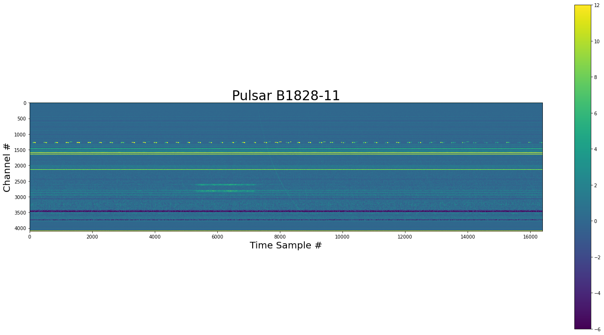
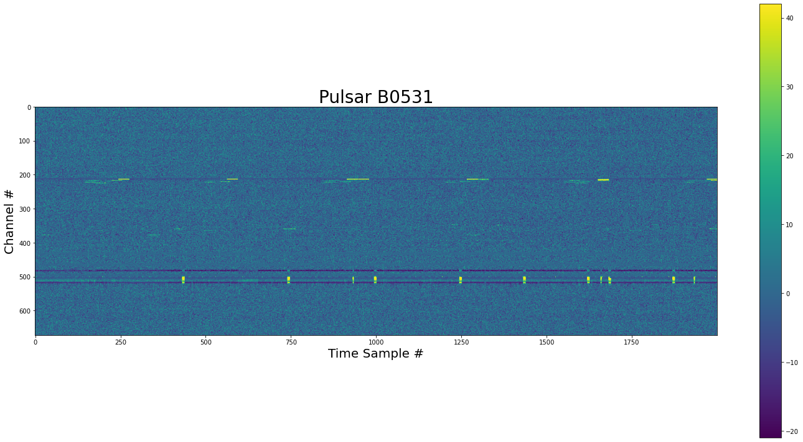

Use Pulse Detection of Optimize Filter Paramters¶
[1]:
import logging
import tempfile
from urllib import request
import cupy as cp
import jess.JESS_filters as Jf
import matplotlib.pyplot as plt
import numpy as np
from jess.dispersion_cupy import dedisperse
from jess.fitters import median_fitter
from jess.JESS_filters_cupy import fft_mad, mad_spectra_flat, zero_dm, zero_dm_fft
from scipy import optimize
from scipy.stats import median_abs_deviation
from will import detect
from your import Your
logging.getLogger().setLevel(logging.INFO)
[2]:
def show_dynamic(dynamic_spectra: np.ndarray, title: str = None, save: bool = False):
"""
Show a dynamic spectra by first flattening it
in frequency. Do this by getting the medians of
each channel and then run a median filter along the
bandpass.
Then set the limits of the imshow so we get good detail
for the majority of the data.
Args:
dynmaic_spectra - the dynamic spectra to plot
title - Title of plot
save - Save the plot as `title` + `.png`
"""
spectra_mads = median_fitter(np.median(dynamic_spectra, axis=0))
flat = dynamic_spectra - spectra_mads
std = median_abs_deviation(flat, axis=None)
med = np.median(flat)
plt.figure(figsize=(20, 10))
plt.imshow(flat.T, vmin=med - 3 * std, vmax=med + 6 * std)
plt.xlabel("Time Sample #", size=20)
plt.ylabel("Channel #", size=20)
plt.colorbar()
plt.tight_layout()
if title is not None:
plt.title(title, size=28)
if save:
plt.savefig(title + ".png", dpi=200)
Get a chunk of dynamic spectra with a pulse¶
[3]:
# a temp directory
temp_dir = tempfile.TemporaryDirectory()
B1828_fil = temp_dir.name + "/B1828.fil"
request.urlretrieve("https://zenodo.org/record/5866463/files/B1828.fil", B1828_fil)
[3]:
('/tmp/tmplc1qvj4r/B1828.fil', <http.client.HTTPMessage at 0x7fb7698b5d00>)
[4]:
yr_obj_B1828 = Your(B1828_fil)
dynamic_spectra_B1828 = yr_obj_B1828.get_data(0, 16384)
[5]:
show_dynamic(dynamic_spectra_B1828, title="Pulsar B1828-11")

[6]:
dynamic_spectra_B1828 = cp.asarray(
dynamic_spectra_B1828
) # use cupy else the filters else this will take a long time
Define Function to optimize¶
[7]:
def clean(
x: list,
dynamic_spectra: np.array,
yr_obj: Your,
dm: float,
box_car_length: int,
start_idx: int,
end_idx: int,
) -> float:
"""
Clean the data and then calculate the pulse singal to noise.
Args:
x - contains the paramater we will optimize over
dynamic_spectra - Data chunk to be cleaned
yr_object - The Your object for the data we care cleaning
and searching
dm - Dismpersion Measure
box_cat_length - Box car size of pulse in number of samples
start_idx - Start index of the pulse search
end_idx - End index of the pusle search
Returns:
Negative snr
"""
sigma_mad = x[0]
sigma_fft = x[1]
modes_to_zero = int(np.around(x[2]))
chans_per_subband = int(np.around(x[3]))
time_median_size = int(np.around(x[4]))
flatten_to = 64
if modes_to_zero >= 1:
bandpass = cp.array([flatten_to] * yr_obj.your_header.nchans)
mad_cleaned, _, mad_per_masked = mad_spectra_flat(
dynamic_spectra,
chans_per_subband=chans_per_subband,
sigma=sigma_mad,
flatten_to=flatten_to,
time_median_size=time_median_size,
return_same_dtype=False,
)
cleaned, _, fft_per_masked = fft_mad(
mad_cleaned,
sigma=sigma_fft,
chans_per_subband=chans_per_subband,
return_same_dtype=False,
)
if modes_to_zero == 1:
logging.debug("Zero DMing: Subtracting Mean")
cleaned, zero_per_masked = zero_dm(cleaned, bandpass, return_same_dtype=False)
elif modes_to_zero > 1:
logging.debug("High Pass filtering: removing %i modes", modes_to_zero)
cleaned, zero_per_masked = zero_dm_fft(
cleaned, bandpass, modes_to_zero=modes_to_zero, return_same_dtype=False
)
else:
zero_per_masked = 0
cleaned = cleaned.get()
time_series = detect.dedisped_time_series(
cleaned,
dm=dm,
tsamp=yr_obj.your_header.tsamp,
chan_freqs=yr_obj.chan_freqs,
)
pulses = detect.detect_pulses(time_series, box_car_length=box_car_length, sigma=5)
pulse = detect.find_max_pulse(pulses, start_idx, end_idx)
if pulse.snr is None:
pulse.snr = 0
logging.info(
"mad - sig:%.2f flag:%.2f; fft - sig:%.2f flag:%.2f; modes_zero:%i flag:%.2f; chans_per_sub:%i; time_median:%i; snr:%.2f",
sigma_mad,
mad_per_masked,
sigma_fft,
fft_per_masked,
modes_to_zero,
zero_per_masked,
chans_per_subband,
time_median_size,
pulse.snr,
)
return -pulse.snr
[8]:
bounds_clean = [[3, 18], [3, 18], [0, 20], [32, 256], [0, 128]]
# sigma_mad, sigma_fft , modes_to_zeros, chans_per_subband, time_median_size
x0_clean = [9, 9, 3, 256, 7]
static_args_B1828 = (dynamic_spectra_B1828, yr_obj_B1828, 159.70, 8, 7000, 9000)
result_B1828_clean_dual_annealing = optimize.dual_annealing(
clean,
bounds=bounds_clean,
x0=x0_clean,
args=static_args_B1828,
maxfun=500,
)
/home/jwkania/programs/miniconda3/envs/kpe/lib/python3.8/site-packages/cupy/fft/_fft.py:152: UserWarning: cuFFT plan cache is disabled on CUDA 11.1 due to a known bug, so performance may be degraded. The bug is fixed on CUDA 11.2+.
cache = get_plan_cache()
INFO:root:mad - sig:9.00 flag:1.58; fft - sig:9.00 flag:0.06; modes_zero:3 flag:0.29; chans_per_sub:256; time_median:7; snr:31.69
INFO:root:mad - sig:11.67 flag:1.56; fft - sig:12.76 flag:0.03; modes_zero:17 flag:1.66; chans_per_sub:234; time_median:113; snr:29.58
INFO:root:mad - sig:3.32 flag:4.12; fft - sig:7.93 flag:0.00; modes_zero:17 flag:1.66; chans_per_sub:49; time_median:37; snr:29.61
INFO:root:mad - sig:7.18 flag:3.10; fft - sig:5.30 flag:0.16; modes_zero:14 flag:1.37; chans_per_sub:111; time_median:98; snr:31.52
INFO:root:mad - sig:16.26 flag:1.58; fft - sig:14.38 flag:0.09; modes_zero:15 flag:1.46; chans_per_sub:184; time_median:126; snr:29.67
INFO:root:mad - sig:17.70 flag:2.27; fft - sig:11.65 flag:0.13; modes_zero:7 flag:0.68; chans_per_sub:198; time_median:90; snr:29.88
INFO:root:mad - sig:7.00 flag:3.60; fft - sig:11.65 flag:0.01; modes_zero:7 flag:0.68; chans_per_sub:198; time_median:90; snr:33.98
INFO:root:mad - sig:7.00 flag:3.60; fft - sig:14.44 flag:0.01; modes_zero:7 flag:0.68; chans_per_sub:198; time_median:90; snr:33.92
INFO:root:mad - sig:7.00 flag:3.60; fft - sig:14.44 flag:0.01; modes_zero:17 flag:1.66; chans_per_sub:198; time_median:90; snr:33.53
INFO:root:mad - sig:7.00 flag:3.35; fft - sig:14.44 flag:0.00; modes_zero:17 flag:1.66; chans_per_sub:68; time_median:90; snr:31.00
INFO:root:mad - sig:7.00 flag:3.03; fft - sig:14.44 flag:0.00; modes_zero:17 flag:1.66; chans_per_sub:68; time_median:18; snr:30.79
INFO:root:mad - sig:7.00 flag:3.60; fft - sig:11.65 flag:0.01; modes_zero:7 flag:0.68; chans_per_sub:198; time_median:90; snr:33.98
INFO:root:mad - sig:7.00 flag:3.60; fft - sig:11.65 flag:0.01; modes_zero:7 flag:0.68; chans_per_sub:198; time_median:90; snr:33.98
INFO:root:mad - sig:7.00 flag:3.60; fft - sig:11.65 flag:0.01; modes_zero:7 flag:0.68; chans_per_sub:198; time_median:90; snr:33.98
INFO:root:mad - sig:7.00 flag:3.60; fft - sig:11.65 flag:0.01; modes_zero:7 flag:0.68; chans_per_sub:198; time_median:90; snr:33.98
INFO:root:mad - sig:7.00 flag:3.60; fft - sig:11.65 flag:0.01; modes_zero:7 flag:0.68; chans_per_sub:198; time_median:90; snr:33.98
INFO:root:mad - sig:7.00 flag:3.60; fft - sig:11.65 flag:0.01; modes_zero:7 flag:0.68; chans_per_sub:198; time_median:90; snr:33.98
INFO:root:mad - sig:14.29 flag:2.84; fft - sig:15.21 flag:0.01; modes_zero:19 flag:1.85; chans_per_sub:52; time_median:56; snr:28.36
INFO:root:mad - sig:11.44 flag:2.81; fft - sig:13.88 flag:0.03; modes_zero:11 flag:1.07; chans_per_sub:211; time_median:40; snr:29.99
INFO:root:mad - sig:15.95 flag:2.73; fft - sig:3.38 flag:1.75; modes_zero:12 flag:1.17; chans_per_sub:136; time_median:33; snr:30.11
INFO:root:mad - sig:13.46 flag:3.01; fft - sig:4.47 flag:1.30; modes_zero:15 flag:1.46; chans_per_sub:38; time_median:76; snr:27.72
INFO:root:mad - sig:11.85 flag:2.84; fft - sig:17.86 flag:0.02; modes_zero:3 flag:0.29; chans_per_sub:214; time_median:59; snr:29.48
INFO:root:mad - sig:14.05 flag:2.76; fft - sig:17.86 flag:0.02; modes_zero:3 flag:0.29; chans_per_sub:214; time_median:59; snr:29.92
INFO:root:mad - sig:14.05 flag:2.76; fft - sig:3.45 flag:2.18; modes_zero:3 flag:0.29; chans_per_sub:214; time_median:59; snr:32.33
INFO:root:mad - sig:14.05 flag:2.76; fft - sig:3.45 flag:2.18; modes_zero:8 flag:0.78; chans_per_sub:214; time_median:59; snr:32.28
INFO:root:mad - sig:14.05 flag:0.25; fft - sig:3.45 flag:1.64; modes_zero:8 flag:0.78; chans_per_sub:251; time_median:59; snr:31.21
INFO:root:mad - sig:14.05 flag:0.21; fft - sig:3.45 flag:1.64; modes_zero:8 flag:0.78; chans_per_sub:251; time_median:83; snr:31.45
INFO:root:mad - sig:10.82 flag:2.75; fft - sig:8.28 flag:0.11; modes_zero:8 flag:0.78; chans_per_sub:220; time_median:27; snr:29.89
INFO:root:mad - sig:15.42 flag:2.02; fft - sig:16.25 flag:0.04; modes_zero:16 flag:1.56; chans_per_sub:184; time_median:67; snr:29.82
INFO:root:mad - sig:10.64 flag:3.11; fft - sig:9.18 flag:0.04; modes_zero:9 flag:0.88; chans_per_sub:45; time_median:120; snr:29.01
INFO:root:mad - sig:9.35 flag:2.83; fft - sig:10.45 flag:0.08; modes_zero:15 flag:1.46; chans_per_sub:203; time_median:54; snr:30.44
INFO:root:mad - sig:16.82 flag:2.26; fft - sig:7.68 flag:0.22; modes_zero:12 flag:1.17; chans_per_sub:96; time_median:32; snr:29.16
INFO:root:mad - sig:11.08 flag:2.40; fft - sig:7.68 flag:0.20; modes_zero:12 flag:1.17; chans_per_sub:96; time_median:32; snr:29.77
INFO:root:mad - sig:11.08 flag:2.40; fft - sig:13.04 flag:0.04; modes_zero:12 flag:1.17; chans_per_sub:96; time_median:32; snr:29.95
INFO:root:mad - sig:11.08 flag:2.40; fft - sig:13.04 flag:0.04; modes_zero:15 flag:1.46; chans_per_sub:96; time_median:32; snr:29.82
INFO:root:mad - sig:11.08 flag:2.99; fft - sig:13.04 flag:0.03; modes_zero:15 flag:1.46; chans_per_sub:79; time_median:32; snr:28.61
INFO:root:mad - sig:11.08 flag:2.99; fft - sig:13.04 flag:0.02; modes_zero:15 flag:1.46; chans_per_sub:79; time_median:49; snr:28.70
INFO:root:mad - sig:3.94 flag:3.56; fft - sig:9.22 flag:0.00; modes_zero:6 flag:0.59; chans_per_sub:60; time_median:116; snr:31.33
INFO:root:mad - sig:8.08 flag:3.18; fft - sig:15.31 flag:0.01; modes_zero:16 flag:1.56; chans_per_sub:217; time_median:51; snr:32.21
INFO:root:mad - sig:8.43 flag:3.10; fft - sig:7.07 flag:0.14; modes_zero:3 flag:0.29; chans_per_sub:188; time_median:26; snr:31.56
INFO:root:mad - sig:8.99 flag:3.08; fft - sig:7.63 flag:0.06; modes_zero:18 flag:1.76; chans_per_sub:79; time_median:128; snr:29.32
INFO:root:mad - sig:3.73 flag:2.37; fft - sig:7.30 flag:0.01; modes_zero:6 flag:0.59; chans_per_sub:246; time_median:58; snr:31.63
INFO:root:mad - sig:3.15 flag:3.92; fft - sig:7.30 flag:0.01; modes_zero:6 flag:0.59; chans_per_sub:246; time_median:58; snr:30.23
INFO:root:mad - sig:3.15 flag:3.92; fft - sig:13.38 flag:0.00; modes_zero:6 flag:0.59; chans_per_sub:246; time_median:58; snr:30.14
INFO:root:mad - sig:3.15 flag:3.92; fft - sig:13.38 flag:0.00; modes_zero:6 flag:0.59; chans_per_sub:246; time_median:58; snr:30.14
INFO:root:mad - sig:3.15 flag:4.60; fft - sig:13.38 flag:0.00; modes_zero:6 flag:0.59; chans_per_sub:65; time_median:58; snr:28.64
INFO:root:mad - sig:3.15 flag:4.58; fft - sig:13.38 flag:0.00; modes_zero:6 flag:0.59; chans_per_sub:65; time_median:46; snr:28.99
INFO:root:mad - sig:6.53 flag:2.64; fft - sig:12.52 flag:0.01; modes_zero:19 flag:1.85; chans_per_sub:94; time_median:76; snr:32.56
INFO:root:mad - sig:17.71 flag:3.20; fft - sig:15.19 flag:0.01; modes_zero:19 flag:1.85; chans_per_sub:58; time_median:94; snr:27.78
INFO:root:mad - sig:12.95 flag:3.32; fft - sig:12.80 flag:0.04; modes_zero:9 flag:0.88; chans_per_sub:130; time_median:35; snr:30.01
INFO:root:mad - sig:17.97 flag:2.33; fft - sig:3.69 flag:1.20; modes_zero:14 flag:1.37; chans_per_sub:102; time_median:45; snr:28.63
INFO:root:mad - sig:13.28 flag:1.74; fft - sig:3.38 flag:1.72; modes_zero:19 flag:1.85; chans_per_sub:147; time_median:58; snr:29.55
INFO:root:mad - sig:12.44 flag:1.77; fft - sig:3.38 flag:1.63; modes_zero:19 flag:1.85; chans_per_sub:147; time_median:58; snr:29.34
INFO:root:mad - sig:12.44 flag:1.77; fft - sig:4.34 flag:0.64; modes_zero:19 flag:1.85; chans_per_sub:147; time_median:58; snr:29.42
INFO:root:mad - sig:12.44 flag:1.77; fft - sig:4.34 flag:0.64; modes_zero:12 flag:1.17; chans_per_sub:147; time_median:58; snr:29.65
INFO:root:mad - sig:12.44 flag:2.83; fft - sig:4.34 flag:0.83; modes_zero:12 flag:1.17; chans_per_sub:217; time_median:58; snr:31.33
INFO:root:mad - sig:12.44 flag:2.28; fft - sig:4.34 flag:0.83; modes_zero:12 flag:1.17; chans_per_sub:217; time_median:16; snr:31.14
INFO:root:mad - sig:7.35 flag:3.40; fft - sig:6.36 flag:0.14; modes_zero:17 flag:1.66; chans_per_sub:192; time_median:23; snr:32.42
INFO:root:mad - sig:4.55 flag:2.23; fft - sig:3.23 flag:1.45; modes_zero:1 flag:0.02; chans_per_sub:155; time_median:18; snr:31.13
INFO:root:mad - sig:13.10 flag:2.64; fft - sig:11.78 flag:0.04; modes_zero:20 flag:1.95; chans_per_sub:110; time_median:117; snr:27.93
INFO:root:mad - sig:9.65 flag:2.07; fft - sig:12.73 flag:0.03; modes_zero:7 flag:0.68; chans_per_sub:143; time_median:99; snr:30.06
INFO:root:mad - sig:12.73 flag:1.49; fft - sig:17.39 flag:0.01; modes_zero:11 flag:1.07; chans_per_sub:88; time_median:2; snr:28.50
INFO:root:mad - sig:17.77 flag:1.85; fft - sig:12.73 flag:0.08; modes_zero:7 flag:0.68; chans_per_sub:143; time_median:99; snr:28.60
INFO:root:mad - sig:17.77 flag:1.85; fft - sig:6.90 flag:0.37; modes_zero:7 flag:0.68; chans_per_sub:143; time_median:99; snr:29.01
INFO:root:mad - sig:17.77 flag:1.85; fft - sig:6.90 flag:0.37; modes_zero:18 flag:1.76; chans_per_sub:143; time_median:99; snr:28.10
INFO:root:mad - sig:17.77 flag:1.35; fft - sig:6.90 flag:0.60; modes_zero:18 flag:1.76; chans_per_sub:181; time_median:99; snr:29.56
INFO:root:mad - sig:17.77 flag:1.26; fft - sig:6.90 flag:0.60; modes_zero:18 flag:1.76; chans_per_sub:181; time_median:127; snr:29.53
INFO:root:mad - sig:3.64 flag:4.57; fft - sig:14.87 flag:0.00; modes_zero:2 flag:0.20; chans_per_sub:122; time_median:53; snr:31.25
INFO:root:mad - sig:16.99 flag:2.92; fft - sig:14.09 flag:0.02; modes_zero:14 flag:1.37; chans_per_sub:54; time_median:85; snr:28.28
INFO:root:mad - sig:3.78 flag:3.84; fft - sig:7.84 flag:0.01; modes_zero:12 flag:1.17; chans_per_sub:239; time_median:34; snr:30.66
INFO:root:mad - sig:10.12 flag:1.45; fft - sig:14.18 flag:0.03; modes_zero:13 flag:1.27; chans_per_sub:165; time_median:18; snr:29.49
INFO:root:mad - sig:17.82 flag:2.33; fft - sig:6.88 flag:0.46; modes_zero:8 flag:0.78; chans_per_sub:188; time_median:93; snr:30.64
INFO:root:mad - sig:8.28 flag:3.25; fft - sig:6.88 flag:0.09; modes_zero:8 flag:0.78; chans_per_sub:188; time_median:93; snr:31.91
INFO:root:mad - sig:8.28 flag:3.25; fft - sig:11.01 flag:0.01; modes_zero:8 flag:0.78; chans_per_sub:188; time_median:93; snr:31.65
INFO:root:mad - sig:8.28 flag:3.25; fft - sig:11.01 flag:0.01; modes_zero:8 flag:0.78; chans_per_sub:188; time_median:93; snr:31.65
INFO:root:mad - sig:8.28 flag:3.14; fft - sig:11.01 flag:0.02; modes_zero:8 flag:0.78; chans_per_sub:79; time_median:93; snr:31.15
INFO:root:mad - sig:8.28 flag:3.14; fft - sig:11.01 flag:0.02; modes_zero:8 flag:0.78; chans_per_sub:79; time_median:87; snr:30.75
INFO:root:mad - sig:6.34 flag:3.28; fft - sig:12.61 flag:0.02; modes_zero:6 flag:0.59; chans_per_sub:216; time_median:17; snr:33.52
INFO:root:mad - sig:8.74 flag:2.34; fft - sig:3.83 flag:0.85; modes_zero:1 flag:0.02; chans_per_sub:238; time_median:115; snr:32.68
INFO:root:mad - sig:8.57 flag:1.65; fft - sig:11.04 flag:0.03; modes_zero:18 flag:1.76; chans_per_sub:152; time_median:30; snr:29.97
INFO:root:mad - sig:12.73 flag:2.37; fft - sig:14.73 flag:0.03; modes_zero:10 flag:0.98; chans_per_sub:182; time_median:92; snr:29.33
INFO:root:mad - sig:13.44 flag:2.78; fft - sig:16.63 flag:0.03; modes_zero:6 flag:0.59; chans_per_sub:210; time_median:67; snr:29.74
INFO:root:mad - sig:3.97 flag:4.94; fft - sig:16.63 flag:0.00; modes_zero:6 flag:0.59; chans_per_sub:210; time_median:67; snr:32.67
INFO:root:mad - sig:3.97 flag:4.94; fft - sig:15.68 flag:0.00; modes_zero:6 flag:0.59; chans_per_sub:210; time_median:67; snr:32.66
INFO:root:mad - sig:3.97 flag:4.94; fft - sig:15.68 flag:0.00; modes_zero:7 flag:0.68; chans_per_sub:210; time_median:67; snr:32.60
INFO:root:mad - sig:3.97 flag:2.41; fft - sig:15.68 flag:0.00; modes_zero:7 flag:0.68; chans_per_sub:246; time_median:67; snr:31.87
INFO:root:mad - sig:3.97 flag:2.25; fft - sig:15.68 flag:0.00; modes_zero:7 flag:0.68; chans_per_sub:246; time_median:50; snr:32.16
INFO:root:mad - sig:11.89 flag:2.43; fft - sig:8.38 flag:0.09; modes_zero:15 flag:1.46; chans_per_sub:98; time_median:22; snr:29.82
INFO:root:mad - sig:5.60 flag:3.86; fft - sig:16.72 flag:0.00; modes_zero:20 flag:1.95; chans_per_sub:202; time_median:122; snr:33.44
INFO:root:mad - sig:10.76 flag:2.99; fft - sig:15.72 flag:0.02; modes_zero:1 flag:0.02; chans_per_sub:221; time_median:101; snr:29.70
INFO:root:mad - sig:6.71 flag:2.94; fft - sig:7.72 flag:0.05; modes_zero:10 flag:0.98; chans_per_sub:176; time_median:89; snr:32.83
INFO:root:mad - sig:5.46 flag:3.62; fft - sig:5.77 flag:0.14; modes_zero:9 flag:0.88; chans_per_sub:223; time_median:44; snr:33.72
INFO:root:mad - sig:15.92 flag:2.36; fft - sig:5.77 flag:0.44; modes_zero:9 flag:0.88; chans_per_sub:223; time_median:44; snr:30.34
INFO:root:mad - sig:15.92 flag:2.36; fft - sig:17.59 flag:0.03; modes_zero:9 flag:0.88; chans_per_sub:223; time_median:44; snr:30.01
INFO:root:mad - sig:15.92 flag:2.36; fft - sig:17.59 flag:0.03; modes_zero:19 flag:1.85; chans_per_sub:223; time_median:44; snr:29.60
INFO:root:mad - sig:15.92 flag:1.34; fft - sig:17.59 flag:0.02; modes_zero:19 flag:1.85; chans_per_sub:157; time_median:44; snr:28.03
INFO:root:mad - sig:15.92 flag:1.49; fft - sig:17.59 flag:0.02; modes_zero:19 flag:1.85; chans_per_sub:157; time_median:112; snr:28.06
INFO:root:mad - sig:4.79 flag:2.38; fft - sig:5.01 flag:0.19; modes_zero:19 flag:1.85; chans_per_sub:156; time_median:17; snr:32.01
INFO:root:mad - sig:11.75 flag:2.52; fft - sig:16.64 flag:0.02; modes_zero:2 flag:0.20; chans_per_sub:225; time_median:22; snr:29.95
INFO:root:mad - sig:14.10 flag:2.95; fft - sig:3.03 flag:2.52; modes_zero:9 flag:0.88; chans_per_sub:70; time_median:38; snr:29.26
INFO:root:mad - sig:15.09 flag:3.13; fft - sig:4.02 flag:1.20; modes_zero:15 flag:1.46; chans_per_sub:35; time_median:48; snr:28.72
INFO:root:mad - sig:12.46 flag:2.26; fft - sig:9.49 flag:0.06; modes_zero:18 flag:1.76; chans_per_sub:93; time_median:54; snr:29.25
INFO:root:mad - sig:12.33 flag:2.27; fft - sig:9.49 flag:0.06; modes_zero:18 flag:1.76; chans_per_sub:93; time_median:54; snr:29.29
INFO:root:mad - sig:12.33 flag:2.27; fft - sig:6.56 flag:0.15; modes_zero:18 flag:1.76; chans_per_sub:93; time_median:54; snr:29.43
INFO:root:mad - sig:12.33 flag:2.27; fft - sig:6.56 flag:0.15; modes_zero:11 flag:1.07; chans_per_sub:93; time_median:54; snr:29.85
INFO:root:mad - sig:12.33 flag:2.98; fft - sig:6.56 flag:0.22; modes_zero:11 flag:1.07; chans_per_sub:40; time_median:54; snr:28.96
INFO:root:mad - sig:12.33 flag:2.98; fft - sig:6.56 flag:1.00; modes_zero:11 flag:1.07; chans_per_sub:40; time_median:62; snr:29.13
INFO:root:mad - sig:10.09 flag:2.78; fft - sig:10.48 flag:0.09; modes_zero:14 flag:1.37; chans_per_sub:197; time_median:60; snr:30.57
INFO:root:mad - sig:8.73 flag:3.08; fft - sig:3.82 flag:1.25; modes_zero:7 flag:0.68; chans_per_sub:215; time_median:55; snr:33.41
INFO:root:mad - sig:10.76 flag:2.49; fft - sig:11.25 flag:0.03; modes_zero:15 flag:1.46; chans_per_sub:72; time_median:8; snr:29.58
INFO:root:mad - sig:13.48 flag:2.94; fft - sig:13.41 flag:0.02; modes_zero:18 flag:1.76; chans_per_sub:80; time_median:97; snr:28.37
INFO:root:mad - sig:5.83 flag:3.83; fft - sig:16.45 flag:0.00; modes_zero:15 flag:1.46; chans_per_sub:198; time_median:38; snr:34.30
INFO:root:mad - sig:8.64 flag:2.86; fft - sig:16.45 flag:0.01; modes_zero:15 flag:1.46; chans_per_sub:198; time_median:38; snr:30.90
INFO:root:mad - sig:5.83 flag:3.83; fft - sig:9.79 flag:0.01; modes_zero:15 flag:1.46; chans_per_sub:198; time_median:38; snr:34.33
INFO:root:mad - sig:5.83 flag:3.83; fft - sig:9.79 flag:0.01; modes_zero:16 flag:1.56; chans_per_sub:198; time_median:38; snr:34.37
INFO:root:mad - sig:5.83 flag:2.95; fft - sig:9.79 flag:0.02; modes_zero:16 flag:1.56; chans_per_sub:85; time_median:38; snr:32.08
INFO:root:mad - sig:5.83 flag:3.09; fft - sig:9.79 flag:0.02; modes_zero:16 flag:1.56; chans_per_sub:85; time_median:25; snr:32.30
INFO:root:mad - sig:5.83 flag:3.83; fft - sig:9.79 flag:0.01; modes_zero:16 flag:1.56; chans_per_sub:198; time_median:38; snr:34.37
INFO:root:mad - sig:5.83 flag:3.83; fft - sig:9.79 flag:0.01; modes_zero:16 flag:1.56; chans_per_sub:198; time_median:38; snr:34.37
INFO:root:mad - sig:5.83 flag:3.83; fft - sig:9.79 flag:0.01; modes_zero:16 flag:1.56; chans_per_sub:198; time_median:38; snr:34.37
INFO:root:mad - sig:5.83 flag:3.83; fft - sig:9.79 flag:0.01; modes_zero:16 flag:1.56; chans_per_sub:198; time_median:38; snr:34.37
INFO:root:mad - sig:5.83 flag:3.83; fft - sig:9.79 flag:0.01; modes_zero:16 flag:1.56; chans_per_sub:198; time_median:38; snr:34.37
INFO:root:mad - sig:5.83 flag:3.83; fft - sig:9.79 flag:0.01; modes_zero:16 flag:1.56; chans_per_sub:198; time_median:38; snr:34.37
INFO:root:mad - sig:17.18 flag:2.75; fft - sig:7.27 flag:0.17; modes_zero:6 flag:0.59; chans_per_sub:49; time_median:96; snr:28.51
INFO:root:mad - sig:14.80 flag:2.20; fft - sig:4.71 flag:0.54; modes_zero:16 flag:1.56; chans_per_sub:90; time_median:118; snr:29.81
INFO:root:mad - sig:13.50 flag:1.14; fft - sig:15.42 flag:0.04; modes_zero:7 flag:0.68; chans_per_sub:175; time_median:83; snr:28.68
INFO:root:mad - sig:15.75 flag:1.64; fft - sig:6.58 flag:0.29; modes_zero:18 flag:1.76; chans_per_sub:230; time_median:1; snr:29.67
INFO:root:mad - sig:8.46 flag:2.42; fft - sig:15.24 flag:0.01; modes_zero:14 flag:1.37; chans_per_sub:90; time_median:7; snr:30.17
INFO:root:mad - sig:16.33 flag:2.13; fft - sig:15.24 flag:0.02; modes_zero:14 flag:1.37; chans_per_sub:90; time_median:7; snr:29.43
INFO:root:mad - sig:16.33 flag:2.13; fft - sig:4.93 flag:0.59; modes_zero:14 flag:1.37; chans_per_sub:90; time_median:7; snr:29.84
INFO:root:mad - sig:16.33 flag:2.13; fft - sig:4.93 flag:0.59; modes_zero:9 flag:0.88; chans_per_sub:90; time_median:7; snr:30.03
INFO:root:mad - sig:16.33 flag:2.52; fft - sig:4.93 flag:0.48; modes_zero:9 flag:0.88; chans_per_sub:64; time_median:7; snr:29.50
INFO:root:mad - sig:16.33 flag:2.94; fft - sig:4.93 flag:0.42; modes_zero:9 flag:0.88; chans_per_sub:64; time_median:126; snr:29.52
INFO:root:mad - sig:14.89 flag:2.70; fft - sig:14.21 flag:0.03; modes_zero:15 flag:1.46; chans_per_sub:112; time_median:116; snr:28.36
INFO:root:mad - sig:10.78 flag:2.51; fft - sig:10.09 flag:0.11; modes_zero:10 flag:0.98; chans_per_sub:204; time_median:15; snr:30.47
INFO:root:mad - sig:11.36 flag:3.12; fft - sig:10.67 flag:0.02; modes_zero:20 flag:1.95; chans_per_sub:43; time_median:35; snr:28.06
INFO:root:mad - sig:12.08 flag:2.86; fft - sig:4.79 flag:0.70; modes_zero:17 flag:1.66; chans_per_sub:194; time_median:88; snr:30.22
INFO:root:mad - sig:9.60 flag:2.12; fft - sig:15.56 flag:0.01; modes_zero:17 flag:1.66; chans_per_sub:237; time_median:125; snr:30.27
INFO:root:mad - sig:10.94 flag:1.70; fft - sig:15.56 flag:0.01; modes_zero:17 flag:1.66; chans_per_sub:237; time_median:125; snr:29.41
INFO:root:mad - sig:9.60 flag:2.12; fft - sig:11.11 flag:0.03; modes_zero:17 flag:1.66; chans_per_sub:237; time_median:125; snr:30.19
INFO:root:mad - sig:9.60 flag:2.12; fft - sig:11.11 flag:0.03; modes_zero:1 flag:0.02; chans_per_sub:237; time_median:125; snr:30.59
INFO:root:mad - sig:9.60 flag:2.12; fft - sig:11.11 flag:0.03; modes_zero:1 flag:0.02; chans_per_sub:237; time_median:125; snr:30.59
INFO:root:mad - sig:9.60 flag:1.90; fft - sig:11.11 flag:0.03; modes_zero:1 flag:0.02; chans_per_sub:237; time_median:72; snr:30.69
INFO:root:mad - sig:12.43 flag:1.91; fft - sig:16.25 flag:0.02; modes_zero:15 flag:1.46; chans_per_sub:138; time_median:92; snr:29.75
INFO:root:mad - sig:3.56 flag:4.62; fft - sig:7.95 flag:0.01; modes_zero:16 flag:1.56; chans_per_sub:221; time_median:88; snr:31.29
INFO:root:mad - sig:3.23 flag:4.43; fft - sig:16.46 flag:0.00; modes_zero:5 flag:0.49; chans_per_sub:111; time_median:19; snr:30.04
INFO:root:mad - sig:10.44 flag:1.85; fft - sig:16.82 flag:0.01; modes_zero:11 flag:1.07; chans_per_sub:172; time_median:32; snr:29.32
INFO:root:mad - sig:10.16 flag:2.84; fft - sig:8.32 flag:0.09; modes_zero:12 flag:1.17; chans_per_sub:112; time_median:103; snr:29.68
INFO:root:mad - sig:17.85 flag:2.64; fft - sig:8.32 flag:0.21; modes_zero:12 flag:1.17; chans_per_sub:112; time_median:103; snr:28.29
INFO:root:mad - sig:10.16 flag:2.84; fft - sig:3.65 flag:1.10; modes_zero:12 flag:1.17; chans_per_sub:112; time_median:103; snr:29.68
INFO:root:mad - sig:10.16 flag:2.84; fft - sig:3.65 flag:1.10; modes_zero:13 flag:1.27; chans_per_sub:112; time_median:103; snr:29.68
INFO:root:mad - sig:10.16 flag:2.32; fft - sig:3.65 flag:1.03; modes_zero:13 flag:1.27; chans_per_sub:93; time_median:103; snr:30.51
INFO:root:mad - sig:10.16 flag:2.32; fft - sig:3.65 flag:1.08; modes_zero:13 flag:1.27; chans_per_sub:93; time_median:13; snr:30.71
INFO:root:mad - sig:9.86 flag:3.09; fft - sig:13.51 flag:0.01; modes_zero:1 flag:0.02; chans_per_sub:68; time_median:60; snr:29.02
INFO:root:mad - sig:3.14 flag:4.58; fft - sig:13.97 flag:0.00; modes_zero:19 flag:1.85; chans_per_sub:68; time_median:78; snr:28.01
INFO:root:mad - sig:5.53 flag:3.34; fft - sig:12.18 flag:0.01; modes_zero:10 flag:0.98; chans_per_sub:184; time_median:104; snr:33.24
INFO:root:mad - sig:14.52 flag:1.49; fft - sig:15.68 flag:0.04; modes_zero:1 flag:0.02; chans_per_sub:171; time_median:27; snr:28.73
INFO:root:mad - sig:10.41 flag:2.30; fft - sig:11.99 flag:0.03; modes_zero:5 flag:0.49; chans_per_sub:92; time_median:5; snr:29.97
INFO:root:mad - sig:7.02 flag:3.16; fft - sig:12.18 flag:0.01; modes_zero:10 flag:0.98; chans_per_sub:184; time_median:104; snr:33.02
INFO:root:mad - sig:7.02 flag:3.16; fft - sig:4.53 flag:0.42; modes_zero:10 flag:0.98; chans_per_sub:184; time_median:104; snr:33.06
INFO:root:mad - sig:7.02 flag:3.16; fft - sig:4.53 flag:0.42; modes_zero:11 flag:1.07; chans_per_sub:184; time_median:104; snr:33.13
INFO:root:mad - sig:7.02 flag:3.16; fft - sig:4.53 flag:0.42; modes_zero:11 flag:1.07; chans_per_sub:186; time_median:104; snr:33.13
INFO:root:mad - sig:7.02 flag:3.15; fft - sig:4.53 flag:0.42; modes_zero:11 flag:1.07; chans_per_sub:186; time_median:91; snr:33.04
INFO:root:mad - sig:11.08 flag:3.11; fft - sig:6.28 flag:0.14; modes_zero:8 flag:0.78; chans_per_sub:66; time_median:104; snr:28.80
INFO:root:mad - sig:7.67 flag:3.07; fft - sig:13.45 flag:0.01; modes_zero:19 flag:1.85; chans_per_sub:182; time_median:119; snr:32.09
INFO:root:mad - sig:11.32 flag:2.51; fft - sig:14.05 flag:0.03; modes_zero:17 flag:1.66; chans_per_sub:200; time_median:34; snr:29.80
INFO:root:mad - sig:3.93 flag:2.57; fft - sig:14.07 flag:0.00; modes_zero:8 flag:0.78; chans_per_sub:243; time_median:21; snr:31.67
INFO:root:mad - sig:3.47 flag:3.85; fft - sig:16.56 flag:0.00; modes_zero:13 flag:1.27; chans_per_sub:63; time_median:21; snr:30.98
INFO:root:mad - sig:13.74 flag:2.90; fft - sig:16.56 flag:0.01; modes_zero:13 flag:1.27; chans_per_sub:63; time_median:21; snr:28.52
INFO:root:mad - sig:3.47 flag:3.85; fft - sig:3.97 flag:0.32; modes_zero:13 flag:1.27; chans_per_sub:63; time_median:21; snr:31.34
INFO:root:mad - sig:3.47 flag:3.85; fft - sig:3.97 flag:0.32; modes_zero:5 flag:0.49; chans_per_sub:63; time_median:21; snr:31.34
INFO:root:mad - sig:3.47 flag:4.19; fft - sig:3.97 flag:0.45; modes_zero:5 flag:0.49; chans_per_sub:239; time_median:21; snr:31.37
INFO:root:mad - sig:3.47 flag:4.30; fft - sig:3.97 flag:0.42; modes_zero:5 flag:0.49; chans_per_sub:239; time_median:84; snr:30.84
INFO:root:mad - sig:5.65 flag:3.64; fft - sig:9.11 flag:0.01; modes_zero:7 flag:0.68; chans_per_sub:35; time_median:73; snr:32.65
INFO:root:mad - sig:3.57 flag:3.62; fft - sig:8.45 flag:0.00; modes_zero:17 flag:1.66; chans_per_sub:75; time_median:109; snr:31.11
INFO:root:mad - sig:3.50 flag:4.73; fft - sig:16.67 flag:0.00; modes_zero:6 flag:0.59; chans_per_sub:204; time_median:23; snr:31.51
INFO:root:mad - sig:13.13 flag:3.07; fft - sig:7.95 flag:0.08; modes_zero:5 flag:0.49; chans_per_sub:42; time_median:55; snr:28.82
INFO:root:mad - sig:11.32 flag:2.94; fft - sig:17.62 flag:0.00; modes_zero:10 flag:0.98; chans_per_sub:45; time_median:12; snr:29.15
INFO:root:mad - sig:9.61 flag:3.33; fft - sig:9.11 flag:0.03; modes_zero:7 flag:0.68; chans_per_sub:35; time_median:73; snr:28.90
INFO:root:mad - sig:5.65 flag:3.64; fft - sig:5.32 flag:0.08; modes_zero:7 flag:0.68; chans_per_sub:35; time_median:73; snr:32.63
INFO:root:mad - sig:5.65 flag:3.64; fft - sig:5.32 flag:0.08; modes_zero:18 flag:1.76; chans_per_sub:35; time_median:73; snr:32.34
INFO:root:mad - sig:5.65 flag:2.81; fft - sig:5.32 flag:0.10; modes_zero:18 flag:1.76; chans_per_sub:100; time_median:73; snr:32.64
INFO:root:mad - sig:5.65 flag:2.81; fft - sig:5.32 flag:0.10; modes_zero:18 flag:1.76; chans_per_sub:100; time_median:61; snr:32.75
INFO:root:mad - sig:13.21 flag:2.39; fft - sig:3.64 flag:1.19; modes_zero:0 flag:0.00; chans_per_sub:98; time_median:82; snr:29.66
INFO:root:mad - sig:12.43 flag:2.81; fft - sig:10.95 flag:1.19; modes_zero:10 flag:0.98; chans_per_sub:34; time_median:112; snr:28.79
INFO:root:mad - sig:14.09 flag:2.40; fft - sig:4.29 flag:0.65; modes_zero:1 flag:0.02; chans_per_sub:102; time_median:44; snr:29.35
INFO:root:mad - sig:10.28 flag:1.98; fft - sig:12.56 flag:0.03; modes_zero:7 flag:0.68; chans_per_sub:178; time_median:118; snr:29.41
INFO:root:mad - sig:7.62 flag:3.13; fft - sig:6.11 flag:0.16; modes_zero:13 flag:1.27; chans_per_sub:221; time_median:25; snr:32.82
INFO:root:mad - sig:17.75 flag:2.09; fft - sig:6.11 flag:0.43; modes_zero:13 flag:1.27; chans_per_sub:221; time_median:25; snr:30.35
INFO:root:mad - sig:7.62 flag:3.13; fft - sig:7.58 flag:0.08; modes_zero:13 flag:1.27; chans_per_sub:221; time_median:25; snr:33.05
INFO:root:mad - sig:7.62 flag:3.13; fft - sig:7.58 flag:0.08; modes_zero:4 flag:0.39; chans_per_sub:221; time_median:25; snr:33.10
INFO:root:mad - sig:7.62 flag:3.52; fft - sig:7.58 flag:0.03; modes_zero:4 flag:0.39; chans_per_sub:37; time_median:25; snr:29.99
INFO:root:mad - sig:7.62 flag:3.05; fft - sig:7.58 flag:0.08; modes_zero:4 flag:0.39; chans_per_sub:221; time_median:17; snr:33.29
INFO:root:mad - sig:3.95 flag:4.60; fft - sig:16.83 flag:0.00; modes_zero:9 flag:0.88; chans_per_sub:196; time_median:82; snr:32.42
INFO:root:mad - sig:9.44 flag:3.21; fft - sig:16.82 flag:0.01; modes_zero:14 flag:1.37; chans_per_sub:82; time_median:118; snr:29.05
INFO:root:mad - sig:12.50 flag:1.98; fft - sig:17.01 flag:0.02; modes_zero:2 flag:0.20; chans_per_sub:146; time_median:104; snr:29.71
INFO:root:mad - sig:3.96 flag:3.71; fft - sig:14.62 flag:0.00; modes_zero:17 flag:1.66; chans_per_sub:61; time_median:115; snr:30.86
INFO:root:mad - sig:13.68 flag:3.09; fft - sig:7.56 flag:0.22; modes_zero:10 flag:0.98; chans_per_sub:123; time_median:54; snr:30.03
INFO:root:mad - sig:8.60 flag:2.88; fft - sig:7.58 flag:0.09; modes_zero:4 flag:0.39; chans_per_sub:221; time_median:17; snr:32.16
INFO:root:mad - sig:7.62 flag:3.05; fft - sig:17.75 flag:0.01; modes_zero:4 flag:0.39; chans_per_sub:221; time_median:17; snr:32.93
INFO:root:mad - sig:7.62 flag:3.05; fft - sig:17.75 flag:0.01; modes_zero:3 flag:0.29; chans_per_sub:221; time_median:17; snr:32.99
INFO:root:mad - sig:7.62 flag:2.33; fft - sig:17.75 flag:0.01; modes_zero:3 flag:0.29; chans_per_sub:137; time_median:17; snr:30.60
INFO:root:mad - sig:7.62 flag:3.18; fft - sig:17.75 flag:0.01; modes_zero:3 flag:0.29; chans_per_sub:221; time_median:46; snr:33.07
INFO:root:mad - sig:9.04 flag:1.87; fft - sig:10.65 flag:0.04; modes_zero:2 flag:0.20; chans_per_sub:153; time_median:11; snr:31.01
INFO:root:mad - sig:17.46 flag:2.90; fft - sig:9.96 flag:0.06; modes_zero:11 flag:1.07; chans_per_sub:64; time_median:83; snr:28.73
INFO:root:mad - sig:16.16 flag:0.48; fft - sig:17.61 flag:0.02; modes_zero:10 flag:0.98; chans_per_sub:231; time_median:111; snr:29.92
INFO:root:mad - sig:11.74 flag:2.43; fft - sig:7.18 flag:0.11; modes_zero:13 flag:1.27; chans_per_sub:98; time_median:24; snr:30.01
INFO:root:mad - sig:12.15 flag:2.95; fft - sig:13.85 flag:0.03; modes_zero:19 flag:1.85; chans_per_sub:114; time_median:56; snr:27.97
INFO:root:mad - sig:11.54 flag:2.80; fft - sig:17.75 flag:0.02; modes_zero:3 flag:0.29; chans_per_sub:221; time_median:46; snr:29.98
INFO:root:mad - sig:7.62 flag:3.18; fft - sig:7.59 flag:0.08; modes_zero:3 flag:0.29; chans_per_sub:221; time_median:46; snr:33.50
INFO:root:mad - sig:7.62 flag:3.18; fft - sig:7.59 flag:0.08; modes_zero:17 flag:1.66; chans_per_sub:221; time_median:46; snr:32.90
INFO:root:mad - sig:7.62 flag:2.02; fft - sig:7.59 flag:0.07; modes_zero:17 flag:1.66; chans_per_sub:149; time_median:46; snr:31.38
INFO:root:mad - sig:7.62 flag:2.75; fft - sig:7.59 flag:0.08; modes_zero:17 flag:1.66; chans_per_sub:221; time_median:12; snr:32.55
INFO:root:mad - sig:4.76 flag:3.17; fft - sig:3.73 flag:0.78; modes_zero:17 flag:1.66; chans_per_sub:233; time_median:21; snr:32.24
INFO:root:mad - sig:11.92 flag:1.94; fft - sig:9.15 flag:0.09; modes_zero:6 flag:0.59; chans_per_sub:143; time_median:42; snr:30.13
INFO:root:mad - sig:6.92 flag:2.92; fft - sig:17.10 flag:0.00; modes_zero:15 flag:1.46; chans_per_sub:50; time_median:42; snr:31.05
INFO:root:mad - sig:3.37 flag:4.98; fft - sig:3.90 flag:0.37; modes_zero:8 flag:0.78; chans_per_sub:128; time_median:64; snr:29.80
INFO:root:mad - sig:8.94 flag:3.39; fft - sig:12.91 flag:0.01; modes_zero:1 flag:0.02; chans_per_sub:58; time_median:108; snr:29.00
INFO:root:mad - sig:10.20 flag:2.09; fft - sig:3.73 flag:1.15; modes_zero:17 flag:1.66; chans_per_sub:233; time_median:21; snr:31.19
INFO:root:mad - sig:4.76 flag:3.17; fft - sig:4.18 flag:0.43; modes_zero:17 flag:1.66; chans_per_sub:233; time_median:21; snr:33.17
INFO:root:mad - sig:4.76 flag:3.17; fft - sig:4.18 flag:0.43; modes_zero:10 flag:0.98; chans_per_sub:233; time_median:21; snr:33.48
INFO:root:mad - sig:4.76 flag:3.58; fft - sig:4.18 flag:0.27; modes_zero:10 flag:0.98; chans_per_sub:33; time_median:21; snr:32.87
INFO:root:mad - sig:4.76 flag:3.41; fft - sig:4.18 flag:0.40; modes_zero:10 flag:0.98; chans_per_sub:233; time_median:77; snr:33.23
INFO:root:mad - sig:3.72 flag:3.11; fft - sig:12.11 flag:0.00; modes_zero:6 flag:0.59; chans_per_sub:163; time_median:70; snr:31.62
INFO:root:mad - sig:13.20 flag:1.09; fft - sig:11.52 flag:0.05; modes_zero:17 flag:1.66; chans_per_sub:236; time_median:72; snr:29.70
INFO:root:mad - sig:9.67 flag:2.61; fft - sig:14.52 flag:0.02; modes_zero:19 flag:1.85; chans_per_sub:104; time_median:88; snr:29.68
INFO:root:mad - sig:14.04 flag:2.40; fft - sig:17.20 flag:0.01; modes_zero:14 flag:1.37; chans_per_sub:101; time_median:40; snr:28.42
INFO:root:mad - sig:7.33 flag:2.84; fft - sig:10.52 flag:0.02; modes_zero:16 flag:1.56; chans_per_sub:176; time_median:113; snr:31.51
INFO:root:mad - sig:10.88 flag:1.70; fft - sig:4.18 flag:0.79; modes_zero:10 flag:0.98; chans_per_sub:233; time_median:77; snr:31.36
INFO:root:mad - sig:4.76 flag:3.41; fft - sig:5.39 flag:0.09; modes_zero:10 flag:0.98; chans_per_sub:233; time_median:77; snr:33.48
INFO:root:mad - sig:4.76 flag:3.41; fft - sig:5.39 flag:0.09; modes_zero:7 flag:0.68; chans_per_sub:233; time_median:77; snr:33.49
INFO:root:mad - sig:4.76 flag:3.41; fft - sig:5.39 flag:0.09; modes_zero:7 flag:0.68; chans_per_sub:239; time_median:77; snr:33.49
INFO:root:mad - sig:4.76 flag:3.40; fft - sig:5.39 flag:0.09; modes_zero:7 flag:0.68; chans_per_sub:239; time_median:88; snr:33.32
INFO:root:mad - sig:10.74 flag:3.39; fft - sig:3.35 flag:1.79; modes_zero:14 flag:1.37; chans_per_sub:129; time_median:41; snr:30.44
INFO:root:mad - sig:6.73 flag:3.71; fft - sig:5.46 flag:0.10; modes_zero:12 flag:1.17; chans_per_sub:204; time_median:96; snr:34.55
INFO:root:mad - sig:14.76 flag:3.04; fft - sig:13.50 flag:0.02; modes_zero:12 flag:1.17; chans_per_sub:82; time_median:59; snr:28.43
INFO:root:mad - sig:17.70 flag:3.00; fft - sig:16.19 flag:0.01; modes_zero:16 flag:1.56; chans_per_sub:66; time_median:127; snr:28.02
INFO:root:mad - sig:10.30 flag:0.33; fft - sig:4.58 flag:0.52; modes_zero:3 flag:0.29; chans_per_sub:243; time_median:117; snr:31.04
INFO:root:mad - sig:6.64 flag:3.71; fft - sig:5.46 flag:0.10; modes_zero:12 flag:1.17; chans_per_sub:204; time_median:96; snr:34.73
INFO:root:mad - sig:6.64 flag:3.71; fft - sig:4.52 flag:0.27; modes_zero:12 flag:1.17; chans_per_sub:204; time_median:96; snr:34.60
INFO:root:mad - sig:6.64 flag:3.71; fft - sig:4.52 flag:0.27; modes_zero:1 flag:0.02; chans_per_sub:204; time_median:96; snr:34.61
INFO:root:mad - sig:6.64 flag:1.66; fft - sig:4.52 flag:0.38; modes_zero:1 flag:0.02; chans_per_sub:159; time_median:96; snr:32.66
INFO:root:mad - sig:6.64 flag:3.55; fft - sig:4.52 flag:0.37; modes_zero:1 flag:0.02; chans_per_sub:204; time_median:11; snr:34.78
INFO:root:mad - sig:6.64 flag:3.55; fft - sig:4.52 flag:0.37; modes_zero:1 flag:0.02; chans_per_sub:204; time_median:11; snr:34.78
INFO:root:mad - sig:6.64 flag:3.55; fft - sig:4.52 flag:0.37; modes_zero:1 flag:0.02; chans_per_sub:204; time_median:11; snr:34.78
INFO:root:mad - sig:6.64 flag:3.55; fft - sig:4.52 flag:0.37; modes_zero:1 flag:0.02; chans_per_sub:204; time_median:11; snr:34.78
INFO:root:mad - sig:6.64 flag:3.55; fft - sig:4.52 flag:0.37; modes_zero:1 flag:0.02; chans_per_sub:204; time_median:11; snr:34.78
INFO:root:mad - sig:6.64 flag:3.55; fft - sig:4.52 flag:0.37; modes_zero:1 flag:0.02; chans_per_sub:204; time_median:11; snr:34.78
INFO:root:mad - sig:6.64 flag:3.55; fft - sig:4.52 flag:0.37; modes_zero:1 flag:0.02; chans_per_sub:204; time_median:11; snr:34.78
INFO:root:mad - sig:7.48 flag:2.51; fft - sig:10.58 flag:0.02; modes_zero:19 flag:1.85; chans_per_sub:90; time_median:113; snr:30.41
INFO:root:mad - sig:8.24 flag:2.97; fft - sig:17.52 flag:0.00; modes_zero:6 flag:0.59; chans_per_sub:44; time_median:5; snr:29.54
INFO:root:mad - sig:11.46 flag:3.01; fft - sig:13.87 flag:0.03; modes_zero:2 flag:0.20; chans_per_sub:119; time_median:60; snr:29.33
INFO:root:mad - sig:10.06 flag:3.05; fft - sig:17.39 flag:0.00; modes_zero:14 flag:1.37; chans_per_sub:43; time_median:126; snr:28.78
INFO:root:mad - sig:5.39 flag:4.00; fft - sig:3.85 flag:0.47; modes_zero:15 flag:1.46; chans_per_sub:200; time_median:88; snr:34.04
INFO:root:mad - sig:5.23 flag:3.89; fft - sig:4.52 flag:0.24; modes_zero:1 flag:0.02; chans_per_sub:204; time_median:11; snr:34.58
INFO:root:mad - sig:5.23 flag:3.89; fft - sig:9.37 flag:0.01; modes_zero:1 flag:0.02; chans_per_sub:204; time_median:11; snr:34.49
INFO:root:mad - sig:5.23 flag:3.89; fft - sig:9.37 flag:0.01; modes_zero:13 flag:1.27; chans_per_sub:204; time_median:11; snr:34.56
INFO:root:mad - sig:5.23 flag:2.86; fft - sig:9.37 flag:0.01; modes_zero:13 flag:1.27; chans_per_sub:86; time_median:11; snr:32.64
INFO:root:mad - sig:5.23 flag:4.00; fft - sig:9.37 flag:0.01; modes_zero:13 flag:1.27; chans_per_sub:204; time_median:41; snr:34.54
INFO:root:mad - sig:10.21 flag:3.01; fft - sig:17.30 flag:0.02; modes_zero:14 flag:1.37; chans_per_sub:218; time_median:101; snr:30.34
INFO:root:mad - sig:6.30 flag:3.39; fft - sig:5.96 flag:0.15; modes_zero:11 flag:1.07; chans_per_sub:212; time_median:107; snr:33.84
INFO:root:mad - sig:13.53 flag:2.56; fft - sig:4.67 flag:0.69; modes_zero:19 flag:1.85; chans_per_sub:227; time_median:42; snr:30.09
INFO:root:mad - sig:14.09 flag:2.87; fft - sig:6.06 flag:0.33; modes_zero:18 flag:1.76; chans_per_sub:220; time_median:113; snr:29.82
INFO:root:mad - sig:7.90 flag:0.62; fft - sig:7.14 flag:0.09; modes_zero:3 flag:0.29; chans_per_sub:250; time_median:126; snr:32.68
INFO:root:mad - sig:5.24 flag:4.00; fft - sig:9.37 flag:0.01; modes_zero:13 flag:1.27; chans_per_sub:204; time_median:41; snr:34.48
INFO:root:mad - sig:5.24 flag:4.00; fft - sig:10.80 flag:0.01; modes_zero:13 flag:1.27; chans_per_sub:204; time_median:41; snr:34.52
INFO:root:mad - sig:5.24 flag:4.00; fft - sig:10.80 flag:0.01; modes_zero:18 flag:1.76; chans_per_sub:204; time_median:41; snr:34.09
INFO:root:mad - sig:5.24 flag:3.37; fft - sig:10.80 flag:0.00; modes_zero:13 flag:1.27; chans_per_sub:64; time_median:41; snr:32.74
INFO:root:mad - sig:5.24 flag:3.26; fft - sig:10.80 flag:0.01; modes_zero:13 flag:1.27; chans_per_sub:204; time_median:4; snr:34.56
INFO:root:mad - sig:9.92 flag:1.14; fft - sig:7.77 flag:0.12; modes_zero:2 flag:0.20; chans_per_sub:161; time_median:48; snr:30.27
INFO:root:mad - sig:4.42 flag:4.19; fft - sig:16.52 flag:0.00; modes_zero:8 flag:0.78; chans_per_sub:121; time_median:61; snr:32.55
INFO:root:mad - sig:12.67 flag:3.00; fft - sig:17.52 flag:0.01; modes_zero:15 flag:1.46; chans_per_sub:81; time_median:82; snr:28.22
INFO:root:mad - sig:10.02 flag:3.14; fft - sig:17.61 flag:0.01; modes_zero:11 flag:1.07; chans_per_sub:82; time_median:42; snr:29.40
INFO:root:mad - sig:5.32 flag:3.17; fft - sig:15.82 flag:0.00; modes_zero:6 flag:0.59; chans_per_sub:175; time_median:83; snr:32.93
INFO:root:mad - sig:5.65 flag:3.07; fft - sig:10.80 flag:0.02; modes_zero:13 flag:1.27; chans_per_sub:204; time_median:4; snr:34.80
INFO:root:mad - sig:5.65 flag:3.07; fft - sig:5.13 flag:0.19; modes_zero:13 flag:1.27; chans_per_sub:204; time_median:4; snr:35.02
INFO:root:mad - sig:5.65 flag:3.07; fft - sig:5.13 flag:0.19; modes_zero:13 flag:1.27; chans_per_sub:204; time_median:4; snr:35.02
INFO:root:mad - sig:5.65 flag:2.47; fft - sig:5.13 flag:0.11; modes_zero:13 flag:1.27; chans_per_sub:66; time_median:4; snr:32.68
INFO:root:mad - sig:5.65 flag:3.81; fft - sig:5.13 flag:0.15; modes_zero:13 flag:1.27; chans_per_sub:204; time_median:28; snr:34.72
INFO:root:mad - sig:5.65 flag:3.07; fft - sig:5.13 flag:0.19; modes_zero:13 flag:1.27; chans_per_sub:204; time_median:4; snr:35.02
INFO:root:mad - sig:5.65 flag:3.07; fft - sig:5.13 flag:0.19; modes_zero:13 flag:1.27; chans_per_sub:204; time_median:4; snr:35.02
INFO:root:mad - sig:5.65 flag:3.07; fft - sig:5.13 flag:0.19; modes_zero:13 flag:1.27; chans_per_sub:204; time_median:4; snr:35.02
INFO:root:mad - sig:5.65 flag:3.07; fft - sig:5.13 flag:0.19; modes_zero:13 flag:1.27; chans_per_sub:204; time_median:4; snr:35.02
INFO:root:mad - sig:5.65 flag:3.07; fft - sig:5.13 flag:0.19; modes_zero:13 flag:1.27; chans_per_sub:204; time_median:4; snr:35.02
INFO:root:mad - sig:5.65 flag:3.07; fft - sig:5.13 flag:0.19; modes_zero:13 flag:1.27; chans_per_sub:204; time_median:4; snr:35.02
INFO:root:mad - sig:12.82 flag:3.22; fft - sig:4.57 flag:0.71; modes_zero:15 flag:1.46; chans_per_sub:126; time_median:101; snr:30.32
INFO:root:mad - sig:17.24 flag:3.25; fft - sig:14.83 flag:0.04; modes_zero:19 flag:1.85; chans_per_sub:130; time_median:41; snr:29.49
INFO:root:mad - sig:5.28 flag:3.72; fft - sig:15.88 flag:0.00; modes_zero:16 flag:1.56; chans_per_sub:216; time_median:47; snr:33.05
INFO:root:mad - sig:8.22 flag:3.33; fft - sig:16.68 flag:0.00; modes_zero:10 flag:0.98; chans_per_sub:70; time_median:104; snr:30.05
INFO:root:mad - sig:7.88 flag:3.52; fft - sig:14.10 flag:0.01; modes_zero:11 flag:1.07; chans_per_sub:128; time_median:27; snr:31.80
INFO:root:mad - sig:5.84 flag:3.05; fft - sig:5.13 flag:0.20; modes_zero:13 flag:1.27; chans_per_sub:204; time_median:4; snr:34.63
INFO:root:mad - sig:5.65 flag:3.07; fft - sig:16.07 flag:0.00; modes_zero:13 flag:1.27; chans_per_sub:204; time_median:4; snr:34.85
INFO:root:mad - sig:5.65 flag:3.07; fft - sig:16.07 flag:0.00; modes_zero:18 flag:1.76; chans_per_sub:204; time_median:4; snr:34.35
INFO:root:mad - sig:5.65 flag:1.68; fft - sig:16.07 flag:0.01; modes_zero:13 flag:1.27; chans_per_sub:155; time_median:4; snr:32.68
INFO:root:mad - sig:5.65 flag:3.86; fft - sig:16.07 flag:0.00; modes_zero:13 flag:1.27; chans_per_sub:204; time_median:109; snr:34.55
INFO:root:mad - sig:10.33 flag:2.90; fft - sig:9.94 flag:0.08; modes_zero:15 flag:1.46; chans_per_sub:213; time_median:31; snr:31.35
INFO:root:mad - sig:12.70 flag:1.26; fft - sig:11.87 flag:0.04; modes_zero:8 flag:0.78; chans_per_sub:231; time_median:86; snr:29.95
INFO:root:mad - sig:4.31 flag:4.23; fft - sig:5.03 flag:0.09; modes_zero:12 flag:1.17; chans_per_sub:197; time_median:30; snr:33.44
INFO:root:mad - sig:9.70 flag:1.43; fft - sig:12.68 flag:0.03; modes_zero:18 flag:1.76; chans_per_sub:165; time_median:41; snr:29.64
INFO:root:mad - sig:3.34 flag:4.16; fft - sig:15.72 flag:0.00; modes_zero:6 flag:0.59; chans_per_sub:160; time_median:52; snr:30.06
INFO:root:mad - sig:6.88 flag:3.61; fft - sig:16.07 flag:0.00; modes_zero:13 flag:1.27; chans_per_sub:204; time_median:109; snr:34.40
INFO:root:mad - sig:6.88 flag:3.61; fft - sig:16.11 flag:0.00; modes_zero:13 flag:1.27; chans_per_sub:204; time_median:109; snr:34.42
INFO:root:mad - sig:6.88 flag:3.61; fft - sig:16.11 flag:0.00; modes_zero:13 flag:1.27; chans_per_sub:204; time_median:109; snr:34.42
INFO:root:mad - sig:6.88 flag:3.46; fft - sig:16.11 flag:0.00; modes_zero:13 flag:1.27; chans_per_sub:192; time_median:109; snr:34.04
INFO:root:mad - sig:6.88 flag:3.57; fft - sig:16.11 flag:0.00; modes_zero:13 flag:1.27; chans_per_sub:204; time_median:40; snr:34.39
INFO:root:mad - sig:7.07 flag:3.02; fft - sig:5.74 flag:0.13; modes_zero:2 flag:0.20; chans_per_sub:73; time_median:66; snr:31.61
INFO:root:mad - sig:3.72 flag:4.04; fft - sig:8.69 flag:0.05; modes_zero:10 flag:0.98; chans_per_sub:116; time_median:47; snr:31.36
INFO:root:mad - sig:13.36 flag:2.30; fft - sig:17.10 flag:0.02; modes_zero:5 flag:0.49; chans_per_sub:185; time_median:126; snr:29.71
INFO:root:mad - sig:8.81 flag:3.05; fft - sig:12.05 flag:0.01; modes_zero:15 flag:1.46; chans_per_sub:215; time_median:123; snr:31.83
INFO:root:mad - sig:13.00 flag:2.03; fft - sig:10.31 flag:0.05; modes_zero:10 flag:0.98; chans_per_sub:66; time_median:4; snr:28.61
INFO:root:mad - sig:6.73 flag:3.69; fft - sig:16.11 flag:0.00; modes_zero:13 flag:1.27; chans_per_sub:204; time_median:40; snr:34.65
INFO:root:mad - sig:6.73 flag:3.69; fft - sig:16.09 flag:0.00; modes_zero:13 flag:1.27; chans_per_sub:204; time_median:40; snr:34.65
INFO:root:mad - sig:6.73 flag:3.69; fft - sig:16.09 flag:0.00; modes_zero:6 flag:0.59; chans_per_sub:204; time_median:40; snr:34.58
INFO:root:mad - sig:6.73 flag:3.25; fft - sig:16.09 flag:0.00; modes_zero:6 flag:0.59; chans_per_sub:51; time_median:40; snr:32.07
INFO:root:mad - sig:6.73 flag:3.63; fft - sig:16.09 flag:0.00; modes_zero:6 flag:0.59; chans_per_sub:204; time_median:19; snr:34.56
INFO:root:mad - sig:16.56 flag:3.15; fft - sig:9.03 flag:0.55; modes_zero:14 flag:1.37; chans_per_sub:35; time_median:47; snr:28.42
INFO:root:mad - sig:9.75 flag:2.99; fft - sig:11.56 flag:0.02; modes_zero:19 flag:1.85; chans_per_sub:208; time_median:110; snr:30.96
INFO:root:mad - sig:8.30 flag:3.12; fft - sig:11.38 flag:0.02; modes_zero:13 flag:1.27; chans_per_sub:214; time_median:116; snr:32.89
INFO:root:mad - sig:14.06 flag:0.90; fft - sig:3.94 flag:1.26; modes_zero:2 flag:0.20; chans_per_sub:160; time_median:112; snr:30.27
INFO:root:mad - sig:5.58 flag:3.75; fft - sig:9.75 flag:0.02; modes_zero:6 flag:0.59; chans_per_sub:124; time_median:122; snr:33.53
INFO:root:mad - sig:6.45 flag:3.63; fft - sig:16.09 flag:0.00; modes_zero:6 flag:0.59; chans_per_sub:204; time_median:19; snr:34.74
INFO:root:mad - sig:6.45 flag:3.63; fft - sig:10.66 flag:0.01; modes_zero:6 flag:0.59; chans_per_sub:204; time_median:19; snr:34.78
INFO:root:mad - sig:6.45 flag:3.63; fft - sig:10.66 flag:0.01; modes_zero:19 flag:1.85; chans_per_sub:204; time_median:19; snr:33.71
INFO:root:mad - sig:6.45 flag:2.84; fft - sig:10.66 flag:0.02; modes_zero:6 flag:0.59; chans_per_sub:105; time_median:19; snr:32.71
INFO:root:mad - sig:6.45 flag:3.05; fft - sig:10.66 flag:0.02; modes_zero:6 flag:0.59; chans_per_sub:204; time_median:6; snr:34.72
INFO:root:mad - sig:9.38 flag:3.59; fft - sig:13.48 flag:0.01; modes_zero:3 flag:0.29; chans_per_sub:59; time_median:118; snr:29.44
INFO:root:mad - sig:3.34 flag:4.69; fft - sig:16.00 flag:0.00; modes_zero:13 flag:1.27; chans_per_sub:228; time_median:22; snr:30.19
INFO:root:mad - sig:16.12 flag:0.20; fft - sig:13.81 flag:0.05; modes_zero:10 flag:0.98; chans_per_sub:245; time_median:36; snr:29.37
INFO:root:mad - sig:3.73 flag:3.83; fft - sig:7.94 flag:0.01; modes_zero:19 flag:1.85; chans_per_sub:171; time_median:85; snr:30.63
INFO:root:mad - sig:15.72 flag:1.47; fft - sig:11.62 flag:0.08; modes_zero:12 flag:1.17; chans_per_sub:157; time_median:19; snr:28.65
INFO:root:mad - sig:6.09 flag:3.11; fft - sig:10.66 flag:0.02; modes_zero:6 flag:0.59; chans_per_sub:204; time_median:6; snr:34.68
INFO:root:mad - sig:6.09 flag:3.11; fft - sig:15.72 flag:0.01; modes_zero:6 flag:0.59; chans_per_sub:204; time_median:6; snr:34.64
INFO:root:mad - sig:6.09 flag:3.11; fft - sig:15.72 flag:0.01; modes_zero:12 flag:1.17; chans_per_sub:204; time_median:6; snr:34.50
INFO:root:mad - sig:6.09 flag:3.08; fft - sig:15.72 flag:0.01; modes_zero:12 flag:1.17; chans_per_sub:194; time_median:6; snr:33.75
INFO:root:mad - sig:6.09 flag:3.65; fft - sig:15.72 flag:0.00; modes_zero:12 flag:1.17; chans_per_sub:204; time_median:19; snr:34.75
INFO:root:mad - sig:10.70 flag:2.71; fft - sig:8.37 flag:0.08; modes_zero:14 flag:1.37; chans_per_sub:109; time_median:84; snr:29.01
INFO:root:mad - sig:4.80 flag:2.39; fft - sig:3.98 flag:0.50; modes_zero:9 flag:0.88; chans_per_sub:147; time_median:104; snr:32.53
INFO:root:mad - sig:9.79 flag:3.17; fft - sig:8.52 flag:0.04; modes_zero:11 flag:1.07; chans_per_sub:33; time_median:23; snr:29.27
INFO:root:mad - sig:9.53 flag:3.05; fft - sig:7.48 flag:0.16; modes_zero:11 flag:1.07; chans_per_sub:194; time_median:82; snr:30.52
INFO:root:mad - sig:4.28 flag:4.08; fft - sig:10.71 flag:0.00; modes_zero:17 flag:1.66; chans_per_sub:226; time_median:105; snr:33.19
INFO:root:mad - sig:16.25 flag:2.07; fft - sig:15.72 flag:0.04; modes_zero:12 flag:1.17; chans_per_sub:204; time_median:19; snr:29.79
INFO:root:mad - sig:6.09 flag:3.65; fft - sig:17.59 flag:0.00; modes_zero:12 flag:1.17; chans_per_sub:204; time_median:19; snr:34.80
INFO:root:mad - sig:6.09 flag:3.65; fft - sig:17.59 flag:0.00; modes_zero:3 flag:0.29; chans_per_sub:204; time_median:19; snr:34.74
INFO:root:mad - sig:6.09 flag:3.05; fft - sig:17.59 flag:0.00; modes_zero:3 flag:0.29; chans_per_sub:171; time_median:19; snr:32.62
INFO:root:mad - sig:6.09 flag:3.72; fft - sig:17.59 flag:0.00; modes_zero:3 flag:0.29; chans_per_sub:204; time_median:53; snr:34.76
INFO:root:mad - sig:12.51 flag:1.26; fft - sig:15.66 flag:0.02; modes_zero:8 flag:0.78; chans_per_sub:237; time_median:94; snr:29.81
INFO:root:mad - sig:4.82 flag:2.55; fft - sig:14.54 flag:0.00; modes_zero:5 flag:0.49; chans_per_sub:165; time_median:74; snr:32.69
INFO:root:mad - sig:14.74 flag:2.61; fft - sig:11.50 flag:0.05; modes_zero:1 flag:0.02; chans_per_sub:108; time_median:112; snr:28.71
INFO:root:mad - sig:8.55 flag:2.18; fft - sig:12.53 flag:0.02; modes_zero:12 flag:1.17; chans_per_sub:172; time_median:44; snr:29.90
INFO:root:mad - sig:14.49 flag:3.05; fft - sig:3.52 flag:1.36; modes_zero:6 flag:0.59; chans_per_sub:82; time_median:75; snr:29.04
INFO:root:mad - sig:10.76 flag:2.73; fft - sig:17.59 flag:0.01; modes_zero:3 flag:0.29; chans_per_sub:204; time_median:53; snr:30.03
INFO:root:mad - sig:6.09 flag:3.72; fft - sig:15.30 flag:0.00; modes_zero:3 flag:0.29; chans_per_sub:204; time_median:53; snr:34.80
INFO:root:mad - sig:6.09 flag:3.72; fft - sig:15.30 flag:0.00; modes_zero:6 flag:0.59; chans_per_sub:204; time_median:53; snr:34.73
INFO:root:mad - sig:6.09 flag:1.29; fft - sig:15.30 flag:0.01; modes_zero:6 flag:0.59; chans_per_sub:246; time_median:53; snr:33.16
INFO:root:mad - sig:6.09 flag:3.69; fft - sig:15.30 flag:0.00; modes_zero:6 flag:0.59; chans_per_sub:204; time_median:34; snr:34.81
INFO:root:mad - sig:6.08 flag:3.71; fft - sig:8.75 flag:0.03; modes_zero:1 flag:0.02; chans_per_sub:127; time_median:88; snr:33.32
INFO:root:mad - sig:13.98 flag:2.98; fft - sig:10.07 flag:0.04; modes_zero:18 flag:1.76; chans_per_sub:43; time_median:56; snr:28.23
INFO:root:mad - sig:12.25 flag:2.49; fft - sig:10.63 flag:0.11; modes_zero:8 flag:0.78; chans_per_sub:180; time_median:5; snr:29.60
INFO:root:mad - sig:12.34 flag:2.84; fft - sig:4.52 flag:0.57; modes_zero:8 flag:0.78; chans_per_sub:78; time_median:70; snr:29.61
INFO:root:mad - sig:10.20 flag:2.32; fft - sig:10.67 flag:0.04; modes_zero:18 flag:1.76; chans_per_sub:92; time_median:100; snr:29.47
INFO:root:mad - sig:8.96 flag:2.77; fft - sig:15.30 flag:0.01; modes_zero:6 flag:0.59; chans_per_sub:204; time_median:34; snr:30.82
INFO:root:mad - sig:6.09 flag:3.69; fft - sig:12.48 flag:0.01; modes_zero:6 flag:0.59; chans_per_sub:204; time_median:34; snr:34.79
INFO:root:mad - sig:6.09 flag:3.69; fft - sig:12.48 flag:0.01; modes_zero:14 flag:1.37; chans_per_sub:204; time_median:34; snr:34.36
INFO:root:mad - sig:6.09 flag:3.56; fft - sig:12.48 flag:0.02; modes_zero:6 flag:0.59; chans_per_sub:192; time_median:34; snr:34.22
INFO:root:mad - sig:6.09 flag:3.72; fft - sig:12.48 flag:0.01; modes_zero:6 flag:0.59; chans_per_sub:204; time_median:66; snr:34.81
INFO:root:mad - sig:4.05 flag:1.94; fft - sig:10.27 flag:0.01; modes_zero:18 flag:1.76; chans_per_sub:248; time_median:57; snr:32.75
INFO:root:mad - sig:8.58 flag:2.92; fft - sig:17.06 flag:0.01; modes_zero:5 flag:0.49; chans_per_sub:184; time_median:9; snr:30.44
INFO:root:mad - sig:11.93 flag:1.44; fft - sig:10.61 flag:0.07; modes_zero:14 flag:1.37; chans_per_sub:158; time_median:19; snr:28.88
INFO:root:mad - sig:3.89 flag:3.86; fft - sig:7.88 flag:0.00; modes_zero:16 flag:1.56; chans_per_sub:45; time_median:107; snr:31.04
INFO:root:mad - sig:16.23 flag:3.02; fft - sig:8.62 flag:0.11; modes_zero:8 flag:0.78; chans_per_sub:82; time_median:110; snr:28.42
INFO:root:mad - sig:9.08 flag:2.86; fft - sig:12.48 flag:0.03; modes_zero:6 flag:0.59; chans_per_sub:204; time_median:66; snr:30.60
INFO:root:mad - sig:6.09 flag:3.72; fft - sig:17.49 flag:0.00; modes_zero:6 flag:0.59; chans_per_sub:204; time_median:66; snr:34.78
INFO:root:mad - sig:6.09 flag:3.72; fft - sig:17.49 flag:0.00; modes_zero:0 flag:0.00; chans_per_sub:204; time_median:66; snr:34.68
INFO:root:mad - sig:6.09 flag:3.23; fft - sig:17.49 flag:0.00; modes_zero:0 flag:0.00; chans_per_sub:184; time_median:66; snr:33.61
INFO:root:mad - sig:6.09 flag:3.70; fft - sig:17.49 flag:0.00; modes_zero:0 flag:0.00; chans_per_sub:204; time_median:31; snr:34.70
INFO:root:mad - sig:6.61 flag:2.66; fft - sig:9.83 flag:0.02; modes_zero:1 flag:0.02; chans_per_sub:96; time_median:120; snr:32.28
INFO:root:mad - sig:8.34 flag:2.83; fft - sig:4.24 flag:0.86; modes_zero:12 flag:1.17; chans_per_sub:215; time_median:14; snr:33.10
INFO:root:mad - sig:7.06 flag:2.99; fft - sig:17.48 flag:0.00; modes_zero:13 flag:1.27; chans_per_sub:133; time_median:60; snr:32.72
INFO:root:mad - sig:12.67 flag:2.54; fft - sig:9.57 flag:0.15; modes_zero:20 flag:1.95; chans_per_sub:197; time_median:41; snr:29.39
INFO:root:mad - sig:12.76 flag:2.27; fft - sig:6.22 flag:0.28; modes_zero:14 flag:1.37; chans_per_sub:224; time_median:5; snr:30.03
INFO:root:mad - sig:14.37 flag:2.33; fft - sig:17.49 flag:0.02; modes_zero:0 flag:0.00; chans_per_sub:204; time_median:31; snr:29.87
INFO:root:mad - sig:6.09 flag:3.70; fft - sig:12.09 flag:0.01; modes_zero:0 flag:0.00; chans_per_sub:204; time_median:31; snr:34.70
INFO:root:mad - sig:6.09 flag:3.70; fft - sig:12.09 flag:0.01; modes_zero:12 flag:1.17; chans_per_sub:204; time_median:31; snr:34.59
INFO:root:mad - sig:6.09 flag:3.40; fft - sig:12.09 flag:0.02; modes_zero:12 flag:1.17; chans_per_sub:208; time_median:31; snr:33.85
INFO:root:mad - sig:6.09 flag:3.64; fft - sig:12.09 flag:0.01; modes_zero:12 flag:1.17; chans_per_sub:204; time_median:24; snr:34.70
INFO:root:mad - sig:3.21 flag:5.05; fft - sig:7.23 flag:0.01; modes_zero:19 flag:1.85; chans_per_sub:199; time_median:6; snr:29.85
INFO:root:mad - sig:5.55 flag:2.27; fft - sig:9.63 flag:0.02; modes_zero:7 flag:0.68; chans_per_sub:146; time_median:7; snr:32.80
INFO:root:mad - sig:4.84 flag:4.04; fft - sig:6.95 flag:0.02; modes_zero:17 flag:1.66; chans_per_sub:204; time_median:124; snr:34.02
INFO:root:mad - sig:4.76 flag:2.03; fft - sig:4.56 flag:0.30; modes_zero:7 flag:0.68; chans_per_sub:160; time_median:118; snr:32.92
INFO:root:mad - sig:6.71 flag:1.20; fft - sig:10.80 flag:0.02; modes_zero:3 flag:0.29; chans_per_sub:247; time_median:67; snr:32.78
INFO:root:mad - sig:16.19 flag:1.96; fft - sig:12.09 flag:0.10; modes_zero:12 flag:1.17; chans_per_sub:204; time_median:24; snr:30.28
INFO:root:mad - sig:6.09 flag:3.64; fft - sig:12.86 flag:0.01; modes_zero:12 flag:1.17; chans_per_sub:204; time_median:24; snr:34.73
INFO:root:mad - sig:6.09 flag:3.64; fft - sig:12.86 flag:0.01; modes_zero:14 flag:1.37; chans_per_sub:204; time_median:24; snr:34.43
INFO:root:mad - sig:6.09 flag:2.62; fft - sig:12.86 flag:0.01; modes_zero:12 flag:1.17; chans_per_sub:88; time_median:24; snr:32.93
INFO:root:mad - sig:6.09 flag:3.73; fft - sig:12.86 flag:0.01; modes_zero:12 flag:1.17; chans_per_sub:204; time_median:92; snr:34.80
INFO:root:mad - sig:15.43 flag:2.65; fft - sig:16.99 flag:0.02; modes_zero:5 flag:0.49; chans_per_sub:136; time_median:48; snr:29.99
INFO:root:mad - sig:17.70 flag:2.57; fft - sig:14.66 flag:0.05; modes_zero:17 flag:1.66; chans_per_sub:135; time_median:26; snr:28.99
INFO:root:mad - sig:16.52 flag:0.35; fft - sig:12.67 flag:0.07; modes_zero:11 flag:1.07; chans_per_sub:232; time_median:122; snr:29.97
INFO:root:mad - sig:6.31 flag:2.76; fft - sig:16.43 flag:0.00; modes_zero:5 flag:0.49; chans_per_sub:102; time_median:46; snr:32.33
INFO:root:mad - sig:4.29 flag:3.74; fft - sig:10.58 flag:0.00; modes_zero:19 flag:1.85; chans_per_sub:180; time_median:19; snr:31.99
INFO:root:mad - sig:13.20 flag:2.63; fft - sig:12.86 flag:0.05; modes_zero:12 flag:1.17; chans_per_sub:204; time_median:92; snr:30.03
INFO:root:mad - sig:6.09 flag:3.73; fft - sig:16.57 flag:0.00; modes_zero:12 flag:1.17; chans_per_sub:204; time_median:92; snr:34.77
INFO:root:mad - sig:6.09 flag:3.73; fft - sig:16.57 flag:0.00; modes_zero:19 flag:1.85; chans_per_sub:204; time_median:92; snr:33.84
INFO:root:mad - sig:6.09 flag:3.73; fft - sig:16.57 flag:0.00; modes_zero:12 flag:1.17; chans_per_sub:198; time_median:92; snr:34.77
INFO:root:mad - sig:6.09 flag:3.60; fft - sig:16.57 flag:0.00; modes_zero:12 flag:1.17; chans_per_sub:198; time_median:20; snr:34.73
INFO:root:mad - sig:3.16 flag:4.13; fft - sig:4.18 flag:0.27; modes_zero:20 flag:1.95; chans_per_sub:164; time_median:12; snr:29.13
INFO:root:mad - sig:9.65 flag:3.05; fft - sig:8.53 flag:0.08; modes_zero:4 flag:0.39; chans_per_sub:225; time_median:127; snr:30.55
INFO:root:mad - sig:15.22 flag:2.75; fft - sig:6.79 flag:0.27; modes_zero:2 flag:0.20; chans_per_sub:219; time_median:81; snr:30.45
INFO:root:mad - sig:9.14 flag:2.68; fft - sig:11.48 flag:0.05; modes_zero:1 flag:0.02; chans_per_sub:197; time_median:26; snr:30.67
INFO:root:mad - sig:8.06 flag:2.50; fft - sig:4.44 flag:0.53; modes_zero:3 flag:0.29; chans_per_sub:173; time_median:52; snr:31.40
INFO:root:mad - sig:10.86 flag:2.38; fft - sig:16.57 flag:0.02; modes_zero:12 flag:1.17; chans_per_sub:198; time_median:20; snr:30.32
INFO:root:mad - sig:6.09 flag:3.60; fft - sig:5.60 flag:0.13; modes_zero:12 flag:1.17; chans_per_sub:198; time_median:20; snr:34.86
INFO:root:mad - sig:6.09 flag:3.60; fft - sig:5.60 flag:0.13; modes_zero:16 flag:1.56; chans_per_sub:198; time_median:20; snr:34.59
INFO:root:mad - sig:6.09 flag:3.15; fft - sig:5.60 flag:0.16; modes_zero:12 flag:1.17; chans_per_sub:184; time_median:20; snr:33.79
INFO:root:mad - sig:6.09 flag:3.70; fft - sig:5.60 flag:0.12; modes_zero:12 flag:1.17; chans_per_sub:198; time_median:38; snr:34.63
INFO:root:mad - sig:9.46 flag:2.88; fft - sig:17.18 flag:0.01; modes_zero:18 flag:1.76; chans_per_sub:60; time_median:18; snr:29.19
INFO:root:mad - sig:10.76 flag:2.92; fft - sig:15.33 flag:0.01; modes_zero:9 flag:0.88; chans_per_sub:211; time_median:111; snr:30.85
INFO:root:mad - sig:6.78 flag:2.21; fft - sig:7.53 flag:0.06; modes_zero:19 flag:1.85; chans_per_sub:141; time_median:37; snr:32.01
INFO:root:mad - sig:9.38 flag:2.31; fft - sig:16.64 flag:0.01; modes_zero:9 flag:0.88; chans_per_sub:92; time_median:1; snr:29.74
INFO:root:mad - sig:9.01 flag:2.86; fft - sig:4.75 flag:0.77; modes_zero:12 flag:1.17; chans_per_sub:203; time_median:72; snr:30.87
INFO:root:mad - sig:15.22 flag:1.99; fft - sig:5.60 flag:0.72; modes_zero:12 flag:1.17; chans_per_sub:198; time_median:20; snr:30.96
INFO:root:mad - sig:6.09 flag:3.60; fft - sig:10.11 flag:0.01; modes_zero:12 flag:1.17; chans_per_sub:198; time_median:20; snr:34.73
INFO:root:mad - sig:6.09 flag:3.60; fft - sig:5.60 flag:0.13; modes_zero:15 flag:1.46; chans_per_sub:198; time_median:20; snr:34.51
INFO:root:mad - sig:6.09 flag:2.85; fft - sig:5.60 flag:0.11; modes_zero:12 flag:1.17; chans_per_sub:103; time_median:20; snr:32.96
INFO:root:mad - sig:6.09 flag:3.71; fft - sig:5.60 flag:0.12; modes_zero:12 flag:1.17; chans_per_sub:198; time_median:42; snr:34.67
INFO:root:mad - sig:16.70 flag:1.00; fft - sig:12.56 flag:0.07; modes_zero:17 flag:1.66; chans_per_sub:237; time_median:20; snr:29.50
INFO:root:mad - sig:6.04 flag:3.34; fft - sig:6.42 flag:0.06; modes_zero:19 flag:1.85; chans_per_sub:79; time_median:27; snr:32.07
INFO:root:mad - sig:9.66 flag:3.03; fft - sig:4.23 flag:0.46; modes_zero:19 flag:1.85; chans_per_sub:61; time_median:13; snr:29.34
INFO:root:mad - sig:15.75 flag:2.32; fft - sig:14.39 flag:0.04; modes_zero:6 flag:0.59; chans_per_sub:224; time_median:31; snr:30.27
INFO:root:mad - sig:17.86 flag:3.00; fft - sig:15.29 flag:0.04; modes_zero:18 flag:1.76; chans_per_sub:121; time_median:26; snr:29.55
INFO:root:mad - sig:3.73 flag:4.57; fft - sig:5.60 flag:0.03; modes_zero:12 flag:1.17; chans_per_sub:198; time_median:20; snr:32.28
INFO:root:mad - sig:6.09 flag:3.60; fft - sig:3.68 flag:0.90; modes_zero:12 flag:1.17; chans_per_sub:198; time_median:20; snr:34.12
INFO:root:mad - sig:6.09 flag:3.60; fft - sig:5.60 flag:0.13; modes_zero:15 flag:1.46; chans_per_sub:198; time_median:20; snr:34.51
INFO:root:mad - sig:6.09 flag:3.15; fft - sig:5.60 flag:0.16; modes_zero:12 flag:1.17; chans_per_sub:182; time_median:20; snr:33.79
INFO:root:mad - sig:6.09 flag:3.72; fft - sig:5.60 flag:0.11; modes_zero:12 flag:1.17; chans_per_sub:198; time_median:45; snr:34.67
INFO:root:mad - sig:8.11 flag:2.98; fft - sig:11.51 flag:0.02; modes_zero:12 flag:1.17; chans_per_sub:71; time_median:88; snr:29.74
INFO:root:mad - sig:5.27 flag:2.45; fft - sig:13.40 flag:0.00; modes_zero:1 flag:0.02; chans_per_sub:165; time_median:24; snr:32.43
INFO:root:mad - sig:10.68 flag:3.14; fft - sig:3.09 flag:2.00; modes_zero:12 flag:1.17; chans_per_sub:66; time_median:93; snr:28.77
INFO:root:mad - sig:3.70 flag:2.55; fft - sig:13.06 flag:0.00; modes_zero:5 flag:0.49; chans_per_sub:244; time_median:113; snr:31.54
INFO:root:mad - sig:11.50 flag:2.50; fft - sig:5.20 flag:0.60; modes_zero:1 flag:0.02; chans_per_sub:185; time_median:112; snr:30.73
INFO:root:mad - sig:11.59 flag:2.33; fft - sig:5.60 flag:0.64; modes_zero:12 flag:1.17; chans_per_sub:198; time_median:20; snr:30.75
INFO:root:mad - sig:6.09 flag:3.60; fft - sig:9.96 flag:0.01; modes_zero:12 flag:1.17; chans_per_sub:198; time_median:20; snr:34.71
INFO:root:mad - sig:6.09 flag:3.60; fft - sig:5.60 flag:0.13; modes_zero:7 flag:0.68; chans_per_sub:198; time_median:20; snr:34.99
INFO:root:mad - sig:6.09 flag:2.19; fft - sig:5.60 flag:0.19; modes_zero:7 flag:0.68; chans_per_sub:164; time_median:20; snr:32.39
INFO:root:mad - sig:6.09 flag:3.73; fft - sig:5.60 flag:0.09; modes_zero:7 flag:0.68; chans_per_sub:198; time_median:97; snr:34.90
INFO:root:mad - sig:3.06 flag:4.08; fft - sig:8.33 flag:0.00; modes_zero:4 flag:0.39; chans_per_sub:95; time_median:26; snr:29.97
INFO:root:mad - sig:6.84 flag:0.92; fft - sig:16.23 flag:0.01; modes_zero:3 flag:0.29; chans_per_sub:247; time_median:84; snr:32.79
INFO:root:mad - sig:14.21 flag:1.85; fft - sig:4.19 flag:0.89; modes_zero:13 flag:1.27; chans_per_sub:150; time_median:105; snr:29.89
INFO:root:mad - sig:13.28 flag:2.76; fft - sig:13.17 flag:0.05; modes_zero:7 flag:0.68; chans_per_sub:187; time_median:79; snr:30.33
INFO:root:mad - sig:13.44 flag:2.28; fft - sig:3.34 flag:2.14; modes_zero:1 flag:0.02; chans_per_sub:181; time_median:81; snr:30.23
INFO:root:mad - sig:4.91 flag:4.03; fft - sig:5.60 flag:0.04; modes_zero:7 flag:0.68; chans_per_sub:198; time_median:97; snr:34.67
INFO:root:mad - sig:6.09 flag:3.73; fft - sig:16.85 flag:0.00; modes_zero:7 flag:0.68; chans_per_sub:198; time_median:97; snr:34.78
INFO:root:mad - sig:6.09 flag:3.73; fft - sig:5.60 flag:0.09; modes_zero:11 flag:1.07; chans_per_sub:198; time_median:97; snr:34.83
INFO:root:mad - sig:6.09 flag:3.12; fft - sig:5.60 flag:0.06; modes_zero:7 flag:0.68; chans_per_sub:32; time_median:97; snr:32.56
INFO:root:mad - sig:6.09 flag:3.36; fft - sig:5.60 flag:0.15; modes_zero:7 flag:0.68; chans_per_sub:198; time_median:10; snr:34.86
INFO:root:mad - sig:13.13 flag:1.03; fft - sig:6.08 flag:0.26; modes_zero:1 flag:0.02; chans_per_sub:232; time_median:98; snr:30.38
INFO:root:mad - sig:6.36 flag:3.59; fft - sig:15.07 flag:0.01; modes_zero:19 flag:1.85; chans_per_sub:123; time_median:68; snr:32.38
INFO:root:mad - sig:7.84 flag:3.35; fft - sig:13.31 flag:0.01; modes_zero:6 flag:0.59; chans_per_sub:191; time_median:94; snr:32.56
INFO:root:mad - sig:17.84 flag:2.29; fft - sig:17.59 flag:0.01; modes_zero:7 flag:0.68; chans_per_sub:99; time_median:73; snr:28.16
INFO:root:mad - sig:12.67 flag:2.48; fft - sig:5.10 flag:0.70; modes_zero:1 flag:0.02; chans_per_sub:184; time_median:5; snr:29.95
INFO:root:mad - sig:11.65 flag:2.08; fft - sig:5.60 flag:0.64; modes_zero:7 flag:0.68; chans_per_sub:198; time_median:10; snr:30.97
INFO:root:mad - sig:6.09 flag:3.36; fft - sig:7.06 flag:0.06; modes_zero:7 flag:0.68; chans_per_sub:198; time_median:10; snr:34.80
INFO:root:mad - sig:6.09 flag:3.36; fft - sig:7.06 flag:0.06; modes_zero:4 flag:0.39; chans_per_sub:198; time_median:10; snr:34.66
INFO:root:mad - sig:6.09 flag:1.85; fft - sig:7.06 flag:0.08; modes_zero:7 flag:0.68; chans_per_sub:152; time_median:10; snr:32.78
INFO:root:mad - sig:6.09 flag:3.48; fft - sig:7.06 flag:0.05; modes_zero:7 flag:0.68; chans_per_sub:198; time_median:14; snr:34.88
INFO:root:mad - sig:11.00 flag:2.88; fft - sig:11.88 flag:0.02; modes_zero:18 flag:1.76; chans_per_sub:72; time_median:33; snr:29.34
INFO:root:mad - sig:12.46 flag:3.53; fft - sig:13.93 flag:0.01; modes_zero:15 flag:1.46; chans_per_sub:37; time_median:121; snr:28.37
INFO:root:mad - sig:12.08 flag:2.86; fft - sig:11.12 flag:0.03; modes_zero:8 flag:0.78; chans_per_sub:72; time_median:37; snr:29.46
INFO:root:mad - sig:10.04 flag:0.34; fft - sig:7.76 flag:0.10; modes_zero:5 flag:0.49; chans_per_sub:254; time_median:127; snr:30.29
INFO:root:mad - sig:4.69 flag:3.38; fft - sig:17.29 flag:0.00; modes_zero:12 flag:1.17; chans_per_sub:75; time_median:9; snr:32.64
INFO:root:mad - sig:17.47 flag:1.72; fft - sig:7.06 flag:0.48; modes_zero:7 flag:0.68; chans_per_sub:198; time_median:14; snr:30.85
INFO:root:mad - sig:6.09 flag:3.48; fft - sig:6.23 flag:0.09; modes_zero:7 flag:0.68; chans_per_sub:198; time_median:14; snr:34.85
INFO:root:mad - sig:6.09 flag:3.48; fft - sig:6.23 flag:0.09; modes_zero:3 flag:0.29; chans_per_sub:198; time_median:14; snr:34.90
INFO:root:mad - sig:6.09 flag:1.88; fft - sig:6.23 flag:0.13; modes_zero:3 flag:0.29; chans_per_sub:161; time_median:14; snr:32.61
INFO:root:mad - sig:6.09 flag:3.73; fft - sig:6.23 flag:0.09; modes_zero:3 flag:0.29; chans_per_sub:198; time_median:59; snr:34.75
INFO:root:mad - sig:14.14 flag:2.81; fft - sig:7.16 flag:0.14; modes_zero:3 flag:0.29; chans_per_sub:72; time_median:35; snr:29.79
INFO:root:mad - sig:8.29 flag:2.86; fft - sig:3.68 flag:1.15; modes_zero:11 flag:1.07; chans_per_sub:193; time_median:12; snr:31.35
INFO:root:mad - sig:6.12 flag:2.10; fft - sig:16.10 flag:0.01; modes_zero:14 flag:1.37; chans_per_sub:155; time_median:97; snr:32.41
INFO:root:mad - sig:8.85 flag:1.77; fft - sig:11.62 flag:0.03; modes_zero:9 flag:0.88; chans_per_sub:156; time_median:82; snr:30.62
INFO:root:mad - sig:8.11 flag:3.18; fft - sig:16.25 flag:0.00; modes_zero:2 flag:0.20; chans_per_sub:36; time_median:97; snr:29.79
INFO:root:mad - sig:11.16 flag:2.23; fft - sig:6.23 flag:0.49; modes_zero:3 flag:0.29; chans_per_sub:198; time_median:14; snr:30.53
INFO:root:mad - sig:6.09 flag:3.48; fft - sig:15.21 flag:0.00; modes_zero:3 flag:0.29; chans_per_sub:198; time_median:14; snr:34.65
INFO:root:mad - sig:6.09 flag:3.48; fft - sig:6.23 flag:0.09; modes_zero:16 flag:1.56; chans_per_sub:198; time_median:14; snr:34.48
INFO:root:mad - sig:6.09 flag:3.48; fft - sig:6.23 flag:0.09; modes_zero:3 flag:0.29; chans_per_sub:198; time_median:14; snr:34.90
INFO:root:mad - sig:6.09 flag:3.69; fft - sig:6.23 flag:0.07; modes_zero:3 flag:0.29; chans_per_sub:198; time_median:29; snr:34.91
INFO:root:mad - sig:12.18 flag:2.96; fft - sig:5.89 flag:0.23; modes_zero:12 flag:1.17; chans_per_sub:79; time_median:125; snr:28.89
INFO:root:mad - sig:16.96 flag:2.38; fft - sig:5.15 flag:0.91; modes_zero:14 flag:1.37; chans_per_sub:201; time_median:115; snr:30.43
INFO:root:mad - sig:9.13 flag:2.41; fft - sig:5.53 flag:0.59; modes_zero:4 flag:0.39; chans_per_sub:201; time_median:12; snr:31.13
INFO:root:mad - sig:11.84 flag:2.86; fft - sig:5.54 flag:0.48; modes_zero:1 flag:0.02; chans_per_sub:195; time_median:74; snr:30.19
INFO:root:mad - sig:10.75 flag:0.98; fft - sig:16.20 flag:0.02; modes_zero:18 flag:1.76; chans_per_sub:166; time_median:74; snr:29.04
INFO:root:mad - sig:15.02 flag:2.22; fft - sig:6.23 flag:0.56; modes_zero:3 flag:0.29; chans_per_sub:198; time_median:29; snr:30.73
INFO:root:mad - sig:6.09 flag:3.69; fft - sig:16.14 flag:0.00; modes_zero:3 flag:0.29; chans_per_sub:198; time_median:29; snr:34.80
INFO:root:mad - sig:6.09 flag:3.69; fft - sig:6.23 flag:0.07; modes_zero:15 flag:1.46; chans_per_sub:198; time_median:29; snr:34.50
INFO:root:mad - sig:6.09 flag:3.56; fft - sig:6.23 flag:0.12; modes_zero:3 flag:0.29; chans_per_sub:192; time_median:29; snr:34.21
INFO:root:mad - sig:6.09 flag:3.27; fft - sig:6.23 flag:0.13; modes_zero:3 flag:0.29; chans_per_sub:198; time_median:1; snr:34.42
INFO:root:mad - sig:3.93 flag:3.97; fft - sig:16.73 flag:0.00; modes_zero:2 flag:0.20; chans_per_sub:231; time_median:69; snr:31.45
INFO:root:mad - sig:11.82 flag:2.46; fft - sig:4.04 flag:0.68; modes_zero:3 flag:0.29; chans_per_sub:100; time_median:47; snr:29.56
INFO:root:mad - sig:16.58 flag:1.81; fft - sig:7.72 flag:0.18; modes_zero:19 flag:1.85; chans_per_sub:141; time_median:87; snr:28.44
INFO:root:mad - sig:10.92 flag:3.03; fft - sig:11.44 flag:0.05; modes_zero:12 flag:1.17; chans_per_sub:118; time_median:59; snr:29.69
INFO:root:mad - sig:5.05 flag:2.77; fft - sig:6.99 flag:0.04; modes_zero:9 flag:0.88; chans_per_sub:88; time_median:78; snr:33.00
[9]:
result_B1828_evolution = optimize.differential_evolution(
clean,
bounds=bounds_clean,
args=static_args_B1828,
maxiter=200,
)
INFO:root:mad - sig:6.21 flag:3.76; fft - sig:13.91 flag:0.01; modes_zero:13 flag:1.27; chans_per_sub:129; time_median:99; snr:33.90
INFO:root:mad - sig:16.32 flag:2.51; fft - sig:3.20 flag:2.20; modes_zero:17 flag:1.66; chans_per_sub:49; time_median:18; snr:28.26
INFO:root:mad - sig:11.33 flag:2.85; fft - sig:7.67 flag:1.23; modes_zero:19 flag:1.85; chans_per_sub:34; time_median:123; snr:27.96
INFO:root:mad - sig:8.39 flag:3.26; fft - sig:6.59 flag:0.07; modes_zero:20 flag:1.95; chans_per_sub:41; time_median:56; snr:29.36
INFO:root:mad - sig:4.95 flag:2.80; fft - sig:10.10 flag:0.01; modes_zero:12 flag:1.17; chans_per_sub:238; time_median:5; snr:33.38
INFO:root:mad - sig:14.51 flag:3.33; fft - sig:10.87 flag:0.06; modes_zero:2 flag:0.20; chans_per_sub:131; time_median:61; snr:30.04
INFO:root:mad - sig:16.90 flag:2.81; fft - sig:3.57 flag:2.45; modes_zero:7 flag:0.68; chans_per_sub:52; time_median:81; snr:29.26
INFO:root:mad - sig:12.20 flag:3.35; fft - sig:17.36 flag:0.00; modes_zero:7 flag:0.68; chans_per_sub:37; time_median:29; snr:28.58
INFO:root:mad - sig:6.96 flag:1.38; fft - sig:8.51 flag:0.05; modes_zero:7 flag:0.68; chans_per_sub:248; time_median:6; snr:32.58
INFO:root:mad - sig:3.86 flag:4.01; fft - sig:6.02 flag:0.04; modes_zero:15 flag:1.46; chans_per_sub:115; time_median:41; snr:31.37
INFO:root:mad - sig:4.49 flag:2.47; fft - sig:13.56 flag:0.00; modes_zero:6 flag:0.59; chans_per_sub:140; time_median:26; snr:32.97
INFO:root:mad - sig:3.74 flag:3.22; fft - sig:3.35 flag:1.14; modes_zero:12 flag:1.17; chans_per_sub:159; time_median:29; snr:30.66
INFO:root:mad - sig:15.98 flag:2.72; fft - sig:5.44 flag:0.72; modes_zero:11 flag:1.07; chans_per_sub:209; time_median:118; snr:30.42
INFO:root:mad - sig:5.32 flag:3.92; fft - sig:11.76 flag:0.01; modes_zero:8 flag:0.78; chans_per_sub:122; time_median:34; snr:33.80
INFO:root:mad - sig:11.64 flag:1.60; fft - sig:11.43 flag:0.07; modes_zero:9 flag:0.88; chans_per_sub:171; time_median:128; snr:28.88
INFO:root:mad - sig:12.60 flag:0.34; fft - sig:10.25 flag:0.07; modes_zero:18 flag:1.76; chans_per_sub:244; time_median:48; snr:29.55
INFO:root:mad - sig:4.66 flag:4.48; fft - sig:14.78 flag:0.00; modes_zero:15 flag:1.46; chans_per_sub:215; time_median:16; snr:33.74
INFO:root:mad - sig:7.50 flag:1.17; fft - sig:17.69 flag:0.01; modes_zero:17 flag:1.66; chans_per_sub:251; time_median:31; snr:32.61
INFO:root:mad - sig:5.77 flag:3.47; fft - sig:3.74 flag:0.64; modes_zero:5 flag:0.49; chans_per_sub:38; time_median:39; snr:31.94
INFO:root:mad - sig:17.92 flag:0.10; fft - sig:11.35 flag:0.12; modes_zero:6 flag:0.59; chans_per_sub:242; time_median:115; snr:28.49
INFO:root:mad - sig:14.12 flag:0.77; fft - sig:14.18 flag:0.05; modes_zero:9 flag:0.88; chans_per_sub:167; time_median:69; snr:28.60
INFO:root:mad - sig:6.65 flag:3.71; fft - sig:16.19 flag:0.00; modes_zero:5 flag:0.49; chans_per_sub:199; time_median:87; snr:34.67
INFO:root:mad - sig:15.45 flag:2.27; fft - sig:17.89 flag:0.02; modes_zero:15 flag:1.46; chans_per_sub:218; time_median:13; snr:29.68
INFO:root:mad - sig:12.92 flag:1.02; fft - sig:7.20 flag:0.16; modes_zero:4 flag:0.39; chans_per_sub:240; time_median:110; snr:30.05
INFO:root:mad - sig:8.88 flag:2.94; fft - sig:8.85 flag:0.07; modes_zero:8 flag:0.78; chans_per_sub:134; time_median:45; snr:30.50
INFO:root:mad - sig:6.41 flag:3.15; fft - sig:16.67 flag:0.00; modes_zero:16 flag:1.56; chans_per_sub:73; time_median:9; snr:32.27
INFO:root:mad - sig:8.46 flag:3.07; fft - sig:7.89 flag:0.05; modes_zero:11 flag:1.07; chans_per_sub:62; time_median:86; snr:30.04
INFO:root:mad - sig:11.13 flag:2.55; fft - sig:11.08 flag:0.04; modes_zero:12 flag:1.17; chans_per_sub:105; time_median:77; snr:29.71
INFO:root:mad - sig:12.34 flag:0.93; fft - sig:16.26 flag:0.02; modes_zero:5 flag:0.49; chans_per_sub:163; time_median:72; snr:29.02
INFO:root:mad - sig:16.14 flag:2.74; fft - sig:9.84 flag:0.15; modes_zero:3 flag:0.29; chans_per_sub:120; time_median:8; snr:29.29
INFO:root:mad - sig:9.90 flag:3.18; fft - sig:15.17 flag:0.01; modes_zero:3 flag:0.29; chans_per_sub:83; time_median:83; snr:29.56
INFO:root:mad - sig:9.20 flag:3.10; fft - sig:12.32 flag:0.04; modes_zero:13 flag:1.27; chans_per_sub:226; time_median:108; snr:30.87
INFO:root:mad - sig:8.80 flag:2.89; fft - sig:16.45 flag:0.01; modes_zero:4 flag:0.39; chans_per_sub:203; time_median:117; snr:30.99
INFO:root:mad - sig:10.83 flag:2.01; fft - sig:9.33 flag:0.07; modes_zero:7 flag:0.68; chans_per_sub:143; time_median:68; snr:30.14
INFO:root:mad - sig:13.17 flag:1.33; fft - sig:9.71 flag:0.15; modes_zero:4 flag:0.39; chans_per_sub:173; time_median:77; snr:28.61
INFO:root:mad - sig:14.74 flag:1.51; fft - sig:6.98 flag:0.26; modes_zero:14 flag:1.37; chans_per_sub:157; time_median:59; snr:28.21
INFO:root:mad - sig:13.24 flag:2.27; fft - sig:15.75 flag:0.03; modes_zero:15 flag:1.46; chans_per_sub:180; time_median:102; snr:29.25
INFO:root:mad - sig:16.73 flag:1.59; fft - sig:4.08 flag:1.22; modes_zero:13 flag:1.27; chans_per_sub:154; time_median:0; snr:29.91
INFO:root:mad - sig:15.12 flag:1.84; fft - sig:6.76 flag:0.21; modes_zero:0 flag:0.00; chans_per_sub:137; time_median:75; snr:29.82
INFO:root:mad - sig:11.47 flag:2.76; fft - sig:8.75 flag:0.10; modes_zero:11 flag:1.07; chans_per_sub:111; time_median:20; snr:28.84
INFO:root:mad - sig:15.65 flag:3.08; fft - sig:4.63 flag:0.48; modes_zero:18 flag:1.76; chans_per_sub:68; time_median:111; snr:28.78
INFO:root:mad - sig:17.07 flag:2.25; fft - sig:4.88 flag:0.59; modes_zero:2 flag:0.20; chans_per_sub:97; time_median:57; snr:30.08
INFO:root:mad - sig:7.71 flag:3.24; fft - sig:12.82 flag:0.01; modes_zero:14 flag:1.37; chans_per_sub:45; time_median:120; snr:29.73
INFO:root:mad - sig:7.00 flag:3.02; fft - sig:10.58 flag:0.01; modes_zero:1 flag:0.02; chans_per_sub:62; time_median:22; snr:31.37
INFO:root:mad - sig:17.26 flag:1.99; fft - sig:5.04 flag:0.92; modes_zero:19 flag:1.85; chans_per_sub:212; time_median:3; snr:30.05
INFO:root:mad - sig:13.44 flag:2.31; fft - sig:3.98 flag:0.76; modes_zero:18 flag:1.76; chans_per_sub:94; time_median:65; snr:29.63
INFO:root:mad - sig:3.30 flag:4.70; fft - sig:13.65 flag:0.00; modes_zero:18 flag:1.76; chans_per_sub:57; time_median:105; snr:29.03
INFO:root:mad - sig:10.45 flag:2.51; fft - sig:8.12 flag:0.07; modes_zero:2 flag:0.20; chans_per_sub:100; time_median:96; snr:29.79
INFO:root:mad - sig:3.52 flag:4.33; fft - sig:9.00 flag:0.00; modes_zero:1 flag:0.02; chans_per_sub:231; time_median:94; snr:30.96
INFO:root:mad - sig:5.04 flag:3.80; fft - sig:14.60 flag:0.00; modes_zero:6 flag:0.59; chans_per_sub:221; time_median:44; snr:33.52
INFO:root:mad - sig:4.31 flag:3.47; fft - sig:16.97 flag:0.00; modes_zero:16 flag:1.56; chans_per_sub:234; time_median:37; snr:31.75
INFO:root:mad - sig:17.49 flag:2.10; fft - sig:7.13 flag:0.20; modes_zero:10 flag:0.98; chans_per_sub:89; time_median:49; snr:28.82
INFO:root:mad - sig:12.66 flag:2.32; fft - sig:17.03 flag:0.02; modes_zero:8 flag:0.78; chans_per_sub:186; time_median:52; snr:29.44
INFO:root:mad - sig:16.59 flag:1.95; fft - sig:5.93 flag:0.68; modes_zero:3 flag:0.29; chans_per_sub:200; time_median:24; snr:30.70
INFO:root:mad - sig:9.50 flag:3.06; fft - sig:15.24 flag:0.01; modes_zero:20 flag:1.95; chans_per_sub:191; time_median:107; snr:29.85
INFO:root:mad - sig:11.99 flag:2.97; fft - sig:13.28 flag:0.03; modes_zero:3 flag:0.29; chans_per_sub:117; time_median:51; snr:28.98
INFO:root:mad - sig:10.71 flag:2.97; fft - sig:6.23 flag:0.31; modes_zero:10 flag:0.98; chans_per_sub:195; time_median:70; snr:30.73
INFO:root:mad - sig:13.88 flag:3.14; fft - sig:15.56 flag:0.02; modes_zero:4 flag:0.39; chans_per_sub:125; time_median:15; snr:30.09
INFO:root:mad - sig:4.16 flag:2.52; fft - sig:8.25 flag:0.02; modes_zero:0 flag:0.00; chans_per_sub:146; time_median:11; snr:32.65
INFO:root:mad - sig:10.29 flag:2.72; fft - sig:11.97 flag:0.03; modes_zero:11 flag:1.07; chans_per_sub:109; time_median:125; snr:29.17
INFO:root:mad - sig:17.68 flag:2.71; fft - sig:15.89 flag:1.77; modes_zero:16 flag:1.56; chans_per_sub:77; time_median:90; snr:28.07
INFO:root:mad - sig:8.00 flag:2.92; fft - sig:10.75 flag:0.02; modes_zero:2 flag:0.20; chans_per_sub:75; time_median:85; snr:30.09
INFO:root:mad - sig:10.12 flag:3.06; fft - sig:4.60 flag:0.37; modes_zero:9 flag:0.88; chans_per_sub:67; time_median:40; snr:29.05
INFO:root:mad - sig:7.37 flag:1.78; fft - sig:7.49 flag:0.08; modes_zero:1 flag:0.02; chans_per_sub:165; time_median:114; snr:32.15
INFO:root:mad - sig:14.21 flag:0.20; fft - sig:5.23 flag:0.43; modes_zero:17 flag:1.66; chans_per_sub:255; time_median:95; snr:29.55
INFO:root:mad - sig:5.53 flag:3.62; fft - sig:12.78 flag:0.01; modes_zero:16 flag:1.56; chans_per_sub:226; time_median:35; snr:32.98
INFO:root:mad - sig:14.98 flag:2.95; fft - sig:14.94 flag:0.02; modes_zero:19 flag:1.85; chans_per_sub:81; time_median:80; snr:28.17
INFO:root:mad - sig:5.82 flag:2.68; fft - sig:13.01 flag:0.01; modes_zero:14 flag:1.37; chans_per_sub:91; time_median:103; snr:32.37
INFO:root:mad - sig:9.70 flag:3.10; fft - sig:5.74 flag:0.15; modes_zero:6 flag:0.59; chans_per_sub:54; time_median:65; snr:29.67
INFO:root:mad - sig:3.17 flag:3.42; fft - sig:9.44 flag:0.00; modes_zero:19 flag:1.85; chans_per_sub:149; time_median:91; snr:29.34
INFO:root:mad - sig:8.16 flag:2.60; fft - sig:14.34 flag:0.01; modes_zero:9 flag:0.88; chans_per_sub:101; time_median:54; snr:30.30
INFO:root:mad - sig:6.05 flag:3.66; fft - sig:4.32 flag:0.29; modes_zero:14 flag:1.37; chans_per_sub:189; time_median:63; snr:33.71
INFO:root:mad - sig:15.29 flag:2.77; fft - sig:17.53 flag:0.02; modes_zero:8 flag:0.78; chans_per_sub:206; time_median:123; snr:30.00
INFO:root:mad - sig:9.17 flag:2.24; fft - sig:12.01 flag:0.03; modes_zero:12 flag:1.17; chans_per_sub:178; time_median:21; snr:29.57
INFO:root:mad - sig:13.71 flag:2.24; fft - sig:12.56 flag:0.08; modes_zero:10 flag:0.98; chans_per_sub:184; time_median:97; snr:29.41
INFO:root:mad - sig:6.43 flag:1.79; fft - sig:16.19 flag:0.01; modes_zero:1 flag:0.02; chans_per_sub:163; time_median:87; snr:32.62
INFO:root:mad - sig:10.35 flag:2.86; fft - sig:14.39 flag:0.01; modes_zero:17 flag:1.66; chans_per_sub:49; time_median:45; snr:28.36
INFO:root:mad - sig:3.82 flag:4.54; fft - sig:12.63 flag:0.00; modes_zero:6 flag:0.59; chans_per_sub:129; time_median:78; snr:32.73
INFO:root:mad - sig:15.21 flag:1.98; fft - sig:11.22 flag:0.15; modes_zero:2 flag:0.20; chans_per_sub:186; time_median:35; snr:29.63
INFO:root:mad - sig:11.30 flag:2.35; fft - sig:12.74 flag:0.04; modes_zero:15 flag:1.46; chans_per_sub:227; time_median:5; snr:30.04
INFO:root:mad - sig:14.51 flag:3.05; fft - sig:14.06 flag:0.02; modes_zero:2 flag:0.20; chans_per_sub:68; time_median:96; snr:28.38
INFO:root:mad - sig:10.28 flag:2.78; fft - sig:17.49 flag:0.01; modes_zero:7 flag:0.68; chans_per_sub:197; time_median:98; snr:30.27
INFO:root:mad - sig:14.40 flag:2.93; fft - sig:9.93 flag:0.11; modes_zero:2 flag:0.20; chans_per_sub:119; time_median:96; snr:29.30
INFO:root:mad - sig:14.02 flag:1.03; fft - sig:11.06 flag:0.08; modes_zero:8 flag:0.78; chans_per_sub:159; time_median:22; snr:28.68
INFO:root:mad - sig:3.86 flag:2.79; fft - sig:17.87 flag:0.00; modes_zero:7 flag:0.68; chans_per_sub:156; time_median:66; snr:31.06
INFO:root:mad - sig:10.86 flag:2.65; fft - sig:13.56 flag:0.03; modes_zero:2 flag:0.20; chans_per_sub:223; time_median:26; snr:29.86
INFO:root:mad - sig:3.62 flag:2.97; fft - sig:3.35 flag:1.12; modes_zero:7 flag:0.68; chans_per_sub:157; time_median:67; snr:30.02
INFO:root:mad - sig:15.98 flag:2.72; fft - sig:10.19 flag:0.12; modes_zero:13 flag:1.27; chans_per_sub:209; time_median:118; snr:29.59
INFO:root:mad - sig:9.85 flag:2.95; fft - sig:6.34 flag:0.27; modes_zero:12 flag:1.17; chans_per_sub:194; time_median:34; snr:30.59
INFO:root:mad - sig:3.35 flag:3.41; fft - sig:10.09 flag:0.00; modes_zero:10 flag:0.98; chans_per_sub:141; time_median:128; snr:29.88
INFO:root:mad - sig:16.99 flag:2.41; fft - sig:10.25 flag:0.16; modes_zero:14 flag:1.37; chans_per_sub:189; time_median:100; snr:30.57
INFO:root:mad - sig:3.04 flag:5.86; fft - sig:14.01 flag:0.00; modes_zero:15 flag:1.46; chans_per_sub:215; time_median:122; snr:30.35
INFO:root:mad - sig:6.24 flag:0.96; fft - sig:13.26 flag:0.01; modes_zero:7 flag:0.68; chans_per_sub:251; time_median:108; snr:33.28
INFO:root:mad - sig:8.24 flag:2.92; fft - sig:13.56 flag:0.01; modes_zero:5 flag:0.49; chans_per_sub:185; time_median:92; snr:31.29
INFO:root:mad - sig:5.99 flag:3.37; fft - sig:14.21 flag:0.01; modes_zero:3 flag:0.29; chans_per_sub:209; time_median:11; snr:34.03
INFO:root:mad - sig:7.20 flag:0.98; fft - sig:16.45 flag:0.01; modes_zero:12 flag:1.17; chans_per_sub:243; time_median:60; snr:32.74
INFO:root:mad - sig:7.77 flag:3.01; fft - sig:15.25 flag:0.01; modes_zero:2 flag:0.20; chans_per_sub:181; time_median:45; snr:31.89
INFO:root:mad - sig:5.43 flag:3.53; fft - sig:17.89 flag:0.00; modes_zero:1 flag:0.02; chans_per_sub:207; time_median:114; snr:34.07
INFO:root:mad - sig:3.90 flag:4.04; fft - sig:7.20 flag:0.01; modes_zero:3 flag:0.29; chans_per_sub:234; time_median:99; snr:31.42
INFO:root:mad - sig:12.20 flag:2.40; fft - sig:15.36 flag:0.02; modes_zero:4 flag:0.39; chans_per_sub:183; time_median:104; snr:29.32
INFO:root:mad - sig:6.41 flag:2.20; fft - sig:16.67 flag:0.00; modes_zero:1 flag:0.02; chans_per_sub:150; time_median:66; snr:32.52
INFO:root:mad - sig:10.59 flag:1.78; fft - sig:12.17 flag:0.03; modes_zero:11 flag:1.07; chans_per_sub:238; time_median:98; snr:30.14
INFO:root:mad - sig:3.18 flag:5.32; fft - sig:8.70 flag:0.00; modes_zero:11 flag:1.07; chans_per_sub:132; time_median:69; snr:30.65
INFO:root:mad - sig:16.84 flag:2.66; fft - sig:15.60 flag:0.03; modes_zero:5 flag:0.49; chans_per_sub:112; time_median:89; snr:28.73
INFO:root:mad - sig:16.14 flag:2.90; fft - sig:9.84 flag:0.12; modes_zero:3 flag:0.29; chans_per_sub:120; time_median:93; snr:29.22
INFO:root:mad - sig:9.90 flag:2.60; fft - sig:17.85 flag:0.01; modes_zero:3 flag:0.29; chans_per_sub:105; time_median:100; snr:29.50
INFO:root:mad - sig:5.25 flag:1.28; fft - sig:8.72 flag:0.02; modes_zero:0 flag:0.00; chans_per_sub:248; time_median:108; snr:33.14
INFO:root:mad - sig:7.43 flag:0.69; fft - sig:16.45 flag:0.01; modes_zero:4 flag:0.39; chans_per_sub:250; time_median:117; snr:32.83
INFO:root:mad - sig:10.83 flag:1.85; fft - sig:17.27 flag:0.01; modes_zero:3 flag:0.29; chans_per_sub:150; time_median:68; snr:29.92
INFO:root:mad - sig:3.58 flag:2.85; fft - sig:7.79 flag:0.01; modes_zero:15 flag:1.46; chans_per_sub:141; time_median:68; snr:31.06
INFO:root:mad - sig:9.31 flag:2.85; fft - sig:6.98 flag:0.31; modes_zero:16 flag:1.56; chans_per_sub:196; time_median:95; snr:30.84
INFO:root:mad - sig:6.19 flag:3.56; fft - sig:17.90 flag:0.00; modes_zero:6 flag:0.59; chans_per_sub:187; time_median:101; snr:34.34
INFO:root:mad - sig:10.46 flag:1.80; fft - sig:10.78 flag:0.03; modes_zero:13 flag:1.27; chans_per_sub:231; time_median:112; snr:29.91
INFO:root:mad - sig:5.52 flag:1.41; fft - sig:6.76 flag:0.06; modes_zero:14 flag:1.37; chans_per_sub:241; time_median:55; snr:33.32
INFO:root:mad - sig:11.47 flag:2.78; fft - sig:11.96 flag:0.04; modes_zero:2 flag:0.20; chans_per_sub:111; time_median:53; snr:28.87
INFO:root:mad - sig:8.66 flag:3.25; fft - sig:15.86 flag:0.00; modes_zero:12 flag:1.17; chans_per_sub:68; time_median:97; snr:29.66
INFO:root:mad - sig:6.27 flag:3.16; fft - sig:16.69 flag:0.00; modes_zero:8 flag:0.78; chans_per_sub:47; time_median:47; snr:31.96
INFO:root:mad - sig:13.49 flag:3.09; fft - sig:14.30 flag:0.02; modes_zero:14 flag:1.37; chans_per_sub:45; time_median:70; snr:29.20
INFO:root:mad - sig:7.32 flag:2.42; fft - sig:17.64 flag:0.00; modes_zero:2 flag:0.20; chans_per_sub:87; time_median:22; snr:31.09
INFO:root:mad - sig:14.22 flag:2.76; fft - sig:15.77 flag:0.03; modes_zero:7 flag:0.68; chans_per_sub:212; time_median:98; snr:29.75
INFO:root:mad - sig:13.44 flag:2.63; fft - sig:13.26 flag:0.05; modes_zero:0 flag:0.00; chans_per_sub:197; time_median:87; snr:29.93
INFO:root:mad - sig:4.07 flag:4.11; fft - sig:12.27 flag:0.00; modes_zero:18 flag:1.76; chans_per_sub:227; time_median:60; snr:33.30
INFO:root:mad - sig:10.91 flag:3.28; fft - sig:8.12 flag:0.12; modes_zero:8 flag:0.78; chans_per_sub:128; time_median:98; snr:30.21
INFO:root:mad - sig:12.16 flag:1.26; fft - sig:9.10 flag:0.08; modes_zero:1 flag:0.02; chans_per_sub:231; time_median:88; snr:29.61
INFO:root:mad - sig:5.04 flag:2.87; fft - sig:3.62 flag:0.76; modes_zero:7 flag:0.68; chans_per_sub:92; time_median:116; snr:32.14
INFO:root:mad - sig:7.93 flag:3.31; fft - sig:16.97 flag:0.01; modes_zero:16 flag:1.56; chans_per_sub:188; time_median:31; snr:31.82
INFO:root:mad - sig:8.30 flag:3.17; fft - sig:7.13 flag:0.11; modes_zero:2 flag:0.20; chans_per_sub:221; time_median:103; snr:32.29
INFO:root:mad - sig:4.82 flag:4.34; fft - sig:17.03 flag:0.00; modes_zero:6 flag:0.59; chans_per_sub:213; time_median:52; snr:33.94
INFO:root:mad - sig:3.76 flag:4.63; fft - sig:15.06 flag:0.00; modes_zero:4 flag:0.39; chans_per_sub:200; time_median:93; snr:32.45
INFO:root:mad - sig:8.94 flag:3.14; fft - sig:14.96 flag:0.03; modes_zero:3 flag:0.29; chans_per_sub:191; time_median:90; snr:30.60
INFO:root:mad - sig:12.49 flag:2.94; fft - sig:11.86 flag:0.05; modes_zero:3 flag:0.29; chans_per_sub:117; time_median:27; snr:28.82
INFO:root:mad - sig:12.89 flag:1.32; fft - sig:15.18 flag:0.03; modes_zero:19 flag:1.85; chans_per_sub:173; time_median:87; snr:28.20
INFO:root:mad - sig:15.04 flag:3.32; fft - sig:15.56 flag:0.02; modes_zero:6 flag:0.59; chans_per_sub:130; time_median:85; snr:30.05
INFO:root:mad - sig:7.03 flag:2.16; fft - sig:8.85 flag:0.04; modes_zero:7 flag:0.68; chans_per_sub:138; time_median:40; snr:31.76
INFO:root:mad - sig:6.16 flag:3.40; fft - sig:16.19 flag:0.00; modes_zero:2 flag:0.20; chans_per_sub:212; time_median:125; snr:33.75
INFO:root:mad - sig:13.82 flag:2.79; fft - sig:8.47 flag:0.10; modes_zero:16 flag:1.56; chans_per_sub:77; time_median:112; snr:29.03
INFO:root:mad - sig:14.15 flag:2.76; fft - sig:8.03 flag:0.15; modes_zero:3 flag:0.29; chans_per_sub:227; time_median:66; snr:30.03
INFO:root:mad - sig:7.20 flag:3.35; fft - sig:11.03 flag:0.01; modes_zero:4 flag:0.39; chans_per_sub:67; time_median:112; snr:30.26
INFO:root:mad - sig:7.37 flag:3.57; fft - sig:16.04 flag:0.00; modes_zero:15 flag:1.46; chans_per_sub:197; time_median:85; snr:32.55
INFO:root:mad - sig:3.52 flag:4.31; fft - sig:13.74 flag:0.00; modes_zero:8 flag:0.78; chans_per_sub:238; time_median:65; snr:31.30
INFO:root:mad - sig:5.53 flag:3.54; fft - sig:12.78 flag:0.01; modes_zero:16 flag:1.56; chans_per_sub:206; time_median:75; snr:33.94
INFO:root:mad - sig:14.98 flag:2.95; fft - sig:14.94 flag:0.02; modes_zero:6 flag:0.59; chans_per_sub:81; time_median:43; snr:28.66
INFO:root:mad - sig:6.40 flag:2.91; fft - sig:13.01 flag:0.01; modes_zero:9 flag:0.88; chans_per_sub:106; time_median:101; snr:32.58
INFO:root:mad - sig:13.88 flag:2.21; fft - sig:16.85 flag:0.02; modes_zero:3 flag:0.29; chans_per_sub:185; time_median:128; snr:29.58
INFO:root:mad - sig:6.29 flag:3.40; fft - sig:15.60 flag:0.00; modes_zero:4 flag:0.39; chans_per_sub:205; time_median:122; snr:33.74
INFO:root:mad - sig:5.75 flag:2.96; fft - sig:14.34 flag:0.00; modes_zero:2 flag:0.20; chans_per_sub:173; time_median:54; snr:32.51
INFO:root:mad - sig:7.69 flag:2.50; fft - sig:17.42 flag:0.00; modes_zero:9 flag:0.88; chans_per_sub:90; time_median:107; snr:31.21
INFO:root:mad - sig:5.05 flag:4.33; fft - sig:17.53 flag:0.00; modes_zero:3 flag:0.29; chans_per_sub:207; time_median:118; snr:33.90
INFO:root:mad - sig:11.62 flag:1.87; fft - sig:12.01 flag:0.04; modes_zero:6 flag:0.59; chans_per_sub:143; time_median:17; snr:29.96
INFO:root:mad - sig:9.03 flag:2.05; fft - sig:12.58 flag:0.02; modes_zero:10 flag:0.98; chans_per_sub:149; time_median:103; snr:30.17
INFO:root:mad - sig:11.44 flag:2.93; fft - sig:5.44 flag:0.39; modes_zero:5 flag:0.49; chans_per_sub:223; time_median:68; snr:30.39
INFO:root:mad - sig:14.95 flag:2.78; fft - sig:10.47 flag:0.05; modes_zero:6 flag:0.59; chans_per_sub:73; time_median:45; snr:29.39
INFO:root:mad - sig:5.34 flag:3.94; fft - sig:12.63 flag:0.00; modes_zero:11 flag:1.07; chans_per_sub:129; time_median:67; snr:33.69
INFO:root:mad - sig:3.14 flag:4.80; fft - sig:15.45 flag:0.00; modes_zero:4 flag:0.39; chans_per_sub:186; time_median:32; snr:29.65
INFO:root:mad - sig:8.08 flag:2.51; fft - sig:14.82 flag:0.01; modes_zero:10 flag:0.98; chans_per_sub:231; time_median:41; snr:32.47
INFO:root:mad - sig:14.53 flag:2.12; fft - sig:15.60 flag:0.01; modes_zero:6 flag:0.59; chans_per_sub:87; time_median:16; snr:28.56
INFO:root:mad - sig:6.52 flag:3.71; fft - sig:4.42 flag:0.30; modes_zero:7 flag:0.68; chans_per_sub:197; time_median:81; snr:34.84
INFO:root:mad - sig:6.25 flag:3.39; fft - sig:5.67 flag:0.17; modes_zero:18 flag:1.76; chans_per_sub:188; time_median:14; snr:33.66
INFO:root:mad - sig:6.96 flag:3.02; fft - sig:5.54 flag:0.15; modes_zero:12 flag:1.17; chans_per_sub:230; time_median:113; snr:33.54
INFO:root:mad - sig:9.43 flag:3.06; fft - sig:11.32 flag:0.04; modes_zero:14 flag:1.37; chans_per_sub:225; time_median:100; snr:30.71
INFO:root:mad - sig:17.43 flag:2.88; fft - sig:13.56 flag:0.05; modes_zero:8 flag:0.78; chans_per_sub:119; time_median:103; snr:29.03
INFO:root:mad - sig:3.74 flag:4.32; fft - sig:3.79 flag:0.40; modes_zero:4 flag:0.39; chans_per_sub:192; time_median:86; snr:31.80
INFO:root:mad - sig:15.98 flag:2.59; fft - sig:5.84 flag:0.44; modes_zero:3 flag:0.29; chans_per_sub:223; time_median:118; snr:30.08
INFO:root:mad - sig:12.95 flag:2.19; fft - sig:11.76 flag:0.03; modes_zero:8 flag:0.78; chans_per_sub:89; time_median:34; snr:28.76
INFO:root:mad - sig:7.91 flag:2.11; fft - sig:10.09 flag:0.03; modes_zero:12 flag:1.17; chans_per_sub:141; time_median:37; snr:30.47
INFO:root:mad - sig:3.54 flag:4.43; fft - sig:4.62 flag:0.09; modes_zero:16 flag:1.56; chans_per_sub:189; time_median:117; snr:31.19
INFO:root:mad - sig:5.82 flag:3.47; fft - sig:14.78 flag:0.02; modes_zero:8 flag:0.78; chans_per_sub:215; time_median:54; snr:34.09
INFO:root:mad - sig:6.11 flag:3.24; fft - sig:5.97 flag:0.11; modes_zero:8 flag:0.78; chans_per_sub:186; time_median:94; snr:33.68
INFO:root:mad - sig:6.46 flag:1.80; fft - sig:4.02 flag:0.60; modes_zero:2 flag:0.20; chans_per_sub:159; time_median:81; snr:31.80
INFO:root:mad - sig:5.99 flag:2.24; fft - sig:5.16 flag:0.17; modes_zero:5 flag:0.49; chans_per_sub:148; time_median:68; snr:32.82
INFO:root:mad - sig:14.28 flag:0.90; fft - sig:16.10 flag:0.03; modes_zero:13 flag:1.27; chans_per_sub:160; time_median:82; snr:28.71
INFO:root:mad - sig:6.21 flag:3.57; fft - sig:13.02 flag:0.01; modes_zero:11 flag:1.07; chans_per_sub:190; time_median:120; snr:34.38
INFO:root:mad - sig:11.86 flag:2.83; fft - sig:16.38 flag:0.03; modes_zero:8 flag:0.78; chans_per_sub:207; time_median:53; snr:29.56
INFO:root:mad - sig:12.49 flag:3.23; fft - sig:13.81 flag:0.03; modes_zero:7 flag:0.68; chans_per_sub:126; time_median:56; snr:29.81
INFO:root:mad - sig:10.60 flag:2.73; fft - sig:4.14 flag:0.68; modes_zero:0 flag:0.00; chans_per_sub:134; time_median:20; snr:30.23
INFO:root:mad - sig:9.18 flag:2.78; fft - sig:3.11 flag:2.30; modes_zero:10 flag:0.98; chans_per_sub:226; time_median:22; snr:31.75
INFO:root:mad - sig:10.67 flag:1.80; fft - sig:7.51 flag:0.11; modes_zero:11 flag:1.07; chans_per_sub:238; time_median:126; snr:29.87
INFO:root:mad - sig:13.04 flag:3.36; fft - sig:8.70 flag:0.09; modes_zero:11 flag:1.07; chans_per_sub:132; time_median:95; snr:30.06
INFO:root:mad - sig:13.46 flag:1.70; fft - sig:16.26 flag:0.02; modes_zero:5 flag:0.49; chans_per_sub:149; time_median:48; snr:29.31
INFO:root:mad - sig:3.84 flag:2.48; fft - sig:6.89 flag:0.02; modes_zero:9 flag:0.88; chans_per_sub:145; time_median:8; snr:32.12
INFO:root:mad - sig:3.41 flag:3.45; fft - sig:3.16 flag:1.53; modes_zero:0 flag:0.00; chans_per_sub:158; time_median:83; snr:29.14
INFO:root:mad - sig:5.25 flag:3.30; fft - sig:6.65 flag:0.04; modes_zero:7 flag:0.68; chans_per_sub:111; time_median:108; snr:32.65
INFO:root:mad - sig:6.90 flag:3.42; fft - sig:16.45 flag:0.00; modes_zero:5 flag:0.49; chans_per_sub:65; time_median:102; snr:32.34
INFO:root:mad - sig:4.10 flag:3.76; fft - sig:13.30 flag:0.00; modes_zero:11 flag:1.07; chans_per_sub:235; time_median:99; snr:32.14
INFO:root:mad - sig:10.32 flag:1.96; fft - sig:6.06 flag:0.17; modes_zero:10 flag:0.98; chans_per_sub:141; time_median:71; snr:30.01
INFO:root:mad - sig:5.62 flag:3.68; fft - sig:6.46 flag:0.04; modes_zero:6 flag:0.59; chans_per_sub:195; time_median:79; snr:34.28
INFO:root:mad - sig:9.31 flag:2.87; fft - sig:10.07 flag:0.06; modes_zero:14 flag:1.37; chans_per_sub:187; time_median:18; snr:30.69
INFO:root:mad - sig:10.46 flag:1.89; fft - sig:3.58 flag:1.38; modes_zero:13 flag:1.27; chans_per_sub:231; time_median:43; snr:31.73
INFO:root:mad - sig:6.39 flag:3.59; fft - sig:6.76 flag:0.06; modes_zero:4 flag:0.39; chans_per_sub:196; time_median:13; snr:34.73
INFO:root:mad - sig:11.47 flag:2.97; fft - sig:11.96 flag:0.03; modes_zero:9 flag:0.88; chans_per_sub:80; time_median:42; snr:28.96
INFO:root:mad - sig:8.66 flag:2.32; fft - sig:6.45 flag:0.12; modes_zero:12 flag:1.17; chans_per_sub:229; time_median:29; snr:32.11
INFO:root:mad - sig:7.39 flag:3.36; fft - sig:10.09 flag:0.02; modes_zero:14 flag:1.37; chans_per_sub:83; time_median:47; snr:30.61
INFO:root:mad - sig:16.96 flag:0.97; fft - sig:10.97 flag:0.10; modes_zero:7 flag:0.68; chans_per_sub:232; time_median:35; snr:29.81
INFO:root:mad - sig:5.28 flag:1.30; fft - sig:14.99 flag:0.00; modes_zero:10 flag:0.98; chans_per_sub:255; time_median:98; snr:33.38
INFO:root:mad - sig:6.61 flag:2.99; fft - sig:10.46 flag:0.03; modes_zero:17 flag:1.66; chans_per_sub:212; time_median:3; snr:33.23
INFO:root:mad - sig:3.49 flag:2.60; fft - sig:6.54 flag:0.01; modes_zero:9 flag:0.88; chans_per_sub:253; time_median:106; snr:31.40
INFO:root:mad - sig:8.12 flag:3.17; fft - sig:12.27 flag:0.02; modes_zero:16 flag:1.56; chans_per_sub:227; time_median:112; snr:31.79
INFO:root:mad - sig:10.91 flag:3.27; fft - sig:6.70 flag:0.22; modes_zero:8 flag:0.78; chans_per_sub:128; time_median:33; snr:30.31
INFO:root:mad - sig:3.92 flag:2.57; fft - sig:10.58 flag:0.00; modes_zero:9 flag:0.88; chans_per_sub:242; time_median:21; snr:31.67
INFO:root:mad - sig:7.25 flag:3.38; fft - sig:14.60 flag:0.00; modes_zero:9 flag:0.88; chans_per_sub:45; time_median:44; snr:30.93
INFO:root:mad - sig:8.21 flag:3.48; fft - sig:16.97 flag:0.01; modes_zero:15 flag:1.46; chans_per_sub:125; time_median:42; snr:31.76
INFO:root:mad - sig:8.30 flag:3.12; fft - sig:9.97 flag:0.03; modes_zero:7 flag:0.68; chans_per_sub:210; time_median:91; snr:33.08
INFO:root:mad - sig:12.09 flag:2.38; fft - sig:17.03 flag:0.01; modes_zero:6 flag:0.59; chans_per_sub:96; time_median:107; snr:29.94
INFO:root:mad - sig:10.39 flag:2.77; fft - sig:5.27 flag:0.55; modes_zero:4 flag:0.39; chans_per_sub:209; time_median:17; snr:32.28
INFO:root:mad - sig:10.00 flag:3.15; fft - sig:7.13 flag:0.09; modes_zero:13 flag:1.27; chans_per_sub:68; time_median:63; snr:29.08
INFO:root:mad - sig:15.63 flag:2.23; fft - sig:11.19 flag:0.08; modes_zero:3 flag:0.29; chans_per_sub:217; time_median:13; snr:29.89
INFO:root:mad - sig:13.97 flag:2.54; fft - sig:6.23 flag:0.29; modes_zero:12 flag:1.17; chans_per_sub:107; time_median:26; snr:28.60
INFO:root:mad - sig:7.68 flag:2.11; fft - sig:8.84 flag:0.04; modes_zero:4 flag:0.39; chans_per_sub:150; time_median:57; snr:31.17
INFO:root:mad - sig:4.16 flag:3.64; fft - sig:8.74 flag:0.01; modes_zero:10 flag:0.98; chans_per_sub:184; time_median:74; snr:32.46
INFO:root:mad - sig:6.16 flag:3.40; fft - sig:8.47 flag:0.03; modes_zero:15 flag:1.46; chans_per_sub:212; time_median:100; snr:33.72
INFO:root:mad - sig:7.96 flag:3.00; fft - sig:8.47 flag:0.04; modes_zero:8 flag:0.78; chans_per_sub:77; time_median:112; snr:30.19
INFO:root:mad - sig:7.02 flag:3.46; fft - sig:3.08 flag:1.86; modes_zero:16 flag:1.56; chans_per_sub:187; time_median:85; snr:33.08
INFO:root:mad - sig:8.04 flag:3.29; fft - sig:6.33 flag:0.09; modes_zero:4 flag:0.39; chans_per_sub:67; time_median:112; snr:30.22
INFO:root:mad - sig:17.39 flag:2.81; fft - sig:16.04 flag:0.03; modes_zero:15 flag:1.46; chans_per_sub:116; time_median:109; snr:28.14
INFO:root:mad - sig:4.43 flag:4.24; fft - sig:13.74 flag:0.00; modes_zero:4 flag:0.39; chans_per_sub:197; time_median:65; snr:33.65
INFO:root:mad - sig:5.53 flag:3.58; fft - sig:7.57 flag:0.07; modes_zero:13 flag:1.27; chans_per_sub:206; time_median:23; snr:34.50
INFO:root:mad - sig:8.03 flag:3.48; fft - sig:4.67 flag:0.26; modes_zero:6 flag:0.59; chans_per_sub:58; time_median:67; snr:29.91
INFO:root:mad - sig:6.40 flag:3.18; fft - sig:10.74 flag:0.02; modes_zero:7 flag:0.68; chans_per_sub:112; time_median:63; snr:32.30
INFO:root:mad - sig:6.81 flag:2.35; fft - sig:8.32 flag:0.06; modes_zero:8 flag:0.78; chans_per_sub:166; time_median:27; snr:32.38
INFO:root:mad - sig:9.35 flag:3.01; fft - sig:14.91 flag:0.02; modes_zero:4 flag:0.39; chans_per_sub:205; time_median:54; snr:31.59
INFO:root:mad - sig:5.75 flag:3.04; fft - sig:11.32 flag:0.01; modes_zero:2 flag:0.20; chans_per_sub:173; time_median:128; snr:32.60
INFO:root:mad - sig:6.05 flag:3.66; fft - sig:11.29 flag:0.01; modes_zero:7 flag:0.68; chans_per_sub:189; time_median:80; snr:34.10
INFO:root:mad - sig:6.85 flag:3.29; fft - sig:4.10 flag:0.84; modes_zero:13 flag:1.27; chans_per_sub:207; time_median:50; snr:33.34
INFO:root:mad - sig:6.85 flag:3.03; fft - sig:12.01 flag:0.01; modes_zero:6 flag:0.59; chans_per_sub:231; time_median:115; snr:33.62
INFO:root:mad - sig:9.03 flag:2.22; fft - sig:13.98 flag:0.01; modes_zero:14 flag:1.37; chans_per_sub:236; time_median:103; snr:31.33
INFO:root:mad - sig:5.07 flag:3.40; fft - sig:4.47 flag:0.28; modes_zero:7 flag:0.68; chans_per_sub:237; time_median:100; snr:33.43
INFO:root:mad - sig:14.95 flag:2.73; fft - sig:9.60 flag:0.14; modes_zero:6 flag:0.59; chans_per_sub:209; time_median:67; snr:29.99
INFO:root:mad - sig:7.44 flag:3.20; fft - sig:4.27 flag:0.66; modes_zero:11 flag:1.07; chans_per_sub:207; time_median:96; snr:32.78
INFO:root:mad - sig:5.49 flag:3.63; fft - sig:9.10 flag:0.01; modes_zero:11 flag:1.07; chans_per_sub:225; time_median:95; snr:33.34
INFO:root:mad - sig:4.95 flag:3.46; fft - sig:5.47 flag:0.09; modes_zero:7 flag:0.68; chans_per_sub:238; time_median:103; snr:33.55
INFO:root:mad - sig:8.07 flag:3.23; fft - sig:7.20 flag:0.05; modes_zero:9 flag:0.88; chans_per_sub:53; time_median:32; snr:30.58
INFO:root:mad - sig:6.65 flag:3.34; fft - sig:4.85 flag:0.34; modes_zero:5 flag:0.49; chans_per_sub:216; time_median:69; snr:33.86
INFO:root:mad - sig:6.07 flag:3.22; fft - sig:3.24 flag:1.30; modes_zero:13 flag:1.27; chans_per_sub:112; time_median:107; snr:32.08
INFO:root:mad - sig:5.98 flag:1.42; fft - sig:8.29 flag:0.03; modes_zero:12 flag:1.17; chans_per_sub:254; time_median:49; snr:33.27
INFO:root:mad - sig:4.62 flag:2.47; fft - sig:8.02 flag:0.02; modes_zero:1 flag:0.02; chans_per_sub:142; time_median:91; snr:32.24
INFO:root:mad - sig:7.93 flag:0.63; fft - sig:7.36 flag:0.08; modes_zero:12 flag:1.17; chans_per_sub:249; time_median:116; snr:32.79
INFO:root:mad - sig:3.74 flag:3.94; fft - sig:16.99 flag:0.00; modes_zero:10 flag:0.98; chans_per_sub:183; time_median:48; snr:31.53
INFO:root:mad - sig:6.19 flag:3.46; fft - sig:3.87 flag:0.66; modes_zero:11 flag:1.07; chans_per_sub:227; time_median:118; snr:32.82
INFO:root:mad - sig:10.62 flag:3.18; fft - sig:8.71 flag:0.11; modes_zero:12 flag:1.17; chans_per_sub:122; time_median:93; snr:30.15
INFO:root:mad - sig:7.97 flag:2.07; fft - sig:5.92 flag:0.14; modes_zero:12 flag:1.17; chans_per_sub:141; time_median:65; snr:30.67
INFO:root:mad - sig:8.89 flag:2.18; fft - sig:4.62 flag:0.58; modes_zero:16 flag:1.56; chans_per_sub:174; time_median:78; snr:29.40
INFO:root:mad - sig:4.71 flag:4.56; fft - sig:14.78 flag:0.00; modes_zero:1 flag:0.02; chans_per_sub:215; time_median:54; snr:34.00
INFO:root:mad - sig:7.40 flag:2.89; fft - sig:11.03 flag:0.01; modes_zero:8 flag:0.78; chans_per_sub:239; time_median:94; snr:32.87
INFO:root:mad - sig:6.36 flag:3.35; fft - sig:12.08 flag:0.00; modes_zero:5 flag:0.49; chans_per_sub:38; time_median:109; snr:31.77
INFO:root:mad - sig:7.82 flag:3.09; fft - sig:6.70 flag:0.20; modes_zero:6 flag:0.59; chans_per_sub:209; time_median:22; snr:32.69
INFO:root:mad - sig:7.90 flag:2.47; fft - sig:11.89 flag:0.01; modes_zero:6 flag:0.59; chans_per_sub:231; time_median:60; snr:32.60
INFO:root:mad - sig:6.10 flag:3.57; fft - sig:16.12 flag:0.01; modes_zero:11 flag:1.07; chans_per_sub:190; time_median:45; snr:34.21
INFO:root:mad - sig:5.43 flag:3.86; fft - sig:17.89 flag:0.00; modes_zero:1 flag:0.02; chans_per_sub:202; time_median:114; snr:34.58
INFO:root:mad - sig:13.87 flag:2.83; fft - sig:8.06 flag:0.15; modes_zero:0 flag:0.00; chans_per_sub:227; time_median:96; snr:30.01
INFO:root:mad - sig:6.79 flag:2.69; fft - sig:12.05 flag:0.02; modes_zero:11 flag:1.07; chans_per_sub:134; time_median:1; snr:32.32
INFO:root:mad - sig:4.12 flag:3.39; fft - sig:6.51 flag:0.04; modes_zero:7 flag:0.68; chans_per_sub:176; time_median:26; snr:31.96
INFO:root:mad - sig:10.59 flag:2.37; fft - sig:3.97 flag:0.71; modes_zero:11 flag:1.07; chans_per_sub:95; time_median:123; snr:30.35
INFO:root:mad - sig:3.18 flag:4.67; fft - sig:7.24 flag:0.01; modes_zero:6 flag:0.59; chans_per_sub:177; time_median:56; snr:29.67
INFO:root:mad - sig:7.15 flag:2.21; fft - sig:3.65 flag:0.87; modes_zero:13 flag:1.27; chans_per_sub:150; time_median:83; snr:31.06
INFO:root:mad - sig:6.97 flag:2.88; fft - sig:6.89 flag:0.15; modes_zero:9 flag:0.88; chans_per_sub:212; time_median:8; snr:33.69
INFO:root:mad - sig:4.87 flag:3.60; fft - sig:15.17 flag:0.00; modes_zero:12 flag:1.17; chans_per_sub:83; time_median:85; snr:32.90
INFO:root:mad - sig:5.49 flag:3.26; fft - sig:5.43 flag:0.12; modes_zero:0 flag:0.00; chans_per_sub:237; time_median:100; snr:33.66
INFO:root:mad - sig:8.68 flag:2.10; fft - sig:8.03 flag:0.07; modes_zero:12 flag:1.17; chans_per_sub:148; time_median:117; snr:30.11
INFO:root:mad - sig:6.42 flag:3.13; fft - sig:6.83 flag:0.05; modes_zero:11 flag:1.07; chans_per_sub:235; time_median:99; snr:33.58
INFO:root:mad - sig:3.58 flag:4.00; fft - sig:13.13 flag:0.00; modes_zero:2 flag:0.20; chans_per_sub:186; time_median:128; snr:30.72
INFO:root:mad - sig:5.76 flag:3.79; fft - sig:3.33 flag:1.35; modes_zero:10 flag:0.98; chans_per_sub:203; time_median:26; snr:33.76
INFO:root:mad - sig:5.94 flag:3.47; fft - sig:5.06 flag:0.32; modes_zero:4 flag:0.39; chans_per_sub:205; time_median:53; snr:34.19
INFO:root:mad - sig:6.64 flag:2.86; fft - sig:11.77 flag:0.01; modes_zero:7 flag:0.68; chans_per_sub:231; time_median:43; snr:33.39
INFO:root:mad - sig:4.19 flag:3.63; fft - sig:10.52 flag:0.01; modes_zero:8 flag:0.78; chans_per_sub:178; time_median:13; snr:32.07
INFO:root:mad - sig:8.22 flag:2.31; fft - sig:6.50 flag:0.11; modes_zero:13 flag:1.27; chans_per_sub:87; time_median:90; snr:29.93
INFO:root:mad - sig:9.09 flag:2.10; fft - sig:4.89 flag:0.50; modes_zero:6 flag:0.59; chans_per_sub:173; time_median:52; snr:29.98
INFO:root:mad - sig:6.92 flag:3.60; fft - sig:16.69 flag:0.00; modes_zero:6 flag:0.59; chans_per_sub:200; time_median:47; snr:34.19
INFO:root:mad - sig:8.99 flag:3.09; fft - sig:10.97 flag:0.04; modes_zero:17 flag:1.66; chans_per_sub:221; time_median:74; snr:30.94
INFO:root:mad - sig:7.75 flag:2.50; fft - sig:4.19 flag:0.50; modes_zero:10 flag:0.98; chans_per_sub:95; time_median:98; snr:30.65
INFO:root:mad - sig:7.19 flag:3.58; fft - sig:9.52 flag:0.01; modes_zero:8 flag:0.78; chans_per_sub:200; time_median:71; snr:33.00
INFO:root:mad - sig:6.32 flag:1.04; fft - sig:10.15 flag:0.02; modes_zero:3 flag:0.29; chans_per_sub:253; time_median:103; snr:33.18
INFO:root:mad - sig:4.07 flag:3.29; fft - sig:7.55 flag:0.02; modes_zero:6 flag:0.59; chans_per_sub:110; time_median:104; snr:32.50
INFO:root:mad - sig:4.87 flag:4.34; fft - sig:6.99 flag:0.01; modes_zero:5 flag:0.49; chans_per_sub:207; time_median:95; snr:34.06
INFO:root:mad - sig:9.11 flag:3.09; fft - sig:10.58 flag:0.05; modes_zero:18 flag:1.76; chans_per_sub:226; time_median:95; snr:30.67
INFO:root:mad - sig:6.90 flag:3.29; fft - sig:14.60 flag:0.01; modes_zero:12 flag:1.17; chans_per_sub:221; time_median:63; snr:33.43
INFO:root:mad - sig:7.59 flag:3.36; fft - sig:9.83 flag:0.07; modes_zero:15 flag:1.46; chans_per_sub:191; time_median:81; snr:33.13
INFO:root:mad - sig:5.22 flag:2.69; fft - sig:4.75 flag:0.24; modes_zero:14 flag:1.37; chans_per_sub:167; time_median:91; snr:32.76
INFO:root:mad - sig:10.01 flag:3.03; fft - sig:7.00 flag:0.20; modes_zero:17 flag:1.66; chans_per_sub:188; time_median:64; snr:30.38
INFO:root:mad - sig:7.64 flag:1.67; fft - sig:15.06 flag:0.01; modes_zero:4 flag:0.39; chans_per_sub:164; time_median:58; snr:31.48
INFO:root:mad - sig:10.09 flag:3.04; fft - sig:12.32 flag:0.05; modes_zero:16 flag:1.56; chans_per_sub:191; time_median:90; snr:30.17
INFO:root:mad - sig:7.47 flag:3.41; fft - sig:11.19 flag:0.01; modes_zero:8 flag:0.78; chans_per_sub:204; time_median:111; snr:32.92
INFO:root:mad - sig:10.71 flag:2.73; fft - sig:8.84 flag:0.17; modes_zero:3 flag:0.29; chans_per_sub:198; time_median:70; snr:30.46
INFO:root:mad - sig:7.68 flag:2.60; fft - sig:12.99 flag:0.01; modes_zero:12 flag:1.17; chans_per_sub:232; time_median:57; snr:32.82
INFO:root:mad - sig:10.04 flag:2.05; fft - sig:9.07 flag:0.07; modes_zero:15 flag:1.46; chans_per_sub:146; time_median:84; snr:30.11
INFO:root:mad - sig:6.67 flag:3.22; fft - sig:16.19 flag:0.00; modes_zero:0 flag:0.00; chans_per_sub:185; time_median:83; snr:33.51
INFO:root:mad - sig:7.96 flag:3.20; fft - sig:6.72 flag:0.21; modes_zero:8 flag:0.78; chans_per_sub:198; time_median:112; snr:31.89
INFO:root:mad - sig:8.43 flag:3.01; fft - sig:4.24 flag:0.86; modes_zero:8 flag:0.78; chans_per_sub:200; time_median:119; snr:32.96
INFO:root:mad - sig:8.53 flag:2.17; fft - sig:9.91 flag:0.03; modes_zero:4 flag:0.39; chans_per_sub:231; time_median:88; snr:32.52
INFO:root:mad - sig:6.56 flag:3.34; fft - sig:8.05 flag:0.05; modes_zero:17 flag:1.66; chans_per_sub:217; time_median:70; snr:33.34
INFO:root:mad - sig:4.43 flag:3.98; fft - sig:10.37 flag:0.01; modes_zero:4 flag:0.39; chans_per_sub:187; time_median:28; snr:33.50
INFO:root:mad - sig:3.68 flag:3.01; fft - sig:3.24 flag:1.34; modes_zero:3 flag:0.29; chans_per_sub:153; time_median:27; snr:29.83
INFO:root:mad - sig:13.16 flag:3.21; fft - sig:6.76 flag:0.25; modes_zero:6 flag:0.59; chans_per_sub:127; time_median:105; snr:30.53
INFO:root:mad - sig:6.40 flag:3.24; fft - sig:12.73 flag:0.01; modes_zero:9 flag:0.88; chans_per_sub:183; time_median:101; snr:33.38
INFO:root:mad - sig:4.64 flag:3.65; fft - sig:8.32 flag:0.01; modes_zero:15 flag:1.46; chans_per_sub:186; time_median:27; snr:32.71
INFO:root:mad - sig:6.69 flag:1.65; fft - sig:14.48 flag:0.01; modes_zero:9 flag:0.88; chans_per_sub:163; time_median:122; snr:32.68
INFO:root:mad - sig:6.92 flag:2.86; fft - sig:3.01 flag:2.29; modes_zero:8 flag:0.78; chans_per_sub:173; time_median:128; snr:32.16
INFO:root:mad - sig:6.05 flag:2.66; fft - sig:6.17 flag:0.09; modes_zero:13 flag:1.27; chans_per_sub:92; time_median:33; snr:33.29
INFO:root:mad - sig:7.79 flag:3.45; fft - sig:8.93 flag:0.05; modes_zero:10 flag:0.98; chans_per_sub:125; time_median:11; snr:32.50
INFO:root:mad - sig:6.96 flag:3.29; fft - sig:10.18 flag:0.02; modes_zero:4 flag:0.39; chans_per_sub:215; time_median:74; snr:33.56
INFO:root:mad - sig:7.97 flag:2.94; fft - sig:7.63 flag:0.06; modes_zero:5 flag:0.49; chans_per_sub:136; time_median:103; snr:31.21
INFO:root:mad - sig:6.52 flag:3.01; fft - sig:4.48 flag:0.27; modes_zero:8 flag:0.78; chans_per_sub:109; time_median:81; snr:32.51
INFO:root:mad - sig:7.91 flag:3.16; fft - sig:3.46 flag:1.72; modes_zero:12 flag:1.17; chans_per_sub:209; time_median:67; snr:32.61
INFO:root:mad - sig:7.23 flag:3.12; fft - sig:6.15 flag:0.15; modes_zero:18 flag:1.76; chans_per_sub:184; time_median:62; snr:32.31
INFO:root:mad - sig:10.93 flag:2.49; fft - sig:4.05 flag:0.61; modes_zero:11 flag:1.07; chans_per_sub:100; time_median:95; snr:30.30
INFO:root:mad - sig:6.34 flag:2.02; fft - sig:8.49 flag:0.04; modes_zero:7 flag:0.68; chans_per_sub:153; time_median:74; snr:32.54
INFO:root:mad - sig:5.56 flag:3.55; fft - sig:5.76 flag:0.20; modes_zero:9 flag:0.88; chans_per_sub:211; time_median:32; snr:34.55
INFO:root:mad - sig:8.38 flag:0.63; fft - sig:14.25 flag:0.02; modes_zero:15 flag:1.46; chans_per_sub:253; time_median:77; snr:31.19
INFO:root:mad - sig:5.26 flag:3.79; fft - sig:3.45 flag:0.88; modes_zero:7 flag:0.68; chans_per_sub:188; time_median:106; snr:33.18
INFO:root:mad - sig:6.96 flag:3.46; fft - sig:5.54 flag:0.14; modes_zero:6 flag:0.59; chans_per_sub:189; time_median:79; snr:33.88
INFO:root:mad - sig:9.58 flag:3.05; fft - sig:14.59 flag:0.03; modes_zero:4 flag:0.39; chans_per_sub:195; time_median:91; snr:30.27
INFO:root:mad - sig:7.93 flag:0.73; fft - sig:13.56 flag:0.02; modes_zero:6 flag:0.59; chans_per_sub:249; time_median:93; snr:32.72
INFO:root:mad - sig:7.70 flag:3.27; fft - sig:9.14 flag:0.05; modes_zero:2 flag:0.20; chans_per_sub:192; time_median:26; snr:32.57
INFO:root:mad - sig:6.03 flag:3.54; fft - sig:5.86 flag:0.07; modes_zero:1 flag:0.02; chans_per_sub:224; time_median:104; snr:33.63
INFO:root:mad - sig:4.47 flag:4.18; fft - sig:14.62 flag:0.00; modes_zero:13 flag:1.27; chans_per_sub:122; time_median:34; snr:32.23
INFO:root:mad - sig:6.20 flag:3.40; fft - sig:4.41 flag:0.49; modes_zero:12 flag:1.17; chans_per_sub:206; time_median:65; snr:33.63
INFO:root:mad - sig:4.86 flag:3.82; fft - sig:4.62 flag:0.21; modes_zero:16 flag:1.56; chans_per_sub:220; time_median:76; snr:33.26
INFO:root:mad - sig:5.68 flag:3.53; fft - sig:14.78 flag:0.00; modes_zero:14 flag:1.37; chans_per_sub:215; time_median:78; snr:33.96
INFO:root:mad - sig:6.11 flag:3.01; fft - sig:3.18 flag:1.55; modes_zero:10 flag:0.98; chans_per_sub:136; time_median:94; snr:32.53
INFO:root:mad - sig:6.98 flag:3.29; fft - sig:7.04 flag:0.12; modes_zero:5 flag:0.49; chans_per_sub:210; time_median:39; snr:33.86
INFO:root:mad - sig:7.27 flag:3.24; fft - sig:5.49 flag:0.35; modes_zero:18 flag:1.76; chans_per_sub:207; time_median:52; snr:33.28
INFO:root:mad - sig:6.94 flag:3.46; fft - sig:3.53 flag:0.99; modes_zero:12 flag:1.17; chans_per_sub:193; time_median:104; snr:33.15
INFO:root:mad - sig:6.21 flag:2.97; fft - sig:13.02 flag:0.01; modes_zero:8 flag:0.78; chans_per_sub:205; time_median:0; snr:33.46
INFO:root:mad - sig:6.01 flag:3.81; fft - sig:17.89 flag:0.00; modes_zero:8 flag:0.78; chans_per_sub:197; time_median:34; snr:34.64
INFO:root:mad - sig:7.00 flag:3.46; fft - sig:7.46 flag:0.09; modes_zero:14 flag:1.37; chans_per_sub:188; time_median:66; snr:33.50
INFO:root:mad - sig:8.37 flag:2.97; fft - sig:10.09 flag:0.04; modes_zero:15 flag:1.46; chans_per_sub:134; time_median:63; snr:30.53
INFO:root:mad - sig:8.20 flag:3.23; fft - sig:3.22 flag:1.92; modes_zero:7 flag:0.68; chans_per_sub:187; time_median:43; snr:32.31
INFO:root:mad - sig:6.54 flag:2.64; fft - sig:3.97 flag:0.56; modes_zero:11 flag:1.07; chans_per_sub:95; time_median:119; snr:32.28
INFO:root:mad - sig:6.32 flag:3.73; fft - sig:8.70 flag:0.03; modes_zero:11 flag:1.07; chans_per_sub:132; time_median:69; snr:33.92
INFO:root:mad - sig:5.91 flag:3.84; fft - sig:3.65 flag:0.85; modes_zero:3 flag:0.29; chans_per_sub:198; time_median:63; snr:34.15
INFO:root:mad - sig:7.46 flag:3.19; fft - sig:10.17 flag:0.04; modes_zero:9 flag:0.88; chans_per_sub:189; time_median:18; snr:33.07
INFO:root:mad - sig:7.28 flag:3.36; fft - sig:15.17 flag:0.01; modes_zero:9 flag:0.88; chans_per_sub:83; time_median:41; snr:31.08
INFO:root:mad - sig:5.49 flag:3.54; fft - sig:10.71 flag:0.01; modes_zero:10 flag:0.98; chans_per_sub:208; time_median:100; snr:34.39
INFO:root:mad - sig:6.47 flag:1.14; fft - sig:16.75 flag:0.01; modes_zero:11 flag:1.07; chans_per_sub:250; time_median:81; snr:33.25
INFO:root:mad - sig:6.42 flag:3.15; fft - sig:10.00 flag:0.01; modes_zero:11 flag:1.07; chans_per_sub:233; time_median:105; snr:33.14
INFO:root:mad - sig:3.58 flag:5.08; fft - sig:4.03 flag:0.26; modes_zero:12 flag:1.17; chans_per_sub:210; time_median:74; snr:31.85
INFO:root:mad - sig:5.62 flag:3.86; fft - sig:4.97 flag:0.20; modes_zero:4 flag:0.39; chans_per_sub:130; time_median:79; snr:34.18
INFO:root:mad - sig:6.76 flag:3.46; fft - sig:3.80 flag:0.70; modes_zero:11 flag:1.07; chans_per_sub:187; time_median:101; snr:33.52
INFO:root:mad - sig:6.69 flag:2.30; fft - sig:11.77 flag:0.01; modes_zero:9 flag:0.88; chans_per_sub:165; time_median:43; snr:32.42
INFO:root:mad - sig:8.14 flag:0.61; fft - sig:6.76 flag:0.11; modes_zero:4 flag:0.39; chans_per_sub:241; time_median:76; snr:31.95
INFO:root:mad - sig:6.46 flag:2.50; fft - sig:6.50 flag:0.08; modes_zero:14 flag:1.37; chans_per_sub:87; time_median:72; snr:31.77
INFO:root:mad - sig:6.67 flag:2.88; fft - sig:6.45 flag:0.08; modes_zero:12 flag:1.17; chans_per_sub:229; time_median:29; snr:33.47
INFO:root:mad - sig:10.61 flag:2.01; fft - sig:4.23 flag:0.64; modes_zero:8 flag:0.78; chans_per_sub:142; time_median:47; snr:30.27
INFO:root:mad - sig:7.34 flag:3.24; fft - sig:12.37 flag:0.00; modes_zero:17 flag:1.66; chans_per_sub:38; time_median:105; snr:30.61
INFO:root:mad - sig:5.28 flag:3.43; fft - sig:13.34 flag:0.00; modes_zero:3 flag:0.29; chans_per_sub:184; time_median:105; snr:33.02
INFO:root:mad - sig:6.40 flag:3.72; fft - sig:9.03 flag:0.01; modes_zero:17 flag:1.66; chans_per_sub:204; time_median:69; snr:34.40
INFO:root:mad - sig:5.73 flag:3.61; fft - sig:10.14 flag:0.02; modes_zero:8 flag:0.78; chans_per_sub:219; time_median:47; snr:33.26
INFO:root:mad - sig:6.14 flag:3.44; fft - sig:12.27 flag:0.02; modes_zero:7 flag:0.68; chans_per_sub:227; time_median:64; snr:32.95
INFO:root:mad - sig:8.24 flag:3.17; fft - sig:11.79 flag:0.02; modes_zero:4 flag:0.39; chans_per_sub:81; time_median:99; snr:30.32
INFO:root:mad - sig:3.92 flag:2.28; fft - sig:3.19 flag:1.47; modes_zero:5 flag:0.49; chans_per_sub:242; time_median:111; snr:31.51
INFO:root:mad - sig:6.93 flag:2.69; fft - sig:14.60 flag:0.01; modes_zero:6 flag:0.59; chans_per_sub:171; time_median:44; snr:32.58
INFO:root:mad - sig:7.48 flag:3.36; fft - sig:9.83 flag:0.07; modes_zero:6 flag:0.59; chans_per_sub:191; time_median:81; snr:33.09
INFO:root:mad - sig:8.30 flag:3.25; fft - sig:5.72 flag:0.18; modes_zero:7 flag:0.68; chans_per_sub:191; time_median:91; snr:31.65
INFO:root:mad - sig:7.16 flag:0.80; fft - sig:6.95 flag:0.08; modes_zero:5 flag:0.49; chans_per_sub:252; time_median:122; snr:32.96
INFO:root:mad - sig:3.76 flag:3.74; fft - sig:4.01 flag:0.34; modes_zero:6 flag:0.59; chans_per_sub:176; time_median:128; snr:30.62
INFO:root:mad - sig:6.04 flag:3.66; fft - sig:14.96 flag:0.00; modes_zero:3 flag:0.29; chans_per_sub:191; time_median:116; snr:34.10
INFO:root:mad - sig:4.03 flag:4.60; fft - sig:5.37 flag:0.03; modes_zero:12 flag:1.17; chans_per_sub:204; time_median:77; snr:32.18
INFO:root:mad - sig:6.92 flag:3.46; fft - sig:12.94 flag:0.01; modes_zero:11 flag:1.07; chans_per_sub:195; time_median:70; snr:33.65
INFO:root:mad - sig:7.68 flag:2.67; fft - sig:9.93 flag:0.03; modes_zero:7 flag:0.68; chans_per_sub:177; time_median:91; snr:31.74
INFO:root:mad - sig:4.16 flag:4.10; fft - sig:8.25 flag:0.02; modes_zero:14 flag:1.37; chans_per_sub:222; time_median:52; snr:33.35
INFO:root:mad - sig:8.14 flag:3.23; fft - sig:9.05 flag:0.02; modes_zero:11 flag:1.07; chans_per_sub:33; time_median:51; snr:30.16
INFO:root:mad - sig:9.87 flag:2.73; fft - sig:4.68 flag:0.62; modes_zero:12 flag:1.17; chans_per_sub:183; time_median:116; snr:30.02
INFO:root:mad - sig:7.42 flag:3.20; fft - sig:5.28 flag:0.32; modes_zero:5 flag:0.49; chans_per_sub:212; time_median:91; snr:33.24
INFO:root:mad - sig:6.42 flag:2.03; fft - sig:4.23 flag:0.45; modes_zero:5 flag:0.49; chans_per_sub:155; time_median:88; snr:32.32
INFO:root:mad - sig:5.94 flag:3.53; fft - sig:8.05 flag:0.03; modes_zero:13 flag:1.27; chans_per_sub:225; time_median:64; snr:33.17
INFO:root:mad - sig:7.42 flag:3.37; fft - sig:3.78 flag:1.08; modes_zero:5 flag:0.49; chans_per_sub:197; time_median:45; snr:33.40
INFO:root:mad - sig:5.82 flag:3.47; fft - sig:10.07 flag:0.03; modes_zero:13 flag:1.27; chans_per_sub:206; time_median:23; snr:34.13
INFO:root:mad - sig:13.16 flag:3.21; fft - sig:7.55 flag:0.18; modes_zero:8 flag:0.78; chans_per_sub:127; time_median:86; snr:29.71
INFO:root:mad - sig:7.31 flag:3.14; fft - sig:11.69 flag:0.01; modes_zero:12 flag:1.17; chans_per_sub:179; time_median:89; snr:32.26
INFO:root:mad - sig:7.11 flag:3.05; fft - sig:8.32 flag:0.03; modes_zero:3 flag:0.29; chans_per_sub:73; time_median:63; snr:31.56
INFO:root:mad - sig:5.52 flag:3.77; fft - sig:9.97 flag:0.02; modes_zero:4 flag:0.39; chans_per_sub:123; time_median:41; snr:33.86
INFO:root:mad - sig:5.75 flag:3.84; fft - sig:12.59 flag:0.01; modes_zero:9 flag:0.88; chans_per_sub:202; time_median:52; snr:34.79
INFO:root:mad - sig:8.27 flag:3.24; fft - sig:15.51 flag:0.01; modes_zero:16 flag:1.56; chans_per_sub:189; time_median:66; snr:31.11
INFO:root:mad - sig:9.41 flag:0.49; fft - sig:17.53 flag:0.01; modes_zero:18 flag:1.76; chans_per_sub:249; time_median:70; snr:30.09
INFO:root:mad - sig:6.05 flag:3.51; fft - sig:9.72 flag:0.01; modes_zero:6 flag:0.59; chans_per_sub:53; time_median:59; snr:32.49
INFO:root:mad - sig:7.50 flag:3.20; fft - sig:10.09 flag:0.02; modes_zero:7 flag:0.68; chans_per_sub:214; time_median:76; snr:33.30
INFO:root:mad - sig:5.55 flag:2.84; fft - sig:6.32 flag:0.10; modes_zero:7 flag:0.68; chans_per_sub:221; time_median:0; snr:34.04
INFO:root:mad - sig:6.53 flag:3.35; fft - sig:5.88 flag:0.17; modes_zero:12 flag:1.17; chans_per_sub:209; time_median:67; snr:34.20
INFO:root:mad - sig:5.84 flag:3.85; fft - sig:3.20 flag:1.44; modes_zero:6 flag:0.59; chans_per_sub:202; time_median:67; snr:33.61
INFO:root:mad - sig:6.77 flag:2.81; fft - sig:5.52 flag:0.23; modes_zero:11 flag:1.07; chans_per_sub:171; time_median:49; snr:32.94
INFO:root:mad - sig:8.41 flag:3.23; fft - sig:16.46 flag:0.02; modes_zero:10 flag:0.98; chans_per_sub:191; time_median:78; snr:31.30
INFO:root:mad - sig:6.45 flag:3.24; fft - sig:6.98 flag:0.05; modes_zero:6 flag:0.59; chans_per_sub:181; time_median:102; snr:33.74
INFO:root:mad - sig:6.65 flag:3.22; fft - sig:7.86 flag:0.04; modes_zero:12 flag:1.17; chans_per_sub:184; time_median:87; snr:33.50
INFO:root:mad - sig:6.25 flag:3.39; fft - sig:6.19 flag:0.12; modes_zero:9 flag:0.88; chans_per_sub:188; time_median:14; snr:34.07
INFO:root:mad - sig:6.73 flag:3.70; fft - sig:5.54 flag:0.16; modes_zero:8 flag:0.78; chans_per_sub:204; time_median:50; snr:34.63
INFO:root:mad - sig:4.62 flag:4.55; fft - sig:8.26 flag:0.01; modes_zero:12 flag:1.17; chans_per_sub:211; time_median:93; snr:34.10
INFO:root:mad - sig:6.92 flag:3.60; fft - sig:6.82 flag:0.07; modes_zero:10 flag:0.98; chans_per_sub:198; time_median:84; snr:34.40
INFO:root:mad - sig:6.13 flag:2.92; fft - sig:8.33 flag:0.03; modes_zero:8 flag:0.78; chans_per_sub:106; time_median:75; snr:32.74
INFO:root:mad - sig:6.07 flag:3.15; fft - sig:5.86 flag:0.09; modes_zero:1 flag:0.02; chans_per_sub:237; time_median:88; snr:33.47
INFO:root:mad - sig:5.32 flag:2.37; fft - sig:3.21 flag:1.52; modes_zero:8 flag:0.78; chans_per_sub:142; time_median:101; snr:32.46
INFO:root:mad - sig:6.42 flag:3.71; fft - sig:3.30 flag:1.52; modes_zero:4 flag:0.39; chans_per_sub:196; time_median:56; snr:34.12
INFO:root:mad - sig:6.31 flag:3.38; fft - sig:7.97 flag:0.05; modes_zero:2 flag:0.20; chans_per_sub:220; time_median:44; snr:33.63
INFO:root:mad - sig:4.41 flag:3.62; fft - sig:4.00 flag:0.40; modes_zero:8 flag:0.78; chans_per_sub:183; time_median:55; snr:32.37
INFO:root:mad - sig:6.66 flag:3.72; fft - sig:4.62 flag:0.30; modes_zero:8 flag:0.78; chans_per_sub:132; time_median:94; snr:33.50
INFO:root:mad - sig:6.98 flag:3.29; fft - sig:6.76 flag:0.14; modes_zero:8 flag:0.78; chans_per_sub:210; time_median:39; snr:34.01
INFO:root:mad - sig:5.99 flag:3.66; fft - sig:4.56 flag:0.22; modes_zero:12 flag:1.17; chans_per_sub:195; time_median:112; snr:34.10
INFO:root:mad - sig:6.38 flag:3.41; fft - sig:16.34 flag:0.00; modes_zero:12 flag:1.17; chans_per_sub:221; time_median:89; snr:33.20
INFO:root:mad - sig:6.21 flag:3.57; fft - sig:6.76 flag:0.04; modes_zero:11 flag:1.07; chans_per_sub:191; time_median:120; snr:34.24
INFO:root:mad - sig:6.88 flag:2.84; fft - sig:8.20 flag:0.05; modes_zero:8 flag:0.78; chans_per_sub:175; time_median:95; snr:33.01
INFO:root:mad - sig:6.08 flag:3.57; fft - sig:8.14 flag:0.02; modes_zero:14 flag:1.37; chans_per_sub:187; time_median:100; snr:34.18
INFO:root:mad - sig:5.31 flag:3.98; fft - sig:6.88 flag:0.03; modes_zero:10 flag:0.98; chans_per_sub:213; time_median:87; snr:34.77
INFO:root:mad - sig:6.70 flag:3.35; fft - sig:16.67 flag:0.00; modes_zero:4 flag:0.39; chans_per_sub:213; time_median:55; snr:33.89
INFO:root:mad - sig:6.49 flag:3.35; fft - sig:3.97 flag:0.91; modes_zero:10 flag:0.98; chans_per_sub:208; time_median:51; snr:33.73
INFO:root:mad - sig:6.70 flag:3.67; fft - sig:5.78 flag:0.14; modes_zero:8 flag:0.78; chans_per_sub:132; time_median:42; snr:34.04
INFO:root:mad - sig:5.91 flag:3.31; fft - sig:11.09 flag:0.01; modes_zero:3 flag:0.29; chans_per_sub:181; time_median:70; snr:33.30
INFO:root:mad - sig:9.20 flag:3.02; fft - sig:6.89 flag:0.16; modes_zero:9 flag:0.88; chans_per_sub:212; time_median:106; snr:31.82
INFO:root:mad - sig:6.46 flag:3.45; fft - sig:6.22 flag:0.08; modes_zero:4 flag:0.39; chans_per_sub:83; time_median:57; snr:32.24
INFO:root:mad - sig:5.59 flag:2.28; fft - sig:6.41 flag:0.07; modes_zero:10 flag:0.98; chans_per_sub:139; time_median:103; snr:33.36
INFO:root:mad - sig:5.84 flag:3.47; fft - sig:3.54 flag:1.17; modes_zero:5 flag:0.49; chans_per_sub:212; time_median:112; snr:33.36
INFO:root:mad - sig:6.42 flag:3.35; fft - sig:3.97 flag:0.78; modes_zero:5 flag:0.49; chans_per_sub:214; time_median:80; snr:33.78
INFO:root:mad - sig:6.19 flag:3.40; fft - sig:6.51 flag:0.10; modes_zero:1 flag:0.02; chans_per_sub:210; time_median:88; snr:33.99
INFO:root:mad - sig:6.75 flag:3.17; fft - sig:9.73 flag:0.02; modes_zero:9 flag:0.88; chans_per_sub:183; time_median:109; snr:33.40
INFO:root:mad - sig:6.78 flag:3.47; fft - sig:3.28 flag:1.38; modes_zero:10 flag:0.98; chans_per_sub:187; time_median:124; snr:34.05
INFO:root:mad - sig:5.74 flag:3.85; fft - sig:16.66 flag:0.00; modes_zero:12 flag:1.17; chans_per_sub:204; time_median:107; snr:34.63
INFO:root:mad - sig:6.43 flag:3.72; fft - sig:6.76 flag:0.04; modes_zero:7 flag:0.68; chans_per_sub:196; time_median:96; snr:34.90
INFO:root:mad - sig:7.52 flag:3.05; fft - sig:6.97 flag:0.10; modes_zero:14 flag:1.37; chans_per_sub:180; time_median:90; snr:32.72
INFO:root:mad - sig:6.21 flag:3.12; fft - sig:12.27 flag:0.01; modes_zero:12 flag:1.17; chans_per_sub:229; time_median:108; snr:33.27
INFO:root:mad - sig:6.80 flag:3.46; fft - sig:5.54 flag:0.20; modes_zero:11 flag:1.07; chans_per_sub:191; time_median:48; snr:34.34
INFO:root:mad - sig:6.56 flag:3.55; fft - sig:8.26 flag:0.02; modes_zero:17 flag:1.66; chans_per_sub:189; time_median:115; snr:33.70
INFO:root:mad - sig:7.38 flag:1.00; fft - sig:9.50 flag:0.03; modes_zero:10 flag:0.98; chans_per_sub:255; time_median:77; snr:32.73
INFO:root:mad - sig:8.40 flag:2.36; fft - sig:9.03 flag:0.06; modes_zero:6 flag:0.59; chans_per_sub:175; time_median:108; snr:30.62
INFO:root:mad - sig:6.86 flag:3.61; fft - sig:10.41 flag:0.01; modes_zero:5 flag:0.49; chans_per_sub:204; time_median:91; snr:34.47
INFO:root:mad - sig:5.71 flag:3.53; fft - sig:6.84 flag:0.06; modes_zero:9 flag:0.88; chans_per_sub:207; time_median:90; snr:34.29
INFO:root:mad - sig:6.34 flag:3.72; fft - sig:3.56 flag:1.07; modes_zero:5 flag:0.49; chans_per_sub:201; time_median:57; snr:34.30
INFO:root:mad - sig:5.46 flag:3.55; fft - sig:13.82 flag:0.00; modes_zero:3 flag:0.29; chans_per_sub:207; time_median:59; snr:34.31
INFO:root:mad - sig:5.49 flag:3.62; fft - sig:4.47 flag:0.41; modes_zero:6 flag:0.59; chans_per_sub:221; time_median:44; snr:33.70
INFO:root:mad - sig:7.37 flag:1.55; fft - sig:11.45 flag:0.03; modes_zero:8 flag:0.78; chans_per_sub:161; time_median:94; snr:32.15
INFO:root:mad - sig:8.30 flag:3.25; fft - sig:9.97 flag:0.02; modes_zero:4 flag:0.39; chans_per_sub:195; time_median:91; snr:31.77
INFO:root:mad - sig:6.21 flag:2.96; fft - sig:17.03 flag:0.00; modes_zero:1 flag:0.02; chans_per_sub:177; time_median:113; snr:32.89
INFO:root:mad - sig:6.30 flag:3.39; fft - sig:10.57 flag:0.01; modes_zero:7 flag:0.68; chans_per_sub:215; time_median:97; snr:33.98
INFO:root:mad - sig:6.04 flag:3.66; fft - sig:8.80 flag:0.01; modes_zero:5 flag:0.49; chans_per_sub:191; time_median:100; snr:34.15
INFO:root:mad - sig:6.21 flag:2.96; fft - sig:4.90 flag:0.28; modes_zero:3 flag:0.29; chans_per_sub:178; time_median:111; snr:33.15
INFO:root:mad - sig:6.92 flag:3.46; fft - sig:15.52 flag:0.00; modes_zero:6 flag:0.59; chans_per_sub:192; time_median:70; snr:33.74
INFO:root:mad - sig:7.68 flag:3.19; fft - sig:15.68 flag:0.01; modes_zero:11 flag:1.07; chans_per_sub:212; time_median:90; snr:32.82
INFO:root:mad - sig:6.89 flag:3.60; fft - sig:9.68 flag:0.01; modes_zero:14 flag:1.37; chans_per_sub:199; time_median:69; snr:34.24
INFO:root:mad - sig:5.39 flag:3.79; fft - sig:16.19 flag:0.00; modes_zero:2 flag:0.20; chans_per_sub:195; time_median:125; snr:33.70
INFO:root:mad - sig:7.63 flag:3.40; fft - sig:6.72 flag:0.10; modes_zero:8 flag:0.78; chans_per_sub:198; time_median:103; snr:33.48
INFO:root:mad - sig:5.70 flag:3.53; fft - sig:3.71 flag:0.93; modes_zero:10 flag:0.98; chans_per_sub:212; time_median:68; snr:33.77
INFO:root:mad - sig:8.10 flag:3.25; fft - sig:13.77 flag:0.04; modes_zero:10 flag:0.98; chans_per_sub:190; time_median:86; snr:31.41
INFO:root:mad - sig:5.81 flag:3.57; fft - sig:11.16 flag:0.01; modes_zero:17 flag:1.66; chans_per_sub:217; time_median:101; snr:32.89
INFO:root:mad - sig:6.64 flag:3.71; fft - sig:13.74 flag:0.01; modes_zero:4 flag:0.39; chans_per_sub:197; time_median:65; snr:34.68
INFO:root:mad - sig:5.53 flag:3.86; fft - sig:12.94 flag:0.01; modes_zero:3 flag:0.29; chans_per_sub:203; time_median:55; snr:34.75
INFO:root:mad - sig:13.16 flag:2.91; fft - sig:6.74 flag:0.23; modes_zero:7 flag:0.68; chans_per_sub:223; time_median:105; snr:30.35
INFO:root:mad - sig:6.58 flag:3.22; fft - sig:9.73 flag:0.01; modes_zero:13 flag:1.27; chans_per_sub:180; time_median:88; snr:33.69
INFO:root:mad - sig:6.95 flag:0.86; fft - sig:8.32 flag:0.04; modes_zero:6 flag:0.59; chans_per_sub:249; time_median:117; snr:32.70
INFO:root:mad - sig:4.79 flag:3.19; fft - sig:3.31 flag:1.28; modes_zero:12 flag:1.17; chans_per_sub:173; time_median:111; snr:31.52
INFO:root:mad - sig:6.92 flag:3.15; fft - sig:6.33 flag:0.13; modes_zero:9 flag:0.88; chans_per_sub:183; time_median:61; snr:33.32
INFO:root:mad - sig:5.69 flag:1.18; fft - sig:6.75 flag:0.06; modes_zero:8 flag:0.78; chans_per_sub:247; time_median:80; snr:33.42
INFO:root:mad - sig:7.43 flag:2.57; fft - sig:5.79 flag:0.22; modes_zero:9 flag:0.88; chans_per_sub:176; time_median:62; snr:31.79
INFO:root:mad - sig:5.79 flag:3.85; fft - sig:13.95 flag:0.00; modes_zero:10 flag:0.98; chans_per_sub:196; time_median:115; snr:34.70
INFO:root:mad - sig:6.27 flag:3.40; fft - sig:10.09 flag:0.04; modes_zero:7 flag:0.68; chans_per_sub:207; time_median:55; snr:34.01
INFO:root:mad - sig:6.25 flag:3.21; fft - sig:7.79 flag:0.04; modes_zero:8 flag:0.78; chans_per_sub:186; time_median:52; snr:33.61
INFO:root:mad - sig:6.53 flag:3.71; fft - sig:10.72 flag:0.01; modes_zero:3 flag:0.29; chans_per_sub:203; time_median:100; snr:34.67
INFO:root:mad - sig:5.34 flag:3.79; fft - sig:12.63 flag:0.00; modes_zero:2 flag:0.20; chans_per_sub:194; time_median:66; snr:33.62
INFO:root:mad - sig:6.82 flag:3.15; fft - sig:7.17 flag:0.08; modes_zero:5 flag:0.49; chans_per_sub:182; time_median:82; snr:33.65
INFO:root:mad - sig:7.72 flag:3.06; fft - sig:6.17 flag:0.16; modes_zero:6 flag:0.59; chans_per_sub:186; time_median:120; snr:32.18
INFO:root:mad - sig:5.73 flag:3.53; fft - sig:11.43 flag:0.01; modes_zero:11 flag:1.07; chans_per_sub:211; time_median:105; snr:34.25
INFO:root:mad - sig:6.65 flag:3.71; fft - sig:15.99 flag:0.00; modes_zero:4 flag:0.39; chans_per_sub:203; time_median:87; snr:34.75
INFO:root:mad - sig:6.25 flag:2.96; fft - sig:6.19 flag:0.11; modes_zero:1 flag:0.02; chans_per_sub:178; time_median:99; snr:32.83
INFO:root:mad - sig:6.90 flag:1.87; fft - sig:4.33 flag:0.51; modes_zero:5 flag:0.49; chans_per_sub:167; time_median:80; snr:32.55
INFO:root:mad - sig:6.39 flag:3.24; fft - sig:8.26 flag:0.02; modes_zero:13 flag:1.27; chans_per_sub:184; time_median:112; snr:33.56
INFO:root:mad - sig:6.46 flag:3.23; fft - sig:4.54 flag:0.36; modes_zero:14 flag:1.37; chans_per_sub:180; time_median:92; snr:33.51
INFO:root:mad - sig:6.13 flag:2.92; fft - sig:3.34 flag:1.12; modes_zero:4 flag:0.39; chans_per_sub:106; time_median:119; snr:31.42
INFO:root:mad - sig:6.59 flag:3.55; fft - sig:4.50 flag:0.28; modes_zero:9 flag:0.88; chans_per_sub:187; time_median:73; snr:33.92
INFO:root:mad - sig:5.32 flag:3.72; fft - sig:4.98 flag:0.15; modes_zero:8 flag:0.78; chans_per_sub:225; time_median:86; snr:33.55
INFO:root:mad - sig:6.42 flag:3.71; fft - sig:3.30 flag:1.32; modes_zero:3 flag:0.29; chans_per_sub:196; time_median:93; snr:34.19
INFO:root:mad - sig:6.31 flag:3.56; fft - sig:9.03 flag:0.01; modes_zero:12 flag:1.17; chans_per_sub:191; time_median:106; snr:34.28
INFO:root:mad - sig:5.82 flag:1.26; fft - sig:5.56 flag:0.13; modes_zero:16 flag:1.56; chans_per_sub:243; time_median:54; snr:33.07
INFO:root:mad - sig:4.80 flag:3.46; fft - sig:3.23 flag:1.28; modes_zero:6 flag:0.59; chans_per_sub:186; time_median:112; snr:31.42
INFO:root:mad - sig:6.61 flag:3.35; fft - sig:6.76 flag:0.12; modes_zero:6 flag:0.59; chans_per_sub:210; time_median:61; snr:34.27
INFO:root:mad - sig:5.99 flag:3.84; fft - sig:4.56 flag:0.21; modes_zero:8 flag:0.78; chans_per_sub:202; time_median:126; snr:34.67
INFO:root:mad - sig:5.10 flag:3.42; fft - sig:5.07 flag:0.13; modes_zero:15 flag:1.46; chans_per_sub:184; time_median:44; snr:32.91
INFO:root:mad - sig:6.54 flag:2.94; fft - sig:13.02 flag:0.01; modes_zero:12 flag:1.17; chans_per_sub:172; time_median:120; snr:32.75
INFO:root:mad - sig:7.52 flag:3.22; fft - sig:10.04 flag:0.04; modes_zero:9 flag:0.88; chans_per_sub:225; time_median:83; snr:32.87
INFO:root:mad - sig:6.44 flag:3.56; fft - sig:14.98 flag:0.00; modes_zero:1 flag:0.02; chans_per_sub:191; time_median:112; snr:34.10
INFO:root:mad - sig:5.31 flag:3.95; fft - sig:13.33 flag:0.00; modes_zero:12 flag:1.17; chans_per_sub:213; time_median:78; snr:34.36
INFO:root:mad - sig:5.61 flag:3.86; fft - sig:11.68 flag:0.01; modes_zero:4 flag:0.39; chans_per_sub:202; time_median:55; snr:34.69
INFO:root:mad - sig:5.91 flag:3.66; fft - sig:11.50 flag:0.01; modes_zero:0 flag:0.00; chans_per_sub:195; time_median:84; snr:34.00
INFO:root:mad - sig:6.93 flag:3.47; fft - sig:7.77 flag:0.03; modes_zero:8 flag:0.78; chans_per_sub:188; time_median:126; snr:33.95
INFO:root:mad - sig:5.44 flag:3.87; fft - sig:6.06 flag:0.04; modes_zero:3 flag:0.29; chans_per_sub:198; time_median:98; snr:34.94
INFO:root:mad - sig:6.97 flag:3.46; fft - sig:12.56 flag:0.01; modes_zero:2 flag:0.20; chans_per_sub:193; time_median:116; snr:33.80
INFO:root:mad - sig:10.05 flag:1.97; fft - sig:15.17 flag:0.02; modes_zero:3 flag:0.29; chans_per_sub:139; time_median:85; snr:30.09
INFO:root:mad - sig:5.49 flag:3.54; fft - sig:10.71 flag:0.01; modes_zero:10 flag:0.98; chans_per_sub:208; time_median:105; snr:34.32
INFO:root:mad - sig:6.01 flag:3.46; fft - sig:11.01 flag:0.01; modes_zero:8 flag:0.78; chans_per_sub:208; time_median:112; snr:34.06
INFO:root:mad - sig:6.61 flag:3.34; fft - sig:3.97 flag:0.78; modes_zero:5 flag:0.49; chans_per_sub:214; time_median:68; snr:33.63
INFO:root:mad - sig:6.19 flag:3.72; fft - sig:6.51 flag:0.04; modes_zero:1 flag:0.02; chans_per_sub:198; time_median:88; snr:34.79
INFO:root:mad - sig:5.83 flag:3.67; fft - sig:6.46 flag:0.04; modes_zero:2 flag:0.20; chans_per_sub:195; time_median:115; snr:34.23
INFO:root:mad - sig:4.81 flag:3.82; fft - sig:12.78 flag:0.00; modes_zero:6 flag:0.59; chans_per_sub:189; time_median:106; snr:33.79
INFO:root:mad - sig:5.74 flag:3.84; fft - sig:8.82 flag:0.02; modes_zero:4 flag:0.39; chans_per_sub:204; time_median:58; snr:34.73
INFO:root:mad - sig:5.46 flag:3.54; fft - sig:15.40 flag:0.00; modes_zero:5 flag:0.49; chans_per_sub:207; time_median:81; snr:34.27
INFO:root:mad - sig:6.32 flag:3.56; fft - sig:10.47 flag:0.01; modes_zero:10 flag:0.98; chans_per_sub:191; time_median:115; snr:34.34
INFO:root:mad - sig:4.31 flag:3.42; fft - sig:3.88 flag:0.50; modes_zero:7 flag:0.68; chans_per_sub:174; time_median:95; snr:31.84
INFO:root:mad - sig:4.31 flag:2.43; fft - sig:5.54 flag:0.10; modes_zero:11 flag:1.07; chans_per_sub:149; time_median:48; snr:32.94
INFO:root:mad - sig:6.56 flag:3.34; fft - sig:8.26 flag:0.04; modes_zero:17 flag:1.66; chans_per_sub:209; time_median:94; snr:33.61
INFO:root:mad - sig:5.28 flag:3.43; fft - sig:14.99 flag:0.00; modes_zero:1 flag:0.02; chans_per_sub:186; time_median:104; snr:32.99
INFO:root:mad - sig:5.42 flag:3.86; fft - sig:4.39 flag:0.25; modes_zero:3 flag:0.29; chans_per_sub:204; time_median:111; snr:34.54
INFO:root:mad - sig:5.73 flag:3.04; fft - sig:10.41 flag:0.01; modes_zero:2 flag:0.20; chans_per_sub:177; time_median:69; snr:32.48
INFO:root:mad - sig:5.33 flag:3.78; fft - sig:6.84 flag:0.07; modes_zero:7 flag:0.68; chans_per_sub:187; time_median:34; snr:33.83
INFO:root:mad - sig:5.89 flag:3.66; fft - sig:3.80 flag:0.61; modes_zero:1 flag:0.02; chans_per_sub:194; time_median:57; snr:33.59
INFO:root:mad - sig:10.60 flag:2.71; fft - sig:14.81 flag:0.02; modes_zero:3 flag:0.29; chans_per_sub:135; time_median:106; snr:29.95
INFO:root:mad - sig:5.80 flag:3.81; fft - sig:3.71 flag:0.74; modes_zero:6 flag:0.59; chans_per_sub:130; time_median:112; snr:33.44
INFO:root:mad - sig:5.62 flag:3.67; fft - sig:9.83 flag:0.01; modes_zero:2 flag:0.20; chans_per_sub:194; time_median:86; snr:34.20
INFO:root:mad - sig:4.95 flag:4.02; fft - sig:12.19 flag:0.00; modes_zero:7 flag:0.68; chans_per_sub:200; time_median:85; snr:34.50
INFO:root:mad - sig:4.74 flag:4.34; fft - sig:4.30 flag:0.23; modes_zero:6 flag:0.59; chans_per_sub:214; time_median:39; snr:34.13
INFO:root:mad - sig:6.30 flag:2.91; fft - sig:15.20 flag:0.00; modes_zero:14 flag:1.37; chans_per_sub:232; time_median:68; snr:33.01
INFO:root:mad - sig:5.45 flag:3.34; fft - sig:6.10 flag:0.08; modes_zero:5 flag:0.49; chans_per_sub:180; time_median:100; snr:33.29
INFO:root:mad - sig:5.43 flag:3.68; fft - sig:4.90 flag:0.14; modes_zero:3 flag:0.29; chans_per_sub:193; time_median:82; snr:34.12
INFO:root:mad - sig:4.56 flag:4.23; fft - sig:9.70 flag:0.01; modes_zero:4 flag:0.39; chans_per_sub:200; time_median:106; snr:33.88
INFO:root:mad - sig:4.83 flag:4.35; fft - sig:14.00 flag:0.00; modes_zero:12 flag:1.17; chans_per_sub:214; time_median:57; snr:33.77
INFO:root:mad - sig:4.93 flag:4.03; fft - sig:5.87 flag:0.03; modes_zero:6 flag:0.59; chans_per_sub:197; time_median:69; snr:34.64
INFO:root:mad - sig:5.22 flag:3.95; fft - sig:4.75 flag:0.21; modes_zero:12 flag:1.17; chans_per_sub:212; time_median:58; snr:33.93
INFO:root:mad - sig:5.63 flag:3.67; fft - sig:11.18 flag:0.01; modes_zero:8 flag:0.78; chans_per_sub:189; time_median:61; snr:34.23
INFO:root:mad - sig:3.96 flag:4.93; fft - sig:3.71 flag:0.49; modes_zero:4 flag:0.39; chans_per_sub:212; time_median:92; snr:32.38
INFO:root:mad - sig:8.53 flag:2.90; fft - sig:12.94 flag:0.01; modes_zero:2 flag:0.20; chans_per_sub:185; time_median:88; snr:30.12
INFO:root:mad - sig:6.56 flag:3.55; fft - sig:13.64 flag:0.01; modes_zero:2 flag:0.20; chans_per_sub:194; time_median:70; snr:34.07
INFO:root:mad - sig:7.58 flag:3.19; fft - sig:9.89 flag:0.05; modes_zero:1 flag:0.02; chans_per_sub:205; time_median:36; snr:33.08
INFO:root:mad - sig:5.24 flag:2.24; fft - sig:8.03 flag:0.04; modes_zero:9 flag:0.88; chans_per_sub:152; time_median:85; snr:32.86
INFO:root:mad - sig:4.65 flag:4.55; fft - sig:6.14 flag:0.02; modes_zero:5 flag:0.49; chans_per_sub:210; time_median:92; snr:34.22
INFO:root:mad - sig:5.60 flag:3.34; fft - sig:5.38 flag:0.15; modes_zero:3 flag:0.29; chans_per_sub:185; time_median:87; snr:33.61
INFO:root:mad - sig:4.64 flag:3.65; fft - sig:5.77 flag:0.06; modes_zero:6 flag:0.59; chans_per_sub:186; time_median:27; snr:33.03
INFO:root:mad - sig:4.99 flag:4.02; fft - sig:6.36 flag:0.05; modes_zero:3 flag:0.29; chans_per_sub:123; time_median:41; snr:33.63
INFO:root:mad - sig:6.04 flag:3.46; fft - sig:9.23 flag:0.02; modes_zero:6 flag:0.59; chans_per_sub:210; time_median:98; snr:34.17
INFO:root:mad - sig:5.54 flag:3.85; fft - sig:6.21 flag:0.06; modes_zero:7 flag:0.68; chans_per_sub:199; time_median:42; snr:34.93
INFO:root:mad - sig:5.30 flag:4.00; fft - sig:17.53 flag:0.00; modes_zero:5 flag:0.49; chans_per_sub:196; time_median:68; snr:34.57
INFO:root:mad - sig:4.54 flag:4.22; fft - sig:9.92 flag:0.01; modes_zero:1 flag:0.02; chans_per_sub:201; time_median:47; snr:33.69
INFO:root:mad - sig:5.75 flag:3.67; fft - sig:10.09 flag:0.01; modes_zero:2 flag:0.20; chans_per_sub:190; time_median:109; snr:34.04
INFO:root:mad - sig:5.44 flag:3.87; fft - sig:6.48 flag:0.03; modes_zero:5 flag:0.49; chans_per_sub:197; time_median:127; snr:34.84
INFO:root:mad - sig:6.34 flag:2.22; fft - sig:5.02 flag:0.19; modes_zero:3 flag:0.29; chans_per_sub:141; time_median:100; snr:33.35
INFO:root:mad - sig:5.34 flag:4.00; fft - sig:11.17 flag:0.01; modes_zero:5 flag:0.49; chans_per_sub:202; time_median:69; snr:34.61
INFO:root:mad - sig:5.75 flag:1.20; fft - sig:3.42 flag:1.20; modes_zero:3 flag:0.29; chans_per_sub:254; time_median:97; snr:32.25
INFO:root:mad - sig:4.95 flag:4.03; fft - sig:7.75 flag:0.01; modes_zero:17 flag:1.66; chans_per_sub:201; time_median:104; snr:34.16
INFO:root:mad - sig:6.36 flag:3.32; fft - sig:8.70 flag:0.05; modes_zero:9 flag:0.88; chans_per_sub:211; time_median:15; snr:34.22
INFO:root:mad - sig:5.34 flag:4.00; fft - sig:9.01 flag:0.01; modes_zero:4 flag:0.39; chans_per_sub:199; time_median:113; snr:34.63
INFO:root:mad - sig:6.25 flag:3.40; fft - sig:7.84 flag:0.04; modes_zero:16 flag:1.56; chans_per_sub:209; time_median:98; snr:33.67
INFO:root:mad - sig:6.73 flag:3.34; fft - sig:6.47 flag:0.12; modes_zero:8 flag:0.78; chans_per_sub:212; time_median:70; snr:34.04
INFO:root:mad - sig:4.62 flag:3.59; fft - sig:4.17 flag:0.27; modes_zero:2 flag:0.20; chans_per_sub:186; time_median:125; snr:32.64
INFO:root:mad - sig:5.93 flag:3.66; fft - sig:6.89 flag:0.03; modes_zero:10 flag:0.98; chans_per_sub:195; time_median:90; snr:34.23
INFO:root:mad - sig:4.58 flag:4.56; fft - sig:8.33 flag:0.01; modes_zero:7 flag:0.68; chans_per_sub:213; time_median:85; snr:34.09
INFO:root:mad - sig:5.25 flag:3.98; fft - sig:4.50 flag:0.27; modes_zero:8 flag:0.78; chans_per_sub:210; time_median:99; snr:33.72
INFO:root:mad - sig:5.32 flag:4.00; fft - sig:11.68 flag:0.01; modes_zero:8 flag:0.78; chans_per_sub:203; time_median:107; snr:34.40
INFO:root:mad - sig:6.18 flag:3.73; fft - sig:5.24 flag:0.12; modes_zero:8 flag:0.78; chans_per_sub:196; time_median:113; snr:34.73
INFO:root:mad - sig:4.93 flag:3.82; fft - sig:9.03 flag:0.01; modes_zero:2 flag:0.20; chans_per_sub:191; time_median:106; snr:33.82
INFO:root:mad - sig:6.36 flag:3.24; fft - sig:14.78 flag:0.00; modes_zero:8 flag:0.78; chans_per_sub:179; time_median:110; snr:33.50
INFO:root:mad - sig:6.66 flag:3.55; fft - sig:3.34 flag:1.21; modes_zero:12 flag:1.17; chans_per_sub:194; time_median:101; snr:33.46
INFO:root:mad - sig:5.34 flag:3.98; fft - sig:13.35 flag:0.00; modes_zero:6 flag:0.59; chans_per_sub:210; time_median:89; snr:34.23
INFO:root:mad - sig:4.73 flag:4.04; fft - sig:6.96 flag:0.02; modes_zero:8 flag:0.78; chans_per_sub:202; time_median:125; snr:34.52
INFO:root:mad - sig:5.04 flag:3.80; fft - sig:16.34 flag:0.00; modes_zero:6 flag:0.59; chans_per_sub:221; time_median:92; snr:33.39
INFO:root:mad - sig:6.21 flag:3.72; fft - sig:9.89 flag:0.01; modes_zero:1 flag:0.02; chans_per_sub:197; time_median:64; snr:34.80
INFO:root:mad - sig:6.06 flag:3.84; fft - sig:17.89 flag:0.00; modes_zero:2 flag:0.20; chans_per_sub:203; time_median:66; snr:34.61
INFO:root:mad - sig:6.21 flag:2.96; fft - sig:8.44 flag:0.03; modes_zero:6 flag:0.59; chans_per_sub:177; time_median:107; snr:32.97
INFO:root:mad - sig:5.62 flag:3.86; fft - sig:4.84 flag:0.14; modes_zero:10 flag:0.98; chans_per_sub:204; time_median:99; snr:34.50
INFO:root:mad - sig:5.97 flag:3.66; fft - sig:4.99 flag:0.14; modes_zero:4 flag:0.39; chans_per_sub:194; time_median:72; snr:34.07
INFO:root:mad - sig:4.94 flag:4.03; fft - sig:11.64 flag:0.00; modes_zero:2 flag:0.20; chans_per_sub:198; time_median:97; snr:34.40
INFO:root:mad - sig:5.85 flag:3.79; fft - sig:7.94 flag:0.04; modes_zero:4 flag:0.39; chans_per_sub:132; time_median:99; snr:34.05
INFO:root:mad - sig:4.25 flag:4.28; fft - sig:9.29 flag:0.01; modes_zero:7 flag:0.68; chans_per_sub:196; time_median:122; snr:33.38
INFO:root:mad - sig:4.58 flag:3.97; fft - sig:12.56 flag:0.00; modes_zero:4 flag:0.39; chans_per_sub:193; time_median:74; snr:33.63
INFO:root:mad - sig:5.35 flag:3.79; fft - sig:6.26 flag:0.03; modes_zero:18 flag:1.76; chans_per_sub:188; time_median:85; snr:33.59
INFO:root:mad - sig:4.10 flag:4.62; fft - sig:16.87 flag:0.00; modes_zero:10 flag:0.98; chans_per_sub:209; time_median:100; snr:33.79
INFO:root:mad - sig:5.23 flag:3.24; fft - sig:13.88 flag:0.00; modes_zero:8 flag:0.78; chans_per_sub:134; time_median:89; snr:33.22
INFO:root:mad - sig:5.83 flag:3.67; fft - sig:10.34 flag:0.01; modes_zero:4 flag:0.39; chans_per_sub:187; time_median:53; snr:34.29
INFO:root:mad - sig:6.19 flag:3.46; fft - sig:8.39 flag:0.04; modes_zero:4 flag:0.39; chans_per_sub:220; time_median:88; snr:32.91
INFO:root:mad - sig:6.81 flag:3.47; fft - sig:6.46 flag:0.07; modes_zero:7 flag:0.68; chans_per_sub:195; time_median:100; snr:34.42
INFO:root:mad - sig:5.98 flag:1.16; fft - sig:17.90 flag:0.00; modes_zero:3 flag:0.29; chans_per_sub:242; time_median:101; snr:33.15
INFO:root:mad - sig:4.58 flag:3.59; fft - sig:4.65 flag:0.17; modes_zero:9 flag:0.88; chans_per_sub:180; time_median:58; snr:32.57
INFO:root:mad - sig:5.59 flag:3.63; fft - sig:7.73 flag:0.02; modes_zero:7 flag:0.68; chans_per_sub:217; time_median:81; snr:33.58
INFO:root:mad - sig:13.52 flag:2.71; fft - sig:10.47 flag:0.10; modes_zero:8 flag:0.78; chans_per_sub:191; time_median:77; snr:30.42
INFO:root:mad - sig:6.95 flag:2.80; fft - sig:5.31 flag:0.19; modes_zero:4 flag:0.39; chans_per_sub:229; time_median:29; snr:33.49
INFO:root:mad - sig:4.73 flag:3.82; fft - sig:5.54 flag:0.05; modes_zero:4 flag:0.39; chans_per_sub:191; time_median:88; snr:34.05
INFO:root:mad - sig:6.28 flag:3.57; fft - sig:6.04 flag:0.07; modes_zero:2 flag:0.20; chans_per_sub:189; time_median:87; snr:34.24
INFO:root:mad - sig:4.55 flag:4.56; fft - sig:5.40 flag:0.04; modes_zero:4 flag:0.39; chans_per_sub:209; time_median:98; snr:34.48
INFO:root:mad - sig:5.29 flag:3.44; fft - sig:6.22 flag:0.04; modes_zero:6 flag:0.59; chans_per_sub:181; time_median:113; snr:33.14
INFO:root:mad - sig:6.86 flag:3.61; fft - sig:10.41 flag:0.01; modes_zero:5 flag:0.49; chans_per_sub:204; time_median:106; snr:34.41
INFO:root:mad - sig:4.89 flag:3.82; fft - sig:8.38 flag:0.01; modes_zero:5 flag:0.49; chans_per_sub:194; time_median:116; snr:34.07
INFO:root:mad - sig:5.61 flag:3.86; fft - sig:7.10 flag:0.02; modes_zero:2 flag:0.20; chans_per_sub:198; time_median:86; snr:34.74
INFO:root:mad - sig:4.58 flag:3.95; fft - sig:10.09 flag:0.01; modes_zero:1 flag:0.02; chans_per_sub:217; time_median:59; snr:33.81
INFO:root:mad - sig:5.10 flag:3.80; fft - sig:4.47 flag:0.29; modes_zero:1 flag:0.02; chans_per_sub:194; time_median:44; snr:33.81
INFO:root:mad - sig:5.03 flag:4.02; fft - sig:7.11 flag:0.01; modes_zero:10 flag:0.98; chans_per_sub:199; time_median:86; snr:34.58
INFO:root:mad - sig:4.75 flag:4.03; fft - sig:12.19 flag:0.00; modes_zero:3 flag:0.29; chans_per_sub:200; time_median:79; snr:34.43
INFO:root:mad - sig:6.31 flag:3.40; fft - sig:4.85 flag:0.34; modes_zero:3 flag:0.29; chans_per_sub:214; time_median:75; snr:34.07
INFO:root:mad - sig:6.44 flag:3.24; fft - sig:5.94 flag:0.13; modes_zero:7 flag:0.68; chans_per_sub:181; time_median:99; snr:33.77
INFO:root:mad - sig:4.57 flag:4.56; fft - sig:10.79 flag:0.00; modes_zero:3 flag:0.29; chans_per_sub:205; time_median:76; snr:34.13
INFO:root:mad - sig:6.12 flag:3.57; fft - sig:4.90 flag:0.18; modes_zero:4 flag:0.39; chans_per_sub:193; time_median:118; snr:34.24
INFO:root:mad - sig:4.56 flag:4.23; fft - sig:9.70 flag:0.01; modes_zero:1 flag:0.02; chans_per_sub:200; time_median:106; snr:33.78
INFO:root:mad - sig:5.49 flag:3.54; fft - sig:7.57 flag:0.04; modes_zero:2 flag:0.20; chans_per_sub:207; time_median:100; snr:34.55
INFO:root:mad - sig:4.93 flag:4.03; fft - sig:5.73 flag:0.04; modes_zero:6 flag:0.59; chans_per_sub:204; time_median:116; snr:34.79
INFO:root:mad - sig:5.73 flag:3.53; fft - sig:7.10 flag:0.05; modes_zero:2 flag:0.20; chans_per_sub:207; time_median:63; snr:34.37
INFO:root:mad - sig:6.66 flag:3.23; fft - sig:9.26 flag:0.02; modes_zero:8 flag:0.78; chans_per_sub:180; time_median:103; snr:33.64
INFO:root:mad - sig:5.22 flag:3.95; fft - sig:3.33 flag:1.31; modes_zero:10 flag:0.98; chans_per_sub:205; time_median:68; snr:33.55
INFO:root:mad - sig:5.31 flag:3.29; fft - sig:8.21 flag:0.01; modes_zero:12 flag:1.17; chans_per_sub:231; time_median:65; snr:33.21
INFO:root:mad - sig:6.35 flag:3.72; fft - sig:13.64 flag:0.01; modes_zero:0 flag:0.00; chans_per_sub:198; time_median:85; snr:34.68
INFO:root:mad - sig:4.97 flag:3.81; fft - sig:11.43 flag:0.01; modes_zero:2 flag:0.20; chans_per_sub:187; time_median:65; snr:33.83
INFO:root:mad - sig:5.12 flag:4.01; fft - sig:12.94 flag:0.00; modes_zero:7 flag:0.68; chans_per_sub:203; time_median:75; snr:34.52
INFO:root:mad - sig:4.12 flag:4.62; fft - sig:6.14 flag:0.02; modes_zero:4 flag:0.39; chans_per_sub:205; time_median:65; snr:33.83
INFO:root:mad - sig:5.47 flag:3.33; fft - sig:10.01 flag:0.01; modes_zero:3 flag:0.29; chans_per_sub:180; time_median:72; snr:33.39
INFO:root:mad - sig:5.60 flag:3.86; fft - sig:4.16 flag:0.34; modes_zero:1 flag:0.02; chans_per_sub:196; time_median:89; snr:34.35
INFO:root:mad - sig:4.91 flag:2.38; fft - sig:9.97 flag:0.01; modes_zero:4 flag:0.39; chans_per_sub:144; time_median:41; snr:32.85
INFO:root:mad - sig:5.70 flag:3.53; fft - sig:13.07 flag:0.01; modes_zero:4 flag:0.39; chans_per_sub:205; time_median:98; snr:34.26
INFO:root:mad - sig:3.92 flag:4.59; fft - sig:3.13 flag:1.46; modes_zero:3 flag:0.29; chans_per_sub:202; time_median:42; snr:31.69
INFO:root:mad - sig:4.21 flag:4.28; fft - sig:7.58 flag:0.01; modes_zero:9 flag:0.88; chans_per_sub:196; time_median:95; snr:33.36
INFO:root:mad - sig:5.79 flag:3.48; fft - sig:6.94 flag:0.13; modes_zero:6 flag:0.59; chans_per_sub:212; time_median:45; snr:34.28
INFO:root:mad - sig:5.75 flag:3.67; fft - sig:5.66 flag:0.07; modes_zero:10 flag:0.98; chans_per_sub:192; time_median:97; snr:34.30
INFO:root:mad - sig:5.44 flag:3.68; fft - sig:4.44 flag:0.24; modes_zero:3 flag:0.29; chans_per_sub:193; time_median:98; snr:33.91
INFO:root:mad - sig:6.38 flag:3.72; fft - sig:4.37 flag:0.31; modes_zero:3 flag:0.29; chans_per_sub:203; time_median:87; snr:34.76
INFO:root:mad - sig:5.38 flag:4.00; fft - sig:9.12 flag:0.01; modes_zero:11 flag:1.07; chans_per_sub:202; time_median:76; snr:34.51
INFO:root:mad - sig:5.63 flag:3.33; fft - sig:7.17 flag:0.04; modes_zero:2 flag:0.20; chans_per_sub:186; time_median:82; snr:33.23
INFO:root:mad - sig:5.58 flag:3.86; fft - sig:7.75 flag:0.01; modes_zero:17 flag:1.66; chans_per_sub:201; time_median:96; snr:34.17
INFO:root:mad - sig:5.47 flag:3.68; fft - sig:11.69 flag:0.01; modes_zero:2 flag:0.20; chans_per_sub:191; time_median:87; snr:34.07
INFO:root:mad - sig:6.65 flag:3.71; fft - sig:5.34 flag:0.12; modes_zero:1 flag:0.02; chans_per_sub:202; time_median:101; snr:34.59
INFO:root:mad - sig:6.42 flag:3.24; fft - sig:6.42 flag:0.08; modes_zero:5 flag:0.49; chans_per_sub:183; time_median:95; snr:33.94
INFO:root:mad - sig:6.39 flag:3.24; fft - sig:5.93 flag:0.18; modes_zero:8 flag:0.78; chans_per_sub:181; time_median:108; snr:33.60
INFO:root:mad - sig:4.62 flag:3.97; fft - sig:4.59 flag:0.13; modes_zero:12 flag:1.17; chans_per_sub:191; time_median:93; snr:33.71
INFO:root:mad - sig:4.53 flag:3.97; fft - sig:13.65 flag:0.00; modes_zero:1 flag:0.02; chans_per_sub:193; time_median:109; snr:33.62
INFO:root:mad - sig:4.60 flag:4.22; fft - sig:17.85 flag:0.00; modes_zero:9 flag:0.88; chans_per_sub:199; time_median:99; snr:33.84
INFO:root:mad - sig:5.65 flag:3.67; fft - sig:4.22 flag:0.33; modes_zero:1 flag:0.02; chans_per_sub:187; time_median:73; snr:33.80
INFO:root:mad - sig:4.83 flag:3.46; fft - sig:5.59 flag:0.09; modes_zero:6 flag:0.59; chans_per_sub:181; time_median:78; snr:33.24
INFO:root:mad - sig:4.06 flag:4.29; fft - sig:5.24 flag:0.05; modes_zero:1 flag:0.02; chans_per_sub:201; time_median:113; snr:33.57
INFO:root:mad - sig:6.02 flag:3.66; fft - sig:9.03 flag:0.01; modes_zero:12 flag:1.17; chans_per_sub:195; time_median:114; snr:34.23
INFO:root:mad - sig:6.29 flag:3.56; fft - sig:14.78 flag:0.00; modes_zero:8 flag:0.78; chans_per_sub:188; time_median:90; snr:34.36
INFO:root:mad - sig:5.40 flag:3.34; fft - sig:11.22 flag:0.01; modes_zero:4 flag:0.39; chans_per_sub:186; time_median:65; snr:33.26
INFO:root:mad - sig:5.09 flag:3.99; fft - sig:5.66 flag:0.08; modes_zero:0 flag:0.00; chans_per_sub:210; time_median:61; snr:34.01
INFO:root:mad - sig:6.01 flag:3.51; fft - sig:17.34 flag:0.00; modes_zero:8 flag:0.78; chans_per_sub:202; time_median:10; snr:34.49
INFO:root:mad - sig:5.09 flag:3.80; fft - sig:15.42 flag:0.00; modes_zero:6 flag:0.59; chans_per_sub:187; time_median:102; snr:33.85
INFO:root:mad - sig:6.40 flag:3.56; fft - sig:5.49 flag:0.18; modes_zero:1 flag:0.02; chans_per_sub:189; time_median:64; snr:33.99
INFO:root:mad - sig:5.72 flag:3.86; fft - sig:9.38 flag:0.01; modes_zero:8 flag:0.78; chans_per_sub:196; time_median:123; snr:34.63
INFO:root:mad - sig:6.08 flag:3.25; fft - sig:11.47 flag:0.01; modes_zero:1 flag:0.02; chans_per_sub:181; time_median:100; snr:33.70
INFO:root:mad - sig:6.22 flag:3.40; fft - sig:12.58 flag:0.01; modes_zero:10 flag:0.98; chans_per_sub:213; time_median:87; snr:34.01
INFO:root:mad - sig:5.28 flag:3.79; fft - sig:8.75 flag:0.01; modes_zero:4 flag:0.39; chans_per_sub:188; time_median:119; snr:33.87
INFO:root:mad - sig:5.92 flag:3.66; fft - sig:10.04 flag:0.01; modes_zero:5 flag:0.49; chans_per_sub:194; time_median:97; snr:34.12
INFO:root:mad - sig:4.99 flag:4.02; fft - sig:8.00 flag:0.01; modes_zero:5 flag:0.49; chans_per_sub:197; time_median:85; snr:34.55
INFO:root:mad - sig:6.43 flag:3.56; fft - sig:6.76 flag:0.05; modes_zero:10 flag:0.98; chans_per_sub:187; time_median:127; snr:34.28
INFO:root:mad - sig:5.56 flag:3.68; fft - sig:7.78 flag:0.02; modes_zero:3 flag:0.29; chans_per_sub:194; time_median:82; snr:34.33
INFO:root:mad - sig:4.61 flag:4.55; fft - sig:6.26 flag:0.02; modes_zero:3 flag:0.29; chans_per_sub:212; time_median:60; snr:34.31
INFO:root:mad - sig:5.96 flag:3.84; fft - sig:6.99 flag:0.02; modes_zero:5 flag:0.49; chans_per_sub:196; time_median:93; snr:34.76
INFO:root:mad - sig:6.01 flag:3.46; fft - sig:11.01 flag:0.01; modes_zero:2 flag:0.20; chans_per_sub:205; time_median:82; snr:34.12
INFO:root:mad - sig:5.83 flag:3.67; fft - sig:10.34 flag:0.01; modes_zero:4 flag:0.39; chans_per_sub:187; time_median:68; snr:34.20
INFO:root:mad - sig:5.18 flag:3.79; fft - sig:3.59 flag:0.71; modes_zero:3 flag:0.29; chans_per_sub:193; time_median:101; snr:33.42
INFO:root:mad - sig:5.86 flag:3.66; fft - sig:9.20 flag:0.01; modes_zero:4 flag:0.39; chans_per_sub:187; time_median:127; snr:34.24
INFO:root:mad - sig:6.70 flag:3.55; fft - sig:10.87 flag:0.01; modes_zero:6 flag:0.59; chans_per_sub:189; time_median:81; snr:34.20
INFO:root:mad - sig:5.74 flag:3.67; fft - sig:5.15 flag:0.12; modes_zero:6 flag:0.59; chans_per_sub:195; time_median:69; snr:34.20
INFO:root:mad - sig:5.72 flag:3.33; fft - sig:7.84 flag:0.02; modes_zero:4 flag:0.39; chans_per_sub:184; time_median:94; snr:33.35
INFO:root:mad - sig:5.55 flag:3.68; fft - sig:6.49 flag:0.04; modes_zero:15 flag:1.46; chans_per_sub:191; time_median:115; snr:33.80
INFO:root:mad - sig:6.95 flag:3.61; fft - sig:12.76 flag:0.01; modes_zero:4 flag:0.39; chans_per_sub:199; time_median:124; snr:34.14
INFO:root:mad - sig:5.50 flag:3.85; fft - sig:9.37 flag:0.02; modes_zero:11 flag:1.07; chans_per_sub:198; time_median:48; snr:34.66
INFO:root:mad - sig:6.71 flag:3.55; fft - sig:6.77 flag:0.05; modes_zero:2 flag:0.20; chans_per_sub:189; time_median:115; snr:34.12
INFO:root:mad - sig:5.29 flag:3.79; fft - sig:7.49 flag:0.01; modes_zero:4 flag:0.39; chans_per_sub:192; time_median:88; snr:33.83
INFO:root:mad - sig:5.32 flag:3.98; fft - sig:10.22 flag:0.01; modes_zero:3 flag:0.29; chans_per_sub:207; time_median:111; snr:34.10
INFO:root:mad - sig:6.86 flag:3.61; fft - sig:5.88 flag:0.09; modes_zero:3 flag:0.29; chans_per_sub:204; time_median:91; snr:34.69
INFO:root:mad - sig:5.71 flag:3.67; fft - sig:6.84 flag:0.03; modes_zero:3 flag:0.29; chans_per_sub:193; time_median:80; snr:34.26
INFO:root:mad - sig:5.00 flag:4.03; fft - sig:6.93 flag:0.02; modes_zero:4 flag:0.39; chans_per_sub:196; time_median:102; snr:34.59
INFO:root:mad - sig:4.91 flag:4.32; fft - sig:13.82 flag:0.01; modes_zero:17 flag:1.66; chans_per_sub:208; time_median:27; snr:33.65
INFO:root:mad - sig:5.79 flag:3.67; fft - sig:6.84 flag:0.03; modes_zero:1 flag:0.02; chans_per_sub:188; time_median:98; snr:34.17
INFO:root:mad - sig:4.94 flag:4.04; fft - sig:7.54 flag:0.01; modes_zero:1 flag:0.02; chans_per_sub:199; time_median:98; snr:34.58
INFO:root:mad - sig:5.36 flag:4.00; fft - sig:12.19 flag:0.00; modes_zero:6 flag:0.59; chans_per_sub:196; time_median:85; snr:34.50
INFO:root:mad - sig:5.83 flag:3.33; fft - sig:13.03 flag:0.01; modes_zero:10 flag:0.98; chans_per_sub:185; time_median:124; snr:33.40
INFO:root:mad - sig:4.58 flag:4.22; fft - sig:10.73 flag:0.00; modes_zero:4 flag:0.39; chans_per_sub:201; time_median:97; snr:33.94
INFO:root:mad - sig:5.35 flag:3.79; fft - sig:5.19 flag:0.17; modes_zero:5 flag:0.49; chans_per_sub:191; time_median:60; snr:33.82
INFO:root:mad - sig:6.18 flag:3.73; fft - sig:4.41 flag:0.29; modes_zero:1 flag:0.02; chans_per_sub:202; time_median:118; snr:34.49
INFO:root:mad - sig:6.41 flag:3.24; fft - sig:7.16 flag:0.05; modes_zero:0 flag:0.00; chans_per_sub:182; time_median:111; snr:33.58
INFO:root:mad - sig:5.26 flag:3.79; fft - sig:5.56 flag:0.06; modes_zero:2 flag:0.20; chans_per_sub:192; time_median:103; snr:33.91
INFO:root:mad - sig:6.01 flag:3.66; fft - sig:10.27 flag:0.01; modes_zero:5 flag:0.49; chans_per_sub:191; time_median:99; snr:34.12
INFO:root:mad - sig:5.68 flag:3.86; fft - sig:14.58 flag:0.00; modes_zero:4 flag:0.39; chans_per_sub:201; time_median:87; snr:34.62
INFO:root:mad - sig:5.87 flag:3.84; fft - sig:11.18 flag:0.01; modes_zero:1 flag:0.02; chans_per_sub:197; time_median:59; snr:34.70
INFO:root:mad - sig:5.70 flag:3.85; fft - sig:3.71 flag:0.78; modes_zero:8 flag:0.78; chans_per_sub:198; time_median:63; snr:34.09
INFO:root:mad - sig:4.87 flag:3.37; fft - sig:7.31 flag:0.02; modes_zero:14 flag:1.37; chans_per_sub:231; time_median:65; snr:32.92
INFO:root:mad - sig:5.91 flag:3.84; fft - sig:8.13 flag:0.01; modes_zero:4 flag:0.39; chans_per_sub:198; time_median:80; snr:34.74
INFO:root:mad - sig:6.04 flag:3.84; fft - sig:5.67 flag:0.06; modes_zero:4 flag:0.39; chans_per_sub:197; time_median:116; snr:34.77
INFO:root:mad - sig:5.53 flag:3.33; fft - sig:5.09 flag:0.19; modes_zero:3 flag:0.29; chans_per_sub:186; time_median:90; snr:33.39
INFO:root:mad - sig:4.81 flag:4.35; fft - sig:4.57 flag:0.15; modes_zero:5 flag:0.49; chans_per_sub:208; time_median:77; snr:34.20
INFO:root:mad - sig:6.00 flag:3.83; fft - sig:6.41 flag:0.05; modes_zero:3 flag:0.29; chans_per_sub:196; time_median:35; snr:34.76
INFO:root:mad - sig:5.99 flag:3.66; fft - sig:4.16 flag:0.35; modes_zero:1 flag:0.02; chans_per_sub:195; time_median:123; snr:34.01
INFO:root:mad - sig:4.92 flag:3.46; fft - sig:6.11 flag:0.04; modes_zero:8 flag:0.78; chans_per_sub:184; time_median:121; snr:33.19
INFO:root:mad - sig:4.91 flag:4.03; fft - sig:5.61 flag:0.06; modes_zero:3 flag:0.29; chans_per_sub:202; time_median:52; snr:34.40
INFO:root:mad - sig:5.54 flag:3.86; fft - sig:6.46 flag:0.03; modes_zero:3 flag:0.29; chans_per_sub:199; time_median:65; snr:34.87
INFO:root:mad - sig:5.22 flag:4.00; fft - sig:7.29 flag:0.01; modes_zero:17 flag:1.66; chans_per_sub:204; time_median:74; snr:34.27
INFO:root:mad - sig:5.19 flag:3.79; fft - sig:13.95 flag:0.00; modes_zero:13 flag:1.27; chans_per_sub:189; time_median:100; snr:33.97
INFO:root:mad - sig:4.81 flag:4.35; fft - sig:5.66 flag:0.04; modes_zero:10 flag:0.98; chans_per_sub:205; time_median:98; snr:34.21
INFO:root:mad - sig:5.44 flag:3.87; fft - sig:6.06 flag:0.04; modes_zero:3 flag:0.29; chans_per_sub:198; time_median:98; snr:34.94
INFO:root:mad - sig:5.44 flag:3.87; fft - sig:6.06 flag:0.04; modes_zero:3 flag:0.29; chans_per_sub:198; time_median:98; snr:34.94
INFO:root:mad - sig:5.44 flag:3.87; fft - sig:6.06 flag:0.04; modes_zero:3 flag:0.29; chans_per_sub:198; time_median:98; snr:34.94
INFO:root:mad - sig:5.44 flag:3.87; fft - sig:6.06 flag:0.04; modes_zero:3 flag:0.29; chans_per_sub:198; time_median:98; snr:34.94
INFO:root:mad - sig:5.44 flag:3.87; fft - sig:6.06 flag:0.04; modes_zero:3 flag:0.29; chans_per_sub:198; time_median:98; snr:34.94
INFO:root:mad - sig:5.44 flag:3.87; fft - sig:6.06 flag:0.04; modes_zero:3 flag:0.29; chans_per_sub:198; time_median:98; snr:34.94
[10]:
print(result_B1828_clean_dual_annealing)
print(result_B1828_evolution)
fun: -35.01661343496518
message: ['Maximum number of function call reached during annealing']
nfev: 500
nhev: 0
nit: 47
njev: 4
status: 0
success: False
x: array([ 5.65155747, 5.13261988, 13.02677417, 203.69602183,
4.46267415])
fun: -34.93575316842094
message: 'Optimization terminated successfully.'
nfev: 681
nit: 8
success: True
x: array([ 5.43681263, 6.05909635, 2.83038914, 197.7145994 ,
97.94509833])
Use on a Crab pulse¶
[11]:
B0531_fil = temp_dir.name + "/B0531+21.fil"
request.urlretrieve(
"https://zenodo.org/record/5875992/files/B0531%2B21.fil?download=1", B0531_fil
)
[11]:
('/tmp/tmplc1qvj4r/B0531+21.fil', <http.client.HTTPMessage at 0x7fb829cdeeb0>)
[12]:
yr_obj_B0531 = Your(B0531_fil)
dynamic_spectra_B0531 = yr_obj_B0531.get_data(0, 16384)
[13]:
show_dynamic(dynamic_spectra_B0531[7000:9000], title="Pulsar B0531")

[14]:
dynamic_spectra_B0531 = cp.asarray(dynamic_spectra_B0531)
[16]:
static_args_B0531 = (
dynamic_spectra_B0531,
yr_obj_B0531,
56.77118,
2,
7000,
9000,
)
result_B0531_clean_dual_annealing = optimize.dual_annealing(
clean,
bounds=bounds_clean,
x0=x0_clean,
args=static_args_B0531,
maxfun=500,
)
INFO:root:mad - sig:9.00 flag:0.01; fft - sig:9.00 flag:0.10; modes_zero:3 flag:1.78; chans_per_sub:256; time_median:7; snr:12.76
INFO:root:mad - sig:15.81 flag:0.00; fft - sig:14.14 flag:0.04; modes_zero:18 flag:10.68; chans_per_sub:140; time_median:115; snr:10.28
INFO:root:mad - sig:14.65 flag:0.00; fft - sig:12.98 flag:0.05; modes_zero:2 flag:1.19; chans_per_sub:145; time_median:56; snr:12.80
INFO:root:mad - sig:15.40 flag:0.00; fft - sig:13.73 flag:0.04; modes_zero:6 flag:3.56; chans_per_sub:215; time_median:94; snr:12.84
INFO:root:mad - sig:10.35 flag:0.01; fft - sig:7.76 flag:0.10; modes_zero:1 flag:0.15; chans_per_sub:98; time_median:9; snr:12.73
INFO:root:mad - sig:4.00 flag:0.33; fft - sig:17.39 flag:0.00; modes_zero:15 flag:8.90; chans_per_sub:216; time_median:62; snr:11.54
INFO:root:mad - sig:12.42 flag:0.00; fft - sig:17.39 flag:0.02; modes_zero:15 flag:8.90; chans_per_sub:216; time_median:62; snr:11.00
INFO:root:mad - sig:12.42 flag:0.00; fft - sig:11.91 flag:0.06; modes_zero:15 flag:8.90; chans_per_sub:216; time_median:62; snr:11.07
INFO:root:mad - sig:12.42 flag:0.00; fft - sig:11.91 flag:0.06; modes_zero:17 flag:10.09; chans_per_sub:216; time_median:62; snr:10.95
INFO:root:mad - sig:12.42 flag:0.00; fft - sig:11.91 flag:0.06; modes_zero:17 flag:10.09; chans_per_sub:234; time_median:62; snr:10.88
INFO:root:mad - sig:12.42 flag:0.00; fft - sig:11.91 flag:0.06; modes_zero:17 flag:10.09; chans_per_sub:234; time_median:120; snr:10.88
INFO:root:mad - sig:15.40 flag:0.00; fft - sig:13.73 flag:0.04; modes_zero:6 flag:3.56; chans_per_sub:215; time_median:94; snr:12.84
INFO:root:mad - sig:15.40 flag:0.00; fft - sig:13.73 flag:0.04; modes_zero:6 flag:3.56; chans_per_sub:215; time_median:94; snr:12.84
INFO:root:mad - sig:15.40 flag:0.00; fft - sig:13.73 flag:0.04; modes_zero:6 flag:3.56; chans_per_sub:215; time_median:94; snr:12.84
INFO:root:mad - sig:15.40 flag:0.00; fft - sig:13.73 flag:0.04; modes_zero:6 flag:3.56; chans_per_sub:215; time_median:94; snr:12.84
INFO:root:mad - sig:15.40 flag:0.00; fft - sig:13.73 flag:0.04; modes_zero:6 flag:3.56; chans_per_sub:215; time_median:94; snr:12.84
INFO:root:mad - sig:15.40 flag:0.00; fft - sig:13.73 flag:0.04; modes_zero:6 flag:3.56; chans_per_sub:215; time_median:94; snr:12.84
INFO:root:mad - sig:7.55 flag:0.04; fft - sig:7.04 flag:0.13; modes_zero:2 flag:1.19; chans_per_sub:223; time_median:109; snr:12.78
INFO:root:mad - sig:7.01 flag:0.05; fft - sig:6.50 flag:0.15; modes_zero:12 flag:7.12; chans_per_sub:249; time_median:58; snr:11.73
INFO:root:mad - sig:4.49 flag:0.24; fft - sig:12.84 flag:0.01; modes_zero:4 flag:2.37; chans_per_sub:217; time_median:30; snr:12.85
INFO:root:mad - sig:8.80 flag:0.01; fft - sig:17.15 flag:0.01; modes_zero:4 flag:2.37; chans_per_sub:73; time_median:8; snr:12.77
INFO:root:mad - sig:6.71 flag:0.07; fft - sig:4.21 flag:0.39; modes_zero:16 flag:9.50; chans_per_sub:181; time_median:110; snr:11.14
INFO:root:mad - sig:9.96 flag:0.01; fft - sig:4.21 flag:0.49; modes_zero:16 flag:9.50; chans_per_sub:181; time_median:110; snr:11.12
INFO:root:mad - sig:9.96 flag:0.01; fft - sig:5.08 flag:0.30; modes_zero:16 flag:9.50; chans_per_sub:181; time_median:110; snr:11.03
INFO:root:mad - sig:9.96 flag:0.01; fft - sig:5.08 flag:0.30; modes_zero:13 flag:7.72; chans_per_sub:181; time_median:110; snr:11.42
INFO:root:mad - sig:9.96 flag:0.01; fft - sig:5.08 flag:0.27; modes_zero:13 flag:7.72; chans_per_sub:123; time_median:110; snr:11.49
INFO:root:mad - sig:9.96 flag:0.01; fft - sig:5.08 flag:0.27; modes_zero:13 flag:7.72; chans_per_sub:123; time_median:97; snr:11.46
INFO:root:mad - sig:4.49 flag:0.24; fft - sig:12.84 flag:0.01; modes_zero:4 flag:2.37; chans_per_sub:217; time_median:30; snr:12.85
INFO:root:mad - sig:4.49 flag:0.24; fft - sig:12.84 flag:0.01; modes_zero:4 flag:2.37; chans_per_sub:217; time_median:30; snr:12.85
INFO:root:mad - sig:4.49 flag:0.24; fft - sig:12.84 flag:0.01; modes_zero:4 flag:2.37; chans_per_sub:217; time_median:30; snr:12.85
INFO:root:mad - sig:4.49 flag:0.24; fft - sig:12.84 flag:0.01; modes_zero:4 flag:2.37; chans_per_sub:217; time_median:30; snr:12.85
INFO:root:mad - sig:4.49 flag:0.24; fft - sig:12.84 flag:0.01; modes_zero:4 flag:2.37; chans_per_sub:217; time_median:30; snr:12.85
INFO:root:mad - sig:4.49 flag:0.24; fft - sig:12.84 flag:0.01; modes_zero:4 flag:2.37; chans_per_sub:217; time_median:30; snr:12.85
INFO:root:mad - sig:9.09 flag:0.01; fft - sig:10.80 flag:0.06; modes_zero:17 flag:10.09; chans_per_sub:185; time_median:127; snr:10.89
INFO:root:mad - sig:7.85 flag:0.03; fft - sig:9.56 flag:0.07; modes_zero:10 flag:5.93; chans_per_sub:241; time_median:24; snr:12.40
INFO:root:mad - sig:13.39 flag:0.00; fft - sig:8.72 flag:0.13; modes_zero:10 flag:5.93; chans_per_sub:165; time_median:12; snr:12.42
INFO:root:mad - sig:12.09 flag:0.00; fft - sig:7.42 flag:0.11; modes_zero:9 flag:5.34; chans_per_sub:111; time_median:113; snr:12.76
INFO:root:mad - sig:7.68 flag:0.04; fft - sig:3.02 flag:1.96; modes_zero:16 flag:9.50; chans_per_sub:111; time_median:85; snr:10.39
INFO:root:mad - sig:16.39 flag:0.00; fft - sig:3.02 flag:2.08; modes_zero:16 flag:9.50; chans_per_sub:111; time_median:85; snr:10.51
INFO:root:mad - sig:16.39 flag:0.00; fft - sig:11.33 flag:0.05; modes_zero:16 flag:9.50; chans_per_sub:111; time_median:85; snr:11.10
INFO:root:mad - sig:16.39 flag:0.00; fft - sig:11.33 flag:0.05; modes_zero:19 flag:11.28; chans_per_sub:111; time_median:85; snr:9.80
INFO:root:mad - sig:16.39 flag:0.00; fft - sig:11.33 flag:0.05; modes_zero:19 flag:11.28; chans_per_sub:119; time_median:85; snr:9.80
INFO:root:mad - sig:16.39 flag:0.00; fft - sig:11.33 flag:0.05; modes_zero:19 flag:11.28; chans_per_sub:119; time_median:115; snr:9.80
INFO:root:mad - sig:15.93 flag:0.00; fft - sig:17.14 flag:0.03; modes_zero:18 flag:10.68; chans_per_sub:210; time_median:76; snr:10.23
INFO:root:mad - sig:13.91 flag:0.00; fft - sig:5.72 flag:0.21; modes_zero:17 flag:10.09; chans_per_sub:97; time_median:115; snr:10.92
INFO:root:mad - sig:13.43 flag:0.00; fft - sig:10.87 flag:0.06; modes_zero:6 flag:3.56; chans_per_sub:116; time_median:117; snr:12.85
INFO:root:mad - sig:17.20 flag:0.00; fft - sig:6.07 flag:0.24; modes_zero:8 flag:4.75; chans_per_sub:186; time_median:26; snr:12.81
INFO:root:mad - sig:9.11 flag:0.01; fft - sig:13.30 flag:0.04; modes_zero:0 flag:0.00; chans_per_sub:235; time_median:77; snr:12.82
INFO:root:mad - sig:17.12 flag:0.00; fft - sig:13.30 flag:0.05; modes_zero:0 flag:0.00; chans_per_sub:235; time_median:77; snr:12.79
INFO:root:mad - sig:17.12 flag:0.00; fft - sig:15.62 flag:0.04; modes_zero:0 flag:0.00; chans_per_sub:235; time_median:77; snr:12.82
INFO:root:mad - sig:17.12 flag:0.00; fft - sig:15.62 flag:0.04; modes_zero:19 flag:11.28; chans_per_sub:235; time_median:77; snr:9.79
INFO:root:mad - sig:17.12 flag:0.00; fft - sig:15.62 flag:0.01; modes_zero:19 flag:11.28; chans_per_sub:64; time_median:77; snr:9.84
INFO:root:mad - sig:17.12 flag:0.00; fft - sig:15.62 flag:0.01; modes_zero:19 flag:11.28; chans_per_sub:64; time_median:106; snr:9.84
INFO:root:mad - sig:13.43 flag:0.00; fft - sig:10.87 flag:0.06; modes_zero:6 flag:3.56; chans_per_sub:116; time_median:117; snr:12.85
INFO:root:mad - sig:13.43 flag:0.00; fft - sig:10.87 flag:0.06; modes_zero:6 flag:3.56; chans_per_sub:116; time_median:117; snr:12.85
INFO:root:mad - sig:13.43 flag:0.00; fft - sig:10.87 flag:0.06; modes_zero:6 flag:3.56; chans_per_sub:116; time_median:117; snr:12.85
INFO:root:mad - sig:13.43 flag:0.00; fft - sig:10.87 flag:0.06; modes_zero:6 flag:3.56; chans_per_sub:116; time_median:117; snr:12.85
INFO:root:mad - sig:13.43 flag:0.00; fft - sig:10.87 flag:0.06; modes_zero:6 flag:3.56; chans_per_sub:116; time_median:117; snr:12.85
INFO:root:mad - sig:13.43 flag:0.00; fft - sig:10.87 flag:0.06; modes_zero:6 flag:3.56; chans_per_sub:116; time_median:117; snr:12.85
INFO:root:mad - sig:8.33 flag:0.03; fft - sig:6.83 flag:0.04; modes_zero:17 flag:10.09; chans_per_sub:66; time_median:87; snr:10.86
INFO:root:mad - sig:9.91 flag:0.01; fft - sig:9.68 flag:0.03; modes_zero:3 flag:1.78; chans_per_sub:58; time_median:62; snr:12.94
INFO:root:mad - sig:15.39 flag:0.00; fft - sig:9.39 flag:0.11; modes_zero:18 flag:10.68; chans_per_sub:168; time_median:77; snr:10.11
INFO:root:mad - sig:12.15 flag:0.00; fft - sig:7.50 flag:0.09; modes_zero:11 flag:6.53; chans_per_sub:93; time_median:54; snr:12.01
INFO:root:mad - sig:17.96 flag:0.00; fft - sig:16.34 flag:0.03; modes_zero:19 flag:11.28; chans_per_sub:228; time_median:59; snr:9.80
INFO:root:mad - sig:6.19 flag:0.10; fft - sig:16.34 flag:0.01; modes_zero:19 flag:11.28; chans_per_sub:228; time_median:59; snr:9.74
INFO:root:mad - sig:6.19 flag:0.10; fft - sig:16.04 flag:0.02; modes_zero:19 flag:11.28; chans_per_sub:228; time_median:59; snr:9.75
INFO:root:mad - sig:6.19 flag:0.10; fft - sig:16.04 flag:0.02; modes_zero:11 flag:6.53; chans_per_sub:228; time_median:59; snr:12.18
INFO:root:mad - sig:6.19 flag:0.12; fft - sig:16.04 flag:0.01; modes_zero:11 flag:6.53; chans_per_sub:120; time_median:59; snr:12.22
INFO:root:mad - sig:6.19 flag:0.10; fft - sig:16.04 flag:0.01; modes_zero:11 flag:6.53; chans_per_sub:120; time_median:17; snr:12.16
INFO:root:mad - sig:9.91 flag:0.01; fft - sig:9.68 flag:0.03; modes_zero:3 flag:1.78; chans_per_sub:58; time_median:62; snr:12.94
INFO:root:mad - sig:9.91 flag:0.01; fft - sig:9.68 flag:0.03; modes_zero:3 flag:1.78; chans_per_sub:58; time_median:62; snr:12.94
INFO:root:mad - sig:9.91 flag:0.01; fft - sig:9.68 flag:0.03; modes_zero:3 flag:1.78; chans_per_sub:58; time_median:62; snr:12.94
INFO:root:mad - sig:9.91 flag:0.01; fft - sig:9.68 flag:0.03; modes_zero:3 flag:1.78; chans_per_sub:58; time_median:62; snr:12.94
INFO:root:mad - sig:9.91 flag:0.01; fft - sig:9.68 flag:0.03; modes_zero:3 flag:1.78; chans_per_sub:58; time_median:62; snr:12.94
INFO:root:mad - sig:9.91 flag:0.01; fft - sig:9.68 flag:0.03; modes_zero:3 flag:1.78; chans_per_sub:58; time_median:62; snr:12.94
INFO:root:mad - sig:9.43 flag:0.02; fft - sig:15.55 flag:0.01; modes_zero:1 flag:0.15; chans_per_sub:59; time_median:103; snr:12.78
INFO:root:mad - sig:17.16 flag:0.00; fft - sig:8.28 flag:0.14; modes_zero:2 flag:1.19; chans_per_sub:246; time_median:2; snr:12.83
INFO:root:mad - sig:8.04 flag:0.04; fft - sig:14.86 flag:0.02; modes_zero:4 flag:2.37; chans_per_sub:76; time_median:118; snr:12.80
INFO:root:mad - sig:15.96 flag:0.00; fft - sig:4.49 flag:0.44; modes_zero:7 flag:4.15; chans_per_sub:206; time_median:61; snr:12.54
INFO:root:mad - sig:16.34 flag:0.00; fft - sig:6.04 flag:0.27; modes_zero:4 flag:2.37; chans_per_sub:138; time_median:86; snr:12.65
INFO:root:mad - sig:13.86 flag:0.00; fft - sig:6.04 flag:0.27; modes_zero:4 flag:2.37; chans_per_sub:138; time_median:86; snr:12.69
INFO:root:mad - sig:13.86 flag:0.00; fft - sig:3.38 flag:1.29; modes_zero:4 flag:2.37; chans_per_sub:138; time_median:86; snr:12.05
INFO:root:mad - sig:13.86 flag:0.00; fft - sig:3.38 flag:1.29; modes_zero:6 flag:3.56; chans_per_sub:138; time_median:86; snr:12.11
INFO:root:mad - sig:13.86 flag:0.00; fft - sig:3.38 flag:1.22; modes_zero:6 flag:3.56; chans_per_sub:231; time_median:86; snr:12.21
INFO:root:mad - sig:13.86 flag:0.00; fft - sig:3.38 flag:1.22; modes_zero:6 flag:3.56; chans_per_sub:231; time_median:64; snr:12.21
INFO:root:mad - sig:3.07 flag:0.97; fft - sig:7.94 flag:0.01; modes_zero:6 flag:3.56; chans_per_sub:176; time_median:126; snr:12.44
INFO:root:mad - sig:8.39 flag:0.02; fft - sig:7.10 flag:0.14; modes_zero:8 flag:4.75; chans_per_sub:180; time_median:122; snr:12.71
INFO:root:mad - sig:11.39 flag:0.01; fft - sig:14.96 flag:0.03; modes_zero:11 flag:6.53; chans_per_sub:235; time_median:59; snr:12.20
INFO:root:mad - sig:14.32 flag:0.00; fft - sig:6.96 flag:0.11; modes_zero:3 flag:1.78; chans_per_sub:89; time_median:46; snr:12.80
INFO:root:mad - sig:10.10 flag:0.01; fft - sig:11.81 flag:0.06; modes_zero:17 flag:10.09; chans_per_sub:148; time_median:122; snr:10.92
INFO:root:mad - sig:14.63 flag:0.00; fft - sig:11.81 flag:0.07; modes_zero:17 flag:10.09; chans_per_sub:148; time_median:122; snr:10.91
INFO:root:mad - sig:14.63 flag:0.00; fft - sig:12.40 flag:0.06; modes_zero:17 flag:10.09; chans_per_sub:148; time_median:122; snr:10.96
INFO:root:mad - sig:14.63 flag:0.00; fft - sig:12.40 flag:0.06; modes_zero:16 flag:9.50; chans_per_sub:148; time_median:122; snr:11.09
INFO:root:mad - sig:14.63 flag:0.00; fft - sig:12.40 flag:0.03; modes_zero:16 flag:9.50; chans_per_sub:91; time_median:122; snr:11.08
INFO:root:mad - sig:14.63 flag:0.00; fft - sig:12.40 flag:0.03; modes_zero:16 flag:9.50; chans_per_sub:91; time_median:28; snr:11.08
INFO:root:mad - sig:4.17 flag:0.25; fft - sig:4.33 flag:0.18; modes_zero:2 flag:1.19; chans_per_sub:87; time_median:31; snr:13.17
INFO:root:mad - sig:16.77 flag:0.00; fft - sig:10.89 flag:0.08; modes_zero:16 flag:9.50; chans_per_sub:233; time_median:38; snr:11.05
INFO:root:mad - sig:15.10 flag:0.00; fft - sig:10.82 flag:0.07; modes_zero:4 flag:2.37; chans_per_sub:222; time_median:23; snr:12.77
INFO:root:mad - sig:6.99 flag:0.05; fft - sig:14.08 flag:0.03; modes_zero:2 flag:1.19; chans_per_sub:239; time_median:123; snr:12.75
INFO:root:mad - sig:11.14 flag:0.01; fft - sig:10.02 flag:0.09; modes_zero:5 flag:2.97; chans_per_sub:159; time_median:84; snr:12.86
INFO:root:mad - sig:8.29 flag:0.02; fft - sig:10.02 flag:0.07; modes_zero:5 flag:2.97; chans_per_sub:159; time_median:84; snr:12.81
INFO:root:mad - sig:8.29 flag:0.02; fft - sig:9.48 flag:0.08; modes_zero:5 flag:2.97; chans_per_sub:159; time_median:84; snr:12.80
INFO:root:mad - sig:8.29 flag:0.02; fft - sig:9.48 flag:0.08; modes_zero:1 flag:0.15; chans_per_sub:159; time_median:84; snr:12.81
INFO:root:mad - sig:8.29 flag:0.02; fft - sig:9.48 flag:0.08; modes_zero:1 flag:0.15; chans_per_sub:139; time_median:84; snr:12.81
INFO:root:mad - sig:8.29 flag:0.03; fft - sig:9.48 flag:0.08; modes_zero:1 flag:0.15; chans_per_sub:139; time_median:110; snr:12.82
INFO:root:mad - sig:4.17 flag:0.25; fft - sig:4.33 flag:0.18; modes_zero:2 flag:1.19; chans_per_sub:87; time_median:31; snr:13.17
INFO:root:mad - sig:4.17 flag:0.25; fft - sig:4.33 flag:0.18; modes_zero:2 flag:1.19; chans_per_sub:87; time_median:31; snr:13.17
INFO:root:mad - sig:4.17 flag:0.25; fft - sig:4.33 flag:0.18; modes_zero:2 flag:1.19; chans_per_sub:87; time_median:31; snr:13.17
INFO:root:mad - sig:4.17 flag:0.25; fft - sig:4.33 flag:0.18; modes_zero:2 flag:1.19; chans_per_sub:87; time_median:31; snr:13.17
INFO:root:mad - sig:4.17 flag:0.25; fft - sig:4.33 flag:0.18; modes_zero:2 flag:1.19; chans_per_sub:87; time_median:31; snr:13.17
INFO:root:mad - sig:4.17 flag:0.25; fft - sig:4.33 flag:0.18; modes_zero:2 flag:1.19; chans_per_sub:87; time_median:31; snr:13.17
INFO:root:mad - sig:16.38 flag:0.00; fft - sig:6.61 flag:0.22; modes_zero:13 flag:7.72; chans_per_sub:227; time_median:69; snr:11.50
INFO:root:mad - sig:5.54 flag:0.13; fft - sig:14.83 flag:0.01; modes_zero:3 flag:1.78; chans_per_sub:221; time_median:25; snr:12.81
INFO:root:mad - sig:10.12 flag:0.01; fft - sig:12.21 flag:0.01; modes_zero:15 flag:8.90; chans_per_sub:64; time_median:6; snr:10.98
INFO:root:mad - sig:11.73 flag:0.01; fft - sig:14.28 flag:0.03; modes_zero:8 flag:4.75; chans_per_sub:130; time_median:81; snr:12.78
INFO:root:mad - sig:4.42 flag:0.27; fft - sig:17.48 flag:0.00; modes_zero:17 flag:10.09; chans_per_sub:130; time_median:0; snr:11.43
INFO:root:mad - sig:6.36 flag:0.06; fft - sig:17.48 flag:0.01; modes_zero:17 flag:10.09; chans_per_sub:130; time_median:0; snr:10.98
INFO:root:mad - sig:6.36 flag:0.06; fft - sig:10.75 flag:0.03; modes_zero:17 flag:10.09; chans_per_sub:130; time_median:0; snr:10.96
INFO:root:mad - sig:6.36 flag:0.06; fft - sig:10.75 flag:0.03; modes_zero:2 flag:1.19; chans_per_sub:130; time_median:0; snr:12.81
INFO:root:mad - sig:6.36 flag:0.06; fft - sig:10.75 flag:0.04; modes_zero:2 flag:1.19; chans_per_sub:188; time_median:0; snr:12.81
INFO:root:mad - sig:6.36 flag:0.08; fft - sig:10.75 flag:0.04; modes_zero:2 flag:1.19; chans_per_sub:188; time_median:40; snr:12.85
INFO:root:mad - sig:8.32 flag:0.03; fft - sig:14.54 flag:0.02; modes_zero:18 flag:10.68; chans_per_sub:110; time_median:86; snr:10.34
INFO:root:mad - sig:3.32 flag:0.74; fft - sig:12.04 flag:0.00; modes_zero:3 flag:1.78; chans_per_sub:57; time_median:32; snr:12.29
INFO:root:mad - sig:16.78 flag:0.00; fft - sig:7.27 flag:0.19; modes_zero:17 flag:10.09; chans_per_sub:153; time_median:45; snr:10.89
INFO:root:mad - sig:7.32 flag:0.05; fft - sig:6.90 flag:0.14; modes_zero:7 flag:4.15; chans_per_sub:153; time_median:75; snr:12.76
INFO:root:mad - sig:13.86 flag:0.00; fft - sig:8.31 flag:0.13; modes_zero:3 flag:1.78; chans_per_sub:182; time_median:67; snr:12.75
INFO:root:mad - sig:17.71 flag:0.00; fft - sig:8.31 flag:0.13; modes_zero:3 flag:1.78; chans_per_sub:182; time_median:67; snr:12.77
INFO:root:mad - sig:17.71 flag:0.00; fft - sig:16.73 flag:0.03; modes_zero:3 flag:1.78; chans_per_sub:182; time_median:67; snr:12.87
INFO:root:mad - sig:17.71 flag:0.00; fft - sig:16.73 flag:0.03; modes_zero:4 flag:2.37; chans_per_sub:182; time_median:67; snr:12.81
INFO:root:mad - sig:17.71 flag:0.00; fft - sig:16.73 flag:0.03; modes_zero:4 flag:2.37; chans_per_sub:252; time_median:67; snr:12.82
INFO:root:mad - sig:17.71 flag:0.00; fft - sig:16.73 flag:0.03; modes_zero:4 flag:2.37; chans_per_sub:252; time_median:63; snr:12.82
INFO:root:mad - sig:17.73 flag:0.00; fft - sig:16.75 flag:0.01; modes_zero:11 flag:6.53; chans_per_sub:39; time_median:30; snr:12.15
INFO:root:mad - sig:9.00 flag:0.02; fft - sig:13.26 flag:0.02; modes_zero:3 flag:1.78; chans_per_sub:54; time_median:40; snr:12.85
INFO:root:mad - sig:14.31 flag:0.00; fft - sig:12.26 flag:0.06; modes_zero:0 flag:0.00; chans_per_sub:208; time_median:98; snr:12.85
INFO:root:mad - sig:10.62 flag:0.01; fft - sig:12.44 flag:0.05; modes_zero:8 flag:4.75; chans_per_sub:189; time_median:111; snr:12.73
INFO:root:mad - sig:8.33 flag:0.02; fft - sig:15.73 flag:0.02; modes_zero:8 flag:4.75; chans_per_sub:221; time_median:21; snr:12.72
INFO:root:mad - sig:17.93 flag:0.00; fft - sig:15.73 flag:0.03; modes_zero:8 flag:4.75; chans_per_sub:221; time_median:21; snr:12.68
INFO:root:mad - sig:17.93 flag:0.00; fft - sig:13.62 flag:0.04; modes_zero:8 flag:4.75; chans_per_sub:221; time_median:21; snr:12.77
INFO:root:mad - sig:17.93 flag:0.00; fft - sig:13.62 flag:0.04; modes_zero:12 flag:7.12; chans_per_sub:221; time_median:21; snr:11.83
INFO:root:mad - sig:17.93 flag:0.00; fft - sig:13.62 flag:0.04; modes_zero:12 flag:7.12; chans_per_sub:77; time_median:21; snr:11.83
INFO:root:mad - sig:17.93 flag:0.00; fft - sig:13.62 flag:0.04; modes_zero:12 flag:7.12; chans_per_sub:77; time_median:88; snr:11.83
INFO:root:mad - sig:6.61 flag:0.07; fft - sig:14.30 flag:0.02; modes_zero:6 flag:3.56; chans_per_sub:192; time_median:109; snr:12.70
INFO:root:mad - sig:8.33 flag:0.03; fft - sig:16.02 flag:0.02; modes_zero:11 flag:6.53; chans_per_sub:109; time_median:113; snr:12.15
INFO:root:mad - sig:5.65 flag:0.12; fft - sig:11.17 flag:0.03; modes_zero:12 flag:7.12; chans_per_sub:222; time_median:32; snr:11.84
INFO:root:mad - sig:7.62 flag:0.05; fft - sig:3.73 flag:0.73; modes_zero:15 flag:8.90; chans_per_sub:55; time_median:95; snr:11.03
INFO:root:mad - sig:14.22 flag:0.00; fft - sig:12.25 flag:0.01; modes_zero:5 flag:2.97; chans_per_sub:32; time_median:36; snr:12.81
INFO:root:mad - sig:11.02 flag:0.01; fft - sig:12.25 flag:0.01; modes_zero:5 flag:2.97; chans_per_sub:32; time_median:36; snr:12.79
INFO:root:mad - sig:11.02 flag:0.01; fft - sig:12.89 flag:0.01; modes_zero:5 flag:2.97; chans_per_sub:32; time_median:36; snr:12.80
INFO:root:mad - sig:11.02 flag:0.01; fft - sig:12.89 flag:0.01; modes_zero:6 flag:3.56; chans_per_sub:32; time_median:36; snr:12.78
INFO:root:mad - sig:11.02 flag:0.01; fft - sig:12.89 flag:0.02; modes_zero:6 flag:3.56; chans_per_sub:60; time_median:36; snr:12.88
INFO:root:mad - sig:11.02 flag:0.01; fft - sig:12.89 flag:0.02; modes_zero:6 flag:3.56; chans_per_sub:60; time_median:103; snr:12.87
INFO:root:mad - sig:13.04 flag:0.00; fft - sig:7.54 flag:0.09; modes_zero:13 flag:7.72; chans_per_sub:94; time_median:15; snr:11.39
INFO:root:mad - sig:9.24 flag:0.02; fft - sig:14.98 flag:0.02; modes_zero:2 flag:1.19; chans_per_sub:114; time_median:75; snr:12.86
INFO:root:mad - sig:13.40 flag:0.00; fft - sig:14.59 flag:0.02; modes_zero:11 flag:6.53; chans_per_sub:90; time_median:50; snr:12.17
INFO:root:mad - sig:17.34 flag:0.00; fft - sig:4.65 flag:0.44; modes_zero:9 flag:5.34; chans_per_sub:149; time_median:10; snr:12.55
INFO:root:mad - sig:6.15 flag:0.10; fft - sig:11.37 flag:0.03; modes_zero:18 flag:10.68; chans_per_sub:143; time_median:57; snr:10.18
INFO:root:mad - sig:3.58 flag:0.45; fft - sig:4.65 flag:0.11; modes_zero:9 flag:5.34; chans_per_sub:149; time_median:10; snr:12.67
INFO:root:mad - sig:3.58 flag:0.45; fft - sig:11.96 flag:0.01; modes_zero:9 flag:5.34; chans_per_sub:149; time_median:10; snr:12.92
INFO:root:mad - sig:3.58 flag:0.45; fft - sig:11.96 flag:0.01; modes_zero:20 flag:11.87; chans_per_sub:149; time_median:10; snr:9.05
INFO:root:mad - sig:3.58 flag:0.45; fft - sig:11.96 flag:0.01; modes_zero:9 flag:5.34; chans_per_sub:157; time_median:10; snr:12.92
INFO:root:mad - sig:3.58 flag:0.48; fft - sig:11.96 flag:0.01; modes_zero:9 flag:5.34; chans_per_sub:157; time_median:57; snr:12.93
INFO:root:mad - sig:9.19 flag:0.02; fft - sig:3.59 flag:0.89; modes_zero:9 flag:5.34; chans_per_sub:118; time_median:127; snr:11.85
INFO:root:mad - sig:15.94 flag:0.00; fft - sig:15.77 flag:0.03; modes_zero:1 flag:0.15; chans_per_sub:140; time_median:32; snr:12.84
INFO:root:mad - sig:11.28 flag:0.01; fft - sig:10.23 flag:0.08; modes_zero:10 flag:5.93; chans_per_sub:241; time_median:38; snr:12.41
INFO:root:mad - sig:3.17 flag:0.86; fft - sig:13.41 flag:0.00; modes_zero:3 flag:1.78; chans_per_sub:47; time_median:94; snr:12.18
INFO:root:mad - sig:15.89 flag:0.00; fft - sig:8.17 flag:0.12; modes_zero:11 flag:6.53; chans_per_sub:82; time_median:65; snr:12.01
INFO:root:mad - sig:11.82 flag:0.01; fft - sig:8.17 flag:0.11; modes_zero:11 flag:6.53; chans_per_sub:82; time_median:65; snr:11.96
INFO:root:mad - sig:11.82 flag:0.01; fft - sig:17.50 flag:0.02; modes_zero:11 flag:6.53; chans_per_sub:82; time_median:65; snr:12.19
INFO:root:mad - sig:11.82 flag:0.01; fft - sig:17.50 flag:0.02; modes_zero:15 flag:8.90; chans_per_sub:82; time_median:65; snr:11.00
INFO:root:mad - sig:11.82 flag:0.01; fft - sig:17.50 flag:0.02; modes_zero:15 flag:8.90; chans_per_sub:196; time_median:65; snr:11.01
INFO:root:mad - sig:11.82 flag:0.01; fft - sig:17.50 flag:0.02; modes_zero:15 flag:8.90; chans_per_sub:196; time_median:101; snr:11.00
INFO:root:mad - sig:6.76 flag:0.06; fft - sig:5.23 flag:0.22; modes_zero:6 flag:3.56; chans_per_sub:249; time_median:43; snr:12.78
INFO:root:mad - sig:14.40 flag:0.00; fft - sig:11.86 flag:0.06; modes_zero:19 flag:11.28; chans_per_sub:190; time_median:63; snr:9.78
INFO:root:mad - sig:13.16 flag:0.00; fft - sig:11.93 flag:0.05; modes_zero:8 flag:4.75; chans_per_sub:81; time_median:57; snr:12.75
INFO:root:mad - sig:10.31 flag:0.01; fft - sig:10.42 flag:0.04; modes_zero:12 flag:7.12; chans_per_sub:93; time_median:47; snr:11.79
INFO:root:mad - sig:7.59 flag:0.03; fft - sig:8.98 flag:0.07; modes_zero:19 flag:11.28; chans_per_sub:197; time_median:80; snr:9.69
INFO:root:mad - sig:11.59 flag:0.01; fft - sig:10.42 flag:0.04; modes_zero:12 flag:7.12; chans_per_sub:93; time_median:47; snr:11.77
INFO:root:mad - sig:11.59 flag:0.01; fft - sig:5.89 flag:0.15; modes_zero:12 flag:7.12; chans_per_sub:93; time_median:47; snr:11.73
INFO:root:mad - sig:11.59 flag:0.01; fft - sig:5.89 flag:0.15; modes_zero:1 flag:0.15; chans_per_sub:93; time_median:47; snr:12.74
INFO:root:mad - sig:11.59 flag:0.01; fft - sig:5.89 flag:0.24; modes_zero:1 flag:0.15; chans_per_sub:199; time_median:47; snr:12.78
INFO:root:mad - sig:11.59 flag:0.01; fft - sig:5.89 flag:0.24; modes_zero:1 flag:0.15; chans_per_sub:199; time_median:76; snr:12.73
INFO:root:mad - sig:15.86 flag:0.00; fft - sig:11.12 flag:0.08; modes_zero:11 flag:6.53; chans_per_sub:238; time_median:10; snr:12.09
INFO:root:mad - sig:11.09 flag:0.01; fft - sig:14.99 flag:0.02; modes_zero:13 flag:7.72; chans_per_sub:89; time_median:9; snr:11.45
INFO:root:mad - sig:3.03 flag:1.12; fft - sig:17.46 flag:0.00; modes_zero:16 flag:9.50; chans_per_sub:48; time_median:128; snr:10.63
INFO:root:mad - sig:8.98 flag:0.02; fft - sig:17.48 flag:0.02; modes_zero:14 flag:8.31; chans_per_sub:184; time_median:75; snr:11.38
INFO:root:mad - sig:16.55 flag:0.00; fft - sig:7.46 flag:0.06; modes_zero:17 flag:10.09; chans_per_sub:67; time_median:95; snr:10.87
INFO:root:mad - sig:14.07 flag:0.00; fft - sig:7.46 flag:0.06; modes_zero:17 flag:10.09; chans_per_sub:67; time_median:95; snr:10.86
INFO:root:mad - sig:14.07 flag:0.00; fft - sig:12.18 flag:0.02; modes_zero:17 flag:10.09; chans_per_sub:67; time_median:95; snr:10.98
INFO:root:mad - sig:14.07 flag:0.00; fft - sig:12.18 flag:0.02; modes_zero:18 flag:10.68; chans_per_sub:67; time_median:95; snr:10.33
INFO:root:mad - sig:14.07 flag:0.00; fft - sig:12.18 flag:0.06; modes_zero:18 flag:10.68; chans_per_sub:200; time_median:95; snr:10.26
INFO:root:mad - sig:14.07 flag:0.00; fft - sig:12.18 flag:0.06; modes_zero:18 flag:10.68; chans_per_sub:200; time_median:120; snr:10.26
INFO:root:mad - sig:15.81 flag:0.00; fft - sig:17.08 flag:0.02; modes_zero:12 flag:7.12; chans_per_sub:114; time_median:33; snr:11.77
INFO:root:mad - sig:4.53 flag:0.27; fft - sig:17.75 flag:0.00; modes_zero:8 flag:4.75; chans_per_sub:115; time_median:11; snr:12.91
INFO:root:mad - sig:5.73 flag:0.11; fft - sig:3.39 flag:1.04; modes_zero:18 flag:10.68; chans_per_sub:166; time_median:13; snr:9.94
INFO:root:mad - sig:4.83 flag:0.17; fft - sig:3.54 flag:0.70; modes_zero:3 flag:1.78; chans_per_sub:89; time_median:67; snr:12.28
INFO:root:mad - sig:13.55 flag:0.00; fft - sig:8.09 flag:0.12; modes_zero:3 flag:1.78; chans_per_sub:78; time_median:115; snr:12.79
INFO:root:mad - sig:7.22 flag:0.07; fft - sig:8.09 flag:0.07; modes_zero:3 flag:1.78; chans_per_sub:78; time_median:115; snr:12.85
INFO:root:mad - sig:7.22 flag:0.07; fft - sig:6.70 flag:0.11; modes_zero:3 flag:1.78; chans_per_sub:78; time_median:115; snr:12.78
INFO:root:mad - sig:7.22 flag:0.07; fft - sig:6.70 flag:0.11; modes_zero:11 flag:6.53; chans_per_sub:78; time_median:115; snr:12.14
INFO:root:mad - sig:7.22 flag:0.07; fft - sig:6.70 flag:0.05; modes_zero:11 flag:6.53; chans_per_sub:69; time_median:115; snr:12.24
INFO:root:mad - sig:7.22 flag:0.07; fft - sig:6.70 flag:0.05; modes_zero:11 flag:6.53; chans_per_sub:69; time_median:123; snr:12.23
INFO:root:mad - sig:11.07 flag:0.01; fft - sig:3.17 flag:1.66; modes_zero:17 flag:10.09; chans_per_sub:162; time_median:105; snr:10.70
INFO:root:mad - sig:14.70 flag:0.00; fft - sig:6.10 flag:0.21; modes_zero:3 flag:1.78; chans_per_sub:117; time_median:4; snr:12.78
INFO:root:mad - sig:4.98 flag:0.16; fft - sig:10.91 flag:0.02; modes_zero:5 flag:2.97; chans_per_sub:90; time_median:102; snr:12.80
INFO:root:mad - sig:5.14 flag:0.17; fft - sig:12.85 flag:0.02; modes_zero:1 flag:0.15; chans_per_sub:206; time_median:66; snr:12.66
INFO:root:mad - sig:16.84 flag:0.00; fft - sig:7.17 flag:0.19; modes_zero:18 flag:10.68; chans_per_sub:137; time_median:113; snr:10.03
INFO:root:mad - sig:9.49 flag:0.01; fft - sig:12.85 flag:0.04; modes_zero:1 flag:0.15; chans_per_sub:206; time_median:66; snr:12.85
INFO:root:mad - sig:9.49 flag:0.01; fft - sig:8.77 flag:0.10; modes_zero:1 flag:0.15; chans_per_sub:206; time_median:66; snr:12.93
INFO:root:mad - sig:9.49 flag:0.01; fft - sig:8.77 flag:0.10; modes_zero:17 flag:10.09; chans_per_sub:206; time_median:66; snr:10.88
INFO:root:mad - sig:9.49 flag:0.01; fft - sig:8.77 flag:0.11; modes_zero:1 flag:0.15; chans_per_sub:234; time_median:66; snr:12.82
INFO:root:mad - sig:9.49 flag:0.01; fft - sig:8.77 flag:0.11; modes_zero:1 flag:0.15; chans_per_sub:234; time_median:120; snr:12.84
INFO:root:mad - sig:10.50 flag:0.01; fft - sig:6.88 flag:0.19; modes_zero:7 flag:4.15; chans_per_sub:253; time_median:78; snr:12.87
INFO:root:mad - sig:13.39 flag:0.00; fft - sig:14.48 flag:0.04; modes_zero:1 flag:0.15; chans_per_sub:182; time_median:3; snr:12.85
INFO:root:mad - sig:15.49 flag:0.00; fft - sig:5.46 flag:0.29; modes_zero:20 flag:11.87; chans_per_sub:203; time_median:1; snr:9.07
INFO:root:mad - sig:17.22 flag:0.00; fft - sig:15.51 flag:0.01; modes_zero:5 flag:2.97; chans_per_sub:33; time_median:47; snr:12.79
INFO:root:mad - sig:8.09 flag:0.02; fft - sig:11.67 flag:0.05; modes_zero:19 flag:11.28; chans_per_sub:235; time_median:52; snr:9.74
INFO:root:mad - sig:16.53 flag:0.00; fft - sig:15.51 flag:0.01; modes_zero:5 flag:2.97; chans_per_sub:33; time_median:47; snr:12.80
INFO:root:mad - sig:16.53 flag:0.00; fft - sig:11.26 flag:0.02; modes_zero:5 flag:2.97; chans_per_sub:33; time_median:47; snr:12.84
INFO:root:mad - sig:16.53 flag:0.00; fft - sig:11.26 flag:0.02; modes_zero:13 flag:7.72; chans_per_sub:33; time_median:47; snr:11.41
INFO:root:mad - sig:16.53 flag:0.00; fft - sig:11.26 flag:0.04; modes_zero:5 flag:2.97; chans_per_sub:56; time_median:47; snr:12.97
INFO:root:mad - sig:16.53 flag:0.00; fft - sig:11.26 flag:0.04; modes_zero:5 flag:2.97; chans_per_sub:56; time_median:91; snr:12.97
INFO:root:mad - sig:10.84 flag:0.01; fft - sig:5.90 flag:0.08; modes_zero:15 flag:8.90; chans_per_sub:67; time_median:117; snr:10.96
INFO:root:mad - sig:3.16 flag:0.86; fft - sig:3.47 flag:0.63; modes_zero:14 flag:8.31; chans_per_sub:236; time_median:75; snr:11.20
INFO:root:mad - sig:6.09 flag:0.09; fft - sig:11.67 flag:0.01; modes_zero:5 flag:2.97; chans_per_sub:64; time_median:50; snr:12.82
INFO:root:mad - sig:10.28 flag:0.01; fft - sig:3.91 flag:0.65; modes_zero:3 flag:1.78; chans_per_sub:249; time_median:105; snr:12.64
INFO:root:mad - sig:12.12 flag:0.01; fft - sig:17.98 flag:0.02; modes_zero:19 flag:11.28; chans_per_sub:135; time_median:66; snr:9.79
INFO:root:mad - sig:16.98 flag:0.00; fft - sig:3.91 flag:0.68; modes_zero:3 flag:1.78; chans_per_sub:249; time_median:105; snr:12.81
INFO:root:mad - sig:16.98 flag:0.00; fft - sig:14.91 flag:0.04; modes_zero:3 flag:1.78; chans_per_sub:249; time_median:105; snr:12.81
INFO:root:mad - sig:16.98 flag:0.00; fft - sig:14.91 flag:0.04; modes_zero:4 flag:2.37; chans_per_sub:249; time_median:105; snr:12.85
INFO:root:mad - sig:16.98 flag:0.00; fft - sig:14.91 flag:0.04; modes_zero:4 flag:2.37; chans_per_sub:196; time_median:105; snr:12.87
INFO:root:mad - sig:16.98 flag:0.00; fft - sig:14.91 flag:0.04; modes_zero:4 flag:2.37; chans_per_sub:196; time_median:0; snr:12.87
INFO:root:mad - sig:8.04 flag:0.03; fft - sig:16.05 flag:0.02; modes_zero:15 flag:8.90; chans_per_sub:204; time_median:97; snr:11.06
INFO:root:mad - sig:14.33 flag:0.00; fft - sig:4.50 flag:0.44; modes_zero:19 flag:11.28; chans_per_sub:79; time_median:119; snr:9.69
INFO:root:mad - sig:12.07 flag:0.00; fft - sig:7.60 flag:0.14; modes_zero:2 flag:1.19; chans_per_sub:82; time_median:11; snr:12.73
INFO:root:mad - sig:5.10 flag:0.18; fft - sig:13.97 flag:0.01; modes_zero:4 flag:2.37; chans_per_sub:206; time_median:45; snr:12.82
INFO:root:mad - sig:3.83 flag:0.38; fft - sig:10.63 flag:0.01; modes_zero:1 flag:0.15; chans_per_sub:242; time_median:38; snr:13.07
INFO:root:mad - sig:11.21 flag:0.01; fft - sig:10.63 flag:0.08; modes_zero:1 flag:0.15; chans_per_sub:242; time_median:38; snr:12.78
INFO:root:mad - sig:11.21 flag:0.01; fft - sig:7.03 flag:0.19; modes_zero:1 flag:0.15; chans_per_sub:242; time_median:38; snr:12.83
INFO:root:mad - sig:11.21 flag:0.01; fft - sig:7.03 flag:0.19; modes_zero:13 flag:7.72; chans_per_sub:242; time_median:38; snr:11.59
INFO:root:mad - sig:11.21 flag:0.01; fft - sig:7.03 flag:0.08; modes_zero:1 flag:0.15; chans_per_sub:42; time_median:38; snr:12.93
INFO:root:mad - sig:11.21 flag:0.01; fft - sig:7.03 flag:0.08; modes_zero:1 flag:0.15; chans_per_sub:42; time_median:31; snr:12.90
INFO:root:mad - sig:15.88 flag:0.00; fft - sig:14.86 flag:0.04; modes_zero:14 flag:8.31; chans_per_sub:231; time_median:92; snr:11.34
INFO:root:mad - sig:5.18 flag:0.17; fft - sig:5.50 flag:0.11; modes_zero:3 flag:1.78; chans_per_sub:255; time_median:84; snr:12.77
INFO:root:mad - sig:9.07 flag:0.01; fft - sig:6.81 flag:0.18; modes_zero:4 flag:2.37; chans_per_sub:228; time_median:117; snr:12.68
INFO:root:mad - sig:7.83 flag:0.03; fft - sig:5.85 flag:0.20; modes_zero:6 flag:3.56; chans_per_sub:219; time_median:34; snr:12.67
INFO:root:mad - sig:10.31 flag:0.01; fft - sig:3.57 flag:0.92; modes_zero:19 flag:11.28; chans_per_sub:205; time_median:7; snr:9.74
INFO:root:mad - sig:8.52 flag:0.02; fft - sig:5.85 flag:0.22; modes_zero:6 flag:3.56; chans_per_sub:219; time_median:34; snr:12.78
INFO:root:mad - sig:8.52 flag:0.02; fft - sig:12.01 flag:0.04; modes_zero:6 flag:3.56; chans_per_sub:219; time_median:34; snr:12.80
INFO:root:mad - sig:8.52 flag:0.02; fft - sig:12.01 flag:0.04; modes_zero:2 flag:1.19; chans_per_sub:219; time_median:34; snr:12.79
INFO:root:mad - sig:8.52 flag:0.02; fft - sig:12.01 flag:0.03; modes_zero:2 flag:1.19; chans_per_sub:111; time_median:34; snr:12.84
INFO:root:mad - sig:8.52 flag:0.02; fft - sig:12.01 flag:0.03; modes_zero:2 flag:1.19; chans_per_sub:111; time_median:39; snr:12.85
INFO:root:mad - sig:16.00 flag:0.00; fft - sig:4.49 flag:0.45; modes_zero:2 flag:1.19; chans_per_sub:82; time_median:42; snr:12.75
INFO:root:mad - sig:13.95 flag:0.00; fft - sig:12.16 flag:0.06; modes_zero:0 flag:0.00; chans_per_sub:216; time_median:33; snr:12.85
INFO:root:mad - sig:9.86 flag:0.01; fft - sig:10.66 flag:0.06; modes_zero:12 flag:7.12; chans_per_sub:173; time_median:102; snr:11.76
INFO:root:mad - sig:16.77 flag:0.00; fft - sig:10.91 flag:0.03; modes_zero:19 flag:11.28; chans_per_sub:69; time_median:16; snr:9.80
INFO:root:mad - sig:9.99 flag:0.01; fft - sig:10.03 flag:0.05; modes_zero:13 flag:7.72; chans_per_sub:110; time_median:97; snr:11.45
INFO:root:mad - sig:6.71 flag:0.06; fft - sig:12.16 flag:0.03; modes_zero:0 flag:0.00; chans_per_sub:216; time_median:33; snr:12.80
INFO:root:mad - sig:6.71 flag:0.06; fft - sig:4.15 flag:0.42; modes_zero:0 flag:0.00; chans_per_sub:216; time_median:33; snr:12.80
INFO:root:mad - sig:6.71 flag:0.06; fft - sig:4.15 flag:0.42; modes_zero:17 flag:10.09; chans_per_sub:216; time_median:33; snr:11.06
INFO:root:mad - sig:6.71 flag:0.07; fft - sig:4.15 flag:0.43; modes_zero:0 flag:0.00; chans_per_sub:236; time_median:33; snr:12.80
INFO:root:mad - sig:6.71 flag:0.07; fft - sig:4.15 flag:0.42; modes_zero:0 flag:0.00; chans_per_sub:236; time_median:53; snr:12.70
INFO:root:mad - sig:12.86 flag:0.00; fft - sig:11.57 flag:0.05; modes_zero:10 flag:5.93; chans_per_sub:126; time_median:113; snr:12.42
INFO:root:mad - sig:11.96 flag:0.00; fft - sig:11.20 flag:0.06; modes_zero:10 flag:5.93; chans_per_sub:204; time_median:41; snr:12.47
INFO:root:mad - sig:17.46 flag:0.00; fft - sig:9.85 flag:0.10; modes_zero:2 flag:1.19; chans_per_sub:256; time_median:101; snr:12.76
INFO:root:mad - sig:12.94 flag:0.00; fft - sig:11.60 flag:0.03; modes_zero:1 flag:0.15; chans_per_sub:68; time_median:78; snr:12.92
INFO:root:mad - sig:4.72 flag:0.20; fft - sig:17.51 flag:0.01; modes_zero:7 flag:4.15; chans_per_sub:196; time_median:18; snr:12.77
INFO:root:mad - sig:11.26 flag:0.01; fft - sig:17.51 flag:0.02; modes_zero:7 flag:4.15; chans_per_sub:196; time_median:18; snr:12.82
INFO:root:mad - sig:11.26 flag:0.01; fft - sig:13.78 flag:0.04; modes_zero:7 flag:4.15; chans_per_sub:196; time_median:18; snr:12.85
INFO:root:mad - sig:11.26 flag:0.01; fft - sig:13.78 flag:0.04; modes_zero:14 flag:8.31; chans_per_sub:196; time_median:18; snr:11.37
INFO:root:mad - sig:11.26 flag:0.01; fft - sig:13.78 flag:0.03; modes_zero:7 flag:4.15; chans_per_sub:103; time_median:18; snr:12.82
INFO:root:mad - sig:11.26 flag:0.01; fft - sig:13.78 flag:0.02; modes_zero:7 flag:4.15; chans_per_sub:103; time_median:125; snr:12.81
INFO:root:mad - sig:6.90 flag:0.06; fft - sig:3.90 flag:0.59; modes_zero:6 flag:3.56; chans_per_sub:161; time_median:43; snr:12.73
INFO:root:mad - sig:10.59 flag:0.01; fft - sig:4.04 flag:0.58; modes_zero:7 flag:4.15; chans_per_sub:237; time_median:35; snr:12.75
INFO:root:mad - sig:16.76 flag:0.00; fft - sig:7.89 flag:0.16; modes_zero:3 flag:1.78; chans_per_sub:234; time_median:87; snr:12.83
INFO:root:mad - sig:15.33 flag:0.00; fft - sig:8.23 flag:0.11; modes_zero:2 flag:1.19; chans_per_sub:117; time_median:103; snr:12.80
INFO:root:mad - sig:14.26 flag:0.00; fft - sig:3.32 flag:1.39; modes_zero:16 flag:9.50; chans_per_sub:142; time_median:30; snr:10.70
INFO:root:mad - sig:6.05 flag:0.14; fft - sig:8.23 flag:0.04; modes_zero:2 flag:1.19; chans_per_sub:117; time_median:103; snr:12.80
INFO:root:mad - sig:6.05 flag:0.14; fft - sig:6.01 flag:0.08; modes_zero:2 flag:1.19; chans_per_sub:117; time_median:103; snr:12.78
INFO:root:mad - sig:6.05 flag:0.14; fft - sig:6.01 flag:0.08; modes_zero:3 flag:1.78; chans_per_sub:117; time_median:103; snr:12.81
INFO:root:mad - sig:6.05 flag:0.11; fft - sig:6.01 flag:0.13; modes_zero:3 flag:1.78; chans_per_sub:162; time_median:103; snr:12.78
INFO:root:mad - sig:6.05 flag:0.11; fft - sig:6.01 flag:0.13; modes_zero:3 flag:1.78; chans_per_sub:162; time_median:59; snr:12.76
INFO:root:mad - sig:10.30 flag:0.01; fft - sig:16.19 flag:0.02; modes_zero:6 flag:3.56; chans_per_sub:180; time_median:84; snr:12.81
INFO:root:mad - sig:14.00 flag:0.00; fft - sig:17.87 flag:0.02; modes_zero:14 flag:8.31; chans_per_sub:212; time_median:56; snr:11.32
INFO:root:mad - sig:17.60 flag:0.00; fft - sig:3.09 flag:1.80; modes_zero:1 flag:0.15; chans_per_sub:174; time_median:32; snr:11.90
INFO:root:mad - sig:15.65 flag:0.00; fft - sig:10.83 flag:0.05; modes_zero:2 flag:1.19; chans_per_sub:106; time_median:33; snr:12.79
INFO:root:mad - sig:15.91 flag:0.00; fft - sig:10.17 flag:0.09; modes_zero:20 flag:11.87; chans_per_sub:160; time_median:1; snr:9.15
INFO:root:mad - sig:10.18 flag:0.01; fft - sig:10.83 flag:0.04; modes_zero:2 flag:1.19; chans_per_sub:106; time_median:33; snr:12.87
INFO:root:mad - sig:10.18 flag:0.01; fft - sig:16.99 flag:0.02; modes_zero:2 flag:1.19; chans_per_sub:106; time_median:33; snr:12.81
INFO:root:mad - sig:10.18 flag:0.01; fft - sig:16.99 flag:0.02; modes_zero:19 flag:11.28; chans_per_sub:106; time_median:33; snr:9.78
INFO:root:mad - sig:10.18 flag:0.01; fft - sig:16.99 flag:0.00; modes_zero:2 flag:1.19; chans_per_sub:45; time_median:33; snr:12.78
INFO:root:mad - sig:10.18 flag:0.02; fft - sig:16.99 flag:0.00; modes_zero:2 flag:1.19; chans_per_sub:45; time_median:47; snr:12.73
INFO:root:mad - sig:8.26 flag:0.02; fft - sig:9.45 flag:0.08; modes_zero:17 flag:10.09; chans_per_sub:231; time_median:12; snr:10.96
INFO:root:mad - sig:11.43 flag:0.01; fft - sig:3.75 flag:0.74; modes_zero:7 flag:4.15; chans_per_sub:98; time_median:72; snr:12.54
INFO:root:mad - sig:15.41 flag:0.00; fft - sig:4.07 flag:0.59; modes_zero:8 flag:4.75; chans_per_sub:172; time_median:119; snr:12.63
INFO:root:mad - sig:12.19 flag:0.01; fft - sig:15.85 flag:0.03; modes_zero:13 flag:7.72; chans_per_sub:159; time_median:120; snr:11.43
INFO:root:mad - sig:13.73 flag:0.00; fft - sig:16.46 flag:0.02; modes_zero:14 flag:8.31; chans_per_sub:118; time_median:66; snr:11.28
INFO:root:mad - sig:5.66 flag:0.13; fft - sig:4.07 flag:0.36; modes_zero:8 flag:4.75; chans_per_sub:172; time_median:119; snr:12.76
INFO:root:mad - sig:5.66 flag:0.13; fft - sig:17.38 flag:0.01; modes_zero:8 flag:4.75; chans_per_sub:172; time_median:119; snr:12.67
INFO:root:mad - sig:5.66 flag:0.13; fft - sig:4.07 flag:0.36; modes_zero:19 flag:11.28; chans_per_sub:172; time_median:119; snr:9.76
INFO:root:mad - sig:5.66 flag:0.17; fft - sig:4.07 flag:0.34; modes_zero:8 flag:4.75; chans_per_sub:132; time_median:119; snr:12.63
INFO:root:mad - sig:5.66 flag:0.17; fft - sig:4.07 flag:0.34; modes_zero:8 flag:4.75; chans_per_sub:132; time_median:61; snr:12.52
INFO:root:mad - sig:10.31 flag:0.01; fft - sig:4.46 flag:0.34; modes_zero:16 flag:9.50; chans_per_sub:42; time_median:9; snr:10.98
INFO:root:mad - sig:17.49 flag:0.00; fft - sig:9.59 flag:0.07; modes_zero:2 flag:1.19; chans_per_sub:110; time_median:96; snr:12.85
INFO:root:mad - sig:11.54 flag:0.01; fft - sig:15.81 flag:0.01; modes_zero:4 flag:2.37; chans_per_sub:32; time_median:13; snr:12.77
INFO:root:mad - sig:5.87 flag:0.10; fft - sig:7.79 flag:0.07; modes_zero:6 flag:3.56; chans_per_sub:211; time_median:16; snr:12.77
INFO:root:mad - sig:3.29 flag:0.68; fft - sig:10.41 flag:0.01; modes_zero:11 flag:6.53; chans_per_sub:245; time_median:3; snr:11.97
INFO:root:mad - sig:10.37 flag:0.01; fft - sig:7.79 flag:0.13; modes_zero:6 flag:3.56; chans_per_sub:211; time_median:16; snr:12.71
INFO:root:mad - sig:10.37 flag:0.01; fft - sig:7.01 flag:0.17; modes_zero:6 flag:3.56; chans_per_sub:211; time_median:16; snr:12.83
INFO:root:mad - sig:10.37 flag:0.01; fft - sig:7.01 flag:0.17; modes_zero:8 flag:4.75; chans_per_sub:211; time_median:16; snr:12.84
INFO:root:mad - sig:10.37 flag:0.01; fft - sig:7.01 flag:0.18; modes_zero:8 flag:4.75; chans_per_sub:234; time_median:16; snr:12.83
INFO:root:mad - sig:10.37 flag:0.01; fft - sig:7.01 flag:0.18; modes_zero:8 flag:4.75; chans_per_sub:234; time_median:28; snr:12.83
INFO:root:mad - sig:13.61 flag:0.00; fft - sig:8.90 flag:0.08; modes_zero:5 flag:2.97; chans_per_sub:99; time_median:123; snr:12.88
INFO:root:mad - sig:10.42 flag:0.01; fft - sig:7.81 flag:0.15; modes_zero:8 flag:4.75; chans_per_sub:231; time_median:4; snr:12.86
INFO:root:mad - sig:9.49 flag:0.03; fft - sig:17.19 flag:0.00; modes_zero:11 flag:6.53; chans_per_sub:37; time_median:124; snr:12.13
INFO:root:mad - sig:9.64 flag:0.01; fft - sig:8.20 flag:0.13; modes_zero:13 flag:7.72; chans_per_sub:155; time_median:69; snr:11.54
INFO:root:mad - sig:6.57 flag:0.08; fft - sig:10.75 flag:0.04; modes_zero:14 flag:8.31; chans_per_sub:158; time_median:100; snr:11.39
INFO:root:mad - sig:15.09 flag:0.00; fft - sig:7.81 flag:0.16; modes_zero:8 flag:4.75; chans_per_sub:231; time_median:4; snr:12.85
INFO:root:mad - sig:15.09 flag:0.00; fft - sig:4.05 flag:0.61; modes_zero:8 flag:4.75; chans_per_sub:231; time_median:4; snr:12.66
INFO:root:mad - sig:15.09 flag:0.00; fft - sig:4.05 flag:0.61; modes_zero:11 flag:6.53; chans_per_sub:231; time_median:4; snr:11.91
INFO:root:mad - sig:15.09 flag:0.00; fft - sig:4.05 flag:0.59; modes_zero:8 flag:4.75; chans_per_sub:224; time_median:4; snr:12.68
INFO:root:mad - sig:15.09 flag:0.00; fft - sig:4.05 flag:0.59; modes_zero:8 flag:4.75; chans_per_sub:224; time_median:36; snr:12.68
INFO:root:mad - sig:5.52 flag:0.15; fft - sig:8.05 flag:0.04; modes_zero:3 flag:1.78; chans_per_sub:120; time_median:22; snr:12.84
INFO:root:mad - sig:15.95 flag:0.00; fft - sig:8.94 flag:0.05; modes_zero:11 flag:6.53; chans_per_sub:57; time_median:96; snr:12.17
INFO:root:mad - sig:10.14 flag:0.01; fft - sig:6.56 flag:0.19; modes_zero:14 flag:8.31; chans_per_sub:194; time_median:122; snr:11.44
INFO:root:mad - sig:11.66 flag:0.01; fft - sig:11.45 flag:0.05; modes_zero:19 flag:11.28; chans_per_sub:83; time_median:99; snr:9.79
INFO:root:mad - sig:6.88 flag:0.06; fft - sig:3.29 flag:1.23; modes_zero:18 flag:10.68; chans_per_sub:50; time_median:37; snr:10.31
INFO:root:mad - sig:11.79 flag:0.01; fft - sig:8.05 flag:0.11; modes_zero:3 flag:1.78; chans_per_sub:120; time_median:22; snr:12.83
INFO:root:mad - sig:11.79 flag:0.01; fft - sig:10.17 flag:0.06; modes_zero:3 flag:1.78; chans_per_sub:120; time_median:22; snr:12.83
INFO:root:mad - sig:11.79 flag:0.01; fft - sig:10.17 flag:0.06; modes_zero:6 flag:3.56; chans_per_sub:120; time_median:22; snr:12.87
INFO:root:mad - sig:11.79 flag:0.01; fft - sig:10.17 flag:0.09; modes_zero:6 flag:3.56; chans_per_sub:139; time_median:22; snr:12.83
INFO:root:mad - sig:11.79 flag:0.00; fft - sig:10.17 flag:0.09; modes_zero:6 flag:3.56; chans_per_sub:139; time_median:9; snr:12.80
INFO:root:mad - sig:17.22 flag:0.00; fft - sig:15.41 flag:0.03; modes_zero:16 flag:9.50; chans_per_sub:182; time_median:21; snr:11.05
INFO:root:mad - sig:12.33 flag:0.00; fft - sig:17.20 flag:0.03; modes_zero:17 flag:10.09; chans_per_sub:226; time_median:40; snr:10.98
INFO:root:mad - sig:7.94 flag:0.03; fft - sig:12.97 flag:0.04; modes_zero:17 flag:10.09; chans_per_sub:233; time_median:32; snr:11.00
INFO:root:mad - sig:17.55 flag:0.00; fft - sig:12.61 flag:0.06; modes_zero:19 flag:11.28; chans_per_sub:141; time_median:49; snr:9.79
INFO:root:mad - sig:9.23 flag:0.02; fft - sig:5.43 flag:0.23; modes_zero:16 flag:9.50; chans_per_sub:80; time_median:121; snr:11.02
INFO:root:mad - sig:16.05 flag:0.00; fft - sig:10.17 flag:0.09; modes_zero:6 flag:3.56; chans_per_sub:139; time_median:9; snr:12.77
INFO:root:mad - sig:16.05 flag:0.00; fft - sig:16.94 flag:0.03; modes_zero:6 flag:3.56; chans_per_sub:139; time_median:9; snr:12.74
INFO:root:mad - sig:16.05 flag:0.00; fft - sig:16.94 flag:0.03; modes_zero:19 flag:11.28; chans_per_sub:139; time_median:9; snr:9.80
INFO:root:mad - sig:16.05 flag:0.00; fft - sig:16.94 flag:0.02; modes_zero:6 flag:3.56; chans_per_sub:100; time_median:9; snr:12.79
INFO:root:mad - sig:16.05 flag:0.00; fft - sig:16.94 flag:0.02; modes_zero:6 flag:3.56; chans_per_sub:100; time_median:54; snr:12.79
INFO:root:mad - sig:6.00 flag:0.11; fft - sig:6.94 flag:0.06; modes_zero:20 flag:11.87; chans_per_sub:105; time_median:94; snr:9.13
INFO:root:mad - sig:12.50 flag:0.00; fft - sig:16.38 flag:0.03; modes_zero:4 flag:2.37; chans_per_sub:199; time_median:72; snr:12.84
INFO:root:mad - sig:10.67 flag:0.01; fft - sig:10.24 flag:0.07; modes_zero:11 flag:6.53; chans_per_sub:192; time_median:70; snr:12.04
INFO:root:mad - sig:7.51 flag:0.04; fft - sig:12.89 flag:0.03; modes_zero:4 flag:2.37; chans_per_sub:202; time_median:43; snr:12.81
INFO:root:mad - sig:16.78 flag:0.00; fft - sig:17.54 flag:0.02; modes_zero:19 flag:11.28; chans_per_sub:84; time_median:32; snr:9.79
INFO:root:mad - sig:11.82 flag:0.01; fft - sig:12.89 flag:0.04; modes_zero:4 flag:2.37; chans_per_sub:202; time_median:43; snr:12.83
INFO:root:mad - sig:11.82 flag:0.01; fft - sig:13.75 flag:0.04; modes_zero:4 flag:2.37; chans_per_sub:202; time_median:43; snr:12.81
INFO:root:mad - sig:11.82 flag:0.01; fft - sig:13.75 flag:0.04; modes_zero:5 flag:2.97; chans_per_sub:202; time_median:43; snr:12.83
INFO:root:mad - sig:11.82 flag:0.01; fft - sig:13.75 flag:0.01; modes_zero:5 flag:2.97; chans_per_sub:73; time_median:43; snr:12.81
INFO:root:mad - sig:11.82 flag:0.01; fft - sig:13.75 flag:0.01; modes_zero:5 flag:2.97; chans_per_sub:73; time_median:30; snr:12.78
INFO:root:mad - sig:5.12 flag:0.17; fft - sig:3.48 flag:0.83; modes_zero:6 flag:3.56; chans_per_sub:168; time_median:93; snr:12.10
INFO:root:mad - sig:9.60 flag:0.02; fft - sig:11.93 flag:0.01; modes_zero:15 flag:8.90; chans_per_sub:50; time_median:31; snr:11.03
INFO:root:mad - sig:4.93 flag:0.10; fft - sig:7.87 flag:0.02; modes_zero:8 flag:4.75; chans_per_sub:65; time_median:18; snr:12.75
INFO:root:mad - sig:6.48 flag:0.08; fft - sig:6.62 flag:0.11; modes_zero:0 flag:0.00; chans_per_sub:215; time_median:109; snr:12.71
INFO:root:mad - sig:5.25 flag:0.17; fft - sig:12.97 flag:0.02; modes_zero:13 flag:7.72; chans_per_sub:218; time_median:120; snr:11.49
INFO:root:mad - sig:15.63 flag:0.00; fft - sig:6.62 flag:0.21; modes_zero:0 flag:0.00; chans_per_sub:215; time_median:109; snr:12.78
INFO:root:mad - sig:15.63 flag:0.00; fft - sig:5.29 flag:0.31; modes_zero:0 flag:0.00; chans_per_sub:215; time_median:109; snr:12.75
INFO:root:mad - sig:15.63 flag:0.00; fft - sig:5.29 flag:0.31; modes_zero:14 flag:8.31; chans_per_sub:215; time_median:109; snr:11.39
INFO:root:mad - sig:15.63 flag:0.00; fft - sig:5.29 flag:0.14; modes_zero:0 flag:0.00; chans_per_sub:33; time_median:109; snr:12.75
INFO:root:mad - sig:15.63 flag:0.00; fft - sig:5.29 flag:0.14; modes_zero:0 flag:0.00; chans_per_sub:33; time_median:115; snr:12.73
INFO:root:mad - sig:14.46 flag:0.00; fft - sig:4.12 flag:0.61; modes_zero:16 flag:9.50; chans_per_sub:162; time_median:1; snr:11.17
INFO:root:mad - sig:16.83 flag:0.00; fft - sig:3.61 flag:0.98; modes_zero:18 flag:10.68; chans_per_sub:144; time_median:105; snr:10.02
INFO:root:mad - sig:15.33 flag:0.00; fft - sig:13.61 flag:0.05; modes_zero:12 flag:7.12; chans_per_sub:147; time_median:4; snr:11.82
INFO:root:mad - sig:15.07 flag:0.00; fft - sig:16.04 flag:0.03; modes_zero:3 flag:1.78; chans_per_sub:180; time_median:6; snr:12.88
INFO:root:mad - sig:10.12 flag:0.01; fft - sig:17.25 flag:0.02; modes_zero:12 flag:7.12; chans_per_sub:139; time_median:112; snr:11.82
INFO:root:mad - sig:11.85 flag:0.00; fft - sig:16.04 flag:0.03; modes_zero:3 flag:1.78; chans_per_sub:180; time_median:6; snr:12.88
INFO:root:mad - sig:11.85 flag:0.00; fft - sig:7.84 flag:0.14; modes_zero:3 flag:1.78; chans_per_sub:180; time_median:6; snr:12.85
INFO:root:mad - sig:11.85 flag:0.00; fft - sig:7.84 flag:0.14; modes_zero:13 flag:7.72; chans_per_sub:180; time_median:6; snr:11.51
INFO:root:mad - sig:11.85 flag:0.00; fft - sig:7.84 flag:0.04; modes_zero:3 flag:1.78; chans_per_sub:65; time_median:6; snr:12.79
INFO:root:mad - sig:11.85 flag:0.01; fft - sig:7.84 flag:0.04; modes_zero:3 flag:1.78; chans_per_sub:65; time_median:69; snr:12.86
INFO:root:mad - sig:13.03 flag:0.00; fft - sig:9.54 flag:0.02; modes_zero:5 flag:2.97; chans_per_sub:47; time_median:96; snr:12.83
INFO:root:mad - sig:17.52 flag:0.00; fft - sig:17.83 flag:0.01; modes_zero:11 flag:6.53; chans_per_sub:50; time_median:100; snr:12.17
INFO:root:mad - sig:13.07 flag:0.00; fft - sig:5.78 flag:0.27; modes_zero:4 flag:2.37; chans_per_sub:221; time_median:49; snr:12.65
INFO:root:mad - sig:9.76 flag:0.01; fft - sig:9.66 flag:0.09; modes_zero:6 flag:3.56; chans_per_sub:162; time_median:51; snr:12.89
INFO:root:mad - sig:8.19 flag:0.04; fft - sig:3.25 flag:1.35; modes_zero:12 flag:7.12; chans_per_sub:50; time_median:82; snr:11.31
INFO:root:mad - sig:10.17 flag:0.01; fft - sig:9.66 flag:0.09; modes_zero:6 flag:3.56; chans_per_sub:162; time_median:51; snr:12.82
INFO:root:mad - sig:10.17 flag:0.01; fft - sig:11.17 flag:0.06; modes_zero:6 flag:3.56; chans_per_sub:162; time_median:51; snr:12.85
INFO:root:mad - sig:10.17 flag:0.01; fft - sig:11.17 flag:0.06; modes_zero:16 flag:9.50; chans_per_sub:162; time_median:51; snr:11.03
INFO:root:mad - sig:10.17 flag:0.01; fft - sig:11.17 flag:0.06; modes_zero:6 flag:3.56; chans_per_sub:164; time_median:51; snr:12.85
INFO:root:mad - sig:10.17 flag:0.01; fft - sig:11.17 flag:0.06; modes_zero:6 flag:3.56; chans_per_sub:164; time_median:25; snr:12.88
INFO:root:mad - sig:15.12 flag:0.00; fft - sig:13.71 flag:0.03; modes_zero:15 flag:8.90; chans_per_sub:96; time_median:124; snr:11.03
INFO:root:mad - sig:8.74 flag:0.02; fft - sig:4.99 flag:0.32; modes_zero:10 flag:5.93; chans_per_sub:155; time_median:125; snr:12.27
INFO:root:mad - sig:8.32 flag:0.02; fft - sig:10.81 flag:0.05; modes_zero:2 flag:1.19; chans_per_sub:169; time_median:113; snr:12.91
INFO:root:mad - sig:17.23 flag:0.00; fft - sig:3.45 flag:1.23; modes_zero:9 flag:5.34; chans_per_sub:53; time_median:101; snr:12.13
INFO:root:mad - sig:6.35 flag:0.08; fft - sig:12.28 flag:0.03; modes_zero:14 flag:8.31; chans_per_sub:239; time_median:13; snr:11.40
INFO:root:mad - sig:5.81 flag:0.12; fft - sig:10.81 flag:0.03; modes_zero:2 flag:1.19; chans_per_sub:169; time_median:113; snr:12.74
INFO:root:mad - sig:8.32 flag:0.02; fft - sig:5.82 flag:0.21; modes_zero:2 flag:1.19; chans_per_sub:169; time_median:113; snr:12.72
INFO:root:mad - sig:8.32 flag:0.02; fft - sig:10.81 flag:0.05; modes_zero:13 flag:7.72; chans_per_sub:169; time_median:113; snr:11.48
INFO:root:mad - sig:8.32 flag:0.02; fft - sig:10.81 flag:0.06; modes_zero:2 flag:1.19; chans_per_sub:160; time_median:113; snr:12.81
INFO:root:mad - sig:8.32 flag:0.02; fft - sig:10.81 flag:0.06; modes_zero:2 flag:1.19; chans_per_sub:160; time_median:91; snr:12.81
INFO:root:mad - sig:16.86 flag:0.00; fft - sig:14.55 flag:0.03; modes_zero:18 flag:10.68; chans_per_sub:114; time_median:24; snr:10.24
INFO:root:mad - sig:12.22 flag:0.00; fft - sig:16.24 flag:0.03; modes_zero:2 flag:1.19; chans_per_sub:208; time_median:6; snr:12.87
INFO:root:mad - sig:11.23 flag:0.01; fft - sig:7.48 flag:0.11; modes_zero:11 flag:6.53; chans_per_sub:102; time_median:29; snr:12.02
INFO:root:mad - sig:6.10 flag:0.10; fft - sig:11.35 flag:0.02; modes_zero:8 flag:4.75; chans_per_sub:97; time_median:74; snr:12.81
INFO:root:mad - sig:8.02 flag:0.04; fft - sig:7.00 flag:0.12; modes_zero:17 flag:10.09; chans_per_sub:79; time_median:40; snr:10.98
INFO:root:mad - sig:7.52 flag:0.04; fft - sig:11.35 flag:0.03; modes_zero:8 flag:4.75; chans_per_sub:97; time_median:74; snr:12.76
INFO:root:mad - sig:7.52 flag:0.04; fft - sig:12.15 flag:0.03; modes_zero:8 flag:4.75; chans_per_sub:97; time_median:74; snr:12.73
INFO:root:mad - sig:7.52 flag:0.04; fft - sig:12.15 flag:0.03; modes_zero:12 flag:7.12; chans_per_sub:97; time_median:74; snr:11.81
INFO:root:mad - sig:7.52 flag:0.04; fft - sig:12.15 flag:0.04; modes_zero:8 flag:4.75; chans_per_sub:231; time_median:74; snr:12.85
INFO:root:mad - sig:7.52 flag:0.03; fft - sig:12.15 flag:0.04; modes_zero:8 flag:4.75; chans_per_sub:231; time_median:14; snr:12.80
INFO:root:mad - sig:8.16 flag:0.02; fft - sig:13.99 flag:0.03; modes_zero:11 flag:6.53; chans_per_sub:144; time_median:6; snr:12.13
INFO:root:mad - sig:4.74 flag:0.21; fft - sig:15.15 flag:0.01; modes_zero:13 flag:7.72; chans_per_sub:241; time_median:123; snr:11.58
INFO:root:mad - sig:5.46 flag:0.15; fft - sig:7.20 flag:0.04; modes_zero:5 flag:2.97; chans_per_sub:102; time_median:82; snr:12.71
INFO:root:mad - sig:17.58 flag:0.00; fft - sig:12.81 flag:0.05; modes_zero:12 flag:7.12; chans_per_sub:237; time_median:109; snr:11.82
INFO:root:mad - sig:17.72 flag:0.00; fft - sig:4.55 flag:0.43; modes_zero:15 flag:8.90; chans_per_sub:173; time_median:106; snr:10.98
INFO:root:mad - sig:10.18 flag:0.01; fft - sig:7.20 flag:0.11; modes_zero:5 flag:2.97; chans_per_sub:102; time_median:82; snr:12.84
INFO:root:mad - sig:10.18 flag:0.01; fft - sig:4.16 flag:0.46; modes_zero:5 flag:2.97; chans_per_sub:102; time_median:82; snr:12.66
INFO:root:mad - sig:10.18 flag:0.01; fft - sig:7.20 flag:0.11; modes_zero:14 flag:8.31; chans_per_sub:102; time_median:82; snr:11.41
INFO:root:mad - sig:10.18 flag:0.01; fft - sig:7.20 flag:0.17; modes_zero:5 flag:2.97; chans_per_sub:160; time_median:82; snr:12.75
INFO:root:mad - sig:10.18 flag:0.01; fft - sig:7.20 flag:0.17; modes_zero:5 flag:2.97; chans_per_sub:160; time_median:82; snr:12.75
INFO:root:mad - sig:5.18 flag:0.21; fft - sig:12.85 flag:0.01; modes_zero:1 flag:0.15; chans_per_sub:132; time_median:112; snr:12.83
INFO:root:mad - sig:3.46 flag:0.53; fft - sig:7.56 flag:0.02; modes_zero:3 flag:1.78; chans_per_sub:144; time_median:10; snr:12.85
INFO:root:mad - sig:16.81 flag:0.00; fft - sig:5.25 flag:0.32; modes_zero:8 flag:4.75; chans_per_sub:222; time_median:105; snr:12.80
INFO:root:mad - sig:15.56 flag:0.00; fft - sig:14.58 flag:0.04; modes_zero:15 flag:8.90; chans_per_sub:241; time_median:92; snr:11.01
INFO:root:mad - sig:13.10 flag:0.00; fft - sig:10.48 flag:0.09; modes_zero:3 flag:1.78; chans_per_sub:253; time_median:126; snr:12.74
INFO:root:mad - sig:11.93 flag:0.01; fft - sig:10.48 flag:0.08; modes_zero:3 flag:1.78; chans_per_sub:253; time_median:126; snr:12.71
INFO:root:mad - sig:11.93 flag:0.01; fft - sig:6.56 flag:0.21; modes_zero:3 flag:1.78; chans_per_sub:253; time_median:126; snr:12.73
INFO:root:mad - sig:11.93 flag:0.01; fft - sig:6.56 flag:0.21; modes_zero:12 flag:7.12; chans_per_sub:253; time_median:126; snr:11.80
INFO:root:mad - sig:11.93 flag:0.01; fft - sig:6.56 flag:0.10; modes_zero:3 flag:1.78; chans_per_sub:59; time_median:126; snr:12.82
INFO:root:mad - sig:11.93 flag:0.01; fft - sig:6.56 flag:0.10; modes_zero:3 flag:1.78; chans_per_sub:59; time_median:83; snr:12.85
INFO:root:mad - sig:6.24 flag:0.05; fft - sig:10.07 flag:0.05; modes_zero:5 flag:2.97; chans_per_sub:198; time_median:2; snr:12.78
INFO:root:mad - sig:10.15 flag:0.01; fft - sig:9.07 flag:0.09; modes_zero:13 flag:7.72; chans_per_sub:206; time_median:77; snr:11.45
INFO:root:mad - sig:3.89 flag:0.37; fft - sig:8.60 flag:0.02; modes_zero:13 flag:7.72; chans_per_sub:214; time_median:119; snr:11.46
INFO:root:mad - sig:3.13 flag:0.86; fft - sig:15.85 flag:0.00; modes_zero:17 flag:10.09; chans_per_sub:157; time_median:21; snr:10.92
INFO:root:mad - sig:16.20 flag:0.00; fft - sig:6.06 flag:0.26; modes_zero:7 flag:4.15; chans_per_sub:155; time_median:128; snr:12.88
INFO:root:mad - sig:4.76 flag:0.21; fft - sig:6.06 flag:0.07; modes_zero:7 flag:4.15; chans_per_sub:155; time_median:128; snr:12.80
INFO:root:mad - sig:4.76 flag:0.21; fft - sig:12.25 flag:0.02; modes_zero:7 flag:4.15; chans_per_sub:155; time_median:128; snr:12.76
INFO:root:mad - sig:4.76 flag:0.21; fft - sig:12.25 flag:0.02; modes_zero:5 flag:2.97; chans_per_sub:155; time_median:128; snr:12.85
INFO:root:mad - sig:4.76 flag:0.19; fft - sig:12.25 flag:0.01; modes_zero:5 flag:2.97; chans_per_sub:92; time_median:128; snr:12.78
INFO:root:mad - sig:4.76 flag:0.21; fft - sig:12.25 flag:0.02; modes_zero:5 flag:2.97; chans_per_sub:155; time_median:122; snr:12.83
INFO:root:mad - sig:10.18 flag:0.01; fft - sig:4.35 flag:0.44; modes_zero:12 flag:7.12; chans_per_sub:198; time_median:37; snr:11.65
INFO:root:mad - sig:12.82 flag:0.00; fft - sig:12.86 flag:0.03; modes_zero:6 flag:3.56; chans_per_sub:90; time_median:29; snr:12.80
INFO:root:mad - sig:6.85 flag:0.08; fft - sig:7.79 flag:0.06; modes_zero:9 flag:5.34; chans_per_sub:127; time_median:104; snr:12.67
INFO:root:mad - sig:11.42 flag:0.01; fft - sig:5.50 flag:0.30; modes_zero:15 flag:8.90; chans_per_sub:142; time_median:22; snr:11.02
INFO:root:mad - sig:11.43 flag:0.01; fft - sig:8.88 flag:0.10; modes_zero:5 flag:2.97; chans_per_sub:208; time_median:36; snr:12.76
INFO:root:mad - sig:11.52 flag:0.01; fft - sig:8.88 flag:0.10; modes_zero:5 flag:2.97; chans_per_sub:208; time_median:36; snr:12.76
INFO:root:mad - sig:11.52 flag:0.01; fft - sig:7.74 flag:0.14; modes_zero:5 flag:2.97; chans_per_sub:208; time_median:36; snr:12.76
INFO:root:mad - sig:11.52 flag:0.01; fft - sig:7.74 flag:0.14; modes_zero:19 flag:11.28; chans_per_sub:208; time_median:36; snr:9.64
INFO:root:mad - sig:11.52 flag:0.01; fft - sig:7.74 flag:0.15; modes_zero:5 flag:2.97; chans_per_sub:228; time_median:36; snr:12.79
INFO:root:mad - sig:11.52 flag:0.00; fft - sig:7.74 flag:0.16; modes_zero:5 flag:2.97; chans_per_sub:228; time_median:2; snr:12.75
INFO:root:mad - sig:3.26 flag:0.86; fft - sig:5.83 flag:0.02; modes_zero:6 flag:3.56; chans_per_sub:59; time_median:115; snr:12.01
INFO:root:mad - sig:3.18 flag:0.93; fft - sig:12.63 flag:0.00; modes_zero:0 flag:0.00; chans_per_sub:89; time_median:1; snr:11.89
INFO:root:mad - sig:14.70 flag:0.00; fft - sig:15.25 flag:0.02; modes_zero:4 flag:2.37; chans_per_sub:94; time_median:56; snr:12.84
INFO:root:mad - sig:13.58 flag:0.00; fft - sig:17.96 flag:0.02; modes_zero:16 flag:9.50; chans_per_sub:212; time_median:76; snr:11.02
INFO:root:mad - sig:13.83 flag:0.00; fft - sig:11.14 flag:0.02; modes_zero:10 flag:5.93; chans_per_sub:65; time_median:84; snr:12.45
INFO:root:mad - sig:7.59 flag:0.03; fft - sig:15.25 flag:0.01; modes_zero:4 flag:2.37; chans_per_sub:94; time_median:56; snr:12.75
INFO:root:mad - sig:14.70 flag:0.00; fft - sig:7.16 flag:0.11; modes_zero:4 flag:2.37; chans_per_sub:94; time_median:56; snr:12.72
INFO:root:mad - sig:14.70 flag:0.00; fft - sig:15.25 flag:0.02; modes_zero:3 flag:1.78; chans_per_sub:94; time_median:56; snr:12.84
INFO:root:mad - sig:14.70 flag:0.00; fft - sig:15.25 flag:0.03; modes_zero:3 flag:1.78; chans_per_sub:77; time_median:56; snr:12.86
INFO:root:mad - sig:14.70 flag:0.00; fft - sig:15.25 flag:0.03; modes_zero:3 flag:1.78; chans_per_sub:77; time_median:12; snr:12.90
INFO:root:mad - sig:17.40 flag:0.00; fft - sig:6.54 flag:0.21; modes_zero:8 flag:4.75; chans_per_sub:180; time_median:83; snr:12.75
INFO:root:mad - sig:7.38 flag:0.04; fft - sig:3.20 flag:1.44; modes_zero:11 flag:6.53; chans_per_sub:248; time_median:7; snr:11.43
INFO:root:mad - sig:14.25 flag:0.00; fft - sig:14.48 flag:0.04; modes_zero:20 flag:11.87; chans_per_sub:144; time_median:109; snr:9.17
INFO:root:mad - sig:8.05 flag:0.02; fft - sig:10.30 flag:0.07; modes_zero:3 flag:1.78; chans_per_sub:159; time_median:12; snr:12.76
INFO:root:mad - sig:6.70 flag:0.07; fft - sig:12.07 flag:0.01; modes_zero:9 flag:5.34; chans_per_sub:63; time_median:73; snr:12.65
INFO:root:mad - sig:15.33 flag:0.00; fft - sig:15.25 flag:0.03; modes_zero:3 flag:1.78; chans_per_sub:77; time_median:12; snr:12.89
INFO:root:mad - sig:15.33 flag:0.00; fft - sig:15.51 flag:0.03; modes_zero:3 flag:1.78; chans_per_sub:77; time_median:12; snr:12.87
INFO:root:mad - sig:15.33 flag:0.00; fft - sig:15.51 flag:0.03; modes_zero:3 flag:1.78; chans_per_sub:77; time_median:12; snr:12.87
INFO:root:mad - sig:15.33 flag:0.00; fft - sig:15.51 flag:0.04; modes_zero:3 flag:1.78; chans_per_sub:229; time_median:12; snr:12.82
INFO:root:mad - sig:15.33 flag:0.00; fft - sig:15.51 flag:0.04; modes_zero:3 flag:1.78; chans_per_sub:229; time_median:11; snr:12.82
INFO:root:mad - sig:9.97 flag:0.01; fft - sig:14.82 flag:0.03; modes_zero:3 flag:1.78; chans_per_sub:183; time_median:127; snr:12.88
INFO:root:mad - sig:9.96 flag:0.01; fft - sig:16.13 flag:0.02; modes_zero:11 flag:6.53; chans_per_sub:122; time_median:63; snr:12.17
INFO:root:mad - sig:9.68 flag:0.02; fft - sig:8.56 flag:0.04; modes_zero:1 flag:0.15; chans_per_sub:40; time_median:68; snr:12.96
INFO:root:mad - sig:5.06 flag:0.18; fft - sig:14.99 flag:0.01; modes_zero:14 flag:8.31; chans_per_sub:229; time_median:92; snr:11.43
INFO:root:mad - sig:11.53 flag:0.01; fft - sig:3.03 flag:1.95; modes_zero:9 flag:5.34; chans_per_sub:237; time_median:37; snr:12.03
INFO:root:mad - sig:4.97 flag:0.19; fft - sig:8.56 flag:0.02; modes_zero:1 flag:0.15; chans_per_sub:40; time_median:68; snr:12.78
INFO:root:mad - sig:9.68 flag:0.02; fft - sig:9.19 flag:0.04; modes_zero:1 flag:0.15; chans_per_sub:40; time_median:68; snr:12.92
INFO:root:mad - sig:9.68 flag:0.02; fft - sig:9.19 flag:0.04; modes_zero:15 flag:8.90; chans_per_sub:40; time_median:68; snr:11.02
INFO:root:mad - sig:9.68 flag:0.01; fft - sig:9.19 flag:0.09; modes_zero:1 flag:0.15; chans_per_sub:202; time_median:68; snr:12.83
INFO:root:mad - sig:9.68 flag:0.01; fft - sig:9.19 flag:0.04; modes_zero:1 flag:0.15; chans_per_sub:40; time_median:5; snr:12.91
INFO:root:mad - sig:9.57 flag:0.01; fft - sig:5.83 flag:0.23; modes_zero:17 flag:10.09; chans_per_sub:170; time_median:18; snr:10.78
INFO:root:mad - sig:13.22 flag:0.00; fft - sig:14.79 flag:0.04; modes_zero:8 flag:4.75; chans_per_sub:246; time_median:71; snr:12.74
INFO:root:mad - sig:6.03 flag:0.14; fft - sig:16.42 flag:0.00; modes_zero:11 flag:6.53; chans_per_sub:37; time_median:57; snr:12.14
INFO:root:mad - sig:4.17 flag:0.27; fft - sig:4.60 flag:0.11; modes_zero:10 flag:5.93; chans_per_sub:67; time_median:60; snr:12.58
INFO:root:mad - sig:14.16 flag:0.00; fft - sig:4.18 flag:0.54; modes_zero:7 flag:4.15; chans_per_sub:184; time_median:46; snr:12.74
INFO:root:mad - sig:13.68 flag:0.00; fft - sig:9.19 flag:0.05; modes_zero:1 flag:0.15; chans_per_sub:40; time_median:5; snr:12.90
INFO:root:mad - sig:13.68 flag:0.00; fft - sig:16.86 flag:0.01; modes_zero:1 flag:0.15; chans_per_sub:40; time_median:5; snr:12.78
INFO:root:mad - sig:13.68 flag:0.00; fft - sig:9.19 flag:0.05; modes_zero:10 flag:5.93; chans_per_sub:40; time_median:5; snr:12.46
INFO:root:mad - sig:13.68 flag:0.00; fft - sig:9.19 flag:0.07; modes_zero:1 flag:0.15; chans_per_sub:110; time_median:5; snr:12.83
INFO:root:mad - sig:13.68 flag:0.00; fft - sig:9.19 flag:0.07; modes_zero:1 flag:0.15; chans_per_sub:110; time_median:27; snr:12.84
INFO:root:mad - sig:13.84 flag:0.00; fft - sig:7.33 flag:0.18; modes_zero:12 flag:7.12; chans_per_sub:250; time_median:123; snr:11.83
INFO:root:mad - sig:6.58 flag:0.07; fft - sig:9.63 flag:0.04; modes_zero:8 flag:4.75; chans_per_sub:110; time_median:53; snr:12.78
INFO:root:mad - sig:14.49 flag:0.00; fft - sig:10.71 flag:0.04; modes_zero:5 flag:2.97; chans_per_sub:86; time_median:64; snr:12.88
INFO:root:mad - sig:13.37 flag:0.00; fft - sig:4.72 flag:0.39; modes_zero:7 flag:4.15; chans_per_sub:181; time_median:35; snr:12.68
INFO:root:mad - sig:12.47 flag:0.00; fft - sig:10.72 flag:0.06; modes_zero:10 flag:5.93; chans_per_sub:76; time_median:34; snr:12.50
INFO:root:mad - sig:10.35 flag:0.01; fft - sig:10.71 flag:0.03; modes_zero:5 flag:2.97; chans_per_sub:86; time_median:64; snr:12.87
INFO:root:mad - sig:10.35 flag:0.01; fft - sig:16.24 flag:0.01; modes_zero:5 flag:2.97; chans_per_sub:86; time_median:64; snr:12.72
INFO:root:mad - sig:10.35 flag:0.01; fft - sig:10.71 flag:0.03; modes_zero:15 flag:8.90; chans_per_sub:86; time_median:64; snr:11.00
INFO:root:mad - sig:10.35 flag:0.01; fft - sig:10.71 flag:0.06; modes_zero:5 flag:2.97; chans_per_sub:200; time_median:64; snr:12.92
INFO:root:mad - sig:10.35 flag:0.01; fft - sig:10.71 flag:0.06; modes_zero:5 flag:2.97; chans_per_sub:200; time_median:125; snr:12.94
INFO:root:mad - sig:16.80 flag:0.00; fft - sig:5.82 flag:0.21; modes_zero:11 flag:6.53; chans_per_sub:104; time_median:48; snr:12.18
INFO:root:mad - sig:6.31 flag:0.09; fft - sig:9.89 flag:0.04; modes_zero:13 flag:7.72; chans_per_sub:162; time_median:69; snr:11.44
INFO:root:mad - sig:8.09 flag:0.03; fft - sig:5.41 flag:0.26; modes_zero:14 flag:8.31; chans_per_sub:137; time_median:25; snr:11.36
INFO:root:mad - sig:3.52 flag:0.54; fft - sig:15.13 flag:0.00; modes_zero:17 flag:10.09; chans_per_sub:52; time_median:44; snr:11.05
INFO:root:mad - sig:9.61 flag:0.01; fft - sig:10.16 flag:0.08; modes_zero:10 flag:5.93; chans_per_sub:145; time_median:71; snr:12.37
INFO:root:mad - sig:9.32 flag:0.01; fft - sig:10.71 flag:0.06; modes_zero:5 flag:2.97; chans_per_sub:200; time_median:125; snr:12.93
INFO:root:mad - sig:9.32 flag:0.01; fft - sig:16.95 flag:0.02; modes_zero:5 flag:2.97; chans_per_sub:200; time_median:125; snr:12.75
INFO:root:mad - sig:9.32 flag:0.01; fft - sig:10.71 flag:0.06; modes_zero:11 flag:6.53; chans_per_sub:200; time_median:125; snr:12.15
INFO:root:mad - sig:9.32 flag:0.02; fft - sig:10.71 flag:0.04; modes_zero:5 flag:2.97; chans_per_sub:105; time_median:125; snr:12.92
[17]:
result_B0531_evolution = optimize.differential_evolution(
clean,
bounds=bounds_clean,
args=static_args_B0531,
maxiter=200,
)
INFO:root:mad - sig:8.77 flag:0.02; fft - sig:13.82 flag:0.04; modes_zero:0 flag:0.00; chans_per_sub:139; time_median:103; snr:12.76
INFO:root:mad - sig:8.89 flag:0.02; fft - sig:11.55 flag:0.05; modes_zero:7 flag:4.15; chans_per_sub:172; time_median:114; snr:12.85
INFO:root:mad - sig:4.21 flag:0.29; fft - sig:10.25 flag:0.02; modes_zero:9 flag:5.34; chans_per_sub:191; time_median:70; snr:12.86
INFO:root:mad - sig:3.57 flag:0.48; fft - sig:5.98 flag:0.04; modes_zero:16 flag:9.50; chans_per_sub:249; time_median:33; snr:11.41
INFO:root:mad - sig:10.31 flag:0.01; fft - sig:16.55 flag:0.01; modes_zero:19 flag:11.28; chans_per_sub:65; time_median:79; snr:9.81
INFO:root:mad - sig:14.26 flag:0.00; fft - sig:4.91 flag:0.36; modes_zero:3 flag:1.78; chans_per_sub:220; time_median:14; snr:12.57
INFO:root:mad - sig:8.46 flag:0.02; fft - sig:4.61 flag:0.38; modes_zero:16 flag:9.50; chans_per_sub:230; time_median:57; snr:11.00
INFO:root:mad - sig:13.82 flag:0.00; fft - sig:5.10 flag:0.11; modes_zero:2 flag:1.19; chans_per_sub:36; time_median:127; snr:12.89
INFO:root:mad - sig:10.91 flag:0.01; fft - sig:8.75 flag:0.10; modes_zero:3 flag:1.78; chans_per_sub:223; time_median:125; snr:12.80
INFO:root:mad - sig:9.56 flag:0.02; fft - sig:5.73 flag:0.20; modes_zero:1 flag:0.15; chans_per_sub:118; time_median:86; snr:12.74
INFO:root:mad - sig:12.51 flag:0.00; fft - sig:15.20 flag:0.02; modes_zero:6 flag:3.56; chans_per_sub:52; time_median:123; snr:12.88
INFO:root:mad - sig:16.59 flag:0.00; fft - sig:12.80 flag:0.06; modes_zero:19 flag:11.28; chans_per_sub:164; time_median:102; snr:9.80
INFO:root:mad - sig:14.65 flag:0.00; fft - sig:17.92 flag:0.03; modes_zero:6 flag:3.56; chans_per_sub:238; time_median:96; snr:12.74
INFO:root:mad - sig:5.63 flag:0.13; fft - sig:11.80 flag:0.02; modes_zero:10 flag:5.93; chans_per_sub:188; time_median:64; snr:12.45
INFO:root:mad - sig:5.13 flag:0.17; fft - sig:6.96 flag:0.06; modes_zero:11 flag:6.53; chans_per_sub:195; time_median:36; snr:12.21
INFO:root:mad - sig:15.94 flag:0.00; fft - sig:14.03 flag:0.01; modes_zero:19 flag:11.28; chans_per_sub:66; time_median:122; snr:9.84
INFO:root:mad - sig:4.68 flag:0.09; fft - sig:15.76 flag:0.00; modes_zero:7 flag:4.15; chans_per_sub:71; time_median:6; snr:12.76
INFO:root:mad - sig:7.29 flag:0.04; fft - sig:14.42 flag:0.02; modes_zero:14 flag:8.31; chans_per_sub:173; time_median:38; snr:11.37
INFO:root:mad - sig:10.68 flag:0.01; fft - sig:13.07 flag:0.02; modes_zero:14 flag:8.31; chans_per_sub:61; time_median:93; snr:11.40
INFO:root:mad - sig:9.81 flag:0.01; fft - sig:5.47 flag:0.22; modes_zero:13 flag:7.72; chans_per_sub:115; time_median:68; snr:11.49
INFO:root:mad - sig:16.81 flag:0.00; fft - sig:9.69 flag:0.05; modes_zero:15 flag:8.90; chans_per_sub:93; time_median:119; snr:11.04
INFO:root:mad - sig:8.05 flag:0.01; fft - sig:13.46 flag:0.04; modes_zero:9 flag:5.34; chans_per_sub:211; time_median:2; snr:12.60
INFO:root:mad - sig:6.59 flag:0.06; fft - sig:9.25 flag:0.03; modes_zero:18 flag:10.68; chans_per_sub:90; time_median:90; snr:10.18
INFO:root:mad - sig:3.65 flag:0.48; fft - sig:16.35 flag:0.00; modes_zero:9 flag:5.34; chans_per_sub:54; time_median:73; snr:12.92
INFO:root:mad - sig:3.15 flag:0.80; fft - sig:8.38 flag:0.01; modes_zero:5 flag:2.97; chans_per_sub:160; time_median:105; snr:12.59
INFO:root:mad - sig:5.38 flag:0.15; fft - sig:3.85 flag:0.46; modes_zero:9 flag:5.34; chans_per_sub:187; time_median:25; snr:12.57
INFO:root:mad - sig:6.09 flag:0.10; fft - sig:12.40 flag:0.02; modes_zero:11 flag:6.53; chans_per_sub:80; time_median:20; snr:12.16
INFO:root:mad - sig:13.55 flag:0.00; fft - sig:7.33 flag:0.07; modes_zero:19 flag:11.28; chans_per_sub:70; time_median:98; snr:9.73
INFO:root:mad - sig:17.54 flag:0.00; fft - sig:17.59 flag:0.03; modes_zero:20 flag:11.87; chans_per_sub:228; time_median:52; snr:9.15
INFO:root:mad - sig:9.36 flag:0.01; fft - sig:10.91 flag:0.06; modes_zero:6 flag:3.56; chans_per_sub:214; time_median:95; snr:12.89
INFO:root:mad - sig:10.50 flag:0.01; fft - sig:10.77 flag:0.06; modes_zero:10 flag:5.93; chans_per_sub:216; time_median:50; snr:12.48
INFO:root:mad - sig:10.15 flag:0.01; fft - sig:12.61 flag:0.05; modes_zero:1 flag:0.15; chans_per_sub:168; time_median:46; snr:12.86
INFO:root:mad - sig:15.70 flag:0.00; fft - sig:3.70 flag:0.87; modes_zero:4 flag:2.37; chans_per_sub:42; time_median:12; snr:12.03
INFO:root:mad - sig:16.74 flag:0.00; fft - sig:17.01 flag:0.01; modes_zero:0 flag:0.00; chans_per_sub:58; time_median:28; snr:12.85
INFO:root:mad - sig:17.26 flag:0.00; fft - sig:6.66 flag:0.20; modes_zero:4 flag:2.37; chans_per_sub:223; time_median:10; snr:12.67
INFO:root:mad - sig:11.04 flag:0.01; fft - sig:7.12 flag:0.18; modes_zero:8 flag:4.75; chans_per_sub:156; time_median:37; snr:12.84
INFO:root:mad - sig:5.44 flag:0.12; fft - sig:3.24 flag:1.22; modes_zero:7 flag:4.15; chans_per_sub:96; time_median:120; snr:11.99
INFO:root:mad - sig:12.76 flag:0.00; fft - sig:10.19 flag:0.02; modes_zero:4 flag:2.37; chans_per_sub:33; time_median:7; snr:12.80
INFO:root:mad - sig:3.94 flag:0.34; fft - sig:8.18 flag:0.02; modes_zero:17 flag:10.09; chans_per_sub:245; time_median:5; snr:11.20
INFO:root:mad - sig:15.35 flag:0.00; fft - sig:4.11 flag:0.57; modes_zero:2 flag:1.19; chans_per_sub:176; time_median:88; snr:12.74
INFO:root:mad - sig:16.22 flag:0.00; fft - sig:11.17 flag:0.08; modes_zero:10 flag:5.93; chans_per_sub:232; time_median:41; snr:12.41
INFO:root:mad - sig:3.23 flag:0.84; fft - sig:6.03 flag:0.02; modes_zero:8 flag:4.75; chans_per_sub:75; time_median:108; snr:12.75
INFO:root:mad - sig:6.29 flag:0.09; fft - sig:13.35 flag:0.02; modes_zero:16 flag:9.50; chans_per_sub:144; time_median:61; snr:11.07
INFO:root:mad - sig:13.68 flag:0.00; fft - sig:9.93 flag:0.09; modes_zero:7 flag:4.15; chans_per_sub:205; time_median:55; snr:12.69
INFO:root:mad - sig:7.16 flag:0.05; fft - sig:4.56 flag:0.32; modes_zero:10 flag:5.93; chans_per_sub:205; time_median:62; snr:12.36
INFO:root:mad - sig:9.09 flag:0.01; fft - sig:13.69 flag:0.04; modes_zero:13 flag:7.72; chans_per_sub:141; time_median:12; snr:11.41
INFO:root:mad - sig:12.00 flag:0.00; fft - sig:3.14 flag:1.66; modes_zero:17 flag:10.09; chans_per_sub:183; time_median:82; snr:10.94
INFO:root:mad - sig:14.58 flag:0.00; fft - sig:9.14 flag:0.08; modes_zero:15 flag:8.90; chans_per_sub:110; time_median:49; snr:11.00
INFO:root:mad - sig:12.27 flag:0.00; fft - sig:11.84 flag:0.05; modes_zero:3 flag:1.78; chans_per_sub:84; time_median:43; snr:12.84
INFO:root:mad - sig:7.87 flag:0.03; fft - sig:3.54 flag:0.96; modes_zero:4 flag:2.37; chans_per_sub:151; time_median:40; snr:12.15
INFO:root:mad - sig:12.83 flag:0.00; fft - sig:17.27 flag:0.02; modes_zero:13 flag:7.72; chans_per_sub:126; time_median:99; snr:11.37
INFO:root:mad - sig:11.38 flag:0.01; fft - sig:6.32 flag:0.16; modes_zero:18 flag:10.68; chans_per_sub:108; time_median:78; snr:10.11
INFO:root:mad - sig:15.51 flag:0.00; fft - sig:7.80 flag:0.04; modes_zero:18 flag:10.68; chans_per_sub:39; time_median:85; snr:10.25
INFO:root:mad - sig:17.95 flag:0.00; fft - sig:9.44 flag:0.11; modes_zero:14 flag:8.31; chans_per_sub:163; time_median:117; snr:11.35
INFO:root:mad - sig:11.82 flag:0.01; fft - sig:16.15 flag:0.03; modes_zero:15 flag:8.90; chans_per_sub:255; time_median:32; snr:11.04
INFO:root:mad - sig:4.04 flag:0.41; fft - sig:16.66 flag:0.00; modes_zero:15 flag:8.90; chans_per_sub:128; time_median:81; snr:11.51
INFO:root:mad - sig:11.48 flag:0.01; fft - sig:7.77 flag:0.10; modes_zero:12 flag:7.12; chans_per_sub:105; time_median:91; snr:11.60
INFO:root:mad - sig:13.10 flag:0.00; fft - sig:12.13 flag:0.05; modes_zero:18 flag:10.68; chans_per_sub:77; time_median:26; snr:10.25
INFO:root:mad - sig:9.75 flag:0.02; fft - sig:5.31 flag:0.06; modes_zero:13 flag:7.72; chans_per_sub:48; time_median:45; snr:11.56
INFO:root:mad - sig:16.17 flag:0.00; fft - sig:15.52 flag:0.03; modes_zero:12 flag:7.12; chans_per_sub:179; time_median:24; snr:11.81
INFO:root:mad - sig:6.78 flag:0.07; fft - sig:11.35 flag:0.04; modes_zero:1 flag:0.15; chans_per_sub:252; time_median:59; snr:12.85
INFO:root:mad - sig:15.13 flag:0.00; fft - sig:15.89 flag:0.03; modes_zero:12 flag:7.12; chans_per_sub:152; time_median:70; snr:11.81
INFO:root:mad - sig:6.83 flag:0.07; fft - sig:17.69 flag:0.01; modes_zero:5 flag:2.97; chans_per_sub:103; time_median:76; snr:12.73
INFO:root:mad - sig:4.99 flag:0.20; fft - sig:10.54 flag:0.02; modes_zero:5 flag:2.97; chans_per_sub:133; time_median:18; snr:12.90
INFO:root:mad - sig:17.72 flag:0.00; fft - sig:14.61 flag:0.03; modes_zero:7 flag:4.15; chans_per_sub:100; time_median:17; snr:12.81
INFO:root:mad - sig:7.56 flag:0.05; fft - sig:8.82 flag:0.05; modes_zero:5 flag:2.97; chans_per_sub:119; time_median:109; snr:12.90
INFO:root:mad - sig:13.22 flag:0.00; fft - sig:15.00 flag:0.03; modes_zero:1 flag:0.15; chans_per_sub:201; time_median:114; snr:12.88
INFO:root:mad - sig:11.78 flag:0.01; fft - sig:14.20 flag:0.03; modes_zero:17 flag:10.09; chans_per_sub:198; time_median:111; snr:11.00
INFO:root:mad - sig:14.13 flag:0.00; fft - sig:7.60 flag:0.17; modes_zero:3 flag:1.78; chans_per_sub:240; time_median:22; snr:12.86
INFO:root:mad - sig:4.44 flag:0.25; fft - sig:6.50 flag:0.05; modes_zero:12 flag:7.12; chans_per_sub:243; time_median:65; snr:12.01
INFO:root:mad - sig:7.62 flag:0.03; fft - sig:12.45 flag:0.02; modes_zero:2 flag:1.19; chans_per_sub:86; time_median:107; snr:12.81
INFO:root:mad - sig:17.03 flag:0.00; fft - sig:4.26 flag:0.55; modes_zero:8 flag:4.75; chans_per_sub:136; time_median:53; snr:12.76
INFO:root:mad - sig:5.87 flag:0.11; fft - sig:8.51 flag:0.06; modes_zero:14 flag:8.31; chans_per_sub:148; time_median:30; snr:11.44
INFO:root:mad - sig:8.25 flag:0.03; fft - sig:16.97 flag:0.02; modes_zero:18 flag:10.68; chans_per_sub:124; time_median:74; snr:10.32
INFO:root:mad - sig:14.85 flag:0.00; fft - sig:14.90 flag:0.01; modes_zero:11 flag:6.53; chans_per_sub:45; time_median:0; snr:12.15
INFO:root:mad - sig:5.07 flag:0.17; fft - sig:16.35 flag:0.00; modes_zero:10 flag:5.93; chans_per_sub:51; time_median:73; snr:12.56
INFO:root:mad - sig:4.70 flag:0.22; fft - sig:16.98 flag:0.01; modes_zero:5 flag:2.97; chans_per_sub:172; time_median:69; snr:12.85
INFO:root:mad - sig:11.50 flag:0.01; fft - sig:10.25 flag:0.05; modes_zero:15 flag:8.90; chans_per_sub:106; time_median:70; snr:11.00
INFO:root:mad - sig:6.23 flag:0.10; fft - sig:10.88 flag:0.02; modes_zero:17 flag:10.09; chans_per_sub:111; time_median:59; snr:11.05
INFO:root:mad - sig:10.31 flag:0.01; fft - sig:16.55 flag:0.02; modes_zero:10 flag:5.93; chans_per_sub:191; time_median:4; snr:12.39
INFO:root:mad - sig:10.06 flag:0.01; fft - sig:4.91 flag:0.33; modes_zero:6 flag:3.56; chans_per_sub:220; time_median:14; snr:12.73
INFO:root:mad - sig:15.35 flag:0.00; fft - sig:5.41 flag:0.20; modes_zero:13 flag:7.72; chans_per_sub:88; time_median:61; snr:11.62
INFO:root:mad - sig:5.63 flag:0.15; fft - sig:11.27 flag:0.02; modes_zero:8 flag:4.75; chans_per_sub:80; time_median:127; snr:12.88
INFO:root:mad - sig:10.91 flag:0.01; fft - sig:12.75 flag:0.03; modes_zero:12 flag:7.12; chans_per_sub:55; time_median:90; snr:11.86
INFO:root:mad - sig:5.42 flag:0.12; fft - sig:14.36 flag:0.01; modes_zero:12 flag:7.12; chans_per_sub:94; time_median:75; snr:11.84
INFO:root:mad - sig:17.09 flag:0.00; fft - sig:12.34 flag:0.04; modes_zero:18 flag:10.68; chans_per_sub:52; time_median:123; snr:10.25
INFO:root:mad - sig:16.59 flag:0.00; fft - sig:16.50 flag:0.03; modes_zero:11 flag:6.53; chans_per_sub:164; time_median:42; snr:12.16
INFO:root:mad - sig:9.18 flag:0.01; fft - sig:17.92 flag:0.02; modes_zero:6 flag:3.56; chans_per_sub:228; time_median:94; snr:12.70
INFO:root:mad - sig:5.63 flag:0.13; fft - sig:11.80 flag:0.01; modes_zero:2 flag:1.19; chans_per_sub:40; time_median:40; snr:12.85
INFO:root:mad - sig:3.31 flag:0.67; fft - sig:17.64 flag:0.00; modes_zero:11 flag:6.53; chans_per_sub:230; time_median:56; snr:11.83
INFO:root:mad - sig:15.94 flag:0.00; fft - sig:12.40 flag:0.03; modes_zero:6 flag:3.56; chans_per_sub:61; time_median:122; snr:12.83
INFO:root:mad - sig:10.75 flag:0.01; fft - sig:10.99 flag:0.02; modes_zero:7 flag:4.15; chans_per_sub:71; time_median:103; snr:12.81
INFO:root:mad - sig:15.04 flag:0.00; fft - sig:14.35 flag:0.04; modes_zero:14 flag:8.31; chans_per_sub:173; time_median:59; snr:11.34
INFO:root:mad - sig:10.68 flag:0.01; fft - sig:17.53 flag:0.02; modes_zero:14 flag:8.31; chans_per_sub:152; time_median:56; snr:11.30
INFO:root:mad - sig:9.04 flag:0.02; fft - sig:8.47 flag:0.06; modes_zero:6 flag:3.56; chans_per_sub:90; time_median:68; snr:12.90
INFO:root:mad - sig:7.58 flag:0.04; fft - sig:10.09 flag:0.03; modes_zero:17 flag:10.09; chans_per_sub:59; time_median:78; snr:10.99
INFO:root:mad - sig:14.13 flag:0.00; fft - sig:13.04 flag:0.02; modes_zero:11 flag:6.53; chans_per_sub:64; time_median:2; snr:12.18
INFO:root:mad - sig:14.52 flag:0.00; fft - sig:3.45 flag:1.10; modes_zero:2 flag:1.19; chans_per_sub:196; time_median:89; snr:12.01
INFO:root:mad - sig:4.64 flag:0.22; fft - sig:9.65 flag:0.03; modes_zero:7 flag:4.15; chans_per_sub:139; time_median:81; snr:12.78
INFO:root:mad - sig:10.62 flag:0.01; fft - sig:8.38 flag:0.11; modes_zero:4 flag:2.37; chans_per_sub:213; time_median:65; snr:12.72
INFO:root:mad - sig:11.03 flag:0.01; fft - sig:3.85 flag:0.68; modes_zero:10 flag:5.93; chans_per_sub:187; time_median:55; snr:12.30
INFO:root:mad - sig:3.56 flag:0.52; fft - sig:13.84 flag:0.00; modes_zero:10 flag:5.93; chans_per_sub:80; time_median:20; snr:12.49
INFO:root:mad - sig:17.89 flag:0.00; fft - sig:12.76 flag:0.02; modes_zero:13 flag:7.72; chans_per_sub:70; time_median:81; snr:11.42
INFO:root:mad - sig:16.18 flag:0.00; fft - sig:13.03 flag:0.02; modes_zero:15 flag:8.90; chans_per_sub:70; time_median:52; snr:10.99
INFO:root:mad - sig:3.35 flag:0.63; fft - sig:11.96 flag:0.01; modes_zero:5 flag:2.97; chans_per_sub:143; time_median:56; snr:12.70
INFO:root:mad - sig:17.23 flag:0.00; fft - sig:5.01 flag:0.35; modes_zero:1 flag:0.15; chans_per_sub:216; time_median:65; snr:12.65
INFO:root:mad - sig:6.95 flag:0.07; fft - sig:16.89 flag:0.00; modes_zero:15 flag:8.90; chans_per_sub:46; time_median:46; snr:11.08
INFO:root:mad - sig:6.53 flag:0.08; fft - sig:16.01 flag:0.01; modes_zero:17 flag:10.09; chans_per_sub:61; time_median:85; snr:11.10
INFO:root:mad - sig:16.74 flag:0.00; fft - sig:14.54 flag:0.03; modes_zero:0 flag:0.00; chans_per_sub:126; time_median:28; snr:12.91
INFO:root:mad - sig:5.24 flag:0.14; fft - sig:6.66 flag:0.08; modes_zero:7 flag:4.15; chans_per_sub:174; time_median:10; snr:12.75
INFO:root:mad - sig:4.06 flag:0.32; fft - sig:15.23 flag:0.00; modes_zero:8 flag:4.75; chans_per_sub:33; time_median:52; snr:12.88
INFO:root:mad - sig:5.44 flag:0.17; fft - sig:14.61 flag:0.00; modes_zero:13 flag:7.72; chans_per_sub:37; time_median:94; snr:11.52
INFO:root:mad - sig:10.01 flag:0.01; fft - sig:10.19 flag:0.06; modes_zero:17 flag:10.09; chans_per_sub:77; time_median:53; snr:10.87
INFO:root:mad - sig:7.52 flag:0.05; fft - sig:16.66 flag:0.02; modes_zero:6 flag:3.56; chans_per_sub:128; time_median:47; snr:12.68
INFO:root:mad - sig:5.45 flag:0.15; fft - sig:15.90 flag:0.01; modes_zero:11 flag:6.53; chans_per_sub:176; time_median:75; snr:12.25
INFO:root:mad - sig:16.22 flag:0.00; fft - sig:6.01 flag:0.26; modes_zero:10 flag:5.93; chans_per_sub:241; time_median:41; snr:12.47
INFO:root:mad - sig:3.38 flag:0.72; fft - sig:17.78 flag:0.00; modes_zero:8 flag:4.75; chans_per_sub:122; time_median:101; snr:12.60
INFO:root:mad - sig:17.81 flag:0.00; fft - sig:13.35 flag:0.01; modes_zero:13 flag:7.72; chans_per_sub:46; time_median:61; snr:11.40
INFO:root:mad - sig:3.01 flag:1.22; fft - sig:16.48 flag:0.00; modes_zero:5 flag:2.97; chans_per_sub:40; time_median:52; snr:11.24
INFO:root:mad - sig:6.44 flag:0.06; fft - sig:16.27 flag:0.01; modes_zero:3 flag:1.78; chans_per_sub:92; time_median:93; snr:12.79
INFO:root:mad - sig:16.89 flag:0.00; fft - sig:10.80 flag:0.08; modes_zero:13 flag:7.72; chans_per_sub:141; time_median:77; snr:11.46
INFO:root:mad - sig:5.90 flag:0.12; fft - sig:3.14 flag:1.63; modes_zero:5 flag:2.97; chans_per_sub:83; time_median:83; snr:12.34
INFO:root:mad - sig:16.85 flag:0.00; fft - sig:17.99 flag:0.01; modes_zero:9 flag:5.34; chans_per_sub:42; time_median:66; snr:12.63
INFO:root:mad - sig:17.71 flag:0.00; fft - sig:15.62 flag:0.03; modes_zero:13 flag:7.72; chans_per_sub:84; time_median:43; snr:11.42
INFO:root:mad - sig:8.24 flag:0.04; fft - sig:16.55 flag:0.00; modes_zero:10 flag:5.93; chans_per_sub:33; time_median:99; snr:12.41
INFO:root:mad - sig:12.83 flag:0.00; fft - sig:12.75 flag:0.04; modes_zero:8 flag:4.75; chans_per_sub:126; time_median:99; snr:12.80
INFO:root:mad - sig:5.63 flag:0.13; fft - sig:17.09 flag:0.00; modes_zero:9 flag:5.34; chans_per_sub:43; time_median:65; snr:12.81
INFO:root:mad - sig:4.73 flag:0.24; fft - sig:5.97 flag:0.03; modes_zero:8 flag:4.75; chans_per_sub:37; time_median:108; snr:13.15
INFO:root:mad - sig:17.95 flag:0.00; fft - sig:5.64 flag:0.30; modes_zero:6 flag:3.56; chans_per_sub:160; time_median:84; snr:12.76
INFO:root:mad - sig:10.86 flag:0.01; fft - sig:16.15 flag:0.03; modes_zero:15 flag:8.90; chans_per_sub:255; time_median:32; snr:11.00
INFO:root:mad - sig:4.04 flag:0.33; fft - sig:11.91 flag:0.01; modes_zero:15 flag:8.90; chans_per_sub:249; time_median:73; snr:11.84
INFO:root:mad - sig:8.36 flag:0.02; fft - sig:7.08 flag:0.16; modes_zero:4 flag:2.37; chans_per_sub:230; time_median:107; snr:12.73
INFO:root:mad - sig:13.10 flag:0.00; fft - sig:11.37 flag:0.06; modes_zero:9 flag:5.34; chans_per_sub:77; time_median:78; snr:12.69
INFO:root:mad - sig:7.52 flag:0.04; fft - sig:5.31 flag:0.23; modes_zero:9 flag:5.34; chans_per_sub:212; time_median:89; snr:12.66
INFO:root:mad - sig:14.31 flag:0.00; fft - sig:7.76 flag:0.15; modes_zero:7 flag:4.15; chans_per_sub:188; time_median:74; snr:12.83
INFO:root:mad - sig:6.78 flag:0.03; fft - sig:5.96 flag:0.03; modes_zero:7 flag:4.15; chans_per_sub:48; time_median:16; snr:12.88
INFO:root:mad - sig:4.44 flag:0.25; fft - sig:7.55 flag:0.04; modes_zero:12 flag:7.12; chans_per_sub:143; time_median:70; snr:12.07
INFO:root:mad - sig:5.57 flag:0.13; fft - sig:3.63 flag:0.68; modes_zero:11 flag:6.53; chans_per_sub:39; time_median:85; snr:11.81
INFO:root:mad - sig:7.69 flag:0.05; fft - sig:6.11 flag:0.15; modes_zero:2 flag:1.19; chans_per_sub:81; time_median:78; snr:12.78
INFO:root:mad - sig:10.78 flag:0.01; fft - sig:3.36 flag:1.14; modes_zero:6 flag:3.56; chans_per_sub:66; time_median:98; snr:11.96
INFO:root:mad - sig:7.56 flag:0.05; fft - sig:6.82 flag:0.11; modes_zero:8 flag:4.75; chans_per_sub:81; time_median:109; snr:12.76
INFO:root:mad - sig:13.22 flag:0.00; fft - sig:10.57 flag:0.05; modes_zero:1 flag:0.15; chans_per_sub:108; time_median:104; snr:12.87
INFO:root:mad - sig:11.78 flag:0.01; fft - sig:9.11 flag:0.04; modes_zero:17 flag:10.09; chans_per_sub:73; time_median:111; snr:10.91
INFO:root:mad - sig:6.54 flag:0.08; fft - sig:11.94 flag:0.03; modes_zero:5 flag:2.97; chans_per_sub:222; time_median:97; snr:12.73
INFO:root:mad - sig:4.44 flag:0.26; fft - sig:4.36 flag:0.21; modes_zero:5 flag:2.97; chans_per_sub:53; time_median:102; snr:13.08
INFO:root:mad - sig:4.71 flag:0.22; fft - sig:4.83 flag:0.15; modes_zero:2 flag:1.19; chans_per_sub:143; time_median:107; snr:12.75
INFO:root:mad - sig:6.51 flag:0.08; fft - sig:5.23 flag:0.19; modes_zero:8 flag:4.75; chans_per_sub:215; time_median:89; snr:12.83
INFO:root:mad - sig:17.46 flag:0.00; fft - sig:4.34 flag:0.52; modes_zero:12 flag:7.12; chans_per_sub:148; time_median:30; snr:11.70
INFO:root:mad - sig:7.92 flag:0.04; fft - sig:16.97 flag:0.02; modes_zero:4 flag:2.37; chans_per_sub:124; time_median:118; snr:12.76
INFO:root:mad - sig:4.33 flag:0.28; fft - sig:6.58 flag:0.01; modes_zero:8 flag:4.75; chans_per_sub:45; time_median:125; snr:12.94
INFO:root:mad - sig:4.73 flag:0.23; fft - sig:4.48 flag:0.17; modes_zero:1 flag:0.15; chans_per_sub:37; time_median:90; snr:12.70
INFO:root:mad - sig:6.42 flag:0.08; fft - sig:16.98 flag:0.01; modes_zero:19 flag:11.28; chans_per_sub:187; time_median:69; snr:9.81
INFO:root:mad - sig:3.34 flag:0.70; fft - sig:10.25 flag:0.01; modes_zero:4 flag:2.37; chans_per_sub:106; time_median:70; snr:12.38
INFO:root:mad - sig:14.81 flag:0.00; fft - sig:4.37 flag:0.50; modes_zero:16 flag:9.50; chans_per_sub:249; time_median:74; snr:11.06
INFO:root:mad - sig:10.31 flag:0.01; fft - sig:4.98 flag:0.34; modes_zero:10 flag:5.93; chans_per_sub:251; time_median:4; snr:12.37
INFO:root:mad - sig:10.06 flag:0.02; fft - sig:6.04 flag:0.11; modes_zero:6 flag:3.56; chans_per_sub:41; time_median:49; snr:12.81
INFO:root:mad - sig:15.35 flag:0.00; fft - sig:5.41 flag:0.27; modes_zero:1 flag:0.15; chans_per_sub:127; time_median:61; snr:12.70
INFO:root:mad - sig:8.47 flag:0.02; fft - sig:8.68 flag:0.09; modes_zero:14 flag:8.31; chans_per_sub:181; time_median:116; snr:11.41
INFO:root:mad - sig:17.73 flag:0.00; fft - sig:8.75 flag:0.05; modes_zero:17 flag:10.09; chans_per_sub:68; time_median:120; snr:10.88
INFO:root:mad - sig:4.15 flag:0.38; fft - sig:14.95 flag:0.00; modes_zero:4 flag:2.37; chans_per_sub:118; time_median:74; snr:12.78
INFO:root:mad - sig:8.30 flag:0.02; fft - sig:5.02 flag:0.29; modes_zero:7 flag:4.15; chans_per_sub:188; time_median:73; snr:12.76
INFO:root:mad - sig:7.17 flag:0.07; fft - sig:4.95 flag:0.07; modes_zero:6 flag:3.56; chans_per_sub:46; time_median:99; snr:12.82
INFO:root:mad - sig:4.97 flag:0.19; fft - sig:14.54 flag:0.01; modes_zero:11 flag:6.53; chans_per_sub:238; time_median:102; snr:12.34
INFO:root:mad - sig:6.08 flag:0.12; fft - sig:11.80 flag:0.01; modes_zero:3 flag:1.78; chans_per_sub:40; time_median:111; snr:12.80
INFO:root:mad - sig:8.99 flag:0.02; fft - sig:5.01 flag:0.28; modes_zero:9 flag:5.34; chans_per_sub:75; time_median:68; snr:12.59
INFO:root:mad - sig:3.51 flag:0.52; fft - sig:6.12 flag:0.03; modes_zero:13 flag:7.72; chans_per_sub:179; time_median:120; snr:11.52
INFO:root:mad - sig:9.05 flag:0.02; fft - sig:10.99 flag:0.04; modes_zero:7 flag:4.15; chans_per_sub:100; time_median:33; snr:12.88
INFO:root:mad - sig:3.56 flag:0.47; fft - sig:13.14 flag:0.00; modes_zero:7 flag:4.15; chans_per_sub:92; time_median:31; snr:12.88
INFO:root:mad - sig:10.68 flag:0.01; fft - sig:9.50 flag:0.07; modes_zero:4 flag:2.37; chans_per_sub:77; time_median:104; snr:12.77
INFO:root:mad - sig:3.13 flag:0.94; fft - sig:8.47 flag:0.01; modes_zero:10 flag:5.93; chans_per_sub:105; time_median:19; snr:12.19
INFO:root:mad - sig:16.81 flag:0.00; fft - sig:12.40 flag:0.05; modes_zero:15 flag:8.90; chans_per_sub:170; time_median:62; snr:11.06
INFO:root:mad - sig:3.71 flag:0.53; fft - sig:13.46 flag:0.00; modes_zero:5 flag:2.97; chans_per_sub:121; time_median:89; snr:12.85
INFO:root:mad - sig:4.28 flag:0.31; fft - sig:15.76 flag:0.00; modes_zero:7 flag:4.15; chans_per_sub:112; time_median:89; snr:12.81
INFO:root:mad - sig:4.64 flag:0.22; fft - sig:4.52 flag:0.18; modes_zero:16 flag:9.50; chans_per_sub:244; time_median:81; snr:11.35
INFO:root:mad - sig:15.54 flag:0.00; fft - sig:13.65 flag:0.03; modes_zero:4 flag:2.37; chans_per_sub:109; time_median:65; snr:12.85
INFO:root:mad - sig:5.38 flag:0.15; fft - sig:9.91 flag:0.03; modes_zero:13 flag:7.72; chans_per_sub:146; time_median:25; snr:11.54
INFO:root:mad - sig:3.56 flag:0.56; fft - sig:13.84 flag:0.00; modes_zero:11 flag:6.53; chans_per_sub:80; time_median:122; snr:12.27
INFO:root:mad - sig:9.52 flag:0.02; fft - sig:12.76 flag:0.02; modes_zero:14 flag:8.31; chans_per_sub:70; time_median:111; snr:11.40
INFO:root:mad - sig:6.13 flag:0.11; fft - sig:7.56 flag:0.03; modes_zero:12 flag:7.12; chans_per_sub:40; time_median:69; snr:11.85
INFO:root:mad - sig:5.73 flag:0.16; fft - sig:10.91 flag:0.02; modes_zero:2 flag:1.19; chans_per_sub:119; time_median:53; snr:12.80
INFO:root:mad - sig:17.23 flag:0.00; fft - sig:11.67 flag:0.06; modes_zero:8 flag:4.75; chans_per_sub:216; time_median:69; snr:12.77
INFO:root:mad - sig:11.15 flag:0.01; fft - sig:4.08 flag:0.56; modes_zero:9 flag:5.34; chans_per_sub:188; time_median:24; snr:12.58
INFO:root:mad - sig:8.70 flag:0.02; fft - sig:6.46 flag:0.18; modes_zero:4 flag:2.37; chans_per_sub:219; time_median:91; snr:12.74
INFO:root:mad - sig:5.45 flag:0.14; fft - sig:5.87 flag:0.04; modes_zero:12 flag:7.12; chans_per_sub:34; time_median:43; snr:11.98
INFO:root:mad - sig:7.86 flag:0.02; fft - sig:6.66 flag:0.05; modes_zero:10 flag:5.93; chans_per_sub:64; time_median:15; snr:12.50
INFO:root:mad - sig:12.98 flag:0.00; fft - sig:9.49 flag:0.02; modes_zero:9 flag:5.34; chans_per_sub:33; time_median:120; snr:12.65
INFO:root:mad - sig:5.80 flag:0.10; fft - sig:5.82 flag:0.07; modes_zero:10 flag:5.93; chans_per_sub:96; time_median:73; snr:12.53
INFO:root:mad - sig:12.76 flag:0.00; fft - sig:5.89 flag:0.14; modes_zero:8 flag:4.75; chans_per_sub:40; time_median:108; snr:12.74
INFO:root:mad - sig:3.18 flag:0.85; fft - sig:4.87 flag:0.06; modes_zero:12 flag:7.12; chans_per_sub:226; time_median:47; snr:11.75
INFO:root:mad - sig:7.12 flag:0.07; fft - sig:12.66 flag:0.01; modes_zero:2 flag:1.19; chans_per_sub:74; time_median:62; snr:12.81
INFO:root:mad - sig:9.41 flag:0.01; fft - sig:12.42 flag:0.04; modes_zero:12 flag:7.12; chans_per_sub:206; time_median:38; snr:11.79
INFO:root:mad - sig:3.23 flag:0.79; fft - sig:5.03 flag:0.04; modes_zero:6 flag:3.56; chans_per_sub:45; time_median:108; snr:12.42
INFO:root:mad - sig:16.04 flag:0.00; fft - sig:13.35 flag:0.02; modes_zero:14 flag:8.31; chans_per_sub:72; time_median:61; snr:11.29
INFO:root:mad - sig:13.68 flag:0.00; fft - sig:3.34 flag:1.28; modes_zero:7 flag:4.15; chans_per_sub:98; time_median:55; snr:12.04
INFO:root:mad - sig:17.87 flag:0.00; fft - sig:11.75 flag:0.06; modes_zero:11 flag:6.53; chans_per_sub:222; time_median:100; snr:12.13
INFO:root:mad - sig:12.33 flag:0.00; fft - sig:4.96 flag:0.34; modes_zero:13 flag:7.72; chans_per_sub:199; time_median:77; snr:11.32
INFO:root:mad - sig:3.82 flag:0.38; fft - sig:11.08 flag:0.01; modes_zero:11 flag:6.53; chans_per_sub:167; time_median:20; snr:12.36
INFO:root:mad - sig:17.83 flag:0.00; fft - sig:11.04 flag:0.07; modes_zero:10 flag:5.93; chans_per_sub:191; time_median:87; snr:12.49
INFO:root:mad - sig:16.22 flag:0.00; fft - sig:7.86 flag:0.15; modes_zero:8 flag:4.75; chans_per_sub:177; time_median:101; snr:12.81
INFO:root:mad - sig:8.24 flag:0.03; fft - sig:11.62 flag:0.05; modes_zero:12 flag:7.12; chans_per_sub:138; time_median:56; snr:11.80
INFO:root:mad - sig:9.89 flag:0.01; fft - sig:9.60 flag:0.06; modes_zero:12 flag:7.12; chans_per_sub:126; time_median:27; snr:11.75
INFO:root:mad - sig:5.63 flag:0.13; fft - sig:13.49 flag:0.02; modes_zero:9 flag:5.34; chans_per_sub:188; time_median:38; snr:12.73
INFO:root:mad - sig:3.65 flag:0.47; fft - sig:5.03 flag:0.04; modes_zero:9 flag:5.34; chans_per_sub:48; time_median:121; snr:12.53
INFO:root:mad - sig:5.10 flag:0.18; fft - sig:5.64 flag:0.10; modes_zero:6 flag:3.56; chans_per_sub:173; time_median:84; snr:12.87
INFO:root:mad - sig:10.86 flag:0.01; fft - sig:4.45 flag:0.44; modes_zero:8 flag:4.75; chans_per_sub:255; time_median:59; snr:12.65
INFO:root:mad - sig:4.04 flag:0.33; fft - sig:10.14 flag:0.02; modes_zero:14 flag:8.31; chans_per_sub:212; time_median:82; snr:11.57
INFO:root:mad - sig:8.36 flag:0.03; fft - sig:10.09 flag:0.04; modes_zero:4 flag:2.37; chans_per_sub:105; time_median:122; snr:12.94
INFO:root:mad - sig:13.10 flag:0.00; fft - sig:10.98 flag:0.07; modes_zero:9 flag:5.34; chans_per_sub:200; time_median:78; snr:12.65
INFO:root:mad - sig:3.24 flag:0.81; fft - sig:5.31 flag:0.03; modes_zero:9 flag:5.34; chans_per_sub:107; time_median:89; snr:12.32
INFO:root:mad - sig:4.13 flag:0.31; fft - sig:7.76 flag:0.03; modes_zero:13 flag:7.72; chans_per_sub:213; time_median:121; snr:11.50
INFO:root:mad - sig:12.44 flag:0.01; fft - sig:13.25 flag:0.01; modes_zero:14 flag:8.31; chans_per_sub:48; time_median:102; snr:11.27
INFO:root:mad - sig:6.28 flag:0.11; fft - sig:7.80 flag:0.01; modes_zero:9 flag:5.34; chans_per_sub:47; time_median:121; snr:12.83
INFO:root:mad - sig:10.33 flag:0.01; fft - sig:4.94 flag:0.35; modes_zero:7 flag:4.15; chans_per_sub:155; time_median:16; snr:12.82
INFO:root:mad - sig:10.24 flag:0.01; fft - sig:11.13 flag:0.04; modes_zero:7 flag:4.15; chans_per_sub:55; time_median:17; snr:12.90
INFO:root:mad - sig:8.47 flag:0.02; fft - sig:17.98 flag:0.01; modes_zero:13 flag:7.72; chans_per_sub:100; time_median:17; snr:11.41
INFO:root:mad - sig:3.61 flag:0.45; fft - sig:16.04 flag:0.00; modes_zero:5 flag:2.97; chans_per_sub:89; time_median:70; snr:12.79
INFO:root:mad - sig:13.22 flag:0.00; fft - sig:15.00 flag:0.03; modes_zero:15 flag:8.90; chans_per_sub:100; time_median:75; snr:10.97
INFO:root:mad - sig:6.88 flag:0.06; fft - sig:10.87 flag:0.04; modes_zero:17 flag:10.09; chans_per_sub:251; time_median:48; snr:10.94
INFO:root:mad - sig:15.21 flag:0.00; fft - sig:17.69 flag:0.03; modes_zero:9 flag:5.34; chans_per_sub:140; time_median:122; snr:12.63
INFO:root:mad - sig:4.44 flag:0.32; fft - sig:11.08 flag:0.01; modes_zero:5 flag:2.97; chans_per_sub:121; time_median:102; snr:12.88
INFO:root:mad - sig:12.44 flag:0.00; fft - sig:3.42 flag:1.12; modes_zero:14 flag:8.31; chans_per_sub:86; time_median:43; snr:11.24
INFO:root:mad - sig:15.78 flag:0.00; fft - sig:5.23 flag:0.26; modes_zero:5 flag:2.97; chans_per_sub:99; time_median:49; snr:12.77
INFO:root:mad - sig:12.60 flag:0.00; fft - sig:4.34 flag:0.48; modes_zero:7 flag:4.15; chans_per_sub:224; time_median:13; snr:12.79
INFO:root:mad - sig:7.92 flag:0.04; fft - sig:8.49 flag:0.06; modes_zero:4 flag:2.37; chans_per_sub:124; time_median:109; snr:12.77
INFO:root:mad - sig:7.62 flag:0.03; fft - sig:5.15 flag:0.25; modes_zero:7 flag:4.15; chans_per_sub:196; time_median:92; snr:12.67
INFO:root:mad - sig:10.35 flag:0.02; fft - sig:4.13 flag:0.34; modes_zero:2 flag:1.19; chans_per_sub:37; time_median:67; snr:12.78
INFO:root:mad - sig:4.70 flag:0.22; fft - sig:6.81 flag:0.05; modes_zero:12 flag:7.12; chans_per_sub:191; time_median:62; snr:12.07
INFO:root:mad - sig:14.17 flag:0.00; fft - sig:10.25 flag:0.02; modes_zero:3 flag:1.78; chans_per_sub:33; time_median:98; snr:12.81
INFO:root:mad - sig:3.57 flag:0.41; fft - sig:11.49 flag:0.01; modes_zero:16 flag:9.50; chans_per_sub:249; time_median:2; snr:11.61
INFO:root:mad - sig:5.19 flag:0.19; fft - sig:3.37 flag:0.98; modes_zero:8 flag:4.75; chans_per_sub:121; time_median:19; snr:11.79
INFO:root:mad - sig:3.22 flag:0.83; fft - sig:9.35 flag:0.01; modes_zero:17 flag:10.09; chans_per_sub:43; time_median:49; snr:11.11
INFO:root:mad - sig:4.59 flag:0.23; fft - sig:9.24 flag:0.03; modes_zero:3 flag:1.78; chans_per_sub:143; time_median:56; snr:12.84
INFO:root:mad - sig:3.87 flag:0.46; fft - sig:5.10 flag:0.06; modes_zero:2 flag:1.19; chans_per_sub:116; time_median:92; snr:12.98
INFO:root:mad - sig:10.91 flag:0.01; fft - sig:6.99 flag:0.14; modes_zero:3 flag:1.78; chans_per_sub:117; time_median:72; snr:12.83
INFO:root:mad - sig:7.35 flag:0.05; fft - sig:8.76 flag:0.08; modes_zero:4 flag:2.37; chans_per_sub:137; time_median:68; snr:12.79
INFO:root:mad - sig:4.99 flag:0.18; fft - sig:12.16 flag:0.01; modes_zero:10 flag:5.93; chans_per_sub:40; time_median:38; snr:12.63
INFO:root:mad - sig:5.58 flag:0.15; fft - sig:3.20 flag:1.32; modes_zero:9 flag:5.34; chans_per_sub:74; time_median:99; snr:11.93
INFO:root:mad - sig:8.17 flag:0.02; fft - sig:7.79 flag:0.11; modes_zero:10 flag:5.93; chans_per_sub:207; time_median:107; snr:12.38
INFO:root:mad - sig:9.51 flag:0.02; fft - sig:11.80 flag:0.01; modes_zero:5 flag:2.97; chans_per_sub:49; time_median:68; snr:12.80
INFO:root:mad - sig:8.33 flag:0.04; fft - sig:5.01 flag:0.26; modes_zero:9 flag:5.34; chans_per_sub:75; time_median:91; snr:12.44
INFO:root:mad - sig:6.86 flag:0.07; fft - sig:6.74 flag:0.04; modes_zero:8 flag:4.75; chans_per_sub:43; time_median:91; snr:12.84
INFO:root:mad - sig:10.25 flag:0.01; fft - sig:9.44 flag:0.09; modes_zero:4 flag:2.37; chans_per_sub:158; time_median:55; snr:12.76
INFO:root:mad - sig:10.74 flag:0.01; fft - sig:3.18 flag:1.61; modes_zero:12 flag:7.12; chans_per_sub:114; time_median:110; snr:11.14
INFO:root:mad - sig:10.68 flag:0.01; fft - sig:7.46 flag:0.13; modes_zero:4 flag:2.37; chans_per_sub:77; time_median:62; snr:12.79
INFO:root:mad - sig:13.94 flag:0.00; fft - sig:14.12 flag:0.03; modes_zero:10 flag:5.93; chans_per_sub:121; time_median:70; snr:12.43
INFO:root:mad - sig:3.89 flag:0.40; fft - sig:12.40 flag:0.01; modes_zero:13 flag:7.72; chans_per_sub:111; time_median:53; snr:11.86
INFO:root:mad - sig:6.41 flag:0.08; fft - sig:4.59 flag:0.15; modes_zero:9 flag:5.34; chans_per_sub:62; time_median:90; snr:12.57
INFO:root:mad - sig:5.53 flag:0.13; fft - sig:10.46 flag:0.02; modes_zero:6 flag:3.56; chans_per_sub:112; time_median:32; snr:12.75
INFO:root:mad - sig:12.17 flag:0.01; fft - sig:16.45 flag:0.03; modes_zero:15 flag:8.90; chans_per_sub:139; time_median:95; snr:11.04
INFO:root:mad - sig:3.33 flag:0.71; fft - sig:13.65 flag:0.00; modes_zero:7 flag:4.15; chans_per_sub:109; time_median:102; snr:12.33
INFO:root:mad - sig:12.38 flag:0.00; fft - sig:3.85 flag:0.72; modes_zero:2 flag:1.19; chans_per_sub:250; time_median:94; snr:12.66
INFO:root:mad - sig:6.74 flag:0.07; fft - sig:13.84 flag:0.03; modes_zero:0 flag:0.00; chans_per_sub:239; time_median:78; snr:12.80
INFO:root:mad - sig:5.18 flag:0.18; fft - sig:12.76 flag:0.02; modes_zero:13 flag:7.72; chans_per_sub:83; time_median:116; snr:11.59
INFO:root:mad - sig:6.13 flag:0.11; fft - sig:7.56 flag:0.05; modes_zero:12 flag:7.12; chans_per_sub:106; time_median:128; snr:11.83
INFO:root:mad - sig:9.36 flag:0.01; fft - sig:10.91 flag:0.06; modes_zero:0 flag:0.00; chans_per_sub:214; time_median:114; snr:12.87
INFO:root:mad - sig:4.37 flag:0.28; fft - sig:4.41 flag:0.20; modes_zero:8 flag:4.75; chans_per_sub:80; time_median:52; snr:13.07
INFO:root:mad - sig:10.15 flag:0.01; fft - sig:12.61 flag:0.03; modes_zero:6 flag:3.56; chans_per_sub:121; time_median:46; snr:12.90
INFO:root:mad - sig:8.70 flag:0.03; fft - sig:3.47 flag:1.03; modes_zero:10 flag:5.93; chans_per_sub:134; time_median:124; snr:11.53
INFO:root:mad - sig:5.09 flag:0.17; fft - sig:14.54 flag:0.01; modes_zero:0 flag:0.00; chans_per_sub:54; time_median:52; snr:12.80
INFO:root:mad - sig:6.81 flag:0.08; fft - sig:6.88 flag:0.08; modes_zero:5 flag:2.97; chans_per_sub:119; time_median:120; snr:12.76
INFO:root:mad - sig:3.30 flag:0.82; fft - sig:5.75 flag:0.03; modes_zero:8 flag:4.75; chans_per_sub:33; time_median:103; snr:12.00
INFO:root:mad - sig:5.80 flag:0.15; fft - sig:17.82 flag:0.01; modes_zero:10 flag:5.93; chans_per_sub:115; time_median:100; snr:12.48
INFO:root:mad - sig:12.08 flag:0.00; fft - sig:13.24 flag:0.04; modes_zero:4 flag:2.37; chans_per_sub:245; time_median:7; snr:12.78
INFO:root:mad - sig:7.46 flag:0.05; fft - sig:16.66 flag:0.01; modes_zero:9 flag:5.34; chans_per_sub:128; time_median:39; snr:12.66
INFO:root:mad - sig:4.69 flag:0.26; fft - sig:13.33 flag:0.00; modes_zero:2 flag:1.19; chans_per_sub:74; time_median:124; snr:12.87
INFO:root:mad - sig:16.22 flag:0.00; fft - sig:6.01 flag:0.26; modes_zero:5 flag:2.97; chans_per_sub:255; time_median:121; snr:12.84
INFO:root:mad - sig:16.30 flag:0.00; fft - sig:10.49 flag:0.04; modes_zero:7 flag:4.15; chans_per_sub:60; time_median:120; snr:12.89
INFO:root:mad - sig:6.18 flag:0.10; fft - sig:13.35 flag:0.02; modes_zero:10 flag:5.93; chans_per_sub:168; time_median:100; snr:12.39
INFO:root:mad - sig:8.06 flag:0.03; fft - sig:9.65 flag:0.07; modes_zero:4 flag:2.37; chans_per_sub:191; time_median:117; snr:12.77
INFO:root:mad - sig:7.55 flag:0.05; fft - sig:9.45 flag:0.02; modes_zero:7 flag:4.15; chans_per_sub:64; time_median:117; snr:12.73
INFO:root:mad - sig:7.40 flag:0.04; fft - sig:11.24 flag:0.03; modes_zero:8 flag:4.75; chans_per_sub:94; time_median:47; snr:12.76
INFO:root:mad - sig:15.94 flag:0.00; fft - sig:6.73 flag:0.06; modes_zero:14 flag:8.31; chans_per_sub:33; time_median:71; snr:11.41
INFO:root:mad - sig:16.85 flag:0.00; fft - sig:15.05 flag:0.03; modes_zero:9 flag:5.34; chans_per_sub:81; time_median:66; snr:12.64
INFO:root:mad - sig:12.27 flag:0.01; fft - sig:11.84 flag:0.01; modes_zero:11 flag:6.53; chans_per_sub:51; time_median:97; snr:12.15
INFO:root:mad - sig:9.16 flag:0.01; fft - sig:16.55 flag:0.02; modes_zero:9 flag:5.34; chans_per_sub:159; time_median:26; snr:12.55
INFO:root:mad - sig:12.83 flag:0.00; fft - sig:10.62 flag:0.07; modes_zero:4 flag:2.37; chans_per_sub:75; time_median:56; snr:12.92
INFO:root:mad - sig:8.98 flag:0.04; fft - sig:7.21 flag:0.03; modes_zero:6 flag:3.56; chans_per_sub:36; time_median:57; snr:12.80
INFO:root:mad - sig:7.55 flag:0.05; fft - sig:3.77 flag:0.71; modes_zero:9 flag:5.34; chans_per_sub:79; time_median:58; snr:12.44
INFO:root:mad - sig:5.10 flag:0.18; fft - sig:7.90 flag:0.04; modes_zero:11 flag:6.53; chans_per_sub:173; time_median:120; snr:12.24
INFO:root:mad - sig:10.86 flag:0.01; fft - sig:6.16 flag:0.13; modes_zero:4 flag:2.37; chans_per_sub:95; time_median:93; snr:12.80
INFO:root:mad - sig:4.67 flag:0.22; fft - sig:10.98 flag:0.02; modes_zero:15 flag:8.90; chans_per_sub:191; time_median:109; snr:11.47
INFO:root:mad - sig:14.43 flag:0.00; fft - sig:13.02 flag:0.02; modes_zero:4 flag:2.37; chans_per_sub:58; time_median:81; snr:12.86
INFO:root:mad - sig:7.28 flag:0.07; fft - sig:4.75 flag:0.15; modes_zero:8 flag:4.75; chans_per_sub:68; time_median:121; snr:12.78
INFO:root:mad - sig:7.52 flag:0.04; fft - sig:8.07 flag:0.03; modes_zero:8 flag:4.75; chans_per_sub:62; time_median:37; snr:12.83
INFO:root:mad - sig:14.31 flag:0.00; fft - sig:3.79 flag:0.73; modes_zero:2 flag:1.19; chans_per_sub:99; time_median:64; snr:12.44
INFO:root:mad - sig:5.59 flag:0.14; fft - sig:17.76 flag:0.01; modes_zero:13 flag:7.72; chans_per_sub:161; time_median:63; snr:11.52
INFO:root:mad - sig:5.41 flag:0.13; fft - sig:10.88 flag:0.01; modes_zero:12 flag:7.12; chans_per_sub:67; time_median:121; snr:11.91
INFO:root:mad - sig:5.24 flag:0.16; fft - sig:14.26 flag:0.01; modes_zero:3 flag:1.78; chans_per_sub:155; time_median:124; snr:12.78
INFO:root:mad - sig:15.75 flag:0.00; fft - sig:11.63 flag:0.04; modes_zero:12 flag:7.12; chans_per_sub:110; time_median:18; snr:11.83
INFO:root:mad - sig:3.01 flag:1.21; fft - sig:11.20 flag:0.00; modes_zero:4 flag:2.37; chans_per_sub:61; time_median:103; snr:11.79
INFO:root:mad - sig:9.51 flag:0.02; fft - sig:3.87 flag:0.53; modes_zero:5 flag:2.97; chans_per_sub:74; time_median:122; snr:12.57
INFO:root:mad - sig:16.56 flag:0.00; fft - sig:7.65 flag:0.04; modes_zero:13 flag:7.72; chans_per_sub:38; time_median:123; snr:11.52
INFO:root:mad - sig:10.42 flag:0.01; fft - sig:10.88 flag:0.05; modes_zero:17 flag:10.09; chans_per_sub:114; time_median:76; snr:10.94
INFO:root:mad - sig:7.90 flag:0.03; fft - sig:6.68 flag:0.17; modes_zero:13 flag:7.72; chans_per_sub:143; time_median:22; snr:11.47
INFO:root:mad - sig:5.60 flag:0.14; fft - sig:12.75 flag:0.02; modes_zero:17 flag:10.09; chans_per_sub:53; time_median:75; snr:11.05
INFO:root:mad - sig:6.32 flag:0.11; fft - sig:12.45 flag:0.02; modes_zero:2 flag:1.19; chans_per_sub:128; time_median:54; snr:12.71
INFO:root:mad - sig:4.17 flag:0.30; fft - sig:15.43 flag:0.01; modes_zero:9 flag:5.34; chans_per_sub:215; time_median:124; snr:12.70
INFO:root:mad - sig:11.89 flag:0.00; fft - sig:10.83 flag:0.07; modes_zero:11 flag:6.53; chans_per_sub:193; time_median:19; snr:12.08
INFO:root:mad - sig:11.83 flag:0.01; fft - sig:5.27 flag:0.32; modes_zero:4 flag:2.37; chans_per_sub:162; time_median:98; snr:12.66
INFO:root:mad - sig:3.92 flag:0.40; fft - sig:7.90 flag:0.02; modes_zero:8 flag:4.75; chans_per_sub:75; time_median:123; snr:13.14
INFO:root:mad - sig:9.96 flag:0.01; fft - sig:5.97 flag:0.12; modes_zero:8 flag:4.75; chans_per_sub:59; time_median:81; snr:12.73
INFO:root:mad - sig:6.55 flag:0.08; fft - sig:5.82 flag:0.16; modes_zero:7 flag:4.15; chans_per_sub:243; time_median:87; snr:12.77
INFO:root:mad - sig:5.02 flag:0.19; fft - sig:9.20 flag:0.03; modes_zero:9 flag:5.34; chans_per_sub:78; time_median:63; snr:12.81
INFO:root:mad - sig:8.24 flag:0.02; fft - sig:10.88 flag:0.06; modes_zero:6 flag:3.56; chans_per_sub:249; time_median:89; snr:12.81
INFO:root:mad - sig:10.75 flag:0.01; fft - sig:9.47 flag:0.09; modes_zero:10 flag:5.93; chans_per_sub:220; time_median:68; snr:12.43
INFO:root:mad - sig:3.91 flag:0.40; fft - sig:3.81 flag:0.47; modes_zero:10 flag:5.93; chans_per_sub:57; time_median:52; snr:11.95
INFO:root:mad - sig:3.95 flag:0.35; fft - sig:7.52 flag:0.03; modes_zero:5 flag:2.97; chans_per_sub:172; time_median:102; snr:12.63
INFO:root:mad - sig:4.31 flag:0.35; fft - sig:7.23 flag:0.02; modes_zero:2 flag:1.19; chans_per_sub:116; time_median:119; snr:12.84
INFO:root:mad - sig:5.67 flag:0.17; fft - sig:6.99 flag:0.05; modes_zero:10 flag:5.93; chans_per_sub:118; time_median:105; snr:12.51
INFO:root:mad - sig:8.34 flag:0.02; fft - sig:4.15 flag:0.40; modes_zero:8 flag:4.75; chans_per_sub:86; time_median:68; snr:12.73
INFO:root:mad - sig:5.32 flag:0.16; fft - sig:15.20 flag:0.01; modes_zero:6 flag:3.56; chans_per_sub:52; time_median:69; snr:12.74
INFO:root:mad - sig:7.17 flag:0.05; fft - sig:6.35 flag:0.15; modes_zero:6 flag:3.56; chans_per_sub:211; time_median:76; snr:12.78
INFO:root:mad - sig:5.55 flag:0.14; fft - sig:4.80 flag:0.20; modes_zero:6 flag:3.56; chans_per_sub:142; time_median:77; snr:12.68
INFO:root:mad - sig:8.25 flag:0.03; fft - sig:4.06 flag:0.50; modes_zero:6 flag:3.56; chans_per_sub:113; time_median:40; snr:12.64
INFO:root:mad - sig:13.17 flag:0.00; fft - sig:8.14 flag:0.05; modes_zero:13 flag:7.72; chans_per_sub:68; time_median:107; snr:11.46
INFO:root:mad - sig:5.35 flag:0.17; fft - sig:6.74 flag:0.06; modes_zero:8 flag:4.75; chans_per_sub:76; time_median:112; snr:12.90
INFO:root:mad - sig:3.58 flag:0.48; fft - sig:7.30 flag:0.02; modes_zero:7 flag:4.15; chans_per_sub:222; time_median:33; snr:12.85
INFO:root:mad - sig:3.23 flag:0.78; fft - sig:10.42 flag:0.01; modes_zero:7 flag:4.15; chans_per_sub:225; time_median:47; snr:12.70
INFO:root:mad - sig:4.07 flag:0.31; fft - sig:4.52 flag:0.14; modes_zero:9 flag:5.34; chans_per_sub:233; time_median:62; snr:12.94
INFO:root:mad - sig:9.04 flag:0.02; fft - sig:8.47 flag:0.06; modes_zero:9 flag:5.34; chans_per_sub:90; time_median:102; snr:12.64
INFO:root:mad - sig:3.78 flag:0.42; fft - sig:7.18 flag:0.01; modes_zero:13 flag:7.72; chans_per_sub:34; time_median:95; snr:11.87
INFO:root:mad - sig:7.39 flag:0.06; fft - sig:4.02 flag:0.48; modes_zero:5 flag:2.97; chans_per_sub:121; time_median:89; snr:12.64
INFO:root:mad - sig:5.69 flag:0.13; fft - sig:16.76 flag:0.01; modes_zero:9 flag:5.34; chans_per_sub:81; time_median:32; snr:12.82
INFO:root:mad - sig:3.76 flag:0.40; fft - sig:8.19 flag:0.02; modes_zero:7 flag:4.15; chans_per_sub:139; time_median:81; snr:12.96
INFO:root:mad - sig:12.34 flag:0.00; fft - sig:5.06 flag:0.19; modes_zero:8 flag:4.75; chans_per_sub:73; time_median:65; snr:12.87
INFO:root:mad - sig:6.22 flag:0.08; fft - sig:5.05 flag:0.09; modes_zero:10 flag:5.93; chans_per_sub:65; time_median:94; snr:12.52
INFO:root:mad - sig:12.72 flag:0.00; fft - sig:5.81 flag:0.28; modes_zero:10 flag:5.93; chans_per_sub:239; time_median:121; snr:12.40
INFO:root:mad - sig:17.03 flag:0.00; fft - sig:4.02 flag:0.61; modes_zero:13 flag:7.72; chans_per_sub:134; time_median:116; snr:11.15
INFO:root:mad - sig:6.13 flag:0.12; fft - sig:7.56 flag:0.05; modes_zero:8 flag:4.75; chans_per_sub:119; time_median:54; snr:12.82
INFO:root:mad - sig:7.14 flag:0.07; fft - sig:6.97 flag:0.03; modes_zero:7 flag:4.15; chans_per_sub:39; time_median:95; snr:12.86
INFO:root:mad - sig:4.37 flag:0.23; fft - sig:5.94 flag:0.05; modes_zero:8 flag:4.75; chans_per_sub:92; time_median:52; snr:13.26
INFO:root:mad - sig:3.33 flag:0.71; fft - sig:10.03 flag:0.01; modes_zero:6 flag:3.56; chans_per_sub:112; time_median:61; snr:12.53
INFO:root:mad - sig:4.78 flag:0.14; fft - sig:6.09 flag:0.04; modes_zero:5 flag:2.97; chans_per_sub:62; time_median:25; snr:12.80
INFO:root:mad - sig:5.40 flag:0.19; fft - sig:3.25 flag:1.20; modes_zero:0 flag:0.00; chans_per_sub:126; time_median:53; snr:12.03
INFO:root:mad - sig:4.86 flag:0.24; fft - sig:10.54 flag:0.02; modes_zero:6 flag:3.56; chans_per_sub:119; time_median:46; snr:12.97
INFO:root:mad - sig:4.06 flag:0.36; fft - sig:4.41 flag:0.15; modes_zero:5 flag:2.97; chans_per_sub:73; time_median:62; snr:13.29
INFO:root:mad - sig:9.94 flag:0.01; fft - sig:5.41 flag:0.21; modes_zero:7 flag:4.15; chans_per_sub:56; time_median:33; snr:12.85
INFO:root:mad - sig:14.64 flag:0.00; fft - sig:6.15 flag:0.05; modes_zero:3 flag:1.78; chans_per_sub:47; time_median:47; snr:12.92
INFO:root:mad - sig:17.94 flag:0.00; fft - sig:8.81 flag:0.10; modes_zero:6 flag:3.56; chans_per_sub:80; time_median:106; snr:12.80
INFO:root:mad - sig:6.51 flag:0.09; fft - sig:13.33 flag:0.01; modes_zero:2 flag:1.19; chans_per_sub:74; time_median:93; snr:12.81
INFO:root:mad - sig:3.23 flag:0.78; fft - sig:6.01 flag:0.03; modes_zero:8 flag:4.75; chans_per_sub:255; time_median:114; snr:12.69
INFO:root:mad - sig:8.17 flag:0.03; fft - sig:10.49 flag:0.06; modes_zero:10 flag:5.93; chans_per_sub:137; time_median:120; snr:12.41
INFO:root:mad - sig:4.70 flag:0.22; fft - sig:6.09 flag:0.07; modes_zero:3 flag:1.78; chans_per_sub:168; time_median:100; snr:12.90
INFO:root:mad - sig:7.36 flag:0.04; fft - sig:9.65 flag:0.06; modes_zero:6 flag:3.56; chans_per_sub:191; time_median:85; snr:12.79
INFO:root:mad - sig:7.53 flag:0.03; fft - sig:3.16 flag:1.55; modes_zero:3 flag:1.78; chans_per_sub:96; time_median:93; snr:11.80
INFO:root:mad - sig:3.47 flag:0.51; fft - sig:12.82 flag:0.00; modes_zero:1 flag:0.15; chans_per_sub:94; time_median:34; snr:12.61
INFO:root:mad - sig:6.67 flag:0.09; fft - sig:6.53 flag:0.10; modes_zero:11 flag:6.53; chans_per_sub:82; time_median:65; snr:12.14
INFO:root:mad - sig:5.92 flag:0.11; fft - sig:3.52 flag:0.88; modes_zero:4 flag:2.37; chans_per_sub:57; time_median:66; snr:12.34
INFO:root:mad - sig:4.41 flag:0.29; fft - sig:11.41 flag:0.01; modes_zero:3 flag:1.78; chans_per_sub:74; time_median:56; snr:12.84
INFO:root:mad - sig:15.62 flag:0.00; fft - sig:11.34 flag:0.07; modes_zero:9 flag:5.34; chans_per_sub:171; time_median:67; snr:12.67
INFO:root:mad - sig:4.33 flag:0.29; fft - sig:6.63 flag:0.04; modes_zero:6 flag:3.56; chans_per_sub:75; time_median:78; snr:12.93
INFO:root:mad - sig:11.16 flag:0.01; fft - sig:4.78 flag:0.36; modes_zero:5 flag:2.97; chans_per_sub:198; time_median:43; snr:12.68
INFO:root:mad - sig:4.55 flag:0.23; fft - sig:16.35 flag:0.01; modes_zero:4 flag:2.37; chans_per_sub:54; time_median:47; snr:12.82
INFO:root:mad - sig:5.10 flag:0.18; fft - sig:5.22 flag:0.12; modes_zero:1 flag:0.15; chans_per_sub:212; time_median:84; snr:12.73
INFO:root:mad - sig:10.15 flag:0.01; fft - sig:6.16 flag:0.05; modes_zero:2 flag:1.19; chans_per_sub:49; time_median:33; snr:12.88
INFO:root:mad - sig:4.34 flag:0.23; fft - sig:11.91 flag:0.01; modes_zero:5 flag:2.97; chans_per_sub:96; time_median:45; snr:13.11
INFO:root:mad - sig:5.64 flag:0.17; fft - sig:3.23 flag:1.25; modes_zero:6 flag:3.56; chans_per_sub:122; time_median:83; snr:12.02
INFO:root:mad - sig:3.77 flag:0.44; fft - sig:7.10 flag:0.02; modes_zero:7 flag:4.15; chans_per_sub:112; time_median:45; snr:13.00
INFO:root:mad - sig:10.02 flag:0.01; fft - sig:8.07 flag:0.13; modes_zero:8 flag:4.75; chans_per_sub:138; time_median:89; snr:12.79
INFO:root:mad - sig:6.74 flag:0.08; fft - sig:7.76 flag:0.07; modes_zero:4 flag:2.37; chans_per_sub:81; time_median:34; snr:12.70
INFO:root:mad - sig:6.78 flag:0.07; fft - sig:3.98 flag:0.46; modes_zero:7 flag:4.15; chans_per_sub:61; time_median:72; snr:12.76
INFO:root:mad - sig:6.63 flag:0.07; fft - sig:7.80 flag:0.01; modes_zero:3 flag:1.78; chans_per_sub:47; time_median:40; snr:12.93
INFO:root:mad - sig:10.33 flag:0.01; fft - sig:6.40 flag:0.21; modes_zero:5 flag:2.97; chans_per_sub:155; time_median:31; snr:12.80
INFO:root:mad - sig:13.89 flag:0.00; fft - sig:4.00 flag:0.67; modes_zero:6 flag:3.56; chans_per_sub:143; time_median:18; snr:12.94
INFO:root:mad - sig:17.72 flag:0.00; fft - sig:4.38 flag:0.48; modes_zero:7 flag:4.15; chans_per_sub:80; time_median:17; snr:12.80
INFO:root:mad - sig:7.10 flag:0.06; fft - sig:5.12 flag:0.10; modes_zero:4 flag:2.37; chans_per_sub:44; time_median:56; snr:12.79
INFO:root:mad - sig:9.92 flag:0.02; fft - sig:15.00 flag:0.01; modes_zero:6 flag:3.56; chans_per_sub:73; time_median:81; snr:12.77
INFO:root:mad - sig:4.39 flag:0.23; fft - sig:7.93 flag:0.03; modes_zero:8 flag:4.75; chans_per_sub:58; time_median:34; snr:12.94
INFO:root:mad - sig:14.13 flag:0.00; fft - sig:5.19 flag:0.11; modes_zero:3 flag:1.78; chans_per_sub:49; time_median:53; snr:12.67
INFO:root:mad - sig:4.50 flag:0.26; fft - sig:6.19 flag:0.03; modes_zero:7 flag:4.15; chans_per_sub:37; time_median:68; snr:12.93
INFO:root:mad - sig:4.29 flag:0.26; fft - sig:5.25 flag:0.06; modes_zero:5 flag:2.97; chans_per_sub:63; time_median:69; snr:12.82
INFO:root:mad - sig:6.51 flag:0.08; fft - sig:3.50 flag:0.86; modes_zero:3 flag:1.78; chans_per_sub:215; time_median:75; snr:12.37
INFO:root:mad - sig:12.60 flag:0.00; fft - sig:4.56 flag:0.46; modes_zero:6 flag:3.56; chans_per_sub:161; time_median:57; snr:12.63
INFO:root:mad - sig:11.18 flag:0.01; fft - sig:8.49 flag:0.03; modes_zero:5 flag:2.97; chans_per_sub:64; time_median:59; snr:12.92
INFO:root:mad - sig:6.00 flag:0.09; fft - sig:6.63 flag:0.06; modes_zero:4 flag:2.37; chans_per_sub:85; time_median:123; snr:12.79
INFO:root:mad - sig:4.86 flag:0.20; fft - sig:16.64 flag:0.01; modes_zero:1 flag:0.15; chans_per_sub:159; time_median:62; snr:12.80
INFO:root:mad - sig:5.68 flag:0.13; fft - sig:16.98 flag:0.01; modes_zero:5 flag:2.97; chans_per_sub:100; time_median:70; snr:12.69
INFO:root:mad - sig:4.81 flag:0.21; fft - sig:12.51 flag:0.02; modes_zero:9 flag:5.34; chans_per_sub:191; time_median:70; snr:12.86
INFO:root:mad - sig:16.70 flag:0.00; fft - sig:9.42 flag:0.11; modes_zero:10 flag:5.93; chans_per_sub:249; time_median:64; snr:12.44
INFO:root:mad - sig:6.18 flag:0.07; fft - sig:9.47 flag:0.03; modes_zero:2 flag:1.19; chans_per_sub:85; time_median:68; snr:12.84
INFO:root:mad - sig:6.02 flag:0.10; fft - sig:7.11 flag:0.08; modes_zero:6 flag:3.56; chans_per_sub:171; time_median:49; snr:12.69
INFO:root:mad - sig:5.85 flag:0.12; fft - sig:3.19 flag:1.34; modes_zero:2 flag:1.19; chans_per_sub:101; time_median:99; snr:11.99
INFO:root:mad - sig:3.87 flag:0.41; fft - sig:5.27 flag:0.05; modes_zero:3 flag:1.78; chans_per_sub:104; time_median:79; snr:13.15
INFO:root:mad - sig:4.68 flag:0.22; fft - sig:5.98 flag:0.07; modes_zero:1 flag:0.15; chans_per_sub:156; time_median:72; snr:12.85
INFO:root:mad - sig:10.65 flag:0.01; fft - sig:8.76 flag:0.10; modes_zero:4 flag:2.37; chans_per_sub:186; time_median:73; snr:12.73
INFO:root:mad - sig:12.32 flag:0.00; fft - sig:12.49 flag:0.05; modes_zero:2 flag:1.19; chans_per_sub:249; time_median:37; snr:12.78
INFO:root:mad - sig:5.77 flag:0.13; fft - sig:4.95 flag:0.06; modes_zero:8 flag:4.75; chans_per_sub:46; time_median:99; snr:12.86
INFO:root:mad - sig:4.60 flag:0.23; fft - sig:17.92 flag:0.01; modes_zero:6 flag:3.56; chans_per_sub:215; time_median:102; snr:12.85
INFO:root:mad - sig:5.63 flag:0.14; fft - sig:8.27 flag:0.04; modes_zero:2 flag:1.19; chans_per_sub:108; time_median:73; snr:12.81
INFO:root:mad - sig:8.99 flag:0.02; fft - sig:3.84 flag:0.71; modes_zero:5 flag:2.97; chans_per_sub:163; time_median:23; snr:12.68
INFO:root:mad - sig:7.13 flag:0.07; fft - sig:12.25 flag:0.03; modes_zero:8 flag:4.75; chans_per_sub:76; time_median:123; snr:12.85
INFO:root:mad - sig:3.13 flag:0.86; fft - sig:13.90 flag:0.00; modes_zero:7 flag:4.15; chans_per_sub:142; time_median:33; snr:12.56
INFO:root:mad - sig:8.51 flag:0.03; fft - sig:17.74 flag:0.02; modes_zero:3 flag:1.78; chans_per_sub:80; time_median:31; snr:12.81
INFO:root:mad - sig:7.40 flag:0.03; fft - sig:5.79 flag:0.22; modes_zero:9 flag:5.34; chans_per_sub:233; time_median:4; snr:12.67
INFO:root:mad - sig:9.04 flag:0.01; fft - sig:8.82 flag:0.05; modes_zero:6 flag:3.56; chans_per_sub:90; time_median:83; snr:12.90
INFO:root:mad - sig:14.83 flag:0.00; fft - sig:7.18 flag:0.13; modes_zero:5 flag:2.97; chans_per_sub:104; time_median:95; snr:12.76
INFO:root:mad - sig:13.06 flag:0.00; fft - sig:15.42 flag:0.01; modes_zero:10 flag:5.93; chans_per_sub:69; time_median:76; snr:12.49
INFO:root:mad - sig:9.69 flag:0.02; fft - sig:4.64 flag:0.36; modes_zero:3 flag:1.78; chans_per_sub:81; time_median:46; snr:12.70
INFO:root:mad - sig:7.11 flag:0.07; fft - sig:3.03 flag:2.00; modes_zero:7 flag:4.15; chans_per_sub:79; time_median:120; snr:12.18
INFO:root:mad - sig:8.62 flag:0.03; fft - sig:13.06 flag:0.03; modes_zero:6 flag:3.56; chans_per_sub:79; time_median:43; snr:12.69
INFO:root:mad - sig:9.51 flag:0.02; fft - sig:9.11 flag:0.01; modes_zero:2 flag:1.19; chans_per_sub:45; time_median:32; snr:12.89
INFO:root:mad - sig:6.74 flag:0.07; fft - sig:12.42 flag:0.03; modes_zero:0 flag:0.00; chans_per_sub:239; time_median:111; snr:12.76
INFO:root:mad - sig:9.00 flag:0.02; fft - sig:6.47 flag:0.05; modes_zero:3 flag:1.78; chans_per_sub:64; time_median:59; snr:12.92
INFO:root:mad - sig:4.36 flag:0.27; fft - sig:3.53 flag:0.69; modes_zero:2 flag:1.19; chans_per_sub:101; time_median:34; snr:12.54
INFO:root:mad - sig:5.27 flag:0.17; fft - sig:7.98 flag:0.04; modes_zero:6 flag:3.56; chans_per_sub:182; time_median:95; snr:12.80
INFO:root:mad - sig:15.68 flag:0.00; fft - sig:8.43 flag:0.07; modes_zero:7 flag:4.15; chans_per_sub:90; time_median:62; snr:12.82
INFO:root:mad - sig:14.27 flag:0.00; fft - sig:7.25 flag:0.13; modes_zero:6 flag:3.56; chans_per_sub:109; time_median:46; snr:12.82
INFO:root:mad - sig:4.78 flag:0.18; fft - sig:13.35 flag:0.00; modes_zero:7 flag:4.15; chans_per_sub:62; time_median:104; snr:12.69
INFO:root:mad - sig:16.74 flag:0.00; fft - sig:9.36 flag:0.07; modes_zero:0 flag:0.00; chans_per_sub:110; time_median:103; snr:12.84
INFO:root:mad - sig:7.40 flag:0.05; fft - sig:14.46 flag:0.01; modes_zero:6 flag:3.56; chans_per_sub:64; time_median:103; snr:12.80
INFO:root:mad - sig:4.37 flag:0.28; fft - sig:5.94 flag:0.06; modes_zero:1 flag:0.15; chans_per_sub:78; time_median:48; snr:13.02
INFO:root:mad - sig:9.94 flag:0.01; fft - sig:17.28 flag:0.01; modes_zero:8 flag:4.75; chans_per_sub:56; time_median:33; snr:12.64
INFO:root:mad - sig:7.79 flag:0.04; fft - sig:6.07 flag:0.03; modes_zero:2 flag:1.19; chans_per_sub:47; time_median:31; snr:12.86
INFO:root:mad - sig:17.94 flag:0.00; fft - sig:4.49 flag:0.44; modes_zero:6 flag:3.56; chans_per_sub:82; time_median:106; snr:12.82
INFO:root:mad - sig:4.69 flag:0.28; fft - sig:9.02 flag:0.02; modes_zero:10 flag:5.93; chans_per_sub:124; time_median:124; snr:12.62
INFO:root:mad - sig:16.74 flag:0.00; fft - sig:5.64 flag:0.29; modes_zero:7 flag:4.15; chans_per_sub:255; time_median:121; snr:12.78
INFO:root:mad - sig:8.64 flag:0.02; fft - sig:10.49 flag:0.04; modes_zero:8 flag:4.75; chans_per_sub:100; time_median:65; snr:12.78
INFO:root:mad - sig:4.70 flag:0.21; fft - sig:6.09 flag:0.05; modes_zero:2 flag:1.19; chans_per_sub:52; time_median:46; snr:12.87
INFO:root:mad - sig:6.55 flag:0.08; fft - sig:9.65 flag:0.05; modes_zero:2 flag:1.19; chans_per_sub:191; time_median:67; snr:12.86
INFO:root:mad - sig:12.49 flag:0.00; fft - sig:16.27 flag:0.02; modes_zero:7 flag:4.15; chans_per_sub:92; time_median:93; snr:12.79
INFO:root:mad - sig:17.08 flag:0.00; fft - sig:10.69 flag:0.08; modes_zero:8 flag:4.75; chans_per_sub:136; time_median:107; snr:12.79
INFO:root:mad - sig:14.15 flag:0.00; fft - sig:11.08 flag:0.08; modes_zero:8 flag:4.75; chans_per_sub:167; time_median:77; snr:12.76
INFO:root:mad - sig:8.48 flag:0.03; fft - sig:15.05 flag:0.02; modes_zero:7 flag:4.15; chans_per_sub:81; time_median:66; snr:12.59
INFO:root:mad - sig:4.93 flag:0.24; fft - sig:8.69 flag:0.03; modes_zero:3 flag:1.78; chans_per_sub:120; time_median:55; snr:12.92
INFO:root:mad - sig:6.88 flag:0.06; fft - sig:4.30 flag:0.39; modes_zero:4 flag:2.37; chans_per_sub:227; time_median:67; snr:12.67
INFO:root:mad - sig:13.28 flag:0.00; fft - sig:8.44 flag:0.06; modes_zero:6 flag:3.56; chans_per_sub:61; time_median:40; snr:12.85
INFO:root:mad - sig:5.63 flag:0.13; fft - sig:12.39 flag:0.02; modes_zero:1 flag:0.15; chans_per_sub:163; time_median:68; snr:12.75
INFO:root:mad - sig:3.64 flag:0.50; fft - sig:16.35 flag:0.00; modes_zero:6 flag:3.56; chans_per_sub:54; time_median:73; snr:13.03
INFO:root:mad - sig:11.65 flag:0.01; fft - sig:8.51 flag:0.06; modes_zero:6 flag:3.56; chans_per_sub:94; time_median:33; snr:12.85
INFO:root:mad - sig:16.18 flag:0.00; fft - sig:6.51 flag:0.18; modes_zero:2 flag:1.19; chans_per_sub:128; time_median:33; snr:12.84
INFO:root:mad - sig:15.16 flag:0.00; fft - sig:17.33 flag:0.01; modes_zero:5 flag:2.97; chans_per_sub:39; time_median:45; snr:12.78
INFO:root:mad - sig:16.89 flag:0.00; fft - sig:10.09 flag:0.06; modes_zero:9 flag:5.34; chans_per_sub:105; time_median:94; snr:12.65
INFO:root:mad - sig:3.77 flag:0.45; fft - sig:11.24 flag:0.01; modes_zero:7 flag:4.15; chans_per_sub:78; time_median:50; snr:12.90
INFO:root:mad - sig:5.07 flag:0.13; fft - sig:12.62 flag:0.01; modes_zero:6 flag:3.56; chans_per_sub:65; time_median:37; snr:12.79
INFO:root:mad - sig:4.26 flag:0.28; fft - sig:10.02 flag:0.02; modes_zero:7 flag:4.15; chans_per_sub:55; time_median:50; snr:13.11
INFO:root:mad - sig:5.84 flag:0.12; fft - sig:8.90 flag:0.01; modes_zero:11 flag:6.53; chans_per_sub:48; time_median:96; snr:12.21
INFO:root:mad - sig:4.86 flag:0.16; fft - sig:7.01 flag:0.04; modes_zero:3 flag:1.78; chans_per_sub:85; time_median:44; snr:12.90
INFO:root:mad - sig:9.00 flag:0.02; fft - sig:8.27 flag:0.08; modes_zero:6 flag:3.56; chans_per_sub:124; time_median:42; snr:12.88
INFO:root:mad - sig:12.31 flag:0.00; fft - sig:3.86 flag:0.70; modes_zero:2 flag:1.19; chans_per_sub:209; time_median:18; snr:12.68
INFO:root:mad - sig:4.53 flag:0.30; fft - sig:11.10 flag:0.01; modes_zero:0 flag:0.00; chans_per_sub:116; time_median:110; snr:12.89
INFO:root:mad - sig:7.56 flag:0.03; fft - sig:5.37 flag:0.15; modes_zero:8 flag:4.75; chans_per_sub:91; time_median:84; snr:12.80
INFO:root:mad - sig:4.95 flag:0.19; fft - sig:3.88 flag:0.40; modes_zero:7 flag:4.15; chans_per_sub:201; time_median:114; snr:12.68
INFO:root:mad - sig:12.46 flag:0.00; fft - sig:13.18 flag:0.03; modes_zero:8 flag:4.75; chans_per_sub:55; time_median:34; snr:12.76
INFO:root:mad - sig:14.13 flag:0.00; fft - sig:7.60 flag:0.11; modes_zero:6 flag:3.56; chans_per_sub:109; time_median:9; snr:12.76
INFO:root:mad - sig:12.34 flag:0.00; fft - sig:10.43 flag:0.03; modes_zero:7 flag:4.15; chans_per_sub:67; time_median:24; snr:12.86
INFO:root:mad - sig:9.46 flag:0.02; fft - sig:5.25 flag:0.11; modes_zero:5 flag:2.97; chans_per_sub:66; time_median:69; snr:12.87
INFO:root:mad - sig:4.25 flag:0.28; fft - sig:6.79 flag:0.04; modes_zero:8 flag:4.75; chans_per_sub:215; time_median:55; snr:13.05
INFO:root:mad - sig:9.71 flag:0.01; fft - sig:10.55 flag:0.06; modes_zero:7 flag:4.15; chans_per_sub:224; time_median:86; snr:12.81
INFO:root:mad - sig:11.18 flag:0.00; fft - sig:7.46 flag:0.05; modes_zero:7 flag:4.15; chans_per_sub:64; time_median:8; snr:12.78
INFO:root:mad - sig:15.80 flag:0.00; fft - sig:6.63 flag:0.09; modes_zero:5 flag:2.97; chans_per_sub:74; time_median:83; snr:12.83
INFO:root:mad - sig:4.06 flag:0.36; fft - sig:4.41 flag:0.15; modes_zero:5 flag:2.97; chans_per_sub:73; time_median:62; snr:13.29
INFO:root:mad - sig:4.06 flag:0.36; fft - sig:4.41 flag:0.15; modes_zero:5 flag:2.97; chans_per_sub:73; time_median:62; snr:13.29
INFO:root:mad - sig:4.06 flag:0.36; fft - sig:4.41 flag:0.15; modes_zero:5 flag:2.97; chans_per_sub:73; time_median:62; snr:13.29
INFO:root:mad - sig:4.06 flag:0.36; fft - sig:4.41 flag:0.15; modes_zero:5 flag:2.97; chans_per_sub:73; time_median:62; snr:13.29
INFO:root:mad - sig:4.06 flag:0.36; fft - sig:4.41 flag:0.15; modes_zero:5 flag:2.97; chans_per_sub:73; time_median:62; snr:13.29
INFO:root:mad - sig:4.06 flag:0.36; fft - sig:4.41 flag:0.15; modes_zero:5 flag:2.97; chans_per_sub:73; time_median:62; snr:13.29
[18]:
print(result_B0531_clean_dual_annealing)
print(result_B0531_evolution)
fun: -13.172638988697422
message: ['Maximum number of function call reached during annealing']
nfev: 500
nhev: 0
nit: 46
njev: 5
status: 0
success: False
x: array([ 4.17497466, 4.32669105, 2.35615504, 87.42355409, 31.1747345 ])
fun: -13.289243069922604
message: 'Optimization terminated successfully.'
nfev: 456
nit: 5
success: True
x: array([ 4.06116867, 4.41411131, 5.09380305, 73.01270703, 62.2178845 ])
[ ]: